| 円環少女 １１新世界の門 (角川スニーカー文庫) | |
| 長谷 敏司 | |
| (2013) | |
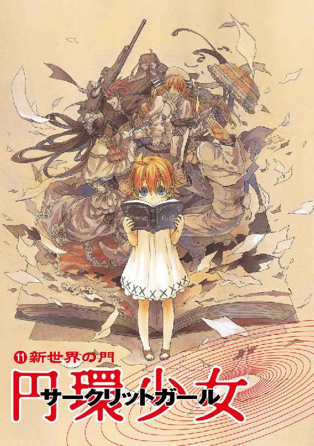
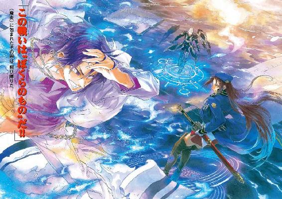
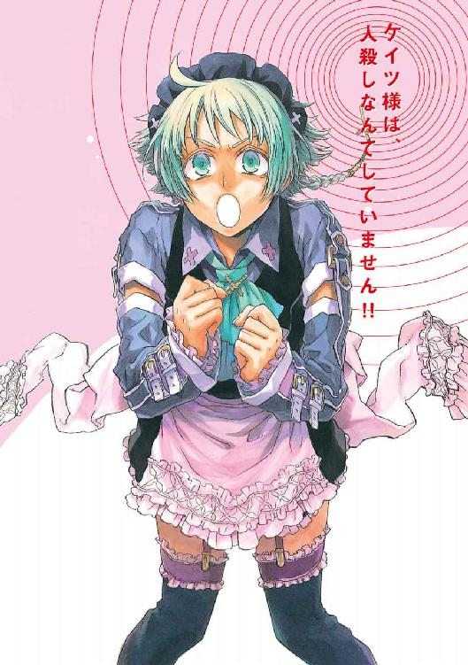
円環少女
⑪新世界の門
長谷敏司

角川スニーカー文庫
本作品の全部または一部を無断で複製、転載、配信、送信したり、ホームページ上に転載することを禁止します。また、本作品の内容を無断で改変、改ざん等を行うことも禁止します。
本作品購入時にご承諾いただいた規約により、有償・無償にかかわらず本作品を第三者に譲渡することはできません。
本作品を示すサムネイルなどのイメージ画像は、再ダウンロード時に予告なく変更される場合があります。
本作品は縦書きでレイアウトされています。
また、ご覧になるリーディングシステムにより、表示の差が認められることがあります。
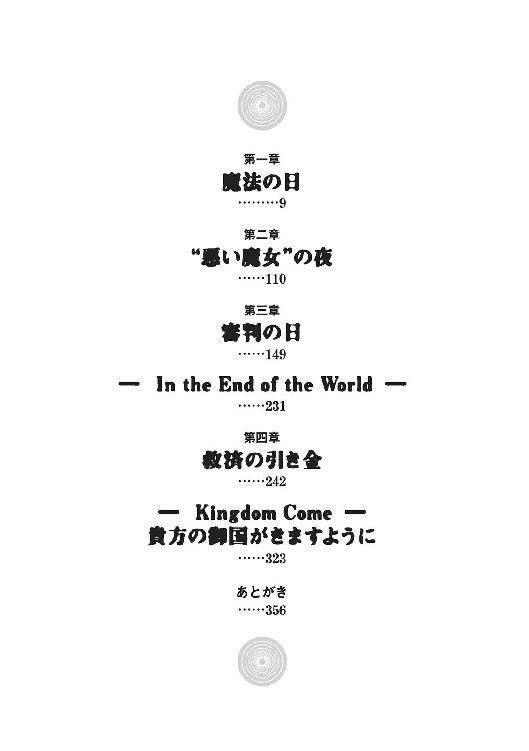
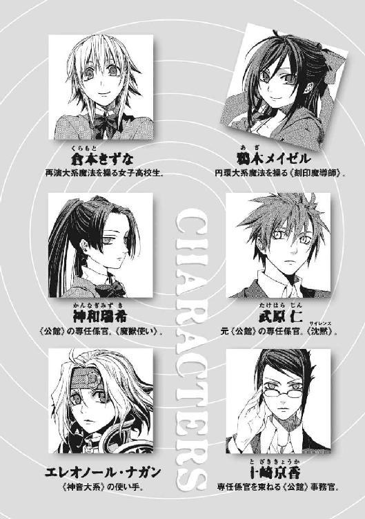
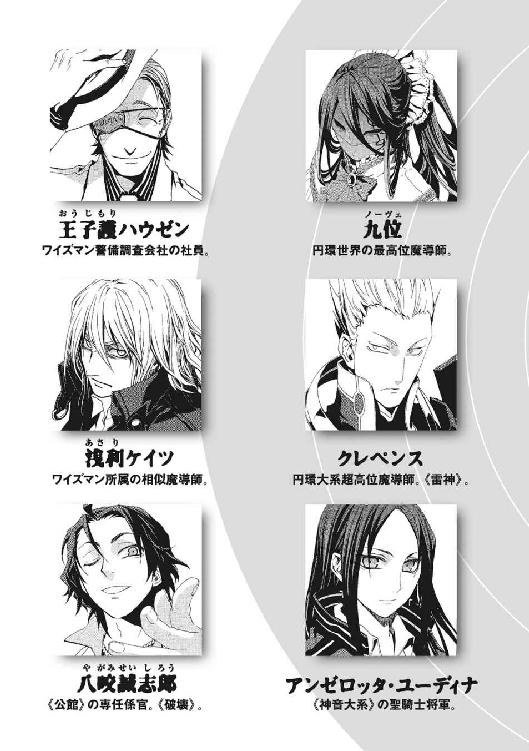
御国がきますように。
みこころが天に行われるとおり、
地にも行われますように。
──マタイによる福音書 六章一〇節──
その日は、奇蹟なきこの世界で、魔法の存在が世界中に知れ渡った日になった。
白昼、太平洋上にひとつの島が忽然と現れたためだ。ここにいた住人が、この島が古代ギリシアの伝承にあるアトランチスであり、不可思議な力で海底から脱出したのだと主張したのだ。
彼らアトランチス人は、島外の人間に見たり聞いたりされなければ不思議な力が使えるのだと言い、それを実演して見せた。この力を、彼らは「友情パワー」と呼んだ。
〈噓や冗談で言っているのではありません。本当にそうなのです〉
アトランチス人たちに招かれてヘリで取材に訪れていたテレビ局のレポーターが、カメラの前で何度も繰り返していた。
見られていては使えない力そのものを、テレビでも映すことはできなかった。だが、島民の代表者であるハウゼン・Ｏ・ジモリーたちは、布きれの簡単な覆いの下で、鉄棒や石を自由に成形し、あるいは変質させた。中継映像は、全世界のニュースメディアに流れ、よみがえった伝説のアトランチスのことを知らぬ者はいなくなった。
武原仁も、街が真っ暗になった夜、アパートでニュースを見ていた。
今日の大事件は、アトランチスの浮上だけではない。東京湾の埋め立て地の東京国際展示場で爆破事件が起こったのだ。画面には、東京最大の展示場が無惨に崩れ落ちているさまがライトに照らされて映し出されていた。
仁は、風呂上がりに居間で疲れを癒しながら、画面が切り替わってはじまった警察会見を眺めた。警察幹部が、夏に起こった核テロ事件との関連を含めて捜査を進めていると記者たちの前で説明をしていた。
「あいつら、ちゃんと逃げ切れたかな」
心配になって、思わず声に出した。仁は、爆破されたこの展示施設を、警備していた。ここで、魔法使いたちと日本の治安機関の、非公式の会議があった。
その結果が、報道番組で映され続けている廃墟だ。会議は敵からの襲撃を受け、百名ほどの生き残りが大火災を起こした展示場から海中へと逃れたのだ。
仁を、かわいらしい声が勇気づけた。
「せんせ、今さらくよくよしたって、何もはじまらないのよ」
振り返ると、黒髪に赤紫のリボンを結んだ少女が、前屈みになってテレビ画面を覗き込んでいた。まだ小学六年生の彼女がエプロンで手をふいていた。チャンネルをぱちぱちと切り替えては、どこを見てもニュースなことを残念がっている。
「でも、もうちょっとあそこにいたら、あたしたちこれに映ってたのね。ガッコウの子たち、すっごくおどろかせたげられたはずなのに、残念だわ」
この少女、鴉木メイゼルは、魔法使いだ。彼女たちは、ゆがんだ自然秩序を持つ異世界の住人だ。彼女たち異世界人は、観測することを通して、このゆがみを自分たちの意志に従わせる技術を発展させた。そして、何千年も昔から、魔法実験に最適だから、仁たちのこの世界を訪れ続けている。
この交流の歴史の中心だったのが、《協会》と呼ばれる魔法使い集団だ。仁がここ半年で職を失い、大勢の居候を抱え、幾度も死にかけ、せ方敵だらけになったのは、おおむねこの《協会》の内紛に巻き込まれ続けているせいである。昼間の会議も、《協会》の暴走にどう対処するかの合意をつくるためのものだったのだ。
ちいさなメイゼルが、「せんせ」と仁を呼んだ。仁の目を意識したように、子どもっぽいちいさな手でエプロンの肩紐を直していた。
少女の薄い胸元と重力でたわんだ服との間に、微妙に気恥ずかしい隙間が空いていたから、仁は目をそらした。二十四歳の彼としては、出会ってからどんどん仕草が女性らしくなってきた少女を、どうしようもない。出会ってから半年間で近くなりすぎたのだ。
「どうして顔をそらすの、せんせ？ 呼んでみただけよ」
メイゼルは日本語がうまくなった。少女は、円環世界という魔法世界から罪人として流刑されてきた。そして、受け入れ先の政府機関のはからいで普通の小学生のように暮らし、そこの職員だった仁も彼女の生活を監督するためニセ教師として学校に入った。ふたりして、慣れないことをしながら関係を築いてきたのだ。
「おとなをからかうな」
仁は、居心地悪くて立ち上がると、カレーの匂いが漂ってくる台所へ向かった。子犬のように、メイゼルが後ろについてきた。
アパートにいる魔法使いは、メイゼルひとりではない。今は、男だけで七人も客がいる大所帯だ。台所では、頭から顔を縦一文字に断ち割るようにファスナーを縫いつけた大男が、大きなカレー鍋をおたまじゃくしでかき回していた。この異相の男、《金庫室》ペンローズも罪人だ。《協会》圏の魔法世界には、刻印魔導師と呼ばれる極刑がある。メイゼルを含めた居候たちは、全員刻印魔導師としてこの世界に追放されてきたのだ。
「親分、耳をすますと、カレーさんがおしゃべりしてる気がしないっスか？」
ペンローズたちは、これしかまともに食べられるメニューがなかったため、カレーに宗教じみた尊敬を抱くようになった。隣の流しでは、背の高い少年がキャベツを刻んでいた。
「あはは、ぼくら、頭悪いですね」
目を細めて鋭い眼光を隠す彼は《笑い顔》虎坂井レイ。仁のもとに身を寄せる刻印魔導師の精鋭、《鬼火衆》のリーダーだ。
《鬼火衆》は、昼の会場警備で、ひとりの仲間を失った。遺体は、居間と続きになっているメイゼルの寝室に横たわっている。だからこれは、ほんのつかの間の安息だとみんなわかっていた。
テレビを置いた居間にたむろしている《鬼火衆》の残りの面々も同じだ。《協会》圏魔法世界では卑語である英語の「ドキドキ英語しりとり」で、故人をにぎやかに送っているのが、台所まで聞こえてきた。
アパートの玄関のドアが高い音を立てて開いた。褪せた金髪を肩のあたりで切った高校生くらいの少女が、部屋に入ってきた。清楚な物腰の彼女の白い頰には、かすかに火傷の痕がある。
「仕事先にしばらくお休みすると、あいさつしてきました。これで身軽に動けるでしょう」
多くの傷を隠すため手袋をした両手に、大きなビニル袋を提げている。がさがさ音を立てる袋からは、安い油の匂いがした。
彼女──エレオノール・ナガンは、かつては若手の聖騎士として将来を嘱望された魔法使いだった。
人口密度の高い居間を青い瞳で一瞥すると、エレオノールが履き物を脱ぎながら仁を見上げてきた。
「《沈黙》よ、彼らは働いていないのですか？」
まだ高校生の年齢であるエレオノールのことばが、アパートの空気を凍り付かせた。彼女は、精肉店でアルバイトをして生計を立てている勤労少女でもある。
「戦い終わってくたくたのところに、追い打ちをくれてやるな」
「ですが《沈黙》よ。私が出たときと、玄関の靴の様子がまったく変わっていなかったものですから」
かつて仁に瀕死の重傷をおわせた少女騎士が、無垢なことばで《鬼火衆》を刺した。
大きな図体をした男たちが、のそのそと立ち上がる。
《鬼火衆》は、働く意志がないのではない。仁たちこの世界の住人は、約六十億のほぼ全員が、見たり聞いたりして観測した魔法を破壊する魔法消去能力を持つ。だから、魔法使いたちは、この世界こそ神なき《地獄》で、住民は奇蹟の天敵たる《悪鬼》だと蔑む。おおっぴらに魔法を使えない以上、彼らは、高年齢で、学問も職歴もなく、国籍すらあやしい、社会の弱者でしかない。
仁は、男たちがちゃぶ台に食器を並べる単純作業しかできない姿が、ひどく切なかった。
「職のことは、また落ち着いてから考えろ。今日はもう座ってろ」
体温を感じた。見下ろすと、彼の心臓の位置より背が低いメイゼルが寄り添って、上気した頰に手を当てていた。黒髪の幼い魔女が、満開の花園でも目にしたようにうっとりしていた。
「みんな、おしりをひっぱたかれた犬みたいな顔してる。かわいいわ」
メイゼルは、人が苦しがる姿が大好きな嗜虐趣味者だ。興奮しきった彼女が、あめ色の目をきらめかせて、仁にもたれかかってきた。
仁のまわりの女性たちは、みんな自己主張が強い。
居間と続きの寝室から、白い肌の美女が現れた。おとななのに、生まれたままの赤ん坊のような全裸だ。彼が何か言うより前に、硬い乳房を誇るように、傲然と胸を張った。
「わかっているぞ。台所に立つときはエプロンをつけるのだな」
《無双剣》セラ・バラードが全裸なのは、そういう文化の魔法世界で育ったからだ。外でも街でも戦場でもそうだから、当然、見つかると警察につかまる。
セラが颯爽と布地を翻して裸エプロン姿になる。
エレオノールが、バイト先からもらってきたメンチカツを皿に盛っていた。
武原仁は、二十四年の人生で、多くのものを喪失してきた。両親が失踪し、妹とふたりでアパートのこの部屋で暮らしはじめたこと。妹の命を救うために、魔法使いの世界と関わらねばならなくなったこと。人を殺すことを仕事にしだしたこと。彼と同じ仕事をしていた妹が殉職したこと。幼なじみの十崎京香の両親が殺され、仁も大切だった何かを失ったこと。魔法世界と日本政府の間を取り持つ政府機関だった魔導師公館を、解雇されたこと。恩師、《鬼火》東郷永光を失ったこと。すべてに意味があったように、ちゃぶ台に食事が並ぶと感じることがある。生き残っているという事実を実感するからだ。
「親分、カレーができあがりやした」
できあがったカレーの鍋を、《金庫室》ペンローズが持ってきていた。居間では、四つもの炊飯器が湯気を立てている。
《鬼火衆》が七人、ちいさな嗜虐趣味者で仁の生徒であるメイゼル、聖騎士をやめたエレオノール・ナガン、《無双剣》セラ・バラード。カレーの匂いが充満する居間に、おそろしくあくの強い者が集まっていた。
仁は、ちゃぶ台では足りずに段ボールを寄せたいびつな食卓についた。これが、彼の作ったひとの輪だ。
「寝室のほうは、様子はどうだ。みんなもう食べ物は腹に入りそうか」
居間と寝室とをわける襖が、勢いよく開かれた。
絵本を抱えた女の子が、とことこと居間に入ってきて、席に正座した。膝小僧がつるりとしわ一つない彼女は、せいぜい十歳くらいの、ちいさかったころの妹そっくりだ。
「再演魔導師は目をさまさないわ。神和の《魔獣使い》は、まだいいって。いつまた仕事になるかわからないから、お兄ちゃんは、もう食べたほうがいいよ」
死んだはずの妹と同じ、武原舞花を名乗る女の子が、スプーンをぎゅっとちいさな拳に握った。
これが、仁が背負うと決めた重荷と、彼のところへ身を寄せた人間たちだ。
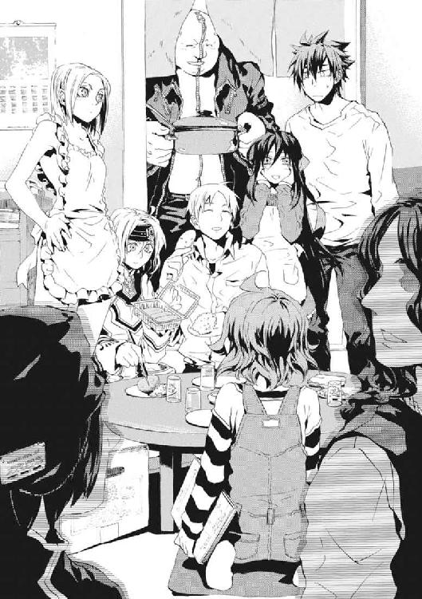
彼は、この闇鍋のような人間関係が、どういう水準のゲテモノなのか判別できない。ただ、この和気藹々としている人々を、本当に〝普通〟に暮らさせてやりたかった。
その願いは、ずっと昔、仁が戦いはじめたころ見た夢から伸びる道と、繫がっているように思えるのだ。
エレオノールが精肉店からもらってきたメンチカツをのせて、晩ごはんはカツカレーになった。
テレビのニュースは、今もアトランチス浮上事件と、東京国際展示場爆破の続報とを行ったり来たりしている。
〈ハイ、みなサン、友情パワーをぼくに集めてくだサイ〉
銀の眼帯を右目にはめた軽薄な中年男が、テレビ画面の中で両手を天に差し上げていた。
画面下に丁寧に表示された《アトランチス住民代表ハウゼン・Ｏ・ジモリー氏》というテロップを見ていると、仁は頭がくらくらした。この世界で魔法の存在自体が隠されているのは、魔法消去で証拠が用意できないこと以上に、各国政府の間に協定があったことが大きい。その事なかれ的に維持されてきた秩序を、アトランチスはぶちこわしていたのだ。
〈甘酸っぱい気持ちヲ、集めてくだサイ。ぼくらの地球に、みんなノ友情パワーが伝わレバ、世界ノ二酸化炭素排出量が五パーセント削減されマス〉
「いんちきくせぇ。なんでこれに騙されるヤツがいるんだ？」
「お兄ちゃん、王子護さん、わたしをここに連れてきてくれた人」
ちいさな舞花が、思わず正直な感想を漏らした仁をにらんだ。彼女は、ほんの一週間すこし前、王子護に連れられてきた。仁は、昔の妹とそっくりで、妹と同じ記憶と名前を持つ女の子を、どう扱ってよいか決めかねていた。理屈では間諜である可能性が濃厚だから、即刻放り出してよいくらいだったが、非情になりきれなかった。
「そこも含めて、十分すぎるくらいうさん臭いんだよ」
テレビの中の、この白いスーツを着た中年男を、仁はよく知っていた。出会ったころ、この男は、《魔術師》王子護ハウゼンと名乗る魔導師公館の職員だった。仁が、魔導師公館に身を預けてからは、彼が指導教官になった。銃の撃ち方を教わったのも、はじめて人を殺したのも、王子護の下でだ。
夏の核テロ事件でこの男と戦ったメイゼルは、もう恨んではいない様子だった。
「この人、すっごい楽しそうね」
「そりゃ、これだけ好き勝手生きてたら楽しいだろ」
食卓が静かになっていた。集まった全員が、「おまえも似たようなもんだ」とばかりに、微妙な表情で彼を見た。自分は〝悪人〟であると開きなおった仁と、Ｏ・ジモリーの差は、他人には見分けがたい。
「なんで俺だけをそういう目で見る？ おまえらだって、本来いる場所を蹴って、ここに流れて来てんだろ！」
テレビの中では、うさん臭い中年男が、にこやかな笑顔で両手を月夜に差し上げていた。
〈この世界中ノみんな。友情パワーをぼくに集めなサイ。友達いない子のモ、ちゃんと集まるカラ安心していいデス〉
だが、ギリギリで日常に引っかかっていた時間は、悲鳴で断ち切られた。
聞き慣れていたはずなのに、それが誰の声か、一瞬、わからなかった。
居間の襖一枚向こうには、昼間の国際展示場での戦いの傷跡が眠っていた。晩ごはんのカレーを食べている全員が知っていたことだ。
仁は、悲鳴のあるじが心配で立ち上がった。《無双剣》セラが、様子を見に行こうとした彼を止めた。全裸の胸元にナプキンを留めていたガムテープを剝がして、すっくと立った。
「私が行こう。おまえの顔を見て、きずながいらぬ興奮をしては困る」
セラが薄く襖を開けた。隙間から仁にも向こうが覗けた。
腥い血臭が、食卓に流れ込んだ。隣の部屋には、畳の上に、青いポリ袋をガムテープで貼り合わせて作った即席のビニールシートを敷いてある。ここを臨時の治療所として使っていたせいで、青いシートは酸化した血で黒く汚れている。
そして、壁にもたれた姿勢でひとりの少女が放心しているのが見えた。肩まである栗色の髪が、汗で首筋に貼り付いている。うなされて寝汗をかいた肌が、蛍光灯の光を白く照り返していた。制服の首のタイは解かれ、第二ボタンまで外されたブラウスが、豊かな乳房に内側から押されて大きく胸元を開いていた。
「いや、ごめんなさい！ ごめんなさい！ もう来ないで!! もう嫌──」
血の染み込んだ靴下で足下のビニールシートを蹴って、見えない何かを押し返そうとしているようだった。魔法と魔法使いに半年前に関わり始めるまで、彼女、倉本きずなは高校に通う普通の女子高生だった。
赤黒い部屋で胎児のように身体を縮めた彼女を見て、じっとしていられるはずもなかった。さっきまでのつかの間の安らぎすら、どこかでやましく感じた。すこしでも近づかずにいられなかった。
セラが、寝室へと身体をすべりこませた。そして、彼の視線をさえぎるように、ぴしゃりと襖を閉めた。だが、目にしてしまった以上は忘れられなかった。そうやって様々なことに首を突っ込むのが、仁の変えられない生き方だった。
「おまえらは、先に食べてろ。俺はしばらくいい」
古くなった襖のほうへ向かう仁を、メイゼルが見上げていた。何かを言おうとして唇をとがらせ、ちいさな魔女は結局ことばを吞み込んだ。
中学三年生のころ、ここに引っ越してきたとき、仁にとってこの部屋は広かった。同い年だった妹とふたりだけでは、ガランとしたアパートにどう生活を築いてよいかわからなかったのだ。
おとなになった今、薄い襖に手をかけたまま、仁は向こうですすり泣くきずなの声を聞いた。胸が締め付けられて重かった。恐れていたことが現実になってしまった結果が、これだからだ。
昼間の展示場襲撃のとき、倉本きずなは、自分と友だちの命を守るため、人を殺した。精神的な疲労で気絶していた彼女が、目を覚ました後、どん底まで沈むのは、なかばわかっていた。
食卓の襖一枚向こうは、修羅場だ。
エレオノールだけが、祈りのかたちに両手を組んでいた。きずなが殺した相手は、エレオノールの古巣である神聖騎士団の人間だった。この部屋で、人の命を奪ったことがないのは、ちいさなメイゼルひとりだけだ。カチャカチャと、食卓で、スプーンと食器が音を鳴らした。他の皆は、黙々と、カレーを食べていた。
妹の舞花が、カレーからにんじんをよけながら、つぶやいた。
「やめなよ、お兄ちゃん。あの子、これからも、自分のためにいろんな人をふみ台にしつづけるんだから。これは、自分の足で立たなきゃいけないお話だよ」
武原舞花は、殉職する前は、魔導師公館の専任係官として幾多の魔法使いを葬ってきた。仁は、高校時代、妹を止めようとして腕を折られたことを思い出した。左腕に、鈍い痛みがよみがえった。
「きずなちゃんが、俺たちみたいになるかはわからない。誰かそばにいてやれたら、ちがう道があるかもしれない」
祈るようにことばにしていた。そして息を潜めた。襖の奥のきずなに聞かれてはいけないことに思えたのだ。
深く呼吸をした。きずなと目が合ったとき、どう話しかけてやれるだろうかと迷った。仁にだって初めて人を撃ったときはあった。そのとき、どんな助力が必要だったろうと、記憶をたどった。確かな正解など見つからなかった。
青いシートを敷いた和室では、目を覚ましてしまったきずなが泣いていた。薄く開けた襖の隙間から、セラが仁へ鋭い視線を向けた。
「倉本きずなが呼んでいる。中に入れ」
居間の続きの和室は、専任係官になって出て行くまでは舞花が使っていた部屋だ。今は、メイゼルがここのあるじだから、古びた壁や柱には、子どもっぽいシールや時間割表が貼ってある。
倉本きずなは、昼間、仁たちが彼女を発見したときそのまま、生気の失せた様子でうつむいていた。膝を両腕でしっかりと抱えて、重い病気にかかっているかのように、全身を震わせていた。
きずなは、仕事の中ですり切れかけていた仁に、食事の団らんを作ってくれた。やさしい彼女が帰る場所を用意してくれたから、彼は昔はヒーローみたいになりたかったことを思い出せた。その彼女が、恐怖で自分を失っていた。
仁は、血の臭いがする寝室に足を踏み入れた。足音に過敏に反応したか、きずなが抱えた両膝の間に顔を突っ込んでしまった。仁は、きずなの怯えを知りながら、彼女に顔を見せてほしくてしかたなかった。彼も不安でたまらなかったのだ。
座り込んだきずなの傍らには、同い年くらいの高校生の少女がいた。二本のポニーテールに結んで頭の両脇から垂らす長い黒髪の先が、床に付いてしまっていた。魔導師公館の専任係官、《魔獣使い》神和瑞希は、きずなのクラスメイトで友だちでもある。人形のように整いすぎた白い手足で、きずなの縮こまった身体を横から抱いてやっていた。
「......きずな......もう、......あいつら............いない......」
神和瑞希の学生服は、染み込んだ血で赤黒く染まっていた。数時間前の彼女は、十本以上の銛に身体を貫かれ、魔法使いでなければ確実に死んでいる重傷だった。
「神和、離れろ。きずなちゃんと話がしたい」
仁の命令に反発して、瑞希が完璧に整った顔をあげてにらみつけてきた。
「きずなちゃんが、おまえを守ろうとして〝あれ〟をやったことを思い出せ。おまえがその血だらけのナリでそばにいると、嫌でも思い出す。そのくらいは気を回せ」
仁に指摘されて、瑞希が、野良犬に説教されたかのように、呆然と薄く唇を開いた。そして、青白かった頰を屈辱で朱に染めた。
「......着替えて......もどって............くる......」
彼女が立ち上がった。そのガラス玉のような黒瞳が、まだきずなの姿を心配そうに注視していた。
瑞希が去り、空気を読んでセラもいっしょに消えた。四畳半の寝室は、きずなと仁だけになった。
「きずなちゃん、まずは、メシを食ったほうがいい。朝ごはんを食べたっきりで、何も食べてないだろ」
彼がまず言いたいことは、それだった。しぶとく生き延びてきたことが身上とはいえ、あまりに想像力が貧困で情けなかった。
「武原さん、呼び方──」
きずなが顔を上げた。
「わたしの呼び方、『きずなちゃん』に戻ったんですね」
やさしい垂れ気味の目のふちが、強くこすったのか赤くなっていた。泣きすぎて頰の肉が突っ張っているのを見ると、その顔に触れてやりたくなった。
だが、痛みを抱えて歪んだ表情のうちで、はっきりと意志をたたえる濃紺の瞳が、仁を拒絶していた。倉本きずなは、父子家庭だった。その父親を、仁が、殺した。この事実を隠して彼が家族のように食卓を囲んだ不誠実を、きずなが許してくれたわけではない。
「もうすこしだけ、何も考えずに身体を休めたほうがいい。きずなちゃんが魔法使いに関わり始めてから、まだ五ヶ月だ。この先のことを考えたら、答えを出すにしても、後悔しないようにゆっくりやったほうがいい」
その半年にもならない間で、普通の女子高生だったきずなは、すこしずつ追い詰められていった。そしてついに、神聖騎士団は機械化聖騎士師団の一隊、参謀ベレーノ・ネロを含む十二名を、彼女が殺したのだ。
もうどうしてよいか、きずな自身にもわかっていないはずだ。だからこそ、誰もどうすることもできない。
「わたし、武原さんに、ずっと『人殺し』って言い続けてたのに」
「きずなちゃんの言ってたことは、まっとうだった。今回のことだって、きずなちゃんが悪いわけじゃない。身を守って、神和の命も守るには、もうあれくらいやるしかなかった」
「どうしてこんなことに......。わたしが悪かったんですか？」
「悪くはない。ただ、友だちを見捨てなかったから、ああなるしかなかっただけだ」
仁は、きずなのすすり泣きしか聞こえない沈黙をことばで埋めた。
「そういうものなんだ。どうやっても、よくない答えを選ぶしかないことだってある」
まるで彼自身のためのことばのようだった。きずなの父を殺さずに止められなかった彼自身の正当化だったからだ。
「おとなのケンカには、かならず落としどころがある。今日は、聖騎士のほうから、どっちかが死ぬしか落としようのないケンカをきずなちゃんに売ったんだ。だから、あいつらが助からなくても、きずなちゃんが気に病むことはない」
ただの欺瞞だからことばは軽くて、だからこそ、いくらでも言えた。
「きずなちゃんは、よくやった。きずなちゃんは、友だちの神和を守るために戦ったんだ。最初から死なせようとしてたわけでもない」
彼が許しても、ほめても、現実は変わらない。それでも、救われた瑞希の感謝がきずなに届いていない以上、仁のほかにこの戦いを評価する者はない。
だが、これまで「戦いをやめてほしい」と主張してきた彼女が、だまされるはずもなかった。
「どうしてわたしをほめようとするんですか？」
「きずなちゃんが、立派なことをしたからだ」
彼女が潔癖に眉を吊り上げた。それは、悲鳴だった。
「人を殺してよかったなんて、あるわけないじゃないですか！」
非難されて、ほっとした。人を殺してほめられることは、きずなの感覚でははっきりとおかしい。仁は身勝手でも、彼女が変わっていないことに安堵していた。
仁は、自分で自分の世界を壊してしまったように悄然とする彼女の背後に、同じ十七歳で人を殺した彼自身を重ねていた。だからこそ、きずなをひとりにできなかった。
「人死にが出た以上、まるくおさまることはない。けれど、自分たちが死んだら終わりだ。きずなちゃんの大事な人間は、誰も死ななかった」
寝室の隅には、毛布に包まれた不自然に大きなものが置かれている。仁のところに身を寄せ、会議の襲撃で戦死した《鬼火衆》のひとり、《黒鯨》マランキシュの遺体だ。彼は、きずなに毛布の中身をまだ教えていない。
ことばではきずなをほめながら、彼女が戦わねば神和がどうなっていたかを、実例で示すことはしなかった。死体を使って命の軽重を割り切らせることを、仁はためらったのだ。
「晩メシを食おう。神和が待ってる」
仁が、倉本きずなと囲んだ食卓は、いつも問題の先送りと一体だった。出会った当初、魔導師公館の事務官、十崎京香の家で開かれていたときからそうだった。
メイゼルが、きずなのぶんのカレーをよそってやっていた。戦うためにやってきて、子どもだから守られているちいさな刻印魔導師が、人を殺してしまったきずなへ向ける目は複雑だ。死に近いことと、殺人という線を自分の足で踏み越えることは決定的にちがう。
きずなと神和が加わった食卓は、肌も触れあうほどに人の密度が上がっていた。瑞希はエレオノールの持ってきた着替えを強奪していた。瑞希のほうが手足が長くスタイルもよいので、清楚なシルエットのワンピースが幾分大胆な露出になっていた。こうして比べてみると、身長も五センチ以上瑞希のほうが高い。
きずなの両脇を守るように、瑞希とエレオノールが座っていた。このアパートは、本来、彼女たちの帰る場所ではない。ただ、セラと神和が重傷を負い、きずな本人も気を失ってしまったから緊急避難先として連れてきただけだ。
だから会話がなかった。団らんにはほど遠い、居心地の悪い沈黙が、居間を拘束していた。
カツカレーを食べ終えたエレオノールが、祈りの形に指を組んだ。
「わたしにだって料理はできます。今日は、わたしも料理に参加したのですよ」
だが、話題を振られても、きずなは空腹を満たすだけで精一杯の様子だった。見ていて、まだカレーの味も感じていないにちがいないと思えた。だから、ただ楽しそうな空気がほしかった。
「おまえメシの上にメンチカツ置いただけだろ」
「サラダなどというのは、切って混ぜるだけで料理ではありませんか。カレーにメンチカツをのせるのも、立派な料理と言えます」
エレオノールと、普通の会話をしていることが噓のように思えた。
「なんかこう、それはダメだろう人として」
「失礼なことを言うのですね。貴重なタンパク源をわけてもらえたことに感謝はないのですか」
「......タンパクは......もういい......きずなの話と......タンパク質...まぜるな......」
エレオノールと瑞希が、きずなを気遣って明るい雰囲気づくりに付き合ってくれていた。ふたりとも、もっと若くから血まみれの道を歩んでいる。
「それはそれ、これはこれです。タンパク質は生命、生命は神の御業です。つまり、すべてのタンパク質は祝福されているということではありませんか」
聖職者である元聖騎士が、カツカレーを前に生命賛歌を説いていた。
「おまえ、本職以外のことでは何もしゃべらないほうがいいと思うんだ」
仁自身の十七歳の頃と比べて、きずなは人に恵まれていた。だが、エレオノールがここにいるのも、公館本館が陥落する直前、彼女の部屋に転がり込んだせいだ。迷惑をかけまいと出て行こうとした仁と対照的に、きずなはそこで人間関係を頼ろうとした。たぶんそうやって人間関係というのは強固に結ばれてゆくのだ。
「きずなちゃんは、瑞希やエレオノールのことを大切に思うか」
きずなも瑞希も、エレオノール自身すらもが、仁がかつて聖騎士だった鎧乙女を仲間扱いしたことに驚いていた。少女たちは、それぞれに若いから戦うことに潔癖だ。
迷惑をかける、甘えるということには、たぶん上手い下手がある。きずなは、それが上手だった。
「たぶん、大切かな......」
痛みを抱えて、きずなが泣き笑いに微笑んだ。顔を洗っただけで着替えすら拒否した彼女は、ぼろぼろのままだ。それでも、苦しいときに人の手をとれるほど彼女は強かった。
きずなたちと昼の襲撃を全裸で戦い抜いたセラが、つぶやいた。
「私は、入っていないのか」
「おまえ、全裸なせいで目立ってないけど、その場のノリで生きてるだろ」
食卓にはじめて笑いが起こった。どうしようもないぴりぴりした空気が漂う中の、泣き笑いだった。
だが、仁ときずなの間のどうしようもない壁は、まだ横たわったままだ。きずなは、舞花と初顔合わせをしたとき、「次に会ったとき結論を出す」と言った。こんなかたちでなし崩し的に一緒にいるが、これは結論ではなかった。
義理の父を殺されたきずなが、その仇である仁の近くで生きてゆけるのか。答えは、もうすぐ出る。
「──ねえ、どんな気持ち？」
突然、そんな声が台所から投げられた。食卓の空気が凍り付いた。
仁は、強張った首を向けた。一足先に、食べ終わったカレー皿を流しへ持って行っていた舞花だった。外見通りの子どもの声と、辛辣なせりふが結びつかず、彼は頭がまったく働かなかった。
「手を汚してもらって守られてきたくせに、お兄ちゃんのこと、ずっとせめてたんじゃないの？ 自分でやったら、そんなヒガイシャみたいな顔ができるんだ？」
「やめろ！ 言うな」
「どうして？ こういうこと、早いうちにはっきりさせないから、お兄ちゃんはいっつも失敗するんだよ」
「今は、非常時だぞ。襲撃からこっち、魔導師公館に連絡がまだ繫がってない。俺たちは、これから夜のうちに、この部屋から動かなきゃいけない可能性が高い。集団を割るかもしれない痛いところを触るのは、先のばしじゃなくて、生き残るために一区切りしてからにするべきだ」
元々、食事が終わったらすぐに切り出すつもりだったのだ。仁は、《黒鯨》マランキシュの死体をアパートに置いておけないから、引き取りに来てもらうため電話をかけ続けている。だが、夜まで待っても、仁の古巣であり、昼間の会場警備をともに行った魔導師公館から連絡がこない。
「情勢だって、俺の把握していた数時間前とは変化しているかもしれないんだ」
仁も、考えたくない可能性だった。
テレビ画面の中では、Ｏ・ジモリーが、能天気な面をさらして、数時間前まで世間に隠されてきた真実を暴露していた。
〈友情パワーは、アトランチス人以外の人に見つかると、壊されてしまいマス。このとき、ぼくらが《魔炎》と呼んでるアトランチス人にしか見えないオレンジ色の光があがりマス。だから、お友だちには感覚できない、オレンジ色の火みたいな光をよく見る人は、ぼくらアトランチス人の血を引いてマ～ス〉
アトランチス人を「魔法使い」、友情パワーを「魔法」と言い換えれば、まさにこれが現実だ。王子護は、魔法使いとこの世界の住民が住み分けるという、最低限のルールをぶちこわした。房総半島の南東に人工島を浮上させ、魔法使いを「アトランチス人という民族だ」と国際社会に認めさせることで、この世界での人権をだまし取ろうとしている。だが、これは裏返せば、魔法の問題が、仁たちの社会の問題になってしまったということだ。つまり、魔法使い情勢と国際政治も一時的に接触している。
「そんな顔するなよ。当たり前だろ。魔導師公館は、日本の政府機関だ。日本はアメリカの意向を無視できないし、そうなれば米軍と協力関係にある神聖騎士団と、抗争が続かないほうが自然だ」
倉本きずなの顔から、血の気が引いていた。神聖騎士団は、きずなが魔法使いとして目覚めてから、ずっと彼女をつけねらっている。魔導師公館が神聖騎士団と本当に結べば、きずなは日本に居場所がなくなる。仁の古巣が聖騎士といっしょになってきずなを攻撃して、それから守るため、彼が銃を向ける展開を想像しただけで、横腹がキリキリ痛んだ。
そもそも刻印魔導師は魔導師公館に籍を置いている。だから、《笑い顔》虎坂井レイが、意志を問うのも当然だった。
「大将。要するに、魔導師公館まで、ぼくらの敵に回るってことですかい」
《公館》で専任係官のまとめ役をしている十崎京香は、仁の幼なじみだ。だからこそ、情に流されはしないが、彼女がチャンスはくれることをよく知っていた。
「京香姉ちゃんのやり方で、事態がこんなに大きく動いているのに、使える戦力のはずの俺たちからの連絡がここまで無視されるのは、おかしい。連絡を切られてること自体が、風向きが変わったことを教えてくれてるんだ」
たぶんこの空白の時間は、京香が作ってくれた行動のための猶予だった。
「せんせ、つまり、夜逃げってこと？」
ぞっとした。日本の魔法使い事案を管掌する魔導師公館を敵にしたなら、仁たちは本当に孤立無援になる。仁は、メイゼルを助けてやりたい。《鬼火衆》にも責任がある。きずなをも見捨てず救おうとすると、もはや今のままでは無理だった。仁がようやく押し出した声は、緊張でかすれていた。
「これから修羅場になる。《公館》から攻撃を受ける前に、他の勢力に知られてる居場所は引き払う」
動き出せば、魔導師公館は本当に殺す組織だ。情が決定を歪めることは、ほとんどない。九年間、そこで働き続けた彼が、もっともよく知っていた。
「何が起こってるかもわからずに、誰かの事情で死ぬのはご免だ。必要な情報が集まるまでは、姿を消す」
†
魔導師公館の組織は基盤が脆弱だ。存在自体が公然のものではなく、職掌を守る法すら成文化されていないからだ。関係者には《公館》と称される魔導師公館は、魔法使い事例を一手に引き受ける政府機関である。魔法の存在自体が秘密であったため、事態に合わない戦前の法がろくに改正もされずに残っているだけだったのだ。
だが、アトランチスの浮上が《公館》の足場を一変させた。魔法が国際社会の大問題になったとき、内閣総理大臣から直々の声がかかった。官僚機構の中に居場所を求める限り、法手続きすらまともに成文化されていない行政機関は、政治から本気で圧力がかかれば従うしかない。
事務官、十崎京香は、魔導師公館の治安維持活動の実質上の指揮者だ。それは変化に立ち会わねばならない身だということでもあった。
「元々は、警察庁のもっと上の幹部との顔つなぎに来たのでしょう？ ついでに会っただけの我々には、握手などという白々しいポーズをとる必要もないはずです」
京香は、黒髪の美女から差し出された手に、鋭いことばを返した。中央合同庁舎二号館の警察庁に間借りした《公館》に、本来いてはならない人間がいた。在日米軍の横田基地に駐留していた、神聖騎士団の機械化聖騎士師団が、京香に与えられた個室にあいさつに来たのだ。
聖騎士将軍《至高の人》アンゼロッタ・ユーディナは微笑んでいた。超高位魔導師──魔法使いの最上位グループにあるアンゼロッタの笑みは、人間を風景としか見ていないように超然としている。
世界の中心軸のようにぴんと背筋を伸ばす聖騎士将軍に気圧されまいと、はっきり言い直した。
「我々は、記録に残るだけでも黒船来港から抗争を続け、ついには公館本館の陥落にまで至った間柄です。政府の決定には従いますが、そこ以外については、たとえば握手をしたという記録が残ることすら迷惑です」
「神聖騎士団と日本政府の間には、アメリカの仲介で、アトランチスにかかわる軍事行動で協力する約束がかわされています。中途半端な立ち位置にある《公館》が、政府の方針に反抗することは、危険ですよ」
京香は、感情に振り回されかけた頭を冷やすため、一呼吸間をおいた。今回のことは、彼女たちにとって公館本館を失い、官僚機構と密接な関係をとりはじめて最初の大きな危機だ。だから、新しい魔導師公館がいかにして魔法使い事案を解決するかという、道筋と存在意義を示さねばならなかった。
「ひとつの事案での協力と、協力関係を築くことは、異なります。人間を虫けら程度にしか見ていない魔法使いというものと、関係を築いた気になっていては身の破滅です」
聖騎士百万騎の頂点の一角であるアンゼロッタは、敵地の中でも平然としている。
「神聖騎士団だけはちがうと、ご理解いただけていると信じています。だからこそ、こうして、この世界の治安機構にもあいさつに来たのです」
神聖騎士団は、魔法世界で唯一、京香たちこの世界の住民を《悪鬼》呼ばわりしない魔法使い集団だ。そして、この世界を魔法実験場としか見ない《協会》と決裂し、一万年も戦争を続けてきた。
だが、京香は、聖騎士たちの東京侵攻のさなか、両親を何者かに殺された。敵が道理を唱えながらどれほど熾烈な殺戮をなすか、よく知っている。
「《神》が存在しないこの世界は《地獄》ではなく、いつかすべてを救う《真なる神》が降臨する《約束の地》だと？ 神聖騎士団のそのご託も、争いに巻き込まれて被害を被る我々には迷惑なだけです」
軍服を第二の肌のように着こなすアンゼロッタの細身に、彼女の悪意は刺さらない。
「その《公館》の怒りを、わたくしたちは許します。ですが、アトランチスは放置できません。これは、アメリカ政府と日本政府の共通した見解でもあります」
アンゼロッタは《公館》の状況をよく知っている様子だった。だからこそ、京香たちの職場まで大胆にも顔を出したのだ。
「魔導師公館の仕事が新しい局面に入ったことと、あなたがた聖騎士の戦略は別問題なので、混同して語られても困ります。我々は、人狩りではない正常な治安活動を行うために必要な人員が決定的に不足していたため、警察に接近したのです。通常の行政と政治とも接近した我々は、すべてを闇に葬るだけの古い組織だったころほど、自由ではありません。アトランチスにかかわる意志決定は内閣が行います。──ですが、我々は《公館》の本能を捨てたわけではありません」
京香たちは、〝魔導師公館流〟の仕事を危険視されて方針決定から外された。つまり、今回は、すでに政治的に敗北した状態から戦いをはじめねばならない。だから、公式の接見ではない以上アンゼロッタを多少怒らせてもかまわないと割り切った。
「とはいえ、アトランチス浮上という有事にアメリカが反応しないわけはなく、そうなれば日本政府に自由な決断などできるはずがないのでしたね。ですが、アトランチスが日本の排他的経済水域とほとんど接する位置に浮上している以上、この問題で手を結ぶにしても、慎重に条件を練った上であるべきでしょう。くわえて、アトランチス自体人を考慮に入れないなら、公海上の島であるアトランチスに最初に上陸した国籍が明確な人間は、日本の報道機関であり、日本人です」
公海上に現れた島の権利は、最初に領土として実効支配した国のものになる。民族自体も突然現れたもので国家と認められてもいないアトランチス自体を除外した場合、現在この条件にもっとも近いのは日本だ。つまり、王子護ハウゼンにおおっぴらな国際問題にされたことで、《公館》はゲリラ攻撃を封じられたということでもある。
「アメリカと日本の共通見解が、この短時間で出たとも聞いていませんが、あなたは何をしに来たのですか。『アメリカは日本が持つ権利を無視する意志があり、その意向をあなたが伝えに来た』ということですか」
外務省が水面下で、アメリカだけでなくロシアや中国、アジアの国々とも連絡をとりあっている最中だった。東京から四百キロメートルしか離れていない島が他国に領有されては、この国の国防は戦略自体の見直しを迫られる。
若き聖騎士将軍は、政治家でも官僚でもない。だから、こんなデリケートな問題ですら、すべてを知っているかのように断定口調で話した。
「今回の事件は、魔法使い事案の枠を飛び越えてしまいました。魔導師公館だけではなく、神聖騎士団の手にも負えない大きさになったからこそ、この世界の国家と政治を通して協力ができます」
京香には、聖騎士たちが狙う本命はアトランチスそのものではないように思えた。アンゼロッタは手に負えないと言っているが、神聖騎士団百万騎が本気になれば、アトランチスを陥落させることはたやすい。アメリカとの関係が足かせになっているとしても、神聖騎士団は、《公館》のような国家機関とは異なり、米軍と協力しているだけの独立した魔導師集団であり、行動の制限は小さいはずなのだ。《公館》ないし日本政府と協力関係を構築したい理由を、アンゼロッタたちが現状まだ京香たちのつかんでいない〝何か〟をつかんでいるためだと、彼女は読んだ。
「手に負えないかは、見解の相違でしょう。たとえばアトランチスに居住する魔法使いが全員死亡して、問題自体が消えてもよいのです。だから、これは広義の魔法使い事案です。神聖騎士団の力なら、本来、簡単に鎮静化できるでしょう」
「たいへん《公館》らしい考え方です。あなたは、神聖騎士団が、ワイズマン警備調査会社と協力関係にあって、詐欺行為を行っている可能性もあると疑っているのです」
ワイズマン警備調査会社は、今回のことを仕掛けた王子護ハウゼンの雇い主だ。ワイズマンは魔法使いたちが経済的強者になることを目指して作られた企業で、核爆弾を取り扱い商品リストに入れている。太平洋上のアトランチスは、数十発の核爆弾を搭載した要塞であるかもしれない。すくなくとも京香には、神聖騎士団がアトランチスを利用して、魔導師公館の仕事に内側から食い込み、政治的に完全に潰そうとしているというほうが、ありえそうに思えた。
彼女に与えられた十五平米ほどの執務室にも、廊下の騒がしさが伝わっていた。現在、本館を焼失した魔導師公館は警察庁に間借りしている。だから、部屋の外は国際展示場爆破事件の対応で慌ただしい。これの犯人が、かつて《公館》が交渉を担当していた魔法勢力──《協会》であることが、京香たちが意志決定から外された建前上の理由だ。
「ワイズマンと神聖騎士団に密約がある可能性を、当然ですが、我々《公館》は考えています。八月に死亡したと報告を受けた王子護ハウゼンが生存していた件について、あのとき地下都市に神聖騎士団が部隊を出していたことに大きな興味を持っています」
「王子護ハウゼンが〝生きていた〟件については、神聖騎士団は、逆に《公館》から出た死亡報告自体を疑っていました」
この部屋は、魔法使いに不信感を抱くこの国の官僚に、注意深く盗聴され続けている。この会話を盗聴している警察庁の官僚が何を考えているか、想像すると楽しくなった。
「《至高の人》アンゼロッタ、いっそあなたが王子護ハウゼンの暗殺でもなさってはいかがですか」
「暗殺は、あなたがた魔導師公館の仕事であったはずです」
京香は、頭がほぐれてふと気づいたのだ。機械化聖騎士師団は、天才アンゼロッタが機械化装備を作ったことで創設された極端なトップダウン型の組織だ。そんな組織の長が、《悪鬼》だらけで魔法の使えなくなる合同庁舎まで、ただあいさつになど来るはずがない。
「《至高の人》も交渉は苦手のようですね、アンゼロッタ将軍。倉本きずなをとらえ損ないましたか」
倉本きずなは、魔法使いをあやつる特殊な魔法を使う魔法使いだ。そして、神聖騎士団がつけねらいつづける相手でもある。現在、きずなの足取りは爆破された東京国際展示場から完全に途絶えている。誰がかくまっているかは容易に想像がついた。ここにいるアンゼロッタも、きずなが武原仁のところにいることまでは追跡したが、取り逃したのだ。
「国際展示場で参謀ベレーノ・ネロを失ったことが、効いているようですね。何もかもあなたが決める組織の構造では、副官を失うと意外にこたえるでしょう」
「神意が向かう結果ならば、犠牲もまた正しいのです」
それは、襲撃でまた新たに犠牲を出し、血の対価を手に入れていないということだ。京香は、緊張がゆるんで、頰の力を抜いてしまっていた。アンゼロッタのささやかなつまずきに、幼なじみである彼女にも武原仁という男を理解できないからこそ、共感を覚えた。仁もまた、《公館》が生み出した予想のきかない一種の怪物だ。
京香が微笑んでいるように見えたか、わずかにアンゼロッタが視線を動かした。
「失礼、《至高の人》も、やはり女性だということがわかったものですから。女性にとって、男性はしばしば理解の枠外だということです。ミズ・ユーディナ、あなたにとっても」
京香は、仁たちがアパートから姿をくらましたことにほっとしていた。彼らが《公館》スタッフと衝突する可能性を避けたということだからだ。彼女は仁たちを見捨てた。だが、それでも政治的にも心情的にも、連絡をとれる可能性は切らずにとっておきたかった。
「遠慮せずよろこび、笑いなさい。こうしている時間、あなたは、救いへの旅を歩む同行者なのですから」
アンゼロッタは超然と、だが彼女よりも自然で大きな微笑を浮かべていた。
「獣が足跡をごまかしても、大地の上からは逃れられていないように、何者も《神》の手を逃れることはありません」
「《神》の手が何かは知りませんが、所詮、動くのは有限の人の手です」
魔導師公館は、治安維持の職責を果たすために実行者として専任係官を置き、《協会》から提供された刻印魔導師を道具として利用する。この残り少ない戦力を、激戦になるアトランチス戦に投入する意味を、京香は現状では見いだせなかった。
だが、だからこそ早すぎる判断を下せる筋道がついていることが、気味悪かった。もしも神の手のようなものが本当にあるなら、こうして人を導くように思えたのだ。魔法消去者である京香のこころを、魔法で操ることはできない。だが、《神》と神意が本当にあるなら、アンゼロッタをわざわざ遣わせて「《公館》が戦力を出し渋る」ように誘導はできる。
《至高の人》の背後に、一瞬、彼女たちが積み上げた一万年の闘争の歴史を幻視した。アンゼロッタたちがきずなを狙って東京にやってこなければ、仁たちが目指す「魔法使いが魔法使いとしてこの世界で自立すること」は、日本で果たされたはずだった。日本政府から魔導師公館経由で仕事をもらい、社会に居場所を築く道もあった。だが、現状では不可能だった。
すくなくとも武原仁には、神聖騎士団が崩壊するか、最低限度このアンゼロッタ・ユーディナを斃すかしなければ、安息はない。それとも、いっそ倉本きずなを切り捨てるかだ。
確実に、決定的な事態がはじまっていた。
アンゼロッタは、警察幹部たちとの顔合わせのために出て行った。会話を盗聴された結果か、京香は臨席を望まれなかった。部屋で「暗殺」「皆殺し」等々、「殺」の字が付く単語を口にすると、彼女は接見に呼ばれなくなる。
ひとり夜の執務室に取り残されて、彼女は状況分析と今後の魔導師公館の行動指針をレポートにまとめた。そして、アンゼロッタが合同庁舎を出たとの報告を聞いてから、外出の用意を調えた。人と会う用事があったのだ。
魔導師公館が抱える案件は、アトランチスと王子護ハウゼンだけではない。警察庁が殺人的な忙しさで回っていたのは、同じころ起こった国際展示場の爆破のほうが原因だ。
犯行は、超高位魔導師《九位》率いる《協会》主流派によるものだった。このため、内部情報を漏洩する者があったと疑われた。つまり、《協会》との交渉を担当していた京香たち《公館》の、警察からの信頼度は低い。
アンゼロッタ・ユーディナは「暗殺は魔導師公館の仕事だ」と言った。京香は、そうするつもりだった。王子護は陽の下に身をさらしたが、昔ながらの魔法使いである《九位》は、仕事を暗闇でひそかに行っている。だから、京香たちも伝統的な後ろ暗い方法で対処できる。
京香が庁舎から出ると、手回しの良いことに黒塗りのハイヤーが来ていた。非常時の彼女たちの送り迎えは、保安上の理由で豪華になる。
「車を回してください。車内で例の囚人の関係者に接見しますが、よろしいですか」
現在、爆破事件はテロリストの犯行だと報道されている。八月の核テロ事件がまだ人々の記憶に新しいこともあって夜間の外出はひかえられ、心もち都市に活気がなかった。
京香が会う相手は、桜田通りを南下した、赤羽橋近くのガソリンスタンド前にいた。京香と同じくらいの背丈の、スカートの短いメイド服を着た十代半ばの少年が、憂い顔で立っていたのだ。
歩道側に運転手が車を寄せた。自動ドアが開くと、彼女の座る後部座席側に、メイド服の少年が上品に手をついて尻を座席に置いた。リュカ・エラド・マナ──相似大系の最高位魔導師だったスセラミス・エリド・マナの子にして、元刻印魔導師浅利ケイツの付き人だ。
「ぼくを、ケイツ様のところへ連れて行ってくださるというのは本当ですか？」
車が、発進音をほとんど立てずに走りだした。そしてスモークガラスを張った車内は、ちいさな密室になった。
細い太ももを気にするように、少年が短いメイド服の裾を指でもてあそんだ。
「ケイツ様は、ぼくを助けてくれた恩人なんです。父に、魔法の素質がないからと、使い捨ての刺客として育てられたぼくを、あの人が救ってくれた」
かつて相似大系世界は、《不死王》スセラミスが君臨する暗黒時代にあった。似たものの間に《魔力》を見いだしてそれを操る魔法──相似大系を利用し、高位魔導師たちがみずからの身体を改造していたのだ。
本来、相似大系には寿命をのばす方法がない。だから、スセラミスの時代には、不死を達成するため相似魔術で〝他人の身体を自分に写し取る〟ことが頻繁に行われた。身体にすぐれた魔法をほどこした者を攫ってきては、我が身と〝相似〟にしたのだ。そして、彼らは、だんだん美しい顔や声、人体にまつわるありとあらゆるものを欲しがるようになり、最後には、自分たちが盗人であることを元の持ち主に訴えられぬよう、命まで奪うようになり果てる。そんな頽廃の極みにあった社会に、《三十六宮》だったスセラミスを斃して革命を起こしたのが《神に近き者》グレン・アザレイという英雄だったと、京香は聞いていた。
「浅利ケイツは、警察によって逮捕され、現在留置場に拘留されています。四十八時間以内には、殺人事件の犯人として送検されるでしょう」
今日の昼、浅利ケイツは、爆発のあった展示場東ホールの外で、殺人の容疑で現行犯逮捕された。十二名の聖騎士の死体のそばに、凶器を持ったまま放心して立っていたためだ。警察の取り調べに対して、ケイツは容疑を否認している。彼は、再演魔導師である倉本きずなに操られたと主張していた。
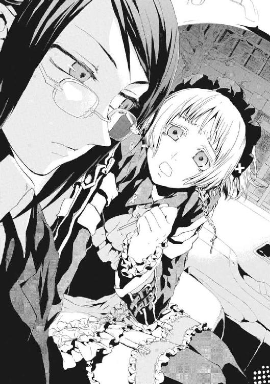
「ケイツ様は、人殺しなんてしていません！ そんなことのできる人じゃないんです」
「そうでしょうか。現場に残された凶器である十二本の剣は、すべて高度な相似魔術で形成されたものでした。あの場で、あれほどのものを用意できた魔法使いは、浅利ケイツだけです」
浅利ケイツは、英雄の不出来な双子の弟だ。三十歳過ぎまで戦いから逃げ続けた性格は、兄に才能をもらっても直らず、今も小物のままだ。だが、だからこそ能力はあっても彼に大量殺人はできない。リュカ少年は、こころからケイツを信じている様子だった。
「そんなもの、ケイツ様が作った証拠はないでしょう」
「十二本の剣すべてが、ケイツの所持していた品と同じかたちに形成されています。彼がそれを自分の剣だと認めている以上、相似に凶器を変形させたのも彼だと考えるのが自然です。凶器の写真を用意しましたが、ご覧になりますか」
「こんな横暴、ワイズマンが黙っていませんよ！」
幼なじみの仁にすら非情になれる彼女が、ケイツに容赦などするはずがない。
「その問題でしたら、こちらから確認をとっておきました。ワイズマン警備調査会社としては、『神聖騎士団との戦闘は許可しておらず、事態の責任はすべて統合情報室シニアマネージャー浅利ケイツ個人が負う』とのことです。書類も送られてきましたが、ご覧になりますか」
「そんな......」
「あんなうさん臭い会社に頼れると、本気で思っていたのですか？」
黒塗りの窓に閉ざされた薄暗い車の中、リュカの顔は蒼白だった。元々の色の白さだけではない。若すぎて、ケイツが体よく利用されていると認識できていなかったのだ。自分の意志で敵を見つけられないと見切られているせいで、ケイツはいつも貧乏くじを引かされる。
「それじゃどうしたらいいんですか」
「浅利ケイツに、《九位》を斃せば逃がしてやると、あなたの口から伝えなさい」
車はあてもなく走り続けていた。目的地などない。答えを自分で出したと錯覚させるまで進み続けることだけが目的だからだ。
「日本は死刑のある国です。十二名殺害なら、死刑もあり得ます」
「ケイツ様を助けてあげてください」
薄闇の中、少女のように、リュカは顔を両手で覆っていた。
「あの人は、やさしい人なんです。あの人があんなふうになったのは、きっとやさしい人だからなんです」
世の中にはダメな男のそばに自分の居場所を見いだし、身を持ち崩してゆく人間がいる。声変わりもしていないこの少年は、まさにそういうタイプだった。
「相似世界は、グレン様を打ち破って英雄として故郷へ帰ったケイツ様に、ムリに戦わせようとしたから。だから、こんなふうにかたくなになってしまって」
京香は、返答を求められていないとわかっていたから、後部座席から自動車のフロントガラスの風景を見ていた。
「あのかたを利用しようとするやつも踏み台にしようとするやつも、殺してだまらせてやればよかったのに！ そうしたら、あの人はこんなに逃げ続けずに済んだのに」
戦わずに逃げるのは本当にやさしさなの──と、彼女は聞くことをやめた。
「人を殺さなかったから、こんな《地獄》に戻ってきて苦労なさっているのに。あの人が、今さら人殺しをするはずがありません！」
《協会》は、この世界の住人を滅ぼすために核爆弾を大量生産した。京香たちの祖先が、神話のあるじだった魔法使いを暗闇に追いやられるときも、やはり多くの血が流れたはずだ。そして今も、彼女たちと《九位》は、互いを滅ぼし合おうとしている。
「あの人に、人殺しをさせようとしないでください。ぼくにできることなら何でもします」
「ワイズマンの社員である以上、できることなど限られているでしょう」
「あの人を切り捨てたワイズマンなんて......。あの人が生きていてくれたら......」
献身で破滅するタイプの人間がいたとして、その生き血を啜るのは非道だ。だが、それでも京香は〝待っていたその答え〟を引き出して、ほぅと重い息をついた。
「浅利ケイツに人殺しができないなら、逮捕するだけでかまいません。ただし、彼に選択の自由を与えるなら、我々も彼を縛る必要があります。もしも彼が失敗するか逃亡するかしたなら、リュカ・エラド・マナ、あなたをケイツのかわりに処刑します」
《協会》は、夏の核テロ事件のとき、武原仁に、メイゼルの命と引き替えで魔導師公館を裏切らせた。今、京香は、メイド服を着た純真なリュカを盾にして、浅利ケイツを操ろうとしていた。
「ぼくが、ケイツ様のために何かできるなら、やらせてください」
少年は、みずから生け贄の祭壇に登ることを快諾した。尊大さと言い訳で身を飾るケイツを信じているのか、澄んだ瞳をしていた。
行き先を迷うように東京の夜道を進んでいた自動車が、ハンドルを切ってケイツを拘留している場所へ向かいだした。迷い道など、京香が演出して見せただけだ。おとなのケンカは、いつも落としどころが考えられている。少年は、それに気づかず興奮に頰を上気させていた。
彼女はちいさなメイゼルを思い出し、口の中が少し苦しくなった。
リュカを人質としてケイツを釈放すると、もう日付がかわりかけていた。
「疲れたかい」
ハイヤーの助手席に座っていた若い男性が言った。専任係官、《破壊》八咬誠志郎が、他に手の空いた人間がいなかったから、護衛についてくれていたのだ。
京香は気分の悪さを押し殺した。
「まさか。これが私の仕事よ」
彼女は、魔法使いたちにすら畏れられた、氷の事務官だ。
「あのくらいの年のときに、仁はもう魔導師公館に関わっていたでしょう。八咬係官は、もっと早かったんだっけ」
白皙の貴公子然とした八咬が苦笑した。派手なジャケットと無意味にはだけたシャツさえ視界に入らなければ、彼は真人間に見える。
「ぼくは、生まれもった魔法が〝これ〟だから、《公館》が故郷みたいなものさ。けれど、あの子、今日から居場所がなくなるんだな......」
「この世界でうまくいかなければ、魔法世界に帰ればいいでしょう。刻印魔導師なんて、居場所がゼロよ」
現状、魔導師公館の立ち位置は最悪だ。《協会》は《九位》率いる主流派で一枚岩にまとまっているわけではない。調整官ベルニッチたち非主流派という対立軸もある。だが、非主流派も《協会》である以上、神聖騎士団の手など取らない。だから、どのみち現状では刻印魔導師に居場所はないのだ。存在が秘密なため政府にはできない魔法使い支援を行うために発足した仁たちのＮＰＯ法人も、設立の前提が崩れてしまっていた。
彼女は身勝手でも、どこの誰とも知れない人間より身内のほうが大事だった。
「まだまだ死ねないわー」
京香は、どっと疲れた身体を後部座席に預けた。
王子護ハウゼンは、アトランチス人を名乗ることで、魔法を日の光の下に放り出した。なのに、彼女の車が走る道は、ただ闇だ。
†
「何かあいさつがあるのではありませんか」
その女性は、栗色の長い巻き毛を背中まで垂らし、清楚な白いローブに身を包んでいた。外見は十代半ばだが、高位の魔法使いの見た目はまったくあてにならない。
仁は、ガラスの丸テーブルをはさんで、彼女の向かいのソファに腰掛けていた。格式の高いホテルのロビーは、自然に国際色が豊かな場所になる。眼前の魔女の装束も、手間がかかって豪華であるがゆえに民族衣装に見えた。魔法使いとこの世界の文化の境界線は、思い切って混ぜてみると、意外なほど曖昧なのだ。
「訪ねるにしても、急だった。時間を作ってくれてありがたく思ってる」
「そういうあいさつではありません。わたくしも《連合》の要職として、おおまかな状況くらいは把握しているのですよ」
少女のようなものの名は、《導師》アリーセ・バンシュタインという。
魔法世界には、三つの大きな集団がある。この世界へつながる《扉》を発見した、魔法世界最大の勢力である《協会》。そこから一万年前に離脱した神音世界の神聖騎士団、同じく約五百年前にたもとを分かった《連合》だ。
アリーセは、五百年以上前の《連合》独立戦争から生き続ける超高位魔導師だ。そして、とっくに狂っているとも言われる、闇に棲まい人を喰らう怪物である。
「......ヨーロッパの魔法使いってカネ持ってるな」
「最上階のスイートを借りております。あなたのアパートの二倍くらいの広さですよ」
笑顔で言われて、仁は思わず腰掛けたまま上体を乗り出していた。さっき、仁のアパートは神聖騎士団におそわれた。メイゼルの円環大系の魔法的転移で、すんでのところで逃げだしたはよいが、ともかく新しい居場所が必要だった。円環魔導師を非魔法消去環境でとらえるのは至難だ。だが、長期的に見れば、五千騎の機械化聖騎士師団から、十人以上の大所帯が隠れ続けることは不可能なのだ。
二十四時間フロントが開いているとはいえ、夜中ともなると人気はほとんどない。ホテルの落ち着いた照明に照らされたロビーは異様な雰囲気に包まれていた。
仁も、何度もどう切り出すか考え直していた。京香が仁たちと連絡を完全に切った沈黙のメッセージが、聖騎士と《公館》の関係を指していたのだとすると、すべてが納得できた。京香が直接伝えては、この重要なときに情報漏洩の咎で拘束されかねないからだ。
「魔導師公館が神聖騎士団と、どうやら手を組んだらしい。事態を、迅速に打開しなきゃならないが、そのために助力がいる。手を貸してくれないか」
「小細工をやめたのは好印象です。それで、あなたがたは、わたくしをその厄介ごとに巻き込みにきたのですね」
直球でも、厚かまし過ぎて、どうしようもなかった。
「正直、《連合》しか頼るところがない。今の《九位》が主導している《協会》は、俺たちには敵だ。神聖騎士団も敵だ。魔導師公館と協力を得られない以上、身を寄せられる場所は《連合》しかない」
アリーセの魔法、混沌大系は《もの》と《もの》の関係に魔力を見いだす。その魔力は複数集まると《魔力》と《魔力》の関係に更に複雑な魔力を生じ、更にそうした《魔力》間の関係と、無限に吸収し合う。こうして高位の混沌魔導師の魔力は、生命のように振る舞う《走狗》へと自然に成長する。
成長過程を操作された《走狗》が、アリーセのために紅茶を淹れた。虫のような節足を持った黒い影が、器用に《悪鬼》のフロント係の目を盗んでティーポットを傾ける。どこからくすねたか、よい匂いが湯気と一緒に漂った。
「わたくしたち、この間出会ったばかりだと思うのですが。あなた、会ったばかりの相手のために、命をかけたりできます？」
「......わりと、......してるほうかな」
ありのままを言ってみたら、自分がバカに思えた。
少女のかたちをした怪物は、おだやかな眉を怪訝そうに寄せた。
「ですが、普通の人間の常識で言うなら、だからといって何の利益もないのに他人の命を引き受けるのは、愚かでしょう」
魔法使いの世界は厳しい。力と策謀が支配する、隙を見せれば即座に喰われる泥沼だ。だが、仁はメイゼルやきずなとどう付き合ってきたかを思い返した。
「それもまあ......生きかただろう」
噓をついてまで見栄を張る意味がなかった。今のきずなや舞花を受け容れていることも、判断の合理的な部分は、愚かの極みだと弾き出していた。
《連合》評議長でもある彼女の判断はシビアだ。
「その結果、手に入れたものなんてあります？」
「たぶん、迷惑をかけることと厚かましさを覚えた」
一瞬、うまいことを言ったつもりだったから、アリーセの微妙な表情が胸に痛かった。
彼が追い返されていないのは、《連合》に助けを求める方針を決めた速さのためだ。アリーセは、襲撃で終わったあの会議のためにわざわざ来日してくれた。事態が動き出した今夜でなければ、明朝にも宿は引き払われていたはずだった。だが、今なら、《連合》にとっても、仁たちとの取引で、激変する日本情勢の中心近くに橋頭堡を作れることになる。
「いつまでも、《連合》におぶさるつもりはない。俺たちは、いつかは《公館》側に戻る。そうしたら、《連合》にも、外交のパイプがひとつ増える」
「だから《連合》に、あなたとメイゼル・アリューシャ、《鬼火衆》の刻印魔導師その他おまけを匿うことは、利益だと──。あなたがたが、逆に爆弾にならない保証、あります？」
「まず、俺たちにとって、《鬼火衆》や他の刻印魔導師の身元保証も、《協会》とつなぎをとるのも、魔導師公館でなきゃ無理だ。俺たちは、《公館》との関係が切れたら、仕事をもらえるアテがない。だから、本当に追い詰められるまでは絶対に、古巣と事を構えて事態をややこしくすることはない」
「魔導師公館が、神聖騎士団とこのまま本当に繫がる可能性は？ 絶対ないと言い切れるのですか」
おとなになった幼なじみの京香とは、ことばをかわさなくても、こういうときお互いが誰を騙すか察し合えた。
「絶対にない。この騒ぎが終わったときの〝落としどころ〟を考えたら、聖騎士と友好関係なんか作っても意味がない。武装集団を何千人も真っ昼間から都市に展開できる魔法使い集団なのに、行動の指針は〝神意〟なんだぞ。『最終目的はこの世界に《神》を降ろして救うこと』の連中と、日本政府だって長期的な関係を作りようがないだろ」
それに魔導師公館は、《九位》の顔が昨日の会議で見えてからは、たぶんこれまでほどは《協会》を恐れていない。
ここには、仁が戦いはじめた高校生のころに求めたものはない。彼は、当時から〝ヒーローのようなもの〟になりたかっただけで、正義を求めはしなかった。そんな人間にお似合いの泥沼だ。
それでも、〝彼女〟を守り続けてやれるなら、仁のしていることには意味があるように錯覚できたからだ。彼自身の行動の価値を、ちいさな子どもに押しつける逃げだ。
「──そうですね」
《導師》アリーセは、紅茶のカップを、狂気を映す蒼眼でじっと見た。彼女は、少女の姿をしてはいるが、ヨーロッパの激動の五百年を戦い抜いた正真正銘の怪物だ。
「ところで、〝彼女〟の意見もそういうことでよろしいのですか？」
言われて、仁は振り返ったまま首を強張らせた。真剣だが淀んだ空気を台無しにするように、メイゼルがとことこ歩いてきていたのだ。
「せんせ！」
ちいさな魔女が、真夜中の高級ホテルのロビーで声を弾ませた。仁の姿を見つけてこんな顔をしてくれたのだと思うと、すこし誇らしかった。やってくるメイゼルの足音を、毛足の長い絨毯が完全に吸収していた。
「おまえ、なんでこんなところにいるんだ。向こうでみんなと待ってろって言っただろ。あいつらじゃ、緊急事態になったら機動力が不安なんだぞ」
「緊急事態になったら、どうせあたしがいても変わらないわ。だいたい、せんせはひとりじゃ魔法で移動できないでしょ」
薄暗く静かすぎる真夜中のホテルのロビーから、歴史の重みは消え失せていた。仁のすぐ隣に腰を下ろしてちいさな彼女が身体を寄せてくると、もう空気が一変していた。
「せんせ、ここ、ステキなところね。薄暗くって、なんだか放課後のガッコウに、ふたりっきりで取り残されたみたい」
かすかな洗い髪の匂いや体温、淡い照明が、メイゼルを晩の食卓より、すこしおとなびて見せた。通りがかったドアボーイがぎょっとして一瞬、足を止めた。彼も血の気が引いた。小学生と教師は、深夜のホテルのロビーでは会わないものだ。
アリーセも熱っぽい息を吐くと、照れくさそうに言った。
「紅茶よりお酒向きの空気になってしまいましたね」
《導師》アリーセが、子どもに酒をすすめかねない様子で、微笑んでいた。仁は、子どもの権利が確立していなかった近代以前の亡霊に何を言っても無駄に思えた。
「とりあえず──」
「とりあえず、ナニ、せんせ？」
「ここではお兄ちゃんにしてくれ。それなら〝先生と生徒〟より自然だ」
まったく自然ではないと、言ってから気づいた。
「......わかったわ。お兄ちゃん」
人食いの怪物は、濃い人間関係が大好物だから、目を潤ませてよろこんでいた。
「素晴らしいわ。わたくしの部屋に来てゆっくり続きをなさい。......いいえ、いいこと思いつきました」
「話を戻そう。できれば、広い場所がほしい。聖騎士の襲撃を受けない、俺とメイゼルと、あとは《鬼火衆》が八人と、あと四人、全員で十四人が二週間ほども生活できればいい。長くなっても一ヶ月はかからない」
仁は、ここで断られたら後がないから必死だ。もちろんメイゼルも本気だ。全員がもうギリギリなのに、すべて足した答えはまるで喜劇だった。仁の生きてきた現実は、そうだ。ちいさな魔女がやって来てからはそうだ。
「お兄ちゃん、魔法使いのことをお話しするなら、あたしがいないわけにはいかないのよ？」
メイゼルが、体重をかけただけ沈み込む上質なソファにお尻を弾ませた。ちいさな魔女の澄まし顔が、感触が楽しくなってきたか、微妙にほころんできた。
「お兄ちゃんだって、あたしがいたほうが、ほんとはお話ししやすかったでしょ。だって、《協会》を動かしてるのは、あたしを追放した円環世界で、敵はそこの最高位魔導師の《九位》なんだもの。お寿司の人も、イリーズ・アリューシャの娘が、イリーズ戦争のカタキうちをしたいって言ったほうが、乗りやすいはずよ」
メイゼルにとって《導師》アリーセは、初対面のときお寿司をおごってくれた〝お寿司の人〟だった。
「お寿司、またとりましょうか？」
魔法世界三大勢力の一角たる《連合》の評議長は、楚々とした笑顔でペースをまったく崩さない。仁も、魔法使いたちのように図太く生きてみようと思った。
「──俺たちの標的は《九位》だ。今の《協会》を動かしてるのは、あいつと円環世界だ。あいつの動機は、《三十六宮》の中での順位が〝九位〟まで落ちてもう後がないことだ。ってことは、動機がこの世界を食い物にしてのし上がることなんだから、喰う者と喰われる者の間じゃ交渉は成り立たない。逆に、最高位魔導師である《九位》さえ斃せば、円環世界に、《協会》を《悪鬼》との全面戦争に導くような力は残らない」
「それでよいのですか、メイゼル・アリューシャ」
「このあたしを見くびらないで。あたしがここにいるってことは、もう決めたってイミよ」
ちいさな魔女は、仁の腕にもたれていた身体を、けだるく起こした。成長しきるには早すぎる白い首筋に汗で貼り付いていた長い黒髪を、人差し指で優雅に払った。
「せっかくお母さまが、円環世界の法則は本当は《それ自体の中に変化を織り込んだ螺旋》だって明らかにしたのよ。法則がようやく正しくなったのに、正しい魔法をまず作り直さないなんて、知識から逃げてるだけじゃない」
仁は、座高の低い少女の頭に、ぽんと手を置いた。彼には新しい秩序に乗り換えられない弱さを理解できるから、切なかったのだ。
「《公館》だって、今回の事件の〝いい落としどころ〟を考えてるさ。この世界にとって最大の脅威は、王子護やアトランチスじゃない。核爆弾を量産して、本気で使うつもりでバラ撒いている《九位》だ。アトランチスが浮上したって、何も変わってない」
メイゼルのあめ色の瞳は、激情を燃やして爛々と輝いていた。仁は、彼女の胸の奥に燃えているものを思った。
「......いや、《九位》が俺たちこの世界の住民を滅ぼそうとしている以上、決戦の時計が早まったか。実際、浮上したのは、他国に領有されたら日本の排他的経済水域を削る、かなり微妙な場所だ。王子護もやってくれるな。......《公館》が神聖騎士団を拒絶できないのも、よっぽど国際関係が緊張してるんだろう」
怪物アリーセが、ことばに切れそうなほどの鋭い意志をこめた。
「あなたのことばは推測ばかりですね」
「《九位》が斃れて、《協会》と《公館》との間に正常な交流が戻ったら、かならず状況は変わる。これは、俺の命を懸けてもいい。アトランチスのことがあろうが、《公館》は元々、《協会》との折衝をするための機関だ。そもそも聖騎士だって、五千騎もの兵力を首都に駐屯させて勝手に軍事行動までやるような常識知らずだ。そんな連中と長く関係を維持するほど、この国の政府だって能なしじゃない」
「では、この国でも《九位》を攻撃する計画を進めていたらどうするのですか？ 手を出せば、ぶつかってわたくしたちまで巻き添えです」
「そのときは行儀よく一歩引いて、《公館》が失敗した場合に備えるか、加勢に入るなりするさ」
仁の手が、不意に温かい感触に包まれた。メイゼルのちいさな手が、彼の数え切れないほどの命を奪った手に指をからめたのだ。
「大事なことを、ひとりで決めないで。あたしを連れて来たくなかったんでしょうけど、魔法使いの目から見たら、《九位》の勝負はあたしの役目なのよ？」
メイゼルは、子どもだが誇り高い魔女だ。だから、戦うことから逃げない。仁は、すぐそばで輝いているかのような少女を前に、ことばを濁した。
「おまえは守られてもいいはずだとか、いつも言ってることだけじゃないんだ。〝いつか〟刻印魔導師の試練に勝って円環世界に帰るんだろ？ だったら、......〝いつか〟帰る場所の指導者のカタキにはなるな。本当にまわりを敵だけで塗りつぶした場所で、生き残れるやつなんていないんだ」
《九位》は、超高位魔導師としては政治ができる人材だ。つまり、《九位》は、私怨ではなく政治感覚でメイゼルを刻印魔導師として追放した可能性が高い。敵は、この世界には最悪だが、円環世界の住民にはイリーズ戦争を終わらせたリーダーでもある。
生ける神話たる《雷神》クレペンスも、メイゼルの母を「円環世界のために死なねばならなかった」と評した。敵が俗物だからこそ、行動の裏に「《九位》に従う円環世界」の荒廃した社会が透けた。円環世界は、〝普通〟を取り戻すのが目的だから、すべてを必要悪だと割り切れる。その心理は、この世界でたとえるなら、《公館》が秩序を護るため魔法使いを狩る呵責のなさと似ているはずだ。彼女たちには、仁たちなど人間ではなく《悪鬼》にすぎないのだ。
仁たちを核戦争で滅ぼそうとしているのは、魔法世界の住人たちが、彼らを死んでも構わないモノ扱いしている〝普通〟そのものだ。
「人間は自分が生きる〝普通〟を守るとき、残酷にも悪辣にもなれるんだよ。......おまえには、自分が立ち向かおうとしている壁が、乗りこえて何かを手に入れるための試練に見えているかもしれない。けれど、そいつの本当の姿は、たぶんもっとおおきくて救いがないんだ」
ちいさな魔女は、ひらべったい胸に手を当てて言い切った。
「それでも、あたしはイリーズ・アリューシャの娘よ。誰よりも傲慢な《魔法使いの中の魔法使い》の、娘よ。世界中のみんながあたしの敵になっても、お母さまもしたみたいに、真っ正面からねじ伏せてみせるわ」
その決意は高貴だ。だが、社会に根を張って巨大になった悪意など、もはや正気の人間では背負いきれない。
正気を失っている《導師》アリーセが、くすくすと笑っていた。戦い続け、何か大事なものを永遠に失ってしまった彼女が、紅茶のカップを置いた。
「それでは、もう何もこわくありませんね。では、こちらで宿のかたには手続きしてきますから、ふたりっきりでゆっくりなさってくださいな。わたくしは、別の宿をとりますから」
仁がむせ返った咳の音が、人気のないロビーに響いた。
「さっきまで俺の話の何を聞いてた」
「今までいっしょに暮らしてた場所にいられなくなったから、駆け落ちに協力しろという話ではありませんでした？」
本当はどうしようもない状況は何一つ変わっていないというのに、いろいろおかしくなっていた。
アリーセが、笑っていた。仁は、薄ら寒い空気が首筋を撫でた気がした。
「お話うけたまわりました。《連合》は動かせませんが、わたくしは個人的な協力を惜しみません」
《九位》に刃を向けようとしている集団に荷担すれば、アリーセの危険もおおきい。それに踏み切ったのは、たぶん仁の弱点を把握したからだ。仁は決してメイゼルを見捨てられない。〝悪人〟なのに、今の仁の弱点はわかりやすすぎた。
「......では、退避場所に着きましたので、目を開けてください」
仁とメイゼルは、深夜のホテルから出たと思ったら、〝そこ〟に魔法で跳んできた。アリーセの混沌大系による魔法的転移は、術者と〝繫がり〟のある場所へ一瞬で移動できる。つまり、五百年以上の人生で、世界中を踏破して影響をまき散らしていれば、地球のあらゆる場所に移動できるということだ。
「ちょっと待て」
だが彼は、アリーセがやってきた場所に確かに見覚えがあった。
「この状況を整理するには《九位》を斃す必要があるから、そのために落ち着ける居場所が一時的に欲しいって......俺は言ったよな」
「ええ、おっしゃいましたね」
住宅街の街灯が並ぶ夜道を、アリーセが先導してゆく。人っ子一人いないのは、仁たちの左手側に、異常に大きな家の高い塀しかないせいだ。
「ここ、神和の家じゃないのか」
木製の巨大な門には、確かに《神和》と墨書された表札がちょこんと掛かっていた。ここは定員わずか十二名の《公館》の専任係官に指定席をもつ退魔の名家、神和家の邸宅だ。
神話の国である日本には、古い魔法使いの家系が比較的多い。《協会》の《門》が存在するこの国と異世界人たちは、千年以上も関係を繫いできた。魔法とは異世界人が引き摺る異世界の自然法則であり、その能力は遺伝するから、血筋を守っている家には魔法使いが多い。カオティックファクターと呼ばれる地獄特有の魔法を受け継ぐ神和家も、そんな旧家だ。
アリーセは、当たり前のように門に備え付けの呼び鈴を押した。
「《沈黙》よ、あなたが言ったことです。《九位》は、近いうちにかならず動く。だから、神聖騎士団や《公館》にわずらわされずに、《協会》への対応に集中できる場所がほしい。......ここならば完璧です」
「だから、ここはおまえと無関係な思いっきり他人の家だよな。しかも、魔導師公館の関係者の家だぞ。常識考えろ」
「では、これから陥落させましょうか？」
人の世の塵芥を振り捨てた澄んだ瞳で、狂人が仁を見返した。超高位魔導師とは、属する魔法世界の文明そのものだ。何でもできるから、突き抜けた高位魔導師はおそろしく自由だ。
仁は、そばに寄り添うメイゼルに思わず目をやった。小悪魔は、底冷えする夜風など感じないかのように、嗜虐の予感にその身を火照らせていた。
「せんせが責められるときには、あたしもいっしょよ」
どうしてこうなったかわからず、仁は呆然と、呼び鈴を押し続けるアリーセの背中を眺めていた。
「それは、俺といっしょにあやまってくれるってことか」
「もちろん、せんせのこと、あたしもいっしょに責めたげるのよ」
神和家では、刻印魔導師を《式神》と呼び、徹底して道具として扱う。その命令系統は魔導師公館となかば離れており、《協会》との交流が断絶しても式神たちは秩序を保っている。神和家は、不要な式神は簡単に使い潰すが、有用とみれば重用して家族を持たせる傾向にあるためだ。一千年を超える歴史の中で、この家が独立させた《式神》一族は百を超える。神和家の式神は、現在では半数以上がこの子孫たちで、魔法世界の罪人ですらないのだ。
仁たちを迎え入れたのも、そうした古いしがらみの家から出仕してきた使用人だった。
「ようこそお越しくださいました」
着物姿の五十がらみの男からは罪人の臭いがせず、その顔つきも柔和だ。すでに時代の移り変わりで風化したはずの奉公の世界が、ここには残っている。
そして、使用人に連れられて神和家の大広間に通されると、そこに現当主である神和瑞希が待っていた。
「......おい......無能」
傷を早くも完治させた瑞希が、白い着流しに上っ張りだけを引っかけたラフな姿で彼らを迎えた。襲撃されたアパートを出てすぐ別れたから、約二時間ぶりの再会である。
「正直もう止めようがなかった」
「......自信......満々......で......助け......求め......に...行った......な。......どういう......ことだ」
《魔獣使い》神和瑞希は、昨年もっとも多くの標的を狩った優秀な専任係官だ。退魔の一族の歴史を背負う彼女の気迫は、年齢不相応に強い。
ただ、畳の広場でアリーセはぱんと軽く手を打った。ぞわりと背中に鳥肌が立つほどに、空気が変わった。
「怒るのも無理はありませんわ。神和家に逃げ込むのを最後の手段にしたかったから、助けを求めてきたのでしょう。けれど、神和家の力が加わっただけでは《九位》を討てないのも事実ですから、押しかけられても仕方ありませんね」
超高位魔導師は、退魔の家の人間すらどん引きするほど自由だ。だが仁は、膨大な戦いの経験で、二十畳ほどもある大広間に〝見えない何か〟が集まってくる気配を感じていた。
「両方落ち着け。俺は、味方同士をぶつけたくてこの流れに乗った訳じゃない。あと、神和も早まるな。アリーセ・バンシュタインは、どんな相手でも全力で殺しに掛かるぞ」
仁がカタチだけでも取りなそうとしたとき、アリーセがそれをぶち壊した。
「──もっとも、わたくしとの関係を維持するため、神和家にリスクを背負わせてやむなしとしたのは、冷徹な判断でむしろ好印象です」
瑞希が、協力者を売ったのかとばかりに、怒りのこもった視線を仁へと向けた。もはや状況は毒を食らわば皿までと割り切るのがベストだった。
「すまん。ジリ貧になるよりはマシだと判断した。......ただ、《導師》アリーセとの関係を維持するためにそうしたんじゃない。関係を新しく築くためだ」
仁をにらんでいた瑞希が、本気の殺意をこめて言った。
「......そうまで......して、......何が......欲しい」
瑞希は、神和家の現当主として一族を背負っている。返答次第では仁の命はないと、仁の筋肉の動きを冷静に観察する目が、呼吸を読ませないよう潜めた息が告げていた。
「情報だ。俺たちが生き延びるためには、《九位》を仕留めるのが一番いい。けれど、《協会》の魔法使いを動員できるあいつを〝狩る〟ためには、動きを前もって知って、確実にやれるときを見極めるしかない」
仁の上体に脂汗が浮かんでいた。まさかアリーセが神和家に突っ込んでくるとは予想していなかったから、瑞希ともこんな場合にどうするかの合意などない。だが、そのせいで、本気の利害が引きずり出されていた。
「............おまえの......賭けごと......そこまでして......付き合う......気......ない......」
「いいや、最後まで付き合ってもらう。《九位》は、決戦ではかならず先頭に立って戦うはずだ。勝負どころでは《三十六宮》本人が陣頭に立たなきゃどうしようもないくらい、今の《協会》はガタガタだからな。でも、そのとき討ち漏らしたら、核戦争だ。手段は選ばない」
そこまでやるのは、仁が本質的には狙撃手だからだ。彼の教官であった王子護ハウゼンは、敵の行動を読んで、待ち伏せで仕留める人狩りの手法を教えた。〝狩り〟のために、足りないのは情報だった。
「必要なのはただの避難所じゃない、敵の情報を手に入れて戦力を準備する前線基地なんだよ」
彼は〝悪人〟だ。だからふてぶてしく冷静に、守らねばならないものと切り捨てるものをよりわけるのだ。
瑞希も、魔導師公館の誇る最良の狩人だ。きずなを守るために組織を欺いた心意気を足蹴にされても、我を失いはしなかった。それでも、仁が彼女の家族を踏み台にしたことは確かだった。
「......おまえ......性根......腐ってる......」
「倉本きずなはどこですか？ 隠していらっしゃるんでしょう、あの呪われた〝最後の魔導師〟を」
アリーセは、倉本きずなを危険視している。きずなの魔法、再演魔術は術者の仕草を発動の鍵として魔法使いを操るからだ。
「この状況が、すべてあの再演魔導師が操っているせいかもしれないと、わかっているのですか。......いい機会だから知っておきなさい。魔法使いにとって最高の資質とは何であるかを」
アリーセが座った周囲に、節足を持った黒い《走狗》が、畳の隙間から、天井の板目の間から、噴き出すようににじんだ。混沌大系の魔法使いは、自分に〝関わり〟のあるものと自分自身との間に、瞬時に《魔力》を構築できる。つまり、大魔導師が、世界中の銀行と証券会社の株を持つ大金融家でもあり続けたならば、経済という〝関わり〟から、カネで取引されたあらゆるものとの間に《魔力》を生成できる。
「おまえがそうだっていうのか？」
「いいえ、混沌大系のような《魔力型》の魔法使いに〝最高〟はありません。最高は、世界の索引を引いて奇蹟を呼び出す《索引型》の魔法大系のみに存在します」
文明圏すべてに触手を伸ばす夜の女王が、圧倒的な魔力で仁たちの視界すべてを縛っていた。ありとあらゆるものの影から《魔力》が発生し、泡立ちながら自律する《走狗》へと進化していた。そのアリーセが、みずからを〝最高〟ではないと言い切った。
「〝最高の資質〟とは、《索引型》魔法の魔法使いが、世界にただひとり生き残った状態です。索引型の魔法では、〝幸福〟や〝力〟はては〝愛〟といった便利な抽象概念を、直接呼び出すことができません。魔法使いそれぞれにとってカタチがちがうから、その観測でワクがぶれて、魔法使いが複数いると抽象概念を固定できないのです。だから、魔法学では、《索引》の観測者──魔法使いがただひとりになったとき、観測のぶれが消失し、抽象概念を《世界という本でも読むように》簡単に扱えるとします。同じ魔法を使う者が他にいない〝最後の魔導師〟のみが、魔法索引を完全なかたちで支配するのです」
仁にもわかった。つまりアリーセは、世界を掌中に握れる〝最高にして最後〟が、近くにいると考えている。彼女は、倉本きずなを畏れているのだ。
「そんな便利なものなら、きずなちゃんは苦労なんかしてないだろ。そもそも、彼女の居場所は俺も知らない」
「では、存分に調べさせてもらいますわ」
危険物を排除するのは当然だとばかりに、アリーセが《走狗》の群れをふくれあがらせた。だから、無言で、武原仁は魔法消去を再発動した。この世界の住民を《悪鬼》と恐れさす魔法の天敵たる力が、あらゆる奇蹟を、彼の目には映らない《魔炎》に燃え散らせた。
一瞬で、仁の眼前は、魔法の尽きた荒野と化した。《導師》アリーセも見た目通りの少女とかわらない。
彼は怒りがこみあげて、たまらなかった。ただ普通に生きたかった倉本きずなは、人を殺すことになり泣いていたのだ。
「取り分の前払いくらいしてやる。けれど、俺は《連合》に協力を求めたんであって、おまえらの下についたわけじゃない。あまり欲をかくと、俺のほうがおまえを切り離すぞ」
仁が広間で座った場所は、アリーセから約一メートル。この間合いは魔法使いにとって、たとえ超高位魔導師であろうと死地だ。
「ずいぶん強く出ましたね」
「信頼してもらってるからな。信じられてるのと同じくらい、〝ヒーローみたいなもの〟は強くなきゃ格好が付かないんだよ」
アパートが聖騎士に襲われた後、仁と行動を共にしてくれたきずなを想った。きずなは、義父のカタキである彼を、弱さと疲れに打ちひしがれた身の止まり木にしてくれた。気持ちよく澄んだ関係ではないが、だからこそ仁は気持ちを強く持たねばならなかった。
「だいたい、超高位魔導師の前に出たくらいでオタついてるヤツが、《九位》に勝てるわけないだろ。これでも、この半年で《三十六宮》格の魔法使いに当たるのは、おまえで五人目だ」
神和のほうから不意に、空を切る音がした。仁は左手で、それを空中でつかみ取った。ずっしりと重い、白鞘におさまった日本刀だった。抜き放つと、反り身は浅く身幅は広く断面が薄い実戦用の太刀が、薄明かりにしぶきを飛ばすように夜風を斬った。尋常な業物ではない刀の風格に、仁の手が、知らず震えた。
「......世に......出れば......国宝............折るな......」
つまり下手な真似をするようなら、仁がこの刀でアリーセを斬れということだ。
専任係官二人に取り囲まれて、自身は魔法を失った死地で、それでもアリーセは「紅茶をいただけないかしら」とつぶやいた。夜の女王の危機感覚は、正気の人間のそれではない。
「それ、本物のようですね。七百年くらい前に打たれてからお金で取引されたことがない、献上刀の逸品ですわ」
誰もが命懸けだった。
わけのわからない、祭りのような熱気が、空気そのものが人間の生きられない温度まで煮え立つように押し寄せていた。その背後に戦争の空気があった。破滅へと突き進む歴史の足音が、背後に迫っていた。
そして瑞希が、錦の上っ張りを引きずるように立ち上がった。
「......是非も......ない。......調べ......させろ......」
広間の上座から、奥の前へと続く中庭側の廊下へ、大股に歩いて行った。
「......それと、......この家の中では......魔法消去............使うな......一族が......消去で......消える......」
神和家の代々の当主たちは、《魔獣使い》の魔法を使う強力な遣い手だ。ただ、瑞希たちが自己再生を得意とするとはいえ、頭部や脊椎のような中枢神経を損傷しすぎると魔法消去に耐えられる完全な再生ができなくなる。そうして〝人間として外で暮らせなくなる〟と、神和の当主は次代に後を譲って引退するのだ。
神和邸は、そうした代々の《魔獣使い》が隠遁する場でもある。仁の魔法消去は、瑞希の一族を焼き散らす可能性すらあったのだ。
《導師》アリーセが放った《走狗》により、《鬼火衆》と神和家代々の当主たちが発見されて、広間に集められた。
だが、目当てであるきずなの姿は神和邸にはなかった。きずなとエレオノールたち、そして舞花は、念のため、もっと不便だが安全な別の場所に隠れていたからだ。
すぐれた魔法遺物群を残して消えた《神人》が建造した建築──《幻影城》に隠れることを、仁が勧めた。再演大系のために作られたというこの遺物は、地球からほんのわずかに外れたところにあり、普通の手段では入れないからだ。《幻影城》は、《賢者の石》をめぐる機械化聖騎士師団との決戦で崩壊したが、自己修復してすでに機能を回復しつつあったのだ。
仁も、アリーセが仕事をしてくれるふうであることを広間で確認しながら、じっと彼女の表情やしぐさの情報を追っていた。彼女の混沌魔術でも、《幻影城》内のきずなを追尾できていない様子だった。《鬼火衆》は、集まって眠れる場所が広間しかないから客用布団を大量に借りて雑魚寝している。アリーセはふてくされながら、中庭にティーセットを持ち込んで紅茶を飲みだした。
彼女にすら不可能なら、通常の手段では、《幻影城》内部に誰がいるか外部からはわからないということだ。つまり、きずなを狙う勢力が捜すにも、基本的には再演魔導師が《通用門》を開くか、神人遺物である《鍵》を使うかしかない《幻影城》は、侵入が困難すぎるのだ。更に、もしものことがあってもきずなはいつでも《通用門》を開いてここから好きな場所へ脱出でき、移動の便もよい。
夜明け近くまで待って、表を通る人々から《魔炎》が屋敷内にあがるようになってから、アリーセの目を盗んで《幻影城》に移動した。
きずなに、魔法で引き寄せてもらったのだ。無限の射程距離を持つ再演魔術で、《幻影城》側から定期的に観測してもらって、合図をしたら転送してもらうよう取り決めていた。
「ありがとうな」
早朝の五時なのに、きずなは起きていた。彼女との間のわだかまりが消えたわけではない。けれど、弱者には、片付かないものがあっても頼り合うことができる。家庭的な高校生だったきずなが、この一ヶ月、前向きになろうとしては叩き潰されてきたのだと、仁にも表情でよくわかった。
「いえ、仕方ないですから」
《幻影城》の内部は、ありとあらゆるものが水晶でできた巨大な空間だ。その透明な床板に、うつむいた顔が薄く反射していた。
「神和の家は、完全に《導師》アリーセに占拠されてるよ。予想外の最悪だけど、冷たい言い方をすれば予想以上に順調だ。アリーセは神和の家を前線基地にして、魔法で《九位》たちの動きに網を張りはじめた」
仁は、神和邸の様子を思い出して頭を搔いた。よい思い出などないここに隠したり、きずなの神経を逆なでするようなことばかりしているからだ。
きずなは、目に力こそないものの、ほっとしている様子だった。
「神和さんたちは無事なんですね」
子ども用の浴衣と半纏姿のメイゼルも、さすがに眠そうだった。仁にひっついてきた彼女は、目をこすっていた。
「正直、なんかくやしいわ」
ちいさな魔女は、神和邸ではアリーセと仁たちの話に入ってこなかった。交渉に口をはさまないよう分別をきかせてくれたのだ。
きずなは、大きめの声で仁にたずねた。
「武原さんも、これからしばらく、ここに泊まるんですか」
空元気を振り絞っているのが明白だった。仁がはじめて人を撃った夜もそうだった。彼女も結局、この早朝まで眠れなかったのだ。
「ああ。連絡は神和がいれば取れるからな。これから、《九位》との戦闘が本格化する前に、やっておくことがある」
「何なんですか」
自分のうちに閉じこもるように、きずなは目を合わせなかった。
「きずなちゃんに、戦闘訓練を受けてもらう」
どこか他人事のようにぼんやりと受け答えをしていた彼女の表情に、生気が戻った。
《幻影城》は、歴史改変の舞台として古代の再演魔導師に利用された。だから、昼も夜もなく光量が一定で内部空間も広い。訓練にうってつけだった。
「どういうつもりなんですか......。わたしに、また人殺しをさせたいんですか。わたしが自分と同じ人殺しになったら、楽になれると思ってるんですか」
以前なら、仁をにらみつけてきたはずだ。だが、今は血を搾るような苦しいうめきだった。きずなは、かつてあった正論と常識に従っている自信を失ったのだ。だが、仁は、消えない罪を犯した彼女が達観しないでくれて、身勝手にも、よかったと思った。
「楽になることなんかない。あるのは現実だけだ」
昼間、血で赤黒く汚れていたきずなの手が、仁を押した。彼女の腕力では、踏ん張った仁を押しのけるなど不可能だった。
「きずなちゃんのまわりの環境は、まったく変わってない。アンゼロッタたち機械化聖騎士師団は、今でもきずなちゃんを狙ってる。《導師》アリーセだって、神和の家に飛び込んでくるくらい警戒してる。《協会》は戦争を起こそうとしていて、魔導師公館には、きずなちゃんを守る余裕はない」
アリーセは、きずなのことを、危険すぎる魔法を振るう最高の資質の持ち主だと疑っている。今はアトランチスにいる王子護ハウゼンも、彼女を《最後の魔導師》と呼んだ。仁は、公館嘱託の魔法学者である溝呂木からも同じ理論を聞いたことがある。現代魔法学ではそれを《唯一魔導師》と呼ぶ。もしもきずながそうなら、理論のみが語られていたものが初めて確認された、魔法学上の大発見となる。
「自分の手で守ることを学ばないと、近いうちに大切なものをなくすぞ。何よりも、後から訓練して力を手に入れたとき、もっと早く動き出してれば、なくしたものを自分でも守ってやれたとわかったら、死ぬほど後悔する」
事態の中心はきずなだった。逃れられない運命にとらわれた彼女は、現実から目をそらすように視線をそらし続けた。
「......わたしなんか、武原さんも、もう助けるの嫌ですよね」
「そうじゃない。神和を守るためにやったんだろ。命を救ってくれた相手にそんなに卑屈になられたら、神和が困る」
仁は、魔導師公館時代、〝正しさ〟に身を寄せていられた。だが、そこを飛び出すと、ただ悪化する状況に振り回された。ひとりで戦う人間には、覚悟が必要なのだ
「世界にひとりしか遣い手のいない魔法なんだから、自分の道を自分で切り開くしかない。俺も、他の誰かも、最後にはきずなちゃんが生きる道を用意できない」
これが正論なのだと頭ではわかっていた。だが、仁自身の青臭い部分が彼を責めた。結局は、メイゼルを守るために、きずなには戦闘で彼女自身の尻をふかせたいだけだ。参謀ベレーノ・ネロは、三年前の聖騎士侵攻以来、《公館》の暗殺リストの最上位だった。そして、きずなの義父、倉本慈雄にも関わりが深い実力者だった。このベレーノを含めた十二人を虫けらあつかいできる規格外の強者を守って、力の足りない彼が、他の大切なものを失いたくない。
ふと、本当に倉本きずなの人生に必要そうな人間が、これまでの戦いで誰も死んでいないことに気づいた。仁は湧きかけた疑いを抑えつけた。現実の裏に、暗く深い渦が覗いているようだった。何もかもが薄ら寒かった。
「今日はまだいい。身体を休めよう。けれど、《九位》が動き出したら訓練の暇がなくなるから、一日でも早いほうがいい」
「いきなり言われたって、わたし、今日こんなことになったばっかりなのに......。武原さんみたいになれって言うんですか」
きずなの言うことはもっともだった。こんなに切羽詰まるまで、仁たちはこういう問題をすべて先送りにしてきたのだ。
背後に生き物の気配がした。
振り向くと妙に人なつっこい顔をした大型犬がぶんぶんしっぽを振っていた。
「何これ」
口を出さずに見守ってくれていたメイゼルは、別の長毛の猟犬にまとわりつかれていた。
「ああ、そうか。神和が布団がわりに呼び出したんだろ。これにしがみついて暖を取れってことだ」
仁は、《公館》時代、自然物を作り出す《魔獣使い》の魔法で野営の寝具を用意されたことがあるのを思い出した。
「猫派の人のためには、向こうに猫もみっしりと......」
きずなは疲れた声で、崩れかけた水晶の廃墟の根本を指さした。猫の毛皮の海に沈み込むように、舞花がちいさな身体を横たえていた。
首をめぐらすと、数匹の犬のかたまりがあって、中心でエレオノールがうなされていた。大型犬を枕にしているのはよいが、別の犬に腹の上に乗られていた。
「今日はもう十分にはたらいた。もう後は休んでからにしよう」
四時間ほどして、仁が目を覚ますと、きらきら光る水晶の宮殿が、農場のようになっていた。牛がいた、羊がいた、鶏がいた。よく見ると遠くに畑らしいものまであった。
《魔獣使い》の魔法は、自然物ならばあらゆるものを作り出す。動物も水も木材も、人間が生活するために必要なものは何でもそろえられる。
巨木の切り株を利用したメルヘンなテーブルに、ファンシーな木のお椀がのっていた。ご飯と野菜サラダとオムレツが今日の朝食だった。調味料は削った岩塩だ。《魔獣使い》では加工された状態の香辛料を呼び出すことができないから、唐辛子の実を幾つも吊して乾燥させてあった。
「きずなちゃんは、もうここに住むつもりなのか」
「いや、あの、つい......」
仁にとっては、涙が出そうなほどなつかしい、きずなの初々しい表情だった。彼女の後ろには、満腹した猫たちが思い思いの姿勢でごろりと転がっている。賢明にも、人間の食事をほしがる前にエサを食べさせたのだ。
「お座りするのですよ。いいですか、お行儀よくするのですよ」
精一杯の威厳をとりつくろうエレオノールの肩の上から、大型犬が鼻面を突き出してテーブルの上を覗き込んでいた。宗教家は、たった一晩ですっかり動物に舐められていた。
ちいさな舞花が、うんざりした声で仁を責めた。
「お兄ちゃん、ごはんのときはおっぱいを見ない」
「見てないだろ！」
「せんせ、おぎょうぎ悪いからおはし動かさない。せんせのおはしは、どうしておっぱいのほうを向くの？」
「おまえら変に意識しすぎだ。メシ喰ってる最中だぞ」
朝のうちに運動でもして一汗流したのか、全裸のセラの白肌には玉の汗が浮かんできらきら光を照り返していた。
「服など着るから疑心暗鬼に陥る。いっそ全員脱いで白黒つければよいのだ」
「みんなで脱がなくても、武原さんだけ脱げばはっきりします」
「きずなちゃん、疲れてるんじゃないか」
微妙にことばの途切れた中、エレオノールだけが無罪だった。
「......どうして黙るのですか、みなさん」
「ここまで言われてなぜ脱がない。《沈黙》よ、おまえは、今、人生の晴れ舞台を迎えているのだぞ」
少女たちの視線が、仁に集まっていた。
「なあ、おまえら俺をどうしたいんだ？」
彼らがみんな仲の良い人間であるかのような親密な空気が流れた。その微妙なぬくもりが、はかないただ一瞬のまぼろしのようで、仁は息を吞んだ。
そのとき彼は、背後に冷たい緊張がみなぎるのを感じた。一挙動で手首の裏に箸を隠し片膝立ちになり、殺気の源を迎えた。
──神和瑞希が、石でも嚙み潰しそうなほど力強く歯がみしながら、人形のように色のよい桃色の唇の端を、どう猛に吊り上げた。
「......楽しそう......だな......」
《鍵》を持っていたのか、神和邸でアリーセを監視していたはずの《魔獣使い》が、《幻影城》に入ってきたのだ。
「......おまえ......私......を......家に......あの女......と......残して............亭主......気取り......か......」
「待て、誤解するな。そんなわけないだろ」
まるで間男の言い訳だと冷や汗をかき、嫌な予感にせかされて膝立ちから中腰の姿勢に移行する。
瑞希が、白い着流しの右袖を振って命じた。
「............嚙め」
おとなしくしていた犬猫が、突然牙を剝いて、仁に四方八方から襲いかかってきた。
十数匹のペットに一斉攻撃された仁が、獣の身体を反射的にかわし、あるいは撥ねとばしたことで、朝食は終わった。勢い余った犬の身体が飛び込んで、食卓の料理がひっくり返されて台無しになったためだ。
「それで、なんでおまえまでこっちに来るんだ」
神和瑞希が、テーブルの隣に正座させられていた。微妙にしょげ返っていた。
「......手下......連れて......きた......」
「ああ、そういうことか」
仁は、今日の用事のために、《鬼火衆》をひとり《幻影城》に呼んでもらった。その移動に、瑞希は引っ付いてきたのだ。
禿頭の大男、《金庫室》ペンローズが、恐縮したように頭を搔いていた。頭頂から腹までを縦に断ち割るように金属製のファスナーを縫いつけたこの刻印魔導師は、ファスナーを開けた奥にある真っ黒な空間を無限の容積を持ったトランクとして利用できるのだ。
「親分、ちゃんと持ってきやしたよ。こいつっすね」
ペンローズが、頭頂からファスナーを引き開け、奥の暗闇に太い腕を突っ込んだ。
おとなしく正座していた神和瑞希が、ペンローズが魔法で引きずり出したものを目にして、何も言わずにすっくと立ち上がった。
そして、きずなの友だちである瑞希が拳を固めて、仁を殴った。
それが、彼らが築いてきたささやかな団らんを決定的に壊すことだと、わかっていた。
だから仁は、時間が許すものなら、きずなの「答え」を聞いてからにしたかった。だが、彼自身の生き延びるための嗅覚ではかると、猶予はもはやなかった。
それでも、倉本きずなに、見開いた目で見上げられたとき、心臓が凍り付いた心地がした。感情の失せた顔で、彼女は仁を見ていた。その夜闇の濃紺の瞳に映る仁の姿は、影のようだった。
きずなの両の手のひらには、おおきな狙撃銃が載っていた。
仁が、彼女の手の上に、この銃を置いたのだ。
「......冗談ですよね」
きずなの目に、仁は今、どう見えているのだろうと思った。腹の底がキリキリ痛んだ。
「これが一番合理的な答えだ」
「あてつけじゃ......ないんですか？ わたしが神和さんを守ったって武原さんは言うけど、武原さんだってわたしを守ってお父さんを殺したから......」
彼女が、耐えきれなくなったか声を殺して泣きだした。その涙を、仁には止められなかった。彼女のこころを殴ったのは仁自身だからだ。
仁は、胸の重さから逃れるように息をついた。ひどく冷たい空気が漏れた。
魔法使いと戦いはじめて九年で、何もかもが姿を変えた。仁自身すら、かつて嫌悪した怪物ともはや見分けがつかない悪人だ。変わらないのは悲劇だけだ。
「俺は、魔法使いたちに《沈黙》と呼ばれていた」
仁は、きずなと同じ十七歳だった冬の夜、王子護ハウゼンに銃を手渡された。彼の少年時代が永遠に去ったそのときを、思い出していた。
「......俺の、魔法消去を自分の意思で止められる性質は知ってるな？ 遠くから銃で狙撃をする、引き金を引く寸前に魔法消去を発動させれば、魔法をなくした魔法使いは飛んできた弾丸で死ぬしかない。《沈黙》なんて名前を好きになったことはないけど、狙撃と魔法解除手段の組み合わせは効果的だ」
日本で育ってきたきずなにとって、銃は特別の意味を持つ。彼女の、家事をするときは鮮やかな手並みを見せる手が、固くこわばり震えていた。
だが、それでも仁たちは選択をする。恐くても間違っていても足を進める。
「きずなちゃん、生きるってことは、自分の運命に引き金を引き続けるってことだ。引き金はいつも軽いし、結果は致命的になる。それでも、選ばなければ大切なものを失うときが、かならずある」
王子護は仁へ、銃を握らせた。彼は今も王子護を憎んでいる。なのに、仁もきずなへ銃を持たせている。
「そんなこと、武原さんにわかるんですか！」
「〝そのとき〟はかならず来て、きずなちゃんはかならず選択する。......その後で、生き残っていたら、俺が銃をわたしたことを憎んでくれ」
いっそ殴られたほうが楽だった。嫌悪と怒りと涙でぐしゃぐしゃになった彼女の顔は、人の目など気にせず歪んでいた。
「わたしに、そんなもの使えるわけないじゃないですか」
「きずなちゃんは、経験や技術で銃を撃たなくていい。再演魔導師は、撃てば当たるし、当てればかならず斃せる」
仁は、再演大系という魔法を知ったとき、戦士の習性でふたつのことを考えた。再演魔導師をどう殺せるかと、どう戦えば再演魔導師にとって最強かだ。そして、彼の見つけた最高の答えは、銃器だった。かつてメイゼルは、円環魔術の源である《魔力》を霧散させて敵の魔法を封じた。この疑似魔法消去を、きずなの再演大系ならどんな魔法にも完璧にやれる。敵をあやつり、標的自身に身を守る防御魔術を解除させれば、その一撃は必殺だ。
きずなが撃った弾丸はかならず当たり、そのとき魔法による守りはない。どんな魔法使いも、魔法がなければ生身の人間と同じだ。つまり彼女が十二人の聖騎士を死なせたとき起こったことを、今度は狙ってやるのだ。
「再演魔術は、過去へと影響をおよぼす、人間の身体を操る魔法だ。だから、魔法で〝過去の自分の体〟を操って、銃器の技倆不足はカバーできる。自分の意志で、呼吸や筋肉の緊張まで完璧に制御し続けられる人間はいない。それでも、再演魔術で自分の体を支配してしまえば、肉体制御は別次元だ」
言っている仁も吐き気がした。
きずなが、このまま倒れてしまいそうなほど血の気を引かせていた。きっと初めて銃を持たされたときの仁も、引き金を引かねば前に進めないと悟ったとき、こんな顔をしていた。
「だから、戦闘に巻き込まれそうになったら敵から距離を離せばいい。......その距離から、どうしようもない相手をライフルで撃つだけだ。戦い方は単純だから、戦術の失敗リスクもない。戦闘で一番難しいのは防御だけど、遠距離から一方的に撃つならその必要がない。アリーセでもアンゼロッタでも、はまれば勝ち目はある」
利益があっても片付かない問題だった。仁は彼女たちを守り、きずなは居場所を作ってくれた。その信頼を裏切って、関係を台無しにしたのだ。
だから、彼女は銃を握りしめたまま泣きやんでくれないのだ。
後戻りのできない血みどろの道に片足を踏み入れている彼女は、勝たねば死ぬことを知っていた。だが、ただ銃の本当の重みを嚙みしめるように、指の細い手で握っていた。彼女の重苦しい視線は、自分に敵がいるという現実と、手の中にある武器を結ぶ糸のようだった。
「それでも、......だからって、わたしから先に撃つなんて」
今の仁は、王子護に似ている気がした。これは、夏の核テロのころなら忌避した本当の〝悪〟だ。
「再演大系は、前準備に十分に時間をかけて、実際の行動は最少に絞り込んで、敵には一切反応を許さない戦い方が、もっとも持ち味を活かせる」
きずなの濃紺の瞳が、追い詰められている自覚で活力を取り戻していた。垂れ気味のやさしい目に、沈痛な決意と力がこもりはじめていた。
彼女が自分で身を守れれば、仁は、神聖騎士団に備える必要がなくなる。思い通りの展開なのに成功の昂揚は皆無だった。
これが彼が選んだ戦いの〝落としどころ〟かと思うと、どうしようもなく情けなかった。
鈍い金属音が立った。きずなの両手が、取り落としかけた銃を、しがみつくようにしっかりと握っていた。彼女の涙は止まらなかった。
「わたし......、うまく言えないけど、わたし......」
きずなが、ついに気丈でいられなくなって膝をついた。彼女の手にある杖は、銃身の長いライフルだ。
「こんなことしたかったわけじゃないよ。武原さんと、わたし、どこへ行きたかったんだろう」
仁は、人を殺したきずなに、死体の数が最少になって彼女自身も助かる戦い方を提示したのだ。やさしい性格が土台にあるからこそ、現実に溺め捕られた今のきずなには、仁を頭ごなしに否定できない。責められたわけでなくとも、仁の罪悪感の重さは別だ。
「わからなくても、まずは歩きながら決めるんだ。足を止めたら死んでしまう旅が、この世にはある」
そう信じなければ、彼が積み上げてきた膨大な死体の意味を、彼自身も説明できなかったのだ。
仁からのなぐさめの声など、届くはずもなかった。きずなは、瑞希に連れられて行ってしまった。
そして、仁のそばに、きずなとの話が終わるまで離れてくれていたメイゼルが戻ってきた。
「せんせ、気はすんだ？」
きずなとしばらくふたりにしてくれたメイゼルを、共犯者にしてはならないと思った。
「ありがとうな。おかげで、《九位》を斃すために、俺は自由に動き回れる」
あどけない魔女が、自分のことで手一杯で注意がお留守になっていた彼の内懐に潜り込んでいた。そして、握ったちいさな拳が、刺すように仁の胸を突いた。
「せんせは、きずなに撃たれたいの？」
胸にしみるように、ちいさな衝撃が響いた。仁は、きずなが苦しむとわかっていて銃をわたした。八方ふさがりのきずなにとって、彼を撃つことは手近な逃げ場だ。
「まだ死ぬのは困る。俺には責任がある」
彼は、子どもをまかされたおとなだ。だから、メイゼルを精一杯に育ててやる責任がある。だが、彼はきずなに対して果たす責任は放棄した。
「おまえこそ、いいんだな。《九位》はおまえの母親のカタキだけど、ひとりで片をつけさせてやれないぞ」
魔法使いとして譲れないと、ちいさな魔女に突っぱねられる流れも考えていた。だが、少女は胸を張って晴れやかに言い切った。
「ふたりで戦うって決めたでしょ。だから、あたしの戦いのとなりには、全部、せんせがいていいのよ」
予想を超えて、少女は成長していた。
「おまえはすごいな」
感謝のことばをかけるつもりが、賞賛になっていた。少女の華奢なのどが、生唾を吞み込んでこくりと動いた。そして、赤くなってうつむいてしまい、拳でこつこつ仁のおなかを叩いた。照れている様子だった。
「せんせは、もっと苦しそうな顔をしなきゃダメでしょ」
事実、苦しみが足りなかった。彼は、理由があったから〝悪〟を為した。それでも、結局は必要悪であるように見えるだけのことだ。安直な解決は、必要のみではなく、熱意か、努力か、献身か、知恵か、何かが不足しているがため選ばれた。
「俺はもっと苦しむべきだな」
「せんせ、今、きずなのこと考えてたでしょ」
なんでわかったと聞き返そうとして、やめた。人間として、女性として日々成長してゆく少女の前で、あまりにも間抜けだからだ。
「あんまり、きずなのことで、そんな顔しないで」
「苦しい顔、見るの、好きなほうじゃなかったのか」
「それはすっごいスキよ。でも、苦しむなら、あたしのことにして」
彼女が、うつむいたまま、手元が寂しいのか仁のシャツの前ボタンを外しはじめた。
「あたしに、きずなのおこぼれをいただかせるつもり？ あたしは、こういう苦さのより、もっと甘くて痛いのがスキなの」
そして、遠く、変化を告げる鐘の音のように、銃声が響いた。《幻影城》の、水晶でできた床や柱に設置された歯車のような巨大な部品が、音に反応して震えた。仁は、ここが、《神人》が再演大系のために作った遺物だと言われていることを思い出した。
とてつもなく巨大な機械が動き出したような、大気を押しつぶす圧迫感に反応して、身体が強張っていた。
遠く、銃声がまた聞こえた。
呼応して、乾いた空気がびりびりと震えた。ビルで視界がふさがれる東京の風景とは隔絶した、《幻影城》の広大な内部空間が、目を覚ましたようだった。
乾いたその音に、胸が震えた。きずなが、仁のわたした銃を撃ったのだ。
銃の扱い方はまだ教えていないから、最低限の操作を教えたのは神和瑞希なのかもしれなかった。彼の見ている前ではなく、自分の意志で引き金を引きはじめたことが、きずなの決意表明に思えた。
よくない癖がつく前に、訓練をはじめなければならなかった。だから、仁は、生命の臭いがない床を踏んで歩き出そうとした。突然、脚が動かなくなった。
全身から、仁自身にも理由がわからない汗が噴き出した。身体が震えていた。気持ちではなく肉体が、銃声のほうへ向かうことを拒絶していた。
「ああ、そうか」と、つぶやいていた。何もかもが、腑に落ちた気がしたからだ。
仁は恐怖していたのだ。撃たれたいと思っていなくても、いつかきずなの銃口は彼へと向き、義父の仇を討つ。彼には役目と責任があって、もっと先へと進まなければならないのに、疲れてもう休んでよい気がした。
「せんせ、どうしたの？ 魔法？ どこかから攻撃が当たったの？」
いっしょに戦う仲間に許す、肌と肌が自然に触れあう距離感で、少女が仁の身体に触れた。その気づかいに溺れたら、きずなにあまりに不実だと思った。メイゼルの前では、せめてもっとマシな人間でありたかった。
「昨日や今日ついた傷じゃない。こんなもので死ぬなら、もうとっくに死んでいるよ」
《幻影城》内部の、魔法で広げられた人工の空は、いつの間にかルビー色の夕焼け模様になっていた。
仁の記憶の傷が、引っかき回されるようだった。半年前、再演のバベルでの決戦で、倉本慈雄を殺したときとまったく同じ色だ。
再演大系に反応するこの遺物が、銃声を鍵にして起動したようだった。ありとあらゆるものがこのときを待っていたみたいで、自分が誰かの計画どおりに動いていると疑うと、嫌悪感を抑えきれなかった。再演大系を《導師》アリーセが脅威とした理由が、身体で理解できた気がした。
仁が彼女のそばにたどり着いたとき、きずなは立ったままちいさな木ぎれを撃っていた。五十メートルほど離して、狙撃銃でなら簡単に当たる標的を真剣に狙っていた。
彼が後ろから近づいているというのに、まったく気づく様子もなかった。重量三キログラム、全長一メートルを超える長い銃を扱いきれず、引き金を引くたびに銃身は反動でぶれている。弾丸を、装塡に失敗して指の間からひとつこぼした。
まったく無様な射撃だった。彼女には、よい教師が必要だった。
「銃を気持ちで当てようと考えたら、上達が遅いぞ。効率のいい方法に直すんだ」
きずながようやく気づいて銃口を下げた。
仁は、メイゼルがやってきてから小学校のニセ教師になった。だが、刻印魔導師すらほとんど使うことがなかったから、戦い方のほうは他人に教えたことはない。
きずなが振り向いた。持つだけで精一杯の様子だった銃が、その拍子に銃口で彼の足を指した。
あまりに危なっかしくて、ぞっとした。巨大な力が、これまで制御されないままごろりと転がっていたのだ。きずなが訓練もなく再演魔術を使い続けてきた構図も、無造作な銃口と同じだった。使い方がわからない魔法が、多くの人間を殺していてもおかしくなかったのだ。
「きずなちゃんの体力で、銃を自在にあつかうのは無理だ」
相手を不安にさせないように、余裕のある態度を装う。話を聞いてもらうために、仁が六年一組の教壇で覚えたことだ。
「たくさんのことを覚える必要はない。きずなちゃんの魔法は、魔法使いを操作する。だから、きずなちゃん自身と標的を、劇を演じさせるみたいに操って、起こしたい結果に到達させる魔法を使うんだと考えたほうがいい」
腹立ちをぶつけたい張本人に先回りされて、それでも素直に礼を言えるほど、彼女はおとなではなかった。
「ずいぶん、くわしいんですね。わたしのことまで、わたしよりもよく知ってるんですか」
「俺はプロだからな」
こうするしかなくなって悔しいのに、きずなを突き放せた。再演魔術の破滅的なまでの戦闘力を見てしまったからだ。力を手に入れて、もっと自由になって、生き残って彼など踏みつぶしてくれれば、いっそせいせいする気がした。
「それでも、きずなちゃんが自分の力を戦闘に使いこなせたら、俺が相手でも、たぶん虎とネズミくらいの戦力差がつく」
無理をして、彼女は運命に立ち向かわんと奥歯を嚙みしめて、自分を鼓舞するようにそっと拳を握った。
「そうですよね。わたしは、『戦いでは何もできないから』守ってもらってたんですもんね。だったら、『力があるって自分でもわかってる』んですから、わたしは、今度は守る側に立たないとおかしいですよね」
あらゆる状況が彼女を追い込んでいるようだった。
「そんな一足飛びにおとなの仕事まではしなくていい。誰かの犠牲になるためじゃなくて、きずなちゃんの大切なものを失わないために守るんだ」
かつてはヒーローみたいになりたかったから、仁は祈るように言った。
「その銃は、縛られるためじゃなくて、自分を自由にするために使うんだ」
彼自身がよくわかっていた。命のやりとりに巻き込まれ、罪を犯しても本当に自由でいることは難しい。祈りすら空しい。この世界に神はいないのだ。
訓練は仁の指導でスムーズに進んだ。王子護が魔法戦闘の基礎を教えていたし、きずなは超一級の魔導師の実戦を、巻き込まれて何度も目にしてきた。すでに幾度も再演魔術を使っていて、その中には高度な魔法も含まれていた。悪い言い方をすれば、こうなる展開を待っていたかのように土台ができていたのだ。
そして拍子抜けするくらい規則正しく、時間通りに食事をとることになり、誰より早くきずなが準備をはじめた。こんなときでも、彼女を中心にちいさな輪ができた。
今日の主菜は、水晶の宮殿で食べるには和風すぎる刺身だった。きずなが、わさびなら生でもよいことに気づいたのだ。
「やっぱり醬油がほしいですね。今度、神和さんの家からものを持ってくるときは、一本お願いします」
今朝銃を持ってきた《金庫室》ペンローズが、禿頭のてっぺんからファスナーを顎まで引き下ろし、その奥の黒い空間に太い腕を突っ込んだ。そして、マヨネーズを引きずり出す。
ペンローズが、刺身に直接マヨネーズを絞り出しながら報告した。
「アリーセさんは、すげえ怒ってたっす。親分、あのこえぇ人に、何も言わねぇで出て行ったっすから」
きずなを隠した仁が、もうしばらくアリーセの前に顔を出す気がないこともバレているはずだった。
「そりゃ怒るだろうな。それで、アリーセは情報収集をしてるのか？ それとも出て行ったか？」
「《走狗》がものすごい数、散っていって、すげえ勢いで情報集めてます」
「ああ、俺を問い詰める気だな。情報を握って、アリーセは、そいつを盾にして、俺をつかまえるんだろ」
だが、《九位》の現状の行動を知れば、アリーセも感情はどうあれ協力せざるを得ない。《協会》をめぐる情勢はそういう切羽詰まり方をしていると、仁は読んでいた。アトランチスが東京近海に浮上したことで、自衛隊や米軍はじめ《悪鬼》側の軍隊の動きは活発になる。これは、東京地下に中枢を持つ《協会》にとって活動の制限に直結する。《九位》が何を企んでいるにしろ、仕掛けを早めなければ、頭上が《悪鬼》の監視網で固められるのだ。
「あのアリーセって人を怒らせたら、ただじゃすまないんじゃないですか？ 武原さんは、どうしてそんな危ないことをするんですか」
きずなだった。あれだけのことがあったのに、自分の〝普通〟を取り戻したのだ。これが自分を棚に上げたのか、激痛を抱えてのうえか判別できず、仁はただ驚くよりなかった。
「本当の危険ってのは、誰かを怒らせることじゃない。危険な場所で足を止めることだ。今は、一手二手先を読んで動かなきゃ死ぬ」
「〝悪人〟とか言っても、武原さんはいっつも変わらないですよ。家のことも適当ですし、結局、生活ができてないんです」
「家のことは、戦いが終わってからだ。非常時には、まず急がないと、無茶苦茶な数の犠牲者が出る」
「戦いの最中でも人が死んでも、ごはんを作らないと食べ物はないですよ。武原さんには、生活のにおいがもっと必要だと思います」
きずなは自分の足場を確かめるように、言葉を切った。気づかいのできる、人の身になって考えられる彼女が、こころが痛んでいないはずがない。それでも、きずなは、罪を犯しても卑屈にならなかった。そのことが、彼の十七歳のころと比べてまぶしかった。
たぶん、同じ食卓についている舞花にとってもそうだった。身体を再生されて間がないせいか、ちいさな手は動きがぎこちない。
「お兄ちゃん、その女は自分かってなのよ。戦ったって、何をしたって、その上でのんきにごはんを食べられるの」
仁はぎょっとしてきずなの反応を覗き見た。だが、傷ついた少女の瞳には揺らがない確信があった。
「ごはんを食べるのは、悪いはずないよ。全部終わった後にどうしたいか想像し続けるには、毎日、生活をちゃんとしないとダメなんだよ」
銃を手に取ったことよりも、ごはんを食べることが彼女の自信になっているようだった。
生き急いで、核爆発から東京を守るために殉職した舞花が、食卓をにらんだまま吐き捨てた。
「どういう意味？」
「俺たちが刹那的だってことだ。戦いが終わった後のことを常に考えていることは、確かに、間違ってない」
仁も舞花も、元より評価されるためにやったことではない。
そして、生活を築くことに目が行くたくましさは、きずなの資質だ。
少女たちはそれぞれに、仁にはない資質を開花させつつあった。
「きずなちゃんは、いつか、人を率いるいい指導者になるかもしれないな」
だが、それでも仁の目には、きずなの姿が痛々しく映る。はじめて会ったときから、彼女はいつも助けを求めていたからだ。
「せんせ、そういうこと、あたしに言ったことないわ」
「性格の問題だ。おまえは、学校でもどこでも戦う相手を探してる。きずなちゃんは、戦う相手探しをしていない。指導者が組織をおまえみたいな調子でぶん回したら、すり減って潰れる」
「でも、それって、ねらいをしぼって、そこをよくしようって考えるシュウカンがないってことでしょ」
メイゼルが、きずなを力強く指さした。
「つまり、だからきずなは頭が悪いのよ」
「えっ、えっ、なんでそんな話に」
《公館》最良の狩人が、窮地の友だちを勇気づけるように自分を指さした。
「......噓だ。......敵......探して......も......頭......悪い............」
生きた反証がここにいた。微妙に突っ込めない空気になった。
食事が終わると、みんなめいめいに集まって休みはじめた。寝心地は良くなった。《金庫室》ペンローズが神和邸から布団を大量に持ってきたためだ。
《幻影城》への侵攻があったときの用心に、仁とエレオノールと神和が交代で見張りをすることになった。
仁は、当番の時間を利用して《幻影城》を歩いた。この神人遺物が、自動修復でどの程度機能を回復したか、知っておきたかったのだ。仁がきずなの義父を討った、見覚えのある水晶の舞台があった。ここが様々なことのはじまりだったように思えた。
背後に、人の気配がした。振り返ると、仁の戦いはじめた理由がそこにいた。
「お兄ちゃん、どういうこと？」
ちいさくなった舞花が、絵本を抱えてそこにいた。さっきの食事のとき、仁がきずなのことばに同調したことが気に入らない様子だった。
「俺もおまえも、魔導師公館に雇われて仕事として戦ってた。だから、組織が続く限り終わらなかった。けれど、きずなちゃんはプロじゃない。全部済んだ後のことを考えていいはずだ」
「魔導師公館に入ったこと、こうかいしてるんだね」
「あのときは、あれがベストだった」
仁にとっては、ひどく懐かしい記憶だ。中学生だった、あのアパートで住み始めたころだ。《蛇の女王》と呼ばれるカオティックファクターを発現させた妹は、魔法の暴走で身体を魔法生物化してしまい、魔法消去を受けると死ぬ状態になっていた。だから、ちょっとしたことで魔炎に焼かれて苦しむ妹がいる部屋に帰るのが、憂鬱だった。水の底で息を止め続けているみたいに気が休まるときがなく、ときどき舞花が穏やかにしているときだけ救われた。
「お兄ちゃん、ねえ、おぼえてる？ 中学のとき、わたし、いっつも悪い終わりをするお話ばっかり作ってたよね。......あれね、〝悪い話〟をあたまの中でつくってたら、現実はこれ以上ひどくならない気がしたからなんだ」
中学時代よりちいさくなった妹が、もう悪い夢は終わったのだとばかりに、笑った。
「おまじないなのに、お兄ちゃん、いっつもヘンにかっこいいことばっかり言うから。......ぜったい、あのころ、悪いことばっかり起こったの、〝悪いお話〟をお兄ちゃんが台無しにしたからだよ。自分がどうしたらしあわせかわからないけど、おまえがしあわせになる方法ならわかるとかさ。あんなことよく言ったよね」
「そんなこと、あったっけか」
噓をついた。妹には、バレていることは明白だった。
「お兄ちゃんは、もう、自分のしあわせ、見つかった？」
「バカ、気にしなくていいんだよ。俺もな、おとなになってわかったんだ。おまえは重たいものを背負わされすぎたんだ。だから、誰かそばにいるおとなが守らなきゃならなかった」
それでも仁は、きずなに銃を持たせた。事実を整理すると、どうしようもない無力感が押し寄せた。
「お兄ちゃんは、わたしなんかが妹じゃなかったら、今ごろずっとしあわせになってたね」
「そんなわけないだろ」
仁には、自分の顔など見えないから、妹がしあわせな顔を、しあわせのバロメーターにしようとした時代があった。たぶん舞花にとっても同じだった。仁と舞花は、おたがいをしあわせの鏡にしていた。
「おまえが妹だったから、俺がある。俺は、今の自分に行き着いたことを後悔はしてない」
「お兄ちゃんはこういうの、向いてないよ」
舞花が、悲しい目をしていた。仁は、彼女がアパートを去った高校時代のあの日を思い返す。おとなになった彼より、舞花のほうがつらいものを抱えているようだった。
「だって、自分のこと〝悪人〟だとか言っても、お兄ちゃん、〝悪〟を許せないじゃん」
事実だった。仁は、ヒーローのようになりたかったころの延長にある。だから、〝悪〟などこの世になければよいと思っている。
「多少は矛盾してたっていいんだよ。おとななんだから、抱えこんでわかることだってある」
仁は、きずなに銃をわたすほど非情になれるのに、メイゼルを戦わせることを迷い続けてきた。
十九歳で一度死んだ舞花は、まだ潔癖な子どもの世界にいるようだった。
「そんなに苦しそうな顔をして？ お兄ちゃんは、自分でかかえてたら満足なんだ」
「多少痛くても、曖昧な逃げ場所を作ってやるのが、俺の戦いの〝落としどころ〟なんだ。ガマンできるよ。痛くても死んでなければ、その時間のあいだで救われるものはある」
彼女たちのために、仁自身の人生を見返りなどなくても何年かくらい使って悔いはないと思えた。
「そんなもの？」
妹の素朴な問いに潜む鋭さに、覚悟を決めていたはずなのに仁はたじろいだ。突きつけられたのは、仁が何になりたくて、今の彼がそれに近づいているかということだ。
最良の判断をしているつもりだった。だが、銃を手渡したときの、きずなの裏切られたような目が、脳裏に焼き付いて消えない。呼吸が浅くなった。
「守るべきものは、守られるべきだ。そういう落としどころがあってもいいんじゃないか」
仁は、切り捨てることが苦手だ。打ち捨てられたような孤独を決して忘れられないからだ。
「そんなこと、できるわけないじゃない。たまたま生きのびてるから甘いことを言っていられるだけだよ。そんなこと言ってるお兄ちゃんが死んだら、相手には、ただの忘れたい思い出になるだけだよ」
東京を守るために一度殉職した妹は、厳しかった。
「できないものはできないんだよ。その現実をはきちがえたら、お兄ちゃんも死ぬよ」
「おまえが、それを言ったら終わりだろ。俺にとって、おまえが忘れたい思い出だって言うのか？」
五年前、妹が死んだことで、補充として仁は専任係官になった。それからメイゼルに出会うまで、仕事の中ですこしずつすり切れ続けた。
「わたしだって、どうしたらいいかわからない思い出、あるよ」
妹が、たぶん子どもの姿で現れてはじめて剝き出しの表情を見せた。
「お兄ちゃん、おかあさんの背中には〝刻印があった〟って言ったら、信じる？」
間抜けのように仁は突っ立っていた。彼の記憶にはまったくなかったから、妹が何を言っているのかわからなかった。体が弱かった妹は、中学にあがるころまで、ときどき母といっしょに風呂に入っていた。
「わたしたちみたいな世界で、いなくなって九年も連絡なかったら、たぶん死んでるよね。おかあさんは、刻印魔導師だったのに、仕事から〝にげた〟のかな」
彼にとっては、驚き以上に話が生々しかった。妹も刻印魔導師を使わない専任係官だったことや、だからひとりで武蔵野迷宮を偵察していたことが、すとんと腑に落ちた。十七歳の仁の腕を折った舞花を追い込んでいた影の輪郭が、ようやく見えた。
「その話は、高校生のあのときにしとけよ。今さら言っても、もう取り戻せないだろ」
失踪した両親は、本当は仁たちを何かに巻き込まないように守ってくれたのかもしれなかった。けれど九年経って、今日までは、薄情にも、全部ほとんど考えたくない思い出になっていた。
時間が経てば、いろいろなことが変わる。
「そうだよね。ぜんぜん、もうどうしようもないよね」
妹に言われて、メイゼルの顔が、ふと浮かんだ。理由のわからない涙がこみあげた。
「死にたくないな」
「ほら、やっぱり、おにいちゃんには向いてないよ」
思い詰めたように視線を動かさず、妹は笑顔を作る。それが自分の知っている姿のままだったから、わかり合えると思ってしまった。だから、保留していたことを尋ねた。
「おまえ、本当は、ワイズマン警備調査会社とどういう関係なんだ？ 言いたくないが、ワイズマンに情報を流してるんじゃないか」
仁が、舞花への疑心を大きくしたのは、人を死なせて誰の目にも限界だったきずなにくってかかったときだ。これ以上精神的に落ち込まれては逃走が滞りかねなかった状況で、専任係官で仁と同じプロだったのに、彼女はきずなに追い打ちをくわえた。舞花が、仁たちとあきらかに違う彼女だけの目的で動いていると思ったのだ。
「やっぱり、きずなとわたしをいっしょに置いとくのは不安なんだね」
仁は率直に、そうだと返した。今度こそ、離れようとしても手を捕まえて引きずり戻してやりたかったのだ。
彼の知らない時間のうちに、妹は作り笑いがうまくなっていた。
「わかった。じゃあ今度のことがおわったら、ぜんぶおはなししようね」
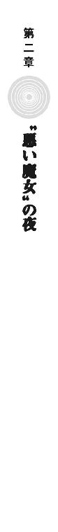
おとなの世界は、お互いの利益がからんだ巨大な歯車に組み込まれている。それは、思惑のバランスで黒いものも白くなるということで、その中でどう人間でいられるかはひとつの戦いだ。
だから、そこにまだ加わっていない子どもの目だけが、ときに真実を映す。
御陵甲小学校六年一組の学級委員長、寒川紀子は困っていた。来週末には文化祭だというのに、演し物の劇で悪役をしている鴉木メイゼルに連絡がまったくつかないのだ。
「もう、やめてよ。本当に、台本を変えてほしいって言ったの、鴉木さんだよ」
シールを貼った携帯電話が、彼女の学習机にぽつんと置かれたままだ。
明日の月曜日に、メイゼルがちゃんと学校に来ていて話ができたら問題はない。けれど、昔から鴉木メイゼルというクラスメイトは、よく学校を休んだり早引きしたりしていた。
出会った頃、鴉木メイゼルは周囲のあらゆるものを拒絶するようだった。ただ副担任の武原先生にだけ、振り幅のはげしい感情をぶつけていた。
休みの日のうちに赤字を入れた台本は、もうランドセルに入れてある。紀子は、寝支度をしてベッドサイドに眼鏡を置いた。そして、パジャマのまま机まで歩いていって携帯電話を確かめた。メールの返信はない。
携帯電話には、彼女とやりとりした何通ものメールが入っていた。
メイゼルは変わったのだとは思う。どこという以上に、クラスの人と話す時間が倍以上に増えた。
「そういえば、私立に行くなら受験だけど、鴉木さん、中学は公立に通うのかなあ」
ふと浮かんだ疑問が、ひとりごとになっていた。中学受験をひかえて、六年一組でも半分くらいの生徒は休み時間にも勉強をしている。紀子も中高一貫の中学を目指して受験勉強中だった。
メイゼルは、同じ小学生とは思えないほど、奔放で、嗜虐的で、自分をしっかり持っている。まるでおとぎ話の悪い魔女そのままだ。
携帯電話が震えた。メールを着信したのだ。ようやく連絡がついたかと思ったら、メイゼルではなく図書委員の天瑞岬からだった。
〈変といえば、武原先生のほうが、変〉
今回の『白雪姫』の劇の脚本を書いたのは天瑞岬だった。つまり、白雪姫の口に毒リンゴを押し込んで食わせる演出も、王子と悪い女王と白雪姫が泥沼の三角関係をくり広げるのも、彼女のせいだ。
紀子は、返信のメールを書いた。
〈武原先生のことは、あんまり考えないほうがいいと思う。不思議とかいうレベルじゃないし〉
彼がいると、六年一組の空気がおかしくなる。小学校に六年間も通ったから、紀子にも彼が学校の他の人と〝ちがう〟ことくらいわかる。
〈鴉木さんのことだけは考えてるみたいだから、おとなの人だし、まかせたほうがいいよ〉
彼とメイゼルは、明らかに何か秘密を隠している。けれど、彼は彼女をクラスになじませようとしている。その努力がメイゼルを変えたようにも思えてきた。
武原先生は、いつも彼女たちから一歩引いている。まぶしいものを見るように、メイゼルがいる教室の様子を眺めている。
紀子は、メールを送信した。窓の外は、深い闇だ。子どもが出歩くには危ない世界が、どこまでも広がっている。鴉木メイゼルは、結局どこに帰るのだろうと、ふと思った。
岬から返信が来た。
〈武原先生は、たぶん、今、アトランチス人と戦ってる〉
「天瑞さん、結論すごい飛んだ」
†
地底深くで夜は明けない。
《九位》──グラフェーラ・トリアは永遠の闇にいる。
東京の地下約四千メートルの位置に、《協会》の最重要遺物である《門》は存在する。地上に増えすぎた《悪鬼》たちにここを攻撃する能力はない。すくなくとも今のところは。
彼女は、三十六の魔法世界の最高位魔導師で構成された、《協会》の意志決定者である《三十六宮》の一角だ。《門》に近い中枢部に工房を構えることも、その特権のひとつだ。
差し渡し一キロメートルを超えるとてつもなく巨大な空間に、巨大なミサイルが転がっていた。八月時点で百発あった核爆弾を、彼女はミサイルに載せられるように小型高性能化した。それを《三十六宮》の政治力で大量生産し、すでに一千発以上の核ミサイルが発射可能だった。
「アトハ、適切ナ発射台ガ必要デアルナ」
《九位》は、天井を見上げた。どんなに広くとも、地下は窮屈だ。彼女の前に立っていた黒と銀の甲冑の男にもそうだ。だから、短く意志を問われた。
「やるのか」
「円環大系ノ未来、他ニ、道ハナシ」
グラフェーラは、十三年前に《地獄》に漂着した。《憎悪の女王》イリーズ・アリューシャが起こした戦争の終局で《神》が死に、調整者を失った円環世界の時間が凍結したとき、弾き飛ばされたのだ。そして、ただひとりの超高位の円環魔導師となった彼女は、一時的に円環世界の代表となった。それは、故郷のために、孤独な権力闘争を引き受けたということだ。
彼女の協力者である《雷神》クレペンスは、金属質の銀髪をした若者のように見えるが、実際には四千年も生きる老騎士だ。だからこそ歴史の急転に追いつけていなかった。
「《悪鬼》の寿命は短く、社会の風向きはすぐに変わる。今、ぶつかればあまりにも大きな犠牲を出そう」
「円環世界トトモニ凍ッテイタソナタニハ、ワカラヌ。......《地獄》ニテ、魔法使イノ活動スル場所ハ減ル一方ダ。収穫ガ減レバ、立場ノ弱イ者カラ利権ヲ失ウノミ。時ハナイ」
彼女が漂着したころから、《地獄》ではネットワークが発達し、携帯電話が普及し、監視網が一気に普及した。進歩は無慈悲だ。
「吾ラカ、奴ラカ、コノ地上ニ残ルハ片方ノミダ」
彼女は円環世界という後ろ盾を失って、身を危険にさらして戦い続けた。《協会》からの支援もろくに受けられぬまま、《悪鬼》のさらなる勢力拡大を予想して、核爆弾の開発に着手した。何度も危ない目に遭った。
そんな彼女が、時間凍結が解け、《紅宮》九位まで堕ちた円環大系の最高位魔導師として《三十六宮》に迎えられた。荒廃した円環世界には、強い指導者が必要だった。イリーズ戦争の成り行きから他の候補者はなかったし、何より彼女には、世界を復興する意志と計画があった。
「だが、肝心の核爆弾を、どうやって《悪鬼》どもの街で爆発させるつもりだ。魔法的転移で行って置いてくる方法では、警戒を強められたとき国の急所には当てられぬぞ。この〝ミサイル〟とて、この地中では発射もままなるまい」
《九位》は、円環世界の未来を決する大勝負に出ようとしている。彼女は今も、義理の姉である天才イリーズの影から逃れられていない。彼女を鋼鉄の身体に改造したイリーズは、世界に対する責任を投げ捨てた。だからこそ彼女は為政者の責任として、故郷を立て直さねばならなかった。
暗闇で、《九位》は、じっと機会を待ち続ける。
地表で起こっている出来事が、彼女の部屋に置かれた多数のモニタに表示されていた。
そのうち半数以上が、この東京に近い公海に突如浮上した、アトランチスについての報道だった。
「核ミサイルノ発射ニハ、コレヲ使エバヨイ。〝コレ〟ニハ、《太陽女王》ロザリンドノ死後、ソノ武装ヲ研究スルタメニ、ヒトトオリノ改造ガホドコサレテアル」
《九位》は、このアトランチスを名乗る施設をよく知っていた。グラフェーラ・トリアとして彼女が何度となく訪れた、イリーズ戦争の決戦の舞台だ。
「この浮遊城とは、この世界でも五百年前に撃ち合った。そのときは、《連合》の空中要塞として地中海を飛んでいた。もっと古い時代にも、同じものと戦ったが、これはおそろしく頑丈なだけで発射台などあらぬぞ」
「武装ハ、一度取リ付ケタ後、イリーズガ、自分ガ魔法デ戦ウホウガ数段強イト判断シテ、スベテ装甲デフサイダノダ。ワイズマンガ、核ミサイルノ発射装置ヲ浮遊城ニ組ミ込ミ直シタコトヲ、間諜ヲハナッテ確認済ミデアル」
もはや魔法使いのいくさではあらぬとばかりに、《雷神》が瞑目した。時代遅れである彼は、機械化時代の戦略策定には役に立たない。
「イリーズが〝これ〟を建造しはじめたときは、驚いたものだ」
《雷神》クレペンスは、かつて《地獄》で多くの戦いを勝ち抜き、闘神の祖型となった。その彼が言うのだから、この浮遊城も、《九位》と同じくこの世界に、ただし二千年以上過去の時代に弾き飛ばされたのだ。円環世界から漂着したのは、彼女だけではない。
「ワイズマンノ核ミサイルハ我ラガ撃チ尽クシ、足リナイブンハ、《悪鬼》ドモガ滅ビルマデ、ココニ蓄エタミサイルヲ撃テバヨイ。スベテ、我ラガ使ウヨウニ、時ガアラカジメ定メテイタトイウコトデアロウ」
イリーズの遺産を、生前はその栄光を後ろから見るしかなかったグラフェーラが、《地獄》を焼き払う核攻撃要塞として利用する。そう考えると、暗い愉悦がにじんだ。
巨大な歯車が、彼女たちの運命すらも巻き込んで、ゆっくりと回っているかのようだった。
†
魔導師公館の事務官、十崎京香の肩には重い責任がのしかかっている。社会という歯車の一部だからこそ、誰も持ちたくはない重荷を背負う役も果たさねばならなかった。
旗色が明らかでないアトランチスという民族が現れたことによって、北太平洋の国際情勢は混沌に沈んだ。
十崎京香のもとには、ひっきりなしに関係各所から「住民代表ハウゼン・Ｏ・ジモリーとは何者か？」という問い合わせが届く。かつて魔導師公館の専任係官だった《魔術師》王子護ハウゼンの活動は、それほど派手だということだ。
アトランチス浮上からわずか二日間で、隻眼の道化師は十九カ国でテレビ出演をこなし、政治家や財界人との会談を行っていた。しかも交通機関を使わず、ニューヨークでインタビューをこなした後、五分後にはロンドンのスタジオで演説している。このスケジュールをこなせていること自体が、既存の常識で考えられない移動手段の存在を示していた。
「今日は、全世界的に、飛び降り自殺が多いようですね」
京香は、ファックスされてきた問い合わせ書類の束に目を通していた。一番上の書類は、「人間は空を飛べるのか？」という、頭の痛い質問項目だった。今日一日で、そう信じてビルから飛び降りた人間が世界中で数千人いるのだ。
彼女の執務室にいた体格のよい男性が、デスクから書類の束をひとつ手に取った。短髪でスポーツマンじみて見える彼は、公館嘱託の魔法学者、溝呂木京也だ。
「興味深い現象だな。地球人口の九十九％以上を占める《悪鬼》は、魔法どころか、消去された破片である《魔炎》も観測できんというのに、なぜ命を懸ける」
「見えないからですよ。我々は、見えないからこそ、素晴らしいものであるように錯覚するのです」
誰もが救いを求めているようだと、京香は思う。
王子護が世界各国のテレビで、観測されない場所というルールの枠内で奇蹟を起こすたび、世界中でバカ騒ぎが起こる。自分の生きる現実から、どれほどの人間が逃げてしまいたいのかと、追い詰められる心もちがした。
「溝呂木さん、バカバカしいことかもしれませんが、意見を聞かせてもらっていいですか。......アトランチスと、我々が追い詰められている核戦争を控えたこの状況が、繫がっているように感じませんか」
睡眠時間をとれていないせいで精神的に不安定になっているのかも、判別できなかった。京香は、あまりにめまぐるしい転変に疲れ切っていたのだ。
「昨日の会議で、《連合》のアリーセ・バンシュタインが、再演大系を脅威視した気持ちがわかります。こうもひどいと、どこかで何者かが糸を引いていて、うまくいかないのは〝何者か〟のせいだと思えてきます」
溝呂木が、書類を置いて身を乗り出してきた。彼の専門分野に入ったためだ。
「なに、救いを求めるのが、この世界の本質だ。この世界には、選択されていない《神》が現状で最低でも四体、重ね合わせた状態で存在している」
京香は目元を指で強く揉んだ。腫れているのか、熱くて重い感触があった。
溝呂木説は、地獄特有魔術の正体として有力視されている。現代魔法学にくわしい人間にはよく知られているものだ。
「いいかね、今回の一件は《神》について理解を深める絶好のチャンスだ。カオティックファクターの根源は、《神》がいないこの世界の住人が想像した救いのかたちだ。この世界のみが、《魔獣使い》や、《破壊》や、《蛇の女王》と、複数の魔法を持つ。《神》を知らない我々のイメージする救いのかたちがぶれるからだ。我々は、救いを求めながら、それをひとつのかたちでイメージすることすらできん」
京香は、溝呂木説をヨタ話だと考えている。当たっているなら、それこそ無数の種類のカオティックファクターが存在するはずだからだ。だが、現実にきちんと確認されているものは、《悪鬼》の魔法消去──武原仁を除いては止めることすらできない能力──をひとつの魔法と数えても、四つしかない。
「魔法学会で溝呂木さんに向けられた反論を蒸し返しますが、魔法使いの歴史が正しいなら、《神》なきこの世界の人類に信仰を教えたのは、神音大系の魔法使いたちですよ。神聖騎士団は、奇蹟なき《地獄》に、いもしない《神》と祈ることを教えた贖罪で戦いはじめたと言います。溝呂木さんの説が正しいのなら、聖騎士たちが、人間が救いを求める起点、つまりカオティックファクターの発生した起点でもあることになってしまいます」
それが正しいかよりも、京香たちが〝この世界のもの〟だと見なしているものまで、すべて異世界人のしわざであるという話が、気持ち悪かったのだ。
「十崎君も、武原君と同じで、私の説は受け容れがたいという立場だったな。......だが、カオティックファクターという《地獄の奇蹟》の機能が、語っている。これらは、人類を飢えや自然の脅威から簡単に救えるものを、すべて即物的に提供する。......《索引型》、《魔力型》どちらにも分類できない性質も、力の性質を決定する我々に魔法の知識がないためだと考えればいい。この世界の《神》が、救いのイメージを固められないゆえに選択されていないことと、一貫性を持たないか」
溝呂木の話が、早ければ明日にも、《破壊》せ咬誠志郎に世界を救うためアトランチスを攻略するよう命じることを思うと、ひどい皮肉に聞こえた。
「原始的な自然信仰が、人に自然からの恵みを求めさせ、《魔獣使い》を生んだ。複雑な世界観を持つ神話の出現が、自然以上のあらゆるものを求めさせ、《蛇の女王》に変質させた。強固な終末観が現れたことが、破滅を《破壊》として現実化させた。現に、各カオティックファクターの発生分布は、その地域で流布している神話の形質に近い」
「我々が求めれば〝救済の神〟が来るなら、この世界はとっくに救われているのでは？」
日本中が、いや世界中が不安に追い立てられている。世界中に大きく報道された夏の核テロ事件からずっと暗いニュースばかりだ。
「元々歪みのないこの地球の秩序を、観測者が歪めるのだ。莫大な力が必要になる。《神》を呼ぶのに地球人口が一定数必要なら、まだ救いが到来していなくても矛盾はない。......だが、この状況が続けば五つ目のカオティックファクターが生まれる可能性も、あるのだろうな」
溝呂木が、手のひらをこすり合わせて汗をなすりつけていた。追い込まれてゆくような緊張感に、京香は恐怖し、溝呂木は興奮している。
「とりあえず、『人間は飛べない』と、政府公報を出してもらうことにしましょう。すぐに、悪いジョークだと笑ってもらえる状況になるとよいですが」
京香がキーをたたくと、バカバカしい書類がプリントアウトされてきた。
彼女が判子をつく。『魔法使いに暗がりへ連れ込まれそうになったら、迷わず助けを求めてください』と、魔法に便乗した犯罪行為に注意を呼びかけることが決まる。
彼女は書類を処理する。
京香は、これまでなら魔導師公館の戦闘指揮者として様々な意志決定を行っていた。だが、今回はまったくちがう。
そもそも、日本政府は、アトランチスの代表者である王子護ハウゼンと単独での交渉をしていない。王子護は夏の東京核テロ事件の主犯だからだ。
これは同時に、アトランチスの住民が米軍基地から核爆弾を盗んだ犯人グループであるということだ。だから、すくなくとも日本の同盟国であるアメリカは、問題を、領土だけでなく国際的な核戦略の枠組みで考えていた。
このため、アメリカ海軍の艦隊が島を包囲することが、すでに決まっていた。
「結局、この茶番は何を指しているのだね。相手は魔法使いだ。あの島を包囲したところで、上陸したときには魔法的転移で誰も残ってはいないだろうに」
溝呂木も、常ならぬ緊張感は気になっている様子だった。
「アメリカは、王子護をテロリストとして国際手配した上で、アトランチスを攻撃するつもりなのですよ。王子護は、顔出しでテレビに出ましたから、過去のテロ事件に証拠があれば、重要参考人として拘束されても仕方のないところです」
「身も蓋もないな」
「『アトランチスは国際テログループによって占拠されていた』とでもアナウンスするんでしょう。上陸の名目もできて一石二鳥ですよ」
「だが、民族を名乗った相手を叩き潰して、国際的に問題ないのかね？」
「アトランチス問題の焦点は、魔法使いが失われたアトランチス民族を勝手に名乗って、地球人として魔法使いらしく生きる権利を主張しているということです。散り散りに逃げた彼らが、よって立つ場所を失ってふたたび地下に潜るなら、それを惜しむ国はありません」
魔導師公館と神聖騎士団が共同して行う攻撃は、アトランチスを包囲する艦艇の移動にかかる時間を利用して行われる。軍がすべてを片付ける前に、問題を魔法使いの世界で処理する〝猶予時間〟をもらった格好になる。
だが、この主導権も神聖騎士団に握られていた。京香は、わかっていて動けないことが歯がゆかった。
「筋道を通すのであれば、国連に一度付託して決議を待つべきです。ですが、王子護は、世論を醸成することでアトランチスの価値をつり上げようとしているのです。領土問題になって現実味を帯びて色あせないよう、世界中の人々に魔法という夢を演出しているのですよ」
「王子護くんが、この世界の国すべてが魔法使いの存在を隠蔽してきた以上、今さら国際社会を信用しないというなら、それはわかる。だが、『価値をつり上げる』とは何かね」
「おそらく、政治の場ではのらくら答えを出さずに時間を稼いでいるのでしょう。アトランチス領有の正当性を国連に付託するとき、どこの国にアメリカとアトランチスの関係の仲裁に入ってもらうかの価値を、王子護はつり上げているのです。つまりは、その間に、『この世界中の人間が魔法使いであって、自分たちの仲間だ』という噓を、人々に聞かせ続ける。噓に、自分たちの命運を託したのですよ」
理論の人である溝呂木が、絶句した。それは、本来深刻な領土問題であるアトランチスを、人類の夢とスリ替えた大ペテンが、今も規模を巨大にして進行中だということだからだ。
「誰だって、自分に不満を解消できるおおきな力が眠っているかもしれないと言われれば、興味を持ちます。夢物語ですが、これだけだまされたい人間が多ければ可能性もゼロではないでしょう」
だが、もしも「人間存在の可能性を信じる」などという世論がアトランチスを守るように動き、それが達成されたなら、この世界の住民の意識が変わる──まさに奇蹟だ。ペテンを超えて、京香たちでもあつかえることばで起こした、魔法だ。
肌をひりつかせるような道化師の覚悟が、遠く離れた京香にも伝わるようだった。溝呂木すら、つり込まれて身を乗り出していた。
「噓を、そこまで押し通そうとするかね？ いや、王子護君ならばこそか」
「喝采を浴びれば生き、さもなくば破滅。彼には、さぞやりがいのあるショウでしょう」
世界と勝負している王子護に引き比べて、彼女たちは、正常な国際政治のバランスでは使い走りだ。魔導師公館は、不意打ちで標的を叩き潰す暗殺でこそ力を発揮する、ちいさな組織でしかない。
京香は、《公館》の仕事を社会の闇に追いやらないため警察に接近した。だが、動きはじめた新しいシステムの中で力を生かそうとすれば、せっかく入り込んだ仕組みの陰に回らねばならない。ひどい矛盾だ。
責務を果たさなければ破滅に近づくような、焦燥が彼女を追い立てる。
今回の危機が、これからの魔導師公館の仕事のビジョンを示し得るか、まだかたちを作れていない。
京香は、深夜の合同庁舎からハイヤーに乗った。彼女には、最悪にそなえて打っておくべき手がまだあった。
《鬼火衆》が魔導師公館から離れてから、京香は、しばしば褐色の肌の狙撃手アナスタシア・タバタを護衛に使っている。夏に狩猟魔導師中隊として核テロに参加した魔法使いたちが、彼女の要求する人材にもっとも近かったからだ。つまり、警察庁のＳＰとちがって、人間へ銃口を向けることに躊躇がない。
助手席に乗った護衛の少女は、地底都市で暮らしていたから夜目が利く。
「ボス、打ち合わせより向こうの頭数が多い。同行するか」
アナスタシアの声は、若いというよりおさない。その事実が、彼女の仕事が抱えた、正義などとは恥ずかしくて言えない暗さを示していた。
「不審な動きがあっても、ユリア・シュバールと調整官ベルニッチは撃たないで。この暗さでも、顔は判別できる？」
核テロ事件の裁判での温情と引き替えに、仕事をする取引をした少女が、無言でうなずいた。彼女が、膝の上にのせていたケースを開けると慣れた手つきで拳銃に減音器をとりつけ、弾倉を装塡した。
京香は、車を出る前に、運転手に異常があればすぐ警官を呼ぶよう言い置いた。
十一月も下旬に入った東京の夜は、冷たい風に洗われていた。合同庁舎の制服官僚に遠慮して選んだ紺色のスーツでは、肌寒かった。官庁街からほど近い、皇居の内堀沿いのゆったりとした空間が取られた石畳に、五人の男女が立っていた。
《逆天》ユリア・シュバールと、その部下の四人の魔法騎士が集まっていた。《逆天》ユリアは強力な高位魔導師だが、肌も髪も真っ白で体格も貧弱だ。甲冑ではなくひだをたくさんつけた優雅なドレスを着た彼女は、ひどく寒そうだった。
「時候のあいさつは省きましょう。お互い忙しい身です」
京香が声をかけると、緊張した魔法使いたちを身振りで制して、ユリアが前に進み出た。
「聖騎士が、このあたりにもいるようですね」
「それで部下を連れてこられましたか。ご心配なく。あのイヤフォン頭どもと、魔導師公館が本気で手を組むことは、この日本が沈没してもありません」
京香は、アトランチス攻撃をともに行う神聖騎士団を信用していない。聖騎士は、《賢者の石》を求めて白昼堂々軍事行動を行ったように、倉本きずながからむと手段を選ばない。ただでも目減りしている《公館》の戦力を、いつまでもそんなものには預けられない。
「《公館》は、変わったのではありませんか」
「確かに組織は刷新されました。ですが、我々にとっての仕事の中心は、アトランチスや聖騎士ではなく、あなたがた《協会》のままです」
「あなたが言う《協会》とは、我々、非主流派ではなく、《九位》のことでしょう」
ユリアの声の裏には、先日、会議が襲撃されたとき、警察が列席者より早く撤退していたことへの非難があった。
「《九位》との和解も、今さらあり得ません。ここまで来た以上、決戦で、我々《悪鬼》か《九位》か、どちらかが消えます」
彼女たちは大人のケンカをしている。だから、殴り合いのために、終わった後の落としどころをまず作らねばならない。
《神》と世界に対峙する魔法使いのほうが、道理には潔癖だ。
「誰かを欺いている者が、自らのことも裏切っていないと何故言えますか」
「人間を見て信用ならないなら、利害で判断してください。日本にとって、魔導師公館が聖騎士と仕事をするということは、魔法使いにからむ治安活動でアメリカに口を出されるということです。そうなれば、聖騎士たちは我々の活動を制限しようとするでしょう。《九位》が斃れれば、我々と神聖騎士団の協力関係は、どのみちすぐに崩れるのです」
もしも核戦争の脅威が去っても機械化聖騎士師団が東京駐留を続ければ、次はアンゼロッタたちと、近いうちに衝突することになる。
そのときは、京香の経験にもないほど寒々しい、陰謀の冬が来る。
ユリアの吐く息が白く濁った。
「ですが、それでも、我々《協会》の非主流派から《九位》への刺客を立てよとは、身勝手な申し出ではありませんか」
京香は、神聖騎士団と協力したアトランチス攻撃という方針とは別の、二本目の道を用意した。聖騎士とは、最後には共存できないからだ
「《九位》には、例のアトランチスの件が片付く前に消えてもらわねばなりません。そのためになら、手段は選びません」
《九位》が実権を握る前までなら、アトランチスの攻撃も《協会》と合同で行ったはずだった。実際、《神に近き者》グレンとの戦いはそうだった。彼女が望む落としどころは、そういう安定した関係を取り戻すことだ。
「我々、《公館》からも刺客は用立てます」
「最高位魔導師の力を、甘く見てもらってはこまります」
「《神に近き者》グレン・アザレイの双子の弟、浅利ケイツならば──」
京香は逮捕した浅利ケイツを死地へ送るために、彼を尊敬するリュカ・エラド・マナを追い込んだ。
「あれは臆病者です。今さら、命を懸けて働きますか？」
「仕事を果たさなければ、元最高位魔導師であるスセラミスの子、リュカ・エラド・マナがかわりに死にます。リュカ本人に──メイドの格好をしてケイツに引っ付いていた少年をご存じですか──彼に、そういう書類に署名させました。彼を見殺しにすれば、ケイツは、相似世界にいる数少ない味方すら失って孤立します」
少年の純粋な崇敬を利用して、逆にケイツに社会的な破滅を突きつけたのだ。純真を嘲笑う吐き気のする〝悪〟だが、彼女にとって手を尽くすとはこういうことだ。
ユリアはその鞭の効果を納得した。
「魔導師公館からは？」
「手違いがなければ、《魔獣使い》神和瑞希。......そして──」
ここからはハッタリだった。だが、京香の噓を、ユリアには確かめるすべがない。
「──刻印魔導師、鴉木メイゼル......イリーズの娘であるメイゼル・アリューシャ。そして、今は専任係官ではなく外注業者としてではありますが、《沈黙》武原仁」
彼女はふと、倉本きずなのことを思い浮かべた。あの〝普通の女の子〟だった〝甘い〟きずなに気概や頭があれば、別の展望もあった。だが事態の中心にいようが力を持とうが、自分の運命の引き金を引けない受け身な人間を、彼女は信頼できない。
「超高位魔導師に準じる高位魔導師が二名、専任係官二名......。わたくしを加えて刺客は五名。なるほど、考え得る中では、最良の布陣と言えるでしょう」
ユリアが場違いなほど清々した様子でうなずいた。戦場の人の、覚悟を決めた微笑だった。
京香の背中に、幾度経験しても慣れない戦慄が降りた。これから目の前の魔女も死地へ赴くのだと実感した。
都心部のビルの林は、皇居のまわりではぽっかり穴を開ける。ふと空を見上げると、時代を超えてこの都市を見守る真っ暗な闇が広がっていた。
ふと、同じ夜空を仰いでいたユリアと、無防備なかたちで顔を見合わせることになった。
「何もかも焼き払わねばならないほど、この世界は間違っているように見えますか」
なぜかわからないが、話しかけていた。あの《九位》が、この国を核テロで焦土からやり直そうとした国城田義一と繫がっているように思えたのだ。
本当は何歳なのかもわからない高位魔導師と同じ世界を見ているのかすら、京香にはわからない。
「あなたは、あの《沈黙》と個人的な友人だと聞きましたが、今の今まで信じられませんでした。けれど、ようやく共通点が見つかりました」
言われた京香としては、仁が姿を消した倉本きずなと似ていると思っていた。きっと、彼は今ごろ事態の中心であるきずなに、生き残る力を与えられるか苦慮しているはずだった。だが、暢気すぎる彼女を戦士として教育することは、仁の望む〝ヒーローみたいな〟道ではない。呪われたように、彼の選ぶ道はドツボにはまる。
「誰しも、荒れ野の前に立たねばならないときはあります。けれど、そのとき後ろを歩く者のために道を造るか、武原仁のように立ち止まって行き先を迷うかは、はっきり別です」
京香は〝悪〟を為しているが、幼なじみと同じ道を行くことはない。彼女は実務家であって、周囲に迷惑をかけながら考え事を続けたりはしない。
「お互い、話をしている時間はありませんね」
手を尽くしたと言える仕事だった。
京香は、政府の方針を違えずに〝二本目の道〟を用意した。つまり、さっき第二の道としてユリアに確約したのは、現時点で《公館》が自由に動かせる戦力ではない。京香の指揮のもとにある全戦力は、政府からの指示通りアトランチス攻撃に向かう。
この成り行きは、政府が許容できる範囲を超えているかもしれなかった。もしそうなれば京香は解雇されるかもしれないし、口を塞がれるかもしれない。だが、どんな汚い手段を使っても、建前である政府の論理と、建前でカバーしきれないものに対処する《公館》の論理を両立させる。それが、彼女が選んだ、魔導師公館の新しい仕事のしかただ。
護衛についてくれていたアナスタシアが、進路に敵がいないことを再確認した。
車に戻ろうと歩き出したとき、褐色の少女が鋭い反応で振り向いた。京香が疲れた身体で後ろを向く前に、声がかけられた。
「これまであなたがたは、変化の訪れを水際で食い止めてきました。ですが、今度こそ〝そのとき〟なのかもしれませんね」
魔法使いが思わせぶりなお告げをするのは珍しくない。だから、無視して車へ向かおうと足を踏み出したそのとき、ユリアは彼女に冷や汗をかかせた。
「そちらの神和瑞希の屋敷に、《連合》の《導師》アリーセ・バンシュタインが滞在していることを、ご存じですか」
京香のあずかり知らぬことだった。アリーセが滞在先のホテルから昨夜チェックアウトしたことはつかんでいたが、その後の行き先はつかめていなかったのだ。
現実は、手を尽くしてもなお彼女の考えの上を行く。ユリアを問いただそうと慌てて振り返った。
純白の魔法騎士は、いなかった。部下共々、京香の魔法消去にとらえられる寸前、魔法で転移したのだ。
最初の変革は、その夜のうちに訪れた。
明治期の富豪が別荘を構えた東京多摩の住宅街の一角が、炎をあげた。二十一世紀の東京には珍しい大邸宅が、突如、業火に包まれたのだ。
つい一ヶ月前、一キロメートルほど離れた洋館が全焼する火事があったばかりだった。だから、近隣住民はもらい火を恐れてバケツを持って集まった。だが、高い塀に囲われた屋敷は門を開かなかった。消防車が到着し、消防士が門を叩いても、やはり中から人が出てくることはなかった。
ごうごうと音を立てて深夜の底を焼き、古い職人仕事の風格をたたえる木造の屋敷は燃え続けた。
†
その木造平屋の建物を、五十騎を超える完全武装の騎士たちが踏み荒らしていた。壁も、畳も天井も、すべてが炎に包まれていた。畳が燃えている日本家屋の中で、生身の人間はまともに呼吸をできない。その熱気の渦の中で、騎士たちはまったくこたえるふうもなく活動していた。汎用防御魔術である《光背》で熱を防ぎ、魔法で生み出された呼吸可能な大気を、機械化装備が供給し続けているからだ。
「神和邸、応接間Ｂまでを検索、抵抗なし」
たくましい美貌の騎士、強化試験部隊の隊長であるゴーティエ・マルキオが、通信機へと報告した。彼の周囲にいる化学繊維の鎧を着た騎士たちが、神和邸攻略部隊の先鋒だ。
ゴーティエの背後に待機していた騎士たちが、彼の手信号に応じて、新しい部屋に突入していった。一部屋ごとにこうして突入、敵の排除を繰り返すのが、機械化騎士団の新しい拠点攻撃の方法だ。
空撮した写真から予想した間取り図と、実際の状況の差を確認しながら、中庭に設置した臨時司令部からの指揮を受けて次の行動を速やかに決定する。通信装備を管理するのは、未踏神音試験部隊の主任技術者であるニコール・セフォンだ。
燃える館の中、魔法で火からは護られても、戦闘と死の恐怖と緊張の汗は流れ続ける。汗みどろの五十名の騎士が、剣を抜き、獲物を求めて目を血走らせていた。
「探せ！ 神和家のやつらは逃げられないはずだ」
「応接間Ｃを検索、抵抗なし」
「離れに向かえ！ 二分隊でカバーしながら突入しろ」
可燃物だらけの屋敷の内側には、熱気と気流が嵐のような風鳴りを立てていた。外の音などほとんど何も入ってこない。厳重な塀の内側は住宅街にあって異界と化していた。
だから、〝彼女〟が火の海を平然と歩いて現れたとき、欠けていたものが埋まったような奇妙な安堵の表情を騎士が浮かべた。
気のゆるみを突かれて、騎士が数人、忍び寄っていた触腕に首を折られた。屋敷を埋め尽くすように、混沌大系の自律する魔力である《走狗》が一瞬で現れたのだ。のたくる半透明の怪物が、無数の触腕を猛火に這わせて、温かい死体をちぎって食いはじめた。
壊れた機械化装備がハウリングを起こして、甲高い音を発した。
《導師》アリーセ・バンシュタインが、大量の鮮血が焦げた柱や畳に散った赤い花吹雪のど真ん中に、静かにたたずんでいた。炎と血の、真紅の地獄で、清楚に微笑んでいた。
「焼き肉が、鉄板を着てやってきましたわね」
《地獄》の魔法使いで、アリーセを知らない者などいない。神和邸に彼女がいることを予想していたように、騎士たちは迅速に動いた。美丈夫ゴーティエが集団の指揮をとった。
「方陣防御を崩すな！」
音もなく、炎に焼けない半実体の《走狗》が火の海を押し寄せた。
力関係では、超高位魔導師とそれ以外の差は決定的だ。《連合》評議長であるアリーセが相手では、五十人集めたところでそれは埋まらない。
十人の分隊単位で行動する騎士たちが、方陣を組んだ《光背》の多重結界で《走狗》の群れを食い止めていた。だが、そこまでしても自律した《魔力》を止めているだけで、アリーセはまだ指一本動かしていない。
人食いの魔女が、テーブルいっぱいのごちそうのどれから食べるか迷うように、騎士たちを指さしていた。
「聖騎士の人間関係って、いつ見ても濃厚で、よく熟成されていますわ」
そのアリーセの身体が、横合いから嵐のように撃ち込まれた魔弾で吹き飛ばされた。蜂蜜色の巻き毛が振り乱され、白い服がはためいた。だが、立ち上がった彼女は、当然のように無傷だ。
「わたくしを〝押す〟くらいはできる魔法使いなんて、豪勢に戦力を出しましたね」
指でアリーセが天井を指した。したたり落ちるように、方陣の頭上に突如発生した《走狗》がぼとぼと騎士たちに注ごうとした。
「身体を低くして」
声をあげたのは、大きなヘッドフォンをつけた少女だった。
燃える畳に躊躇無くヘッドフォンの少女が両手を押し当てる。音から奇蹟を引き出す神音魔術が、ふたつ同時に発動した。ひとつは《触れた一定範囲の平面を打楽器にする》魔術、そしてもうひとつが打楽器と化した畳から発した《魔弾を無数に撃ち出す》魔術だ。
降り落ちた《走狗》が空中で迎撃されて、弾き飛ばされ、屋根にぶつかり魔法消去で燃え尽きた。
アリーセに視線でうながされて、頰にそばかすを散らした生意気そうな彼女が、ぶっきらぼうに言った。
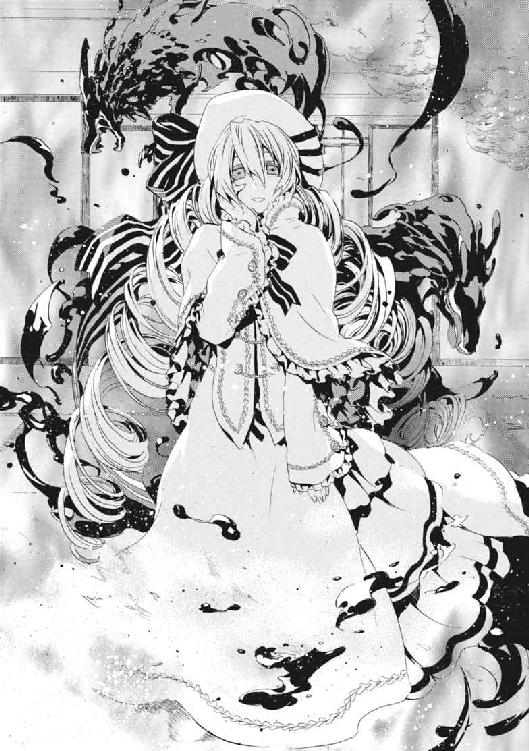
「多重神音型機械化魔導師、被験者二番、カヤ・リスケン」
同時に、騎士たちを襲っていた《走狗》の群れが波打って爆発した。
混沌大系の《魔力》そのものであるとはいえ、ただ〝関連性〟という概念だけが浮かんでいるわけではない。概念に人は食えないからだ。そのまさに人間を食い散らかしていた実体の部分を、カヤの魔弾が破砕したのだ。
「ふたつの神音魔術の同時発動。──アンゼロッタの多重神音を、機械化で再現できたということかしら」
アリーセが焼け落ちてきた屋根の破片を空中でつかみ取った。瞬間、すべての《走狗》が、触腕と顎を火炎の嵐で構成し直した。〝関係〟に見いだされる混沌大系の《魔力》が、炎と自身を結んで身体を火に転化したのだ。
《光背》を削る破壊力が飛躍的に増したことで、方陣の一部が防御を削りきられて火だるまになった。
騎士たちが浮き足立った隙をつき、燃える《走狗》の群れがカヤを狙って突っ込んできた。ゴーティエが身を盾にするように前に出た。
「カヤ、さがれ！」
機械化騎士の一団が、中庭へ向けて後退をはじめていた。邸宅の中心にあたるその開けた空間には、《魔炎》が盛大にあがっていた。そこに司令部を置いた未踏神音試験部隊は、集音マイクを設置することで《走狗》から魔法消去で護られていたのだ。
燃える邸宅の中、〝怪物〟は、人類が文明を得て以来逃げようと試み続けた、闇そのもののようだ。
魔法使いである聖騎士たちが、奇蹟の天敵たる魔法消去に頼って中庭に退避した。それは、皮肉な光景だった。
「さあ、どうせ食べられてしまうなら、つまらない策に頼らず、進み出ていらっしゃい。魔法使いが群れていると、弱く見えますわ」
浅い池を掘った中庭に、冷たい水に膝まで浸かり、震えながら騎士たちが応じた。
「驕るな、怪物。......我々は、ただの群れ集った弱い魔法使いではない」
「では、なんだと言いますの？」
「──神意に到達する人間の鎖、神聖騎士団だ」
今度は、まるで竜巻だった。
屋敷の内側で起こった大気の爆発が、屋敷の屋根を半壊させたのだ。それは、かつて日中の住宅街で、衆人環視の中、エレオノールのアパートを一撃で破壊した大魔術だ。
夜間の人目程度の魔法消去で、消去しきれるはずもない。
爆風が止んだとき、神和邸の屋根からは瓦の大半が吹き飛び、破れた屋根板の隙間から月が見えた。
銀色の鎧を着た乙女が、空中に浮かんでいた。新たに現れた騎士は、明らかに人間ではなかった。屋根からこぼれた土がかかった、その身体は半透明だった。
《導師》アリーセは、この大魔術の爆発ですら、一歩も後退などしなかった。ただ、頰に手を当てて、一撫でした。薄桃色に上気した肌についた傷が、それだけで治癒していた。
「《聖霊騎士》は、どれを食べても空気ばっかりで、あまり好きではありませんのに」
邸宅の被害は屋根だけではない。襖や障子もすべて吹き飛ばされていた。脆弱な木造の離れに至っては平行四辺形にひしゃげている。
「いや、ちょっとはぼくらのことも気にしてくださいよ。さっきのは、防御できたでしょう」
燃えていた離れの壁が、炎ごと文字通り千切りに裁断された。建物の中にいた《笑い顔》虎坂井レイが、魔剣を振り抜いた姿勢のまま、鋭く息を吸って呼吸を整えた。
「あと、この《走狗》ってのが、ぼくまで齧ろうとするんですが、何とかしてくれませんかね」
じゃれつくように歯をむき出して飛びかかってくる《魔力》の群れを、虎坂井が笑顔のまま魔剣ではたき落とし、げんこつでぶん殴っていた。口元は笑っているが、こめかみに青筋が立ている。
「無意味に人なつっこいっていうか、こいつら、鼻面を押しつけられても、かわいくないんですよ」
「わたくし、人間が大好きなのですから、《魔力》も似るといいますか、......思わず食べてしまってもしかたないでしょう。いいえ、ひとりくらい食べてもいいんじゃないかしら」
虎坂井が小声で返したことばは、焼けた柱が倒れる音でかき消えた。
梁の重さに耐えきれず、屋敷の桁が焼け折れた。巨大な魔法が焼けた魔炎と、自然の火の粉が同時にあがった。
アリーセは、まったく熱がる様子もなく微笑んだままだ。とっくに気が狂っているせいで、ほかの表情を忘れてしまっているかのようだった。
「《九位》は、この夏に、戦場になった地下都市の跡に、千人規模の魔法使いを集めて訓練していますわ。訓練内容は、戦闘よりも、占領地の警戒が中心です」
そこにいる聖騎士たちではない誰かに、彼女は静かに語り掛ける。
「そこで見ているのでしょう、〝最後の魔法使い〟。......《沈黙》にお伝えなさい。これは、とてもおおきな貸しですわよ」
──再演魔術ですべて見ているだけだったきずなと、アリーセの目が、確かに合った。
仁たちは、きずなに助けを求められて、神和邸が聖騎士に襲撃されたことを知った。
慣れない訓練で疲れて、食事も終わり、眠っていた彼女が、悲鳴をあげて跳ね起きたのだ。
きずなの再演魔術は、眠っている最中に発動することがしばしばある。そうして、たいていは重要な情報を手に入れている。
だから仁は詳細を問いただした。一刻を争う急報かもしれないからだ。
「わたし、人が、見たり聞いたりしたことを、魔法でそのまま盗み見られることがあるんです。それで、神和さんの家が......」
さらりと、彼女がとんでもないことを口にした。再演魔術が魔法使いを操れる限界を、仁たちも知らない。はっきりしているのは、人間の精神に直接はたらきかけられないことだけだ。
疲れた様子で、きずながまだ荒い息を整えていた。
「見たのは、三十秒くらい過去の感覚だったから、たぶん今から急げば間に合います」
きずなのそばにいるのは、まだ最初に悲鳴に気づいた仁と神和だけだった。神和が、《魔獣使い》の魔術で水を生成して、きずなに飲ませた。
手のひらからこぼれた水が、きずなの口元から首筋をびしょびしょに濡らした。彼女が何を見たのか、仁には詳細はわからなかった。
「きずなちゃんの見た時点では、神和家側に犠牲者は出てなかったんだな」
彼女が、血の気を引かせたまま大きくうなずいた。
「......でも、魔法で、《鬼火衆》の皆さんも、誰も探知できません」
広域探査魔術には、《悪鬼》を中心に直径三十メートルの球形に、魔法消去で虫食いが空く。つまり住宅街では探知は役に立たない。きずなが魔術で聖騎士をとらえて襲撃の様子を窃視できたのは、神和邸が虫食いの掛からない箇所があるほど巨大だからにすぎない。炎上する家から、みんなが住宅街の地下へ逃げこんだなら、追跡不可能で当然だ。
「神和邸の地下には、何十年も前から用意してあった、武蔵野迷宮に繫がる退避路があるそうだ。もしもの場合はここを使わせてもらうということで、話はついてた。心配はいらない」
きずなが見た、燃える屋敷内で聖騎士が家捜ししていた戦況は、敵がアリーセと殿の虎坂井しか見つけられなかったことを表していた。神和邸に火を放ったのも、おそらく神和家側による攪乱だ。撤退が整然と行われたということだった。
きずなが、瑞希の手のひらから滾々と湧き続ける水で、汗まみれの顔を洗った。決意をかためたように、据わった目で仁を見上げた。
「わたし、たぶん何か力になれるんじゃないかと思います。武原さんも、そうしたほうがいいと思うんですよね」
仁は彼女を見返した。一目で、自棄になっているのだとわかった。
だが、「そんなに焦って戦場に立たなくてもよい」とは言えなかった。そのために銃を手渡し、技術を教えたのは彼自身だからだ。
「いいや、今は、こっちからは動かなくていい」
きずなが鼻白んだ。だから、戦うことに無用な不安を覚えさせては教師失格だと反省して、言い添えた。
「襲撃があった場合、虎坂井を中心に逃げるよう、きちんと対応策を伝えてある。事前の打ち合わせ通り撤退しているところに、中途半端な増援が来たらかえって迷惑だ」
「でも、神和さんの家のみんなは！」
神和家の代々の当主たちは、皆、身体再生に失敗して魔法消去に身体が耐えられなくなって引退している。つまり、瑞希の家族は、近隣住民に観測されると魔炎に燃え散るのだ。
「......必要......ない......。......みんな............長生き......した」
「あきらめたらダメだよ。家族なんだから」
きずなは家族ということばにこだわりがある。だが、祈るようなその目を瑞希は真っ正面から受け止めて、返した。
「......ダメだ」
家族を危機にさらされている瑞希に腕をつかまれて、きずながそれを振り払おうとして、目を伏せた。
「きずなが......魔法......で......戦えると......知られちゃ......ダメだ......」
「わがままかもしれないけど、わたしに、守らせてよ。ずっと守ってもらってきたんだから、わたしにできるんなら、ちょっとくらい役に立ちたいよ」
きずなにとって、出会ったときから、仁はおとなで頼ってよい人だった。だが、先に友だちとして仲良くなった瑞希との間には、よくも悪くもそんな割り切りがない。
「せめて、戦うならこういうときがいいよ。わたしがいたから誰かが助かるみたいな、そういうのがいいよ」
戦場を選ぶのが傲慢なことだということすら、きずなにはわかっていなかった。
「......家の......みんな......覚悟......してた......」
「でも、家族は、死んじゃったらもう戻ってこないんだよ！」
そしてきずなは奥歯を嚙んで、ことばを吞み込んだ。「わたしのせいで」と言おうとしたのだ。友だちの家がこれだけの修羅場になって、やさしい彼女が責任を感じないはずがない。だから、傍目に苦しいほど沈んでいた。
それが命のやりとりに対する正常な温度感だった。仁と瑞希の割り切りが異常なのだ。
「......マイトリーに......付き合う......こういう......こと......」
きずなが口元を歪めて、ついにはどういう表情で向き合えばよいかわからなくなったように、両手で顔を覆ってしまった。
かつてこの《幻影城》でメイゼルときずなが危機に陥ったとき、聖騎士将軍アンゼロッタは断じた。他人に命をかけさせる者と、他人のために戦う者と、どちらが生き残るべきかは明確だと。だが、仁は、甘い考えでも、どちらも生き残るべきなのだと思う。強者がいつでも強者でいられるとは限らないし、弱者もいつまでも弱者ではない。
事実の重みを、倉本きずなという魔法使いは、自分が戦うことを勘定に入れてはじめて知りはじめていた。
「わたし、こうやって、ずっと、人に命を懸けてもらって、生き延びてきたんだ」
今さらなことだった。だが、仁も瑞希も彼女の気づきを尊重した。
彼女は、眠っている間に魔法を使っていたように、ずっと無意識に再演魔術を使って無理やり他人に命を懸けさせて生き延びてきたかもしれない。だが、仁には、つらい事実がまだ後ろに控えているからこそ、今はこれだけで十分に思えた。
「自分を責めるな」
過去を改変できる再演魔導師は、身の回りで起こる悪いことを冷静に読解していたら、無限に責任を負わねばならなくなる。魔法使いとして自分の魔法を自覚して使いはじめたきずなには、本当に何かを変える力があるのだ。
だから、理を含めてひとつひとつ教えてやる必要があった。
「きずなちゃんに再演魔術を戦闘に生かす手段があることを、この段階で神聖騎士団に知られるのは最悪だ。〝それ〟を知れば、敵が脅威度の評価を一気に撥ね上げる」
最大の狙いである彼女が脅威になっていると知ったら、おそらく《至高の人》アンゼロッタが万全の準備をしてやってくる。神聖騎士団には戦力の分配をする余力があり、そして今のきずなでは聖騎士将軍の相手は到底無理なのだ。
「それじゃ、どうしたらいいんですか」
きずなが尋ねてきた。
おとなへ向ける信頼があったからこそ、逆に、意識した。仁は、きずなに助けてもらいたいのだ。何から救ってもらいたいのか、彼にも嚙み分けられてはいない。ただ、かつて彼は、彼女が作ってくれた団らんで、もう手に入らないはずのものを垣間見てしまったのだ。
だが、まだ高校生のきずなが必死で立とうとしているのに、切羽詰まった彼女に彼が頼るなど、あり得なかった。銃を手渡した彼に、今さら資格もなかった。
「きずなちゃんがやるべきことは、こっちで指示する。これからどうなっても責任は俺にあるから、自分の身を守るとき、引き金はためらわずに引くんだ」
きずなが、力なくうなずいた。指揮者と指示を受ける者の関係が、暗黙のうちにできあがりつつあった。
こんなことがなければ、仁たちはお互いの関係に答えを出しているはずだった。なのに、化膿した傷口を治さないまま、利害のからんだ協力関係でかさぶたを作っている。
せめて、きずなが行き詰まって暴発するより前に、責任をひとりで負わずに済むよう計画の中で戦わせてやりたかった。《公館》時代、十崎京香が仁にしていたようにだ。
「アリーセのおかげで、行動するための情報は集まった。きずなちゃんは、《幻影城》で待機していてくれ。こっちは、《九位》を仕留める」
《九位》は、ひそかに千人規模の魔法使いを集めて、占領時の警戒訓練をしていたという。《悪鬼》が支配するこの世界で、現状、魔法使いである《九位》が占領して旨味がある場所は、実質ひとつしかない。そして、核戦争を煽る彼女の目的を考えれば、決して〝そこ〟をわたしてはならなかった。
きずなが、助けを求めるように無言で彼を見上げた。彼女の瞳がためらいに揺れた。仁は、彼女を、ひとりで歩けるようにしてやりたかった。
「とりあえず、《鬼火衆》を拾って、無事なら《幻影城》を警備させる。俺たちが出ている隙を狙って敵が来たら、合流地点へすぐに逃げること。このとき、今みたいに舞花が近くにいなかったら、最悪見捨てて先に行ってくれ。あいつのことならだいじょうぶだよ。たぶんそういう流れになった場合は、後から俺のほうでなんとか舞花を拾えるはずだ」
舞花がワイズマンのスパイである疑いを、仁は捨てていない。妹に突きつけられた、たまたま生き延びているから甘いことを言っていられるのだということばが、腹の底に冷たく淀んだ。
厳しい沈黙が流れた。
寒川紀子は、小学校から帰ってからも気持ちが張りを失ったままだった。
晩ごはんのときも上の空だった。食器を洗ってからテレビを見ているときも、どうしても引っかかったままだった。
「お父さん、もうちょっと煙草ひかえたほうがいいよ」
父の寒川淳が、ぷかぷかと白い煙をふかしていた。紀子の父は、一日に一箱煙草を吸う。
「ごめんごめん。パパ、ちょっと煙草やめようと思ってたんだ」
「あれ、また禁煙するんだ」
紀子の父には、悪い癖がふたつある。煙草と、酔っぱらうと白いタオルを顔に巻いて月光仮面の真似をすることだ。ただ、十一月にもなるともう月光仮面は寒すぎる。風呂上がりに白いシャツとステテコの姿で顔にタオルを巻くのが作法であるらしい。
「あ、ま、まあな......。あのな、紀子......」
小学校六年生にもなると、そろそろ心配事が多くなってくるようで、父はよく話しかけてくるようになった。すこしうざい。
イライラしているのは、鴉木メイゼルが今週に入ってから小学校を休んでいるせいだ。当たり前のように、武原先生も学校に来ていない。
祖師堂先生に授業のプリントをわたすように頼まれたが、教えられた住所に行ったら表札のついていないアパートで気味が悪かった。《公館》関係者は恨みを買いやすいため家に表札をつけないのだが、そんなことを紀子が知るはずもない。
アパートのドアにはハンマーで殴ったような大きなくぼみと傷がついていた。こんな有様になった家など見たことがなかったから、恐かった。
テレビは、もうすっかりおなじみになったアトランチスのニュースを流していた。
母がリンゴを切って出してくれた。
「紀子、あのね......」
今日はなぜかうつむきがちな母が、なにかを言おうとしていた。
そのとき、テレビから彼女にとっては聞き覚えのある声が飛び込んできた。
〈えーと、俺、アトランチス人なんで、今日からアトランチスに亡命しようかと〉
レポーターが、紀子のよく知っている男の人にマイクを向けていた。紀子の目に、彼は、テレビでよく見るアトランチスの殺風景さが奇妙に似合っていた。
〈それではあなたも何か友情パワーを──〉
画面に、長い黒髪にリボンを結んだ女の子が映っていた。
〈あたしも、アトランチス人だから、アトランチスに亡命しま～す〉
びっくりするようないい笑顔で、テレビの中で鴉木メイゼルが武原先生にしがみついていた。
「ええええええええええええ！」
†
武原仁の顔は引きつりきっていた。
アトランチスの、遮るものがない吹きさらしの上甲板では、もう冬に近い夜風が冷たかったからだけではない。むしろ、仁の右腕にしがみついているあたたかくて、やわらかいもののせいだった。
仁は、《幻影城》を出て、神和邸のことの後始末で確信を抱いて、ここに乗り込んだ。仁はまず武蔵野迷宮に入って、《鬼火衆》との合流地点へ向かった。虎坂井以外の全員がそろっていたが、アリーセはいなかった。アトランチスが占拠され、《九位》の目論見通り核戦争になれば《連合》もただでは済まない。そして、仁への〝貸し〟を彼女が取り立てるのは、《九位》との戦いの後だと、言付けを聞いた。「後だ」とは、つまり《連合》の評議長であるアリーセが《協会》の指導者との直接戦闘に手を貸す気まではないという、意思表示だった。
神和家の、魔法生物化した家族も姿を消していた。いつの間にかいなくなっていたという。こちらの問題も、いつ動き出すかわからない《九位》を優先にして、先送りだ。巨大な障害を乗りこえるために、何もかもを後回しにしている気がした。
「あなたが、世界ではじめてのアトランチスへの亡命者ですが、いつ自分がアトランチス人だと気づきましたか」
日本のテレビ局のインタビュアーが、仁にマイクを突きつけてきた。夜間の乏しい光量を補うための、撮影用ライトがまぶしかった。
問題が山積していても、まず《九位》を片付けるしかなかった。人類滅亡を狙う《協会》主流派がアトランチスを手に入れれば、地底で製造していた大量の核爆弾を、魔法ではなく科学技術で発射できる。サイボーグ魔導師である《九位》の肉体を見るに、円環世界の科学力はこの世界よりも上だ。《九位》になら、ミサイルや発射台も簡単に作れるはずだった。
「あれだ、あの《友情パワー》とかいうあれが出た。ぽんと出た」
「それで、ご自分はアトランチス人の血を引いていると思われたんですね。その、武原さんが使える〝魔法〟を見せてもらえませんか？」
「友情パワーだ。俺は、魔法使いじゃない」
仁は、異常な居心地の悪さに、いろんなことを後悔しはじめていた。若い女性のインタビュアーは、仕事を超えて瞳を興味で輝かせていた。王子護が広めた、不思議な力が誰にでも使えるという噓っぱちが人々を浮つかせているのだ。
「でも、これは魔法使いの魔法ですよね。武原さんのまわりに、他にも魔法を使える人はいましたか？」
仁はため息をついた。勝手に〝魔法〟と呼ばせることを狙って、王子護は《友情パワー》という趣味が悪い単語をあえて選んだのだ。
「何がきっかけで、自分に魔法が使えることに気づきましたか？」
アトランチスが亡命を受けいれているわけではない。仁たちは、この島まで、メイゼルの魔法的転移で跳躍して、勝手に亡命者を自称しただけだ。王子護たちは、勝手に名乗ったことでアトランチス人になった。言った者勝ちなら、仁たちでもなれるということだ。
「あー、たぶん高校生くらいのときかなあ」
「そのときの魔法の体験談は──」
「相手に迷惑がかかるので、遠慮させてくれ」
王子護はアトランチスを守るために常時取材を受けいれ、ニュースで取り上げられるようにしている。そこが仁の付け込む隙だった。亡命者として世界中に報道されれば、アトランチスはイメージ低下を避けるためにも、仁を無下には扱えない。そして、魔導師公館の恐怖の象徴だった《沈黙》武原仁を知る者には、これでアトランチスが焦点であると自然に伝わる。
「せめて初の亡命者ということで、魔法を見せてくださいませんか」
既成事実を作って押し切る方法は、仁の腕にしがみついているメイゼルに学んだ。
だが、その味方であるはずの少女が、彼を危機に陥れていた。
「あたしたちのアレは、せんせとふたりで力を合わせたらデキるの」
ちいさなメイゼルが、仁に不必要なほど引っ付きすぎているのだ。
インタビュアーの女性も、微妙な表情をしていた。アトランチスへの亡命会見のはずが、別な方向にニュース沙汰になりそうだったからだ。どう見てもおとなの男の仁に、子どものメイゼルが頰を染めてしがみつく画面が、今、世界中に中継されている。すべて終わった後には、仁の人生も焦土と化している気がした。
「アレ、というのは、もちろん魔法のことですよね」
インタビュアーの女性が、興奮してついに仁の脇腹に顔を押し当てだしたメイゼルにマイクを向けた。魔法の実演はふたりでやると言い張る手はずだったのに、もはや一種の放送事故だった。
「あのね、あたしとせんせは、愛情のチカラで魔法を使うの。こうやって、ふたりで指と指を合わせると、ドキドキして、すごいことが起こるの」
追い詰められているどころか、社会的な飛び込み心中である。全身にびっしょり汗をかいていた。
「愛情じゃない。友情だ」
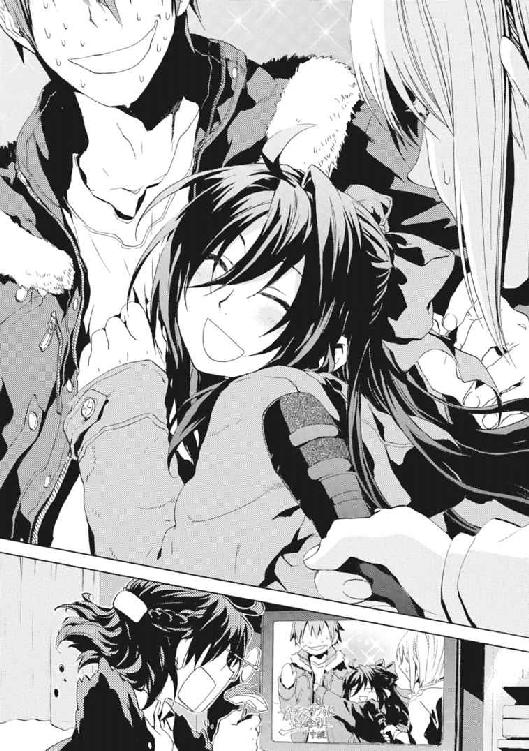
鴉木メイゼルは嗜虐趣味者だ。だから、世間さま的には断崖から落ちかけてようやく社会にしがみついているような仁を、見逃すはずがない。仁の社会生活にトドメを刺そうとしている小悪魔は、とてつもなく楽しそうだ。後先などまったく考えてはいない。
「他の人に見られたり聞かれたりしないように、教室でふたりっきりで、いっぱい魔法のレンシュウしたのよ。せんせに、あたし、魔法でこんなにされちゃった」
妖精じみて繊細な少女の顔が、真っ赤だ。恥じらっているのではない。世界中から自分たちの居場所がなくなる恐怖と不安を、悦楽に変換しているのだ。
「なんでそっちへ行くんだ。魔法じゃない、友情パワー、お、と、も、だ、ち！」
悲劇は、阿呆が混じると、しばしば喜劇に色を変える。阿呆は仁自身だ。少女が、最高に〝痛い〟舞台を素通りするなどありえなかったのだ。
「せんせ、ここはアトランチスなのよ？ せんせが気にしてるようなことは、なんにも必要ないのよ？」
どう見てもただごとではない愛情のこもった視線を、ちいさな魔女が彼へ向けていた。ウールのダッフルコートを着た少女は、海風で冷えた手に、いつも通りに握ってあたためてと甘えるように、息を吹きかけた。
微妙な空気が流れた。仁は我に返って、わけのわからない動悸を抱えながら主張する。
「テレビの人、ちがうからな、そういうのじゃないから！」
小学校のニセ教師には戻れない。聖騎士が撤退しても、あのアパートでは暮らせない。日本に戻ったら逮捕されるんじゃないかと、頭の中をぐるぐる駆けめぐる。十崎京香と《至高の人》アンゼロッタに囲まれて尋問される自分まで想像した。屈辱の極みだった。
「まあ落ち着け。これは新世界のできごとなんだ。頭を切り換えよう」
仁は、警察で取り調べでも受けているようなテレビ撮影用の強いライトに照らされ、必死で弁解する。これもすべて《九位》を倒せば報われる。核戦争間近の状況を回避すれば、《公館》経由で警察に話して、誤解を解いてもらえる。《九位》を排除して、《協会》と魔導師公館が協力する状態に戻れば、東京から離れて別の場所で暮らせる。刻印魔導師が地方で生活するケースは難しくないのだ。
「アトランチスのフウシュウでは、あたしたちでもケッコンとかできるのよ。あたし、新世界、大スキ」
レポーターが、取材がはじまる前とは温度のちがう、冷たい表情で、彼にマイクを向けた。
「武原さん、お連れのお子さんのお話も、くわしくお聞かせ願えますか？」
仁がこの変態だらけの島から出た後を思って呆然としていると、メイゼルが手を引いてきた。泣きたくなるほど、いい笑顔だった。
「せんせ、新世界へようこそ、ね」
いろいろなものが終わってしまった取材の後、仁は、アトランチス上甲板中央にしつらえられた巨大な建築物へ向かった。メイゼルによれば、そこが内部構造への入り口だ。
円環大系の魔法的転移は、視界内かよく知っている場所への位置移動が可能だ。なのに、メイゼルはここまで魔法で直接跳べた。ここが彼女の言うとおりアリューシャ家の浮遊城だったということだ。
仁たちが目指す建物は、神話のアトランチスの原型だけに、箱形で玄関にはギリシアふうにも見える石柱が何本も立つ神殿ふうのつくりだった。上甲板自体も、一辺が五キロメートルもある正方形で、街をこの上に作れそうなほどだだっ広い。ここはピラミッドのような四角錐を逆さにした、その底面にあたるのだから、海中に没した構造の巨大さも推して知るべしだ。
「気にしたことなかったけど、せんせの街の建物にくらべたら、広かったのね」
アリューシャ家の紋章だという円環を引き裂く鴉の紋章が、さびを拒絶する金属の地面に大きく描かれていた。あまりにもどこまでもまったいらだから、飛行場にいる気分だった。
「こんなデカイ建物がごろごろあってたまるか」
中央の神殿建築まで、メイゼルの歩幅に合わせて、二十分ほど歩いた。時代がかった豪勢な玄関の前に立つと、巨大な両開きの扉が自動的に開いた。
「さて、これからまた一仕事だな」
勝手にアトランチス人を名乗った仁を、当然、元々の住人は歓迎などしていない。そして、この茶番劇の仕掛け人であるワイズマン警備調査会社の集めたスタッフなら、《沈黙》武原仁をまず知っている。
だから、メイゼルを玄関先で待たせて、先に建物に入った。夜だというのに明かりのないそこに、無造作に踏み込むと、即座に魔法消去を発動する。
仁を、建物の奥へと引きずり込むはずだった魔法が燃えた。身体のまわりに、かすかに奇蹟の残滓として熱が残った。
「夜間に照明を落としてたら、魔法攻撃があると教えてるのと同じだ。王子護がいないとレベルが低いな」
不在の間の現場を託された責任者は、事態がややこしくなる前に、殺すにはもう目立ち過ぎた仁を拘束にかかるはずだった。そして彼は、事態の鎮静をしたいなら、いきなり銃で撃たれはしないと読んだのだ。
「魔法消去で、もう手詰まりか。それとも、アトランチスの表面だけはつくろうように指示されているのか」
仁は、左肩に担いでいたカバンに右手を突っ込んだ。そして、中に入れていた拳銃を悠々と引き抜いた。
メイゼルが、魔法で施設の電灯をつけた。ここが円環大系の施設であるという情報が浸透していなかったか、民族衣装を着た魔法使いが五人、すでに仁へ突進してきていた。
玄関ホール自体が舞踏会を開けそうなほど広大だから、無防備に身体が晒されていた。
ワイズマンのスタッフは、アトランチスを平和な夢の国としてアピールするのが仕事だ。だが、仁には一切責任がないから、外の人間に銃声を聞かれても構わない。だから躊躇なく、五人全員の太ももを撃った。
一キロメートル以上離れているとはいえ、報道陣は甲板上にいる。仁が撃つと思っていなかったのか、毛皮を着た魔法使いが、悲鳴をあげてのたうち回った。
「悪いが、俺は遊びにきたわけじゃないんだ。王子護と連絡を繫げ」
担いでいたカバンを床に落とした。神人遺物の《剣》をはじめ、持ち運び可能な武装を《九位》戦のために入れてきたのだ。
「早く呼べ。次は急所に当てるぞ」
魔法消去を再発動しても、スイッチの入った電灯は消えない。仁に銃口を向けられて、十メートルほど離れた場所で倒れていた男が悲鳴をあげた。恐怖に囚えられてしまえば、人間は等しく脆い。
「てめえ......外に、報道がいるのに！ 頭おかしいんじゃないのか!!」
「外向けのイメージづくりは、俺の仕事じゃない」
まるっきり悪人のやりくちだった。だが、さいわい自分の手口の安さを嫌悪している暇はなかった。
仁に本物の殺意を向ける人間は、彼自身の所行の報いとして、いくらでもいるからだ。
気配がすでにそこにあった。仁は顔より早く銃口をそちらに向けた。一瞬、わけがわからなかった。
視線を走らせると、すぐそばに敵がいて、彼を拳銃で撃とうとしていた。状況が把握できてくると、額に脂汗がにじんできた。さっき発動した魔法消去が、仁自身も気づかないごく短い時間、勝手に止まっていて、その隙に魔法で接近されたのだ。数日前、《雷神》と電磁騎士団に展示場が襲われたときも同じような不正停止があった。
「おまえ、夏の核テロのとき会ったな」
黒いコートを着たその男を、覚えていた。かつての地下都市住民で編成されたワイズマン狩猟魔導師中隊の中で、唯一、逃亡に成功した円環魔導師の拳銃使いだ。
「《死神》ベルナーだ」
精悍を通り越してやせこけたベルナーには、左目がなかった。
「地下都市の外で、まだ《神》のつく二つ名を名乗り続けてたのか。命知らずだな」
魔法使いにとって、二つ名に《神》の一文字を背負うとは、世界を代表する遣い手だと自称することだ。当然、寄ってたかって腕試しを仕掛けられて、普通は早死にすることになる。ベルナーがなくした左目は、対価としては安いうちだ。
「この名前で戦いはじめた。斃れるときもこの名前だ」
ベルナーと、軽い引き金を指にかけながら、銃を突きつけ合う。仁の目も、たぶん今のベルナーとたいして変わらないくらい荒んでいた。何かを手に入れるための賭け札に使う命は、勝負が決まるまでは軽い。
「魔法消去が止まっていたぞ。貴様こそ、ガタが来ているのではないか」
ベルナーに向かって、玄関ホールの奥にある階段脇の柱に隠れていた男が、もういいと手を振っていた。宇宙服のような白い防護服を着たその人物が、ワイズマンの現場責任者であるようだった。
電灯の軽い光に照らされて、仁たちが何をしているか、カメラを向ければ外の報道陣にも丸見えだった。
「ワイズマンの人間か。早く王子護を呼べ。俺が来た意味が、ヤツならわかるはずだ」
アトランチスの島民役としてワイズマン警備調査会社が集めたエキストラは、この世界で食い詰めた魔法使いが多い。聖騎士崩れもいれば、元《協会》の魔導師や、《公館》から逃げた刻印魔導師もいる。共通しているのは、金で動く人間だということだ。
ワイズマン警備調査会社は、王子護たち魔法使いが、この世界で経済力を握ることを目指した企業だ。魔法世界とこの世界の国々との、対等な交易を目指している彼らにとって、アトランチスは格好の橋頭堡だ。
このアトランチスは目的へ近づくための足場だから、おそらく潤沢な資金がバラ撒かれている。貧しい魔法使いにとっては相当魅力的なはずだ。だから、浮遊城の内部は、いかがわしい下卑た熱気に満ちていた。
《幻影城》でのささやかな人の輪とちがって、千人近いニセ島民を抱えるアトランチスでは、食事は大規模な炊き出しだ。
「ここが、城の大広間か何かか？」
玄関ホールからエスカレーターで三十メートルほども降りると、巨大な飾り柱を配したこの大広間につく。調度もろくにない一辺五十メートルほどの簡素な空間は、炊き出し会場に格好の場所だった。ちいさな魔女が懐かしそうに目を細めていた。
「広いだけなら実験室とかいっぱいあるけど、舞踏会をしたり、お母さまが接見をしたりしてたのはここよ」
衣装はきらびやかなドレスではなく、かわいらしいダッフルコートでも、少女の存在感は際だっていた。
「おまえ、ちゃんとしたお姫様だったんだな」
「あら、せんせ、今ごろ気づいたの？」
地球の電子機器をイリーズが多数取り寄せていたせいか、十メートルほどもある高い天井には、昼光色の明かりが輝いている。アトランチスの原型なら千年以上前にはこの世界に来ていたはずなのに、消耗品である電灯がまだ生きていた。
全裸だったりきらびやかな民族衣装だったりとまちまちな格好の魔法使いが、列を作って大鍋の豚汁を受け取っていた。魔法使いも自力で体温調節できる者ばかりではないから、明らかに寒そうな者もいる。まるで、遊園地の舞台裏を見るようだった。
「しかし、この格好で、豚汁ににぎりめしなのか。これは、表の報道には見せられないな」
家電製品をそのまま使うには発電機を回す必要がある様子だった。大きな炊飯器や電熱器が、年季の入った大型の可搬型発電機の横に固めてあった。
「カレーじゃないのね」
「からいの苦手な魔法使いもいるのかもな」
「そうね」
つけていたミトンの手袋を、メイゼルが脱いでポケットに突っ込んだ。
「せんせ、手、出して、あっためたげる」
彼女のことばに従って手を差し出すと、手のひらが火に当たっているようにぬくくなった。彼女の円環魔術では、熱を作ることはたやすい。
「おまえが家事とか苦手なの、魔法世界の人間だからだと思ってたら、自分でやらなくていい生活してたんだな。......ひょっとして、本当なら、ここ、全部おまえのものなんじゃないか？」
顔を見合わせた。あどけない魔女が笑うものだから、仁もつられてすこし笑った。
「あら、たしかに、あたしのものよね」
「そりゃ、ちょっと認められねーデスよ」
ほっと気を抜いたところに声がかけられた。
白いスーツの上下に、白い帽子をかぶったうさんくさい中年男が、仁たちの背後にいた。右目に銀の眼帯をした、ハウゼン・Ｏ・ジモリーこと王子護ハウゼンだった。
「最近よくテレビに映っていたけど、なんか、こう、有名人のオーラが出るようになったみたいなことは、別にないんだな」
「ジンは、最近大物に会いすぎて麻痺してるンですヨ。《導師》アリーセとか、《雷神》とかと勝手に比べんじゃねーって感じデス」
そう言う王子護は、集めた魔法使いたちにすら気づいてもらえず傍を素通りされていた。まったく変わらない軽薄さに、どこか安心した。
「おまえんところの部下が、呼ぶとは言っていたが、本当にちゃんと来たんだな」
やるだけやらかしてくれた道化師が、肩をすくめた。
「ジンも、忍びこまずに堂々とやってクルってことハ、ぼくと話すことあったんでショ」
ここはメイゼルの住んでいた家だったのだから、内部になじみがある部屋はいくらでもある。《九位》を狙って忍びこむだけなら、亡命を装う小細工をしなくても、直接メイゼルの魔法的転移で侵入するだけでよかった。
まったく気配もなく現れた〝魔法使い〟に、メイゼルは血の気を引かせていた。口を開きかけた少女の機先を、王子護が制した。
「すみませんが、メイゼルさんは豚汁をもらってきてくだサイ。ちょっと、ぼくとジンは商売のお話がありマス」
おとなの世界から弾き出された少女が、眉を寄せて仁を見上げる。彼女にかけようとしたことばが、うまく出なかったから、海風で乱れたリボンを結び直してやった。彼女と仁だけのささやかな時間が過ぎると、誇り高い姫君も妥協を考えてくれたようだった。
「すぐ戻ってくるから、そのあいだだけよ」
元気よく走る少女の、ダッフルコートの背中についたボンボンがかわいらしく揺れる。仁は、守るべきものをじっと眺めていたい衝動を断ち切るため、本題から入った。
「《九位》が、ここに来るぞ。大部隊をまとめて転移させられる場所はすくないだろうから、ひょっとしたら、着点はここかもな」
《九位》が〝訓練した部下〟を引き連れてここを占領に来ることはわかるが、細かいタイミングまでは読めない。仁がテレビに映って魔法関係者の注意を引いたことで、敵の仕掛けは早まるが、結局いつかはわからない。この瞬間、襲撃がはじまる可能性すらあったのだ。
「わかってマス。どっちに転んデモ損がないようにシタンですガ、おかげでアトランチスの値段がうなぎのぼりデス」
王子護は平然と言った。仁の想像より、現実はもう一段救いがなかった。
「おまえ、この城を捨てる予定もあったのか？ おまえらの故郷にするんじゃなかったのか」
「ぼくらがアトランチス人だってことは、もう認知されてマス。記憶が生きている限り、魔法使いは、いつでもアトランチス人になれるんデスヨ。もう最低限の目的は果たしマシタ」
そして、紫の瞳で、気を抜ききって飯をかき込む〝住人役のエキストラ〟たちを値踏みしていた。仁の目にも、彼らは素人まるだしに見えた。
「ところでこいつら、戦闘になったとき、まともな戦力になるのか？」
「無理に決まってるでショ。こんな寄せ集めの集団、平穏無事だって三年は維持できネーですヨ」
ここは、欲のために他人を利用しても暴力をもちいてもかまわない無頼たちの城だ。風向きが悪くなれば、忠誠心も帰属意識もないこんな集団は、機能しなくなる。
「けれど、住民がいないアトランチスよりモ、いっぱい人が住んでいるほうが、みんな、高く買いたくナルみたいデス。住民の気持ちをとりまとめさせるノモ無駄じゃねーってのは、いいことデス」
仁は、そうする資格などない身なのに、心底呆れた。
「《九位》が占領した状態のアトランチスなら、もっと高値で売れるってことか」
「ぼくは、世界中を飛び回ッテ、世界中の指導者と商談してたンですヨ。《九位》とアトランチスを押さえたラ、その国家は、《地獄》存亡の危機だった魔法使い問題を解決したことになりマス。魔法世界との交流の新時代をリードしてゆくための実績を買えるんデス。多少ふっかけられたって、安いってもんでショウ」
「日本にも行ったのか？」
「あそこはダメでス。《公館》は神聖騎士団といっしょに動いてるそーデスヨ。聖騎士なんかこの島にあげたら、〝アトランチス人〟の看板ごと乗っ取られマス」
王子護の口元には、薄っぺらい笑みが張り付いている。詐欺師のポーカーフェイスだ。
ワイズマンは、本来は裏に回ることを好む組織だった。王子護は、六十億人の《悪鬼》に戦いを挑んだグレン・アザレイを排除するため、弟のケイツを刺客に仕立てた。夏の核テロでも、狩猟魔導師中隊や核爆弾を売る独自の市場を作り、この世界の経済活動に食い込もうとしていた。そんな連中が表舞台に出てきたのは、《九位》が大量生産した核爆弾を安値で流す暴挙に出たせいだ。鋼の大魔女の狙い通り、この世界の住民が核戦争で自滅すれば、貿易で《地獄》を魔法使いが搾取するビジョンは潰れる。だから、本格的に核戦争になる前に交易の足場を作るためにアトランチスは浮上した。
表に立って賭けに出なければならない構図は、みずからここを占領しに来るだろう《九位》も同じだ。そして、大一番である以上、《魔力》系最高出力を誇る円環大系の超高位魔導師が、今度は本気の火力をまき散らす。
「《九位》と戦いになっテモ、ここを撃沈されないようにしてくだサイ。この島がなくなっタラ、やってきた交渉も吹っ飛ぶし、みんなの記憶から消えるのも早くなりマス」
軽薄な口調は崩れない。だが、アトランチスの情勢は、吊り橋の上で軽業をしているのと同じだ。危険すぎるせいで誰も目を離せないが、一瞬のミスで軽業師は墜死する。
「ワイズマンが持ってる核爆弾なんて、《協会》にはハッタリにもならねーので、頼りにしてマス。《九位》を待ち伏せしに来たンでショ？」
「おまえ、本当に《九位》が来たときの用意を、俺だのみにしてたんじゃないだろうな。そんな行き当たりばったりな話があるか」
「あてにしてマシたヨ？ この間は、カレーおいしかったデス」
「アトランチスを浮上させたときにはもう、俺が《九位》を斃しにここに来ることまで読んでたのか？ いったいいつから、こいつを企んでた」
ひょっとして舞花が来た日にはすでにそうだったのかと、途方に暮れた。仁に銃を握らせた最初の〝先生〟は、〝悪人〟としても、彼よりずっと頭が切れた。
「ジン、君は大切なことがわかってねーです」
王子護は、頭で戦う分析派なせいで、見た目に反して説教が長い。仁は、メイゼルが豚汁の配給を待って悪漢たちの列に並ぶ後ろ姿を、ぼんやり眺めていた。
「本当に君は、ダメな生徒デスネ。君がなぜダメだかわかりマスか？」
仁の視線に気づいたのか、ちいさな魔女が振り返って手を振ってきた。おつかいを頼んだ手前、無視することもできずに軽く振り返した。
「俺だって、それなりに生き残ってきたんだ。ダメだって決めつけるな」
「けれど、《公館》は解雇されマシタ。あんなに戦ったクセに、貧乏なままデス。このままじゃ君は何もかもを失うでショウ。あんなに危険をおかして、君の手の中に何にも残ってナイのは、どうしてデスカ？」
冷え切った空気を吐くように、眼帯の奇術師が言った。
「君は、生き残っただけで勝ってねーからデス」
「それでも、俺が戦って、救われたやつだっているさ」
「他の誰かの勝利を、君は手助けシテきただけデスヨ。でも、それだけ投資シテ、救われた相手に恩返しでもしてもらってるンですカ？ 君、何もプラスになってないでショ」
ちいさな魔女が、自分の番が近づいて、豚汁の大鍋を背伸びで覗き込んでいた。今度は仁の視線に気づかず、待ち遠しげに、かわいらしく身体を揺らしていた。
「俺は、自分が貧乏くじを引いているとは思ってない」
「自分が何がほしいかもハッキリさせずに危険だけおかすなんて、アホもいいところデス」
王子護は〝罪〟を笑う。
「ジン、〝悪人〟になるなら、弱い相手をカッパいで利益をあげなサイ。それが、君の責任デス。中途半端にイイコトしようとしてモ、いいことナイヨ？」
仁は、自分が〝悪人〟だと知っている。だからこそ、違えてはならない一線はあると信じている。舞花の言うとおりだ。仁はヒーローみたいになりたかったから、どこかでは悪人を許せない。
「俺はそこまで腐ってないんだよ。おまえといっしょにするな」
「《雷神》を破ったのに、殺さずに見逃したそうデスネ。アリーセに、《雷神》を失えば《九位》が暴発すると言われマシたカ？」
「なんでそんなに耳が早いんだ」
だが王子護の吐き捨てた一言が、仁を絶句させた。
「君は、どうして《雷神》の命を〝無料で助けた〟のデスカ？」
「しかたないだろ。......いや、ちがう、......そうか、くそっ」
その選択肢が頭から抜け落ちていた。気づいた途端に、仁の全身から汗が噴き出した。つまり、仁が今ここにメイゼルとふたりで飛び込んだような、一か八かの賭けにならずに済んだと理解したのだ。
「核戦争が起こるとまずいのは、《悪鬼》と良好な関係を築いているアリーセと《連合》も同じじゃねーデスカ。それだけの価値がある《雷神》の命を無料はアリエネーって交渉したら、アリーセは言い値をそのまま吞んだカモしれませんネ」
衝撃が深すぎて、乾いた笑いが口元にあがってきそうだった。一生遊んで暮らせる金銭を引き出すことも簡単だった。《連合》とのしがらみと引き替えだが、《鬼火衆》とメイゼルに安全な居場所を用意もできた。アリーセに、《九位》戦で助太刀してもらうことすら可能だったかもしれない。それだけの〝貸し〟を、仁は流してしまったのだ。
「せめて、神和家にアリーセを引っ張り込む前に、気づくべきデシタ。ジンが《雷神》のこと、交渉をしようとしてモ、神和の屋敷でアリーセが《鬼火衆》を守ったことでチャラでショウネ。......今さらなんて顔してるンですカ？ 定価のない世界なんデスヨ。危険や仕事の値札は自分で管理しねーと、安く買いたたかれるに決まってるでショ」
わかっていても、わけのわからない衝動を抑えきれず、仁は頭を搔きむしった。自分の間抜けさにはらわたが煮えくり返った。
「賭けは勝たなきゃ意味ねーデス。部下に命を懸けさせるナラ、勝つのは責任デス」
眼帯の奇術師が、いけしゃあしゃあと言い切った。
「悪党は、勝たなきゃゴミなんデスヨ」
そういう魔法使いが、このアトランチスを運営している。だから、ここが《九位》に撃沈されても、世界と合意のとれるかたちで、もっと静かに経済活動ができる居留地へ移れるよう話がついているのかもしれない。そう思うと、仁は〝悪人〟としてあまりに未熟だった。
それでも、突っ込まずにいられなかった。
「......この話、どのくらい本気なんだ」
「二割くらいデス」
うさんくさい笑みを、帽子を引き下げて覆い隠した。仁も、煙草が欲しかったが、メイゼルがもうすぐ食事を持ってきてくれるから、控えておいた。
「それでも、おまえみたいになりたいとも、そうならなきゃならないとも思わないよ。......おまえ、ここにいる人間、全滅することも予想のうちだろ」
「当たり前デス」
倫理は吹き飛んでいた。誰もが恥知らずになれるような薄っぺらい空気だったから、仁も厚かましくなれた。
「ところで、勇敢な俺に、ちょっとは投資しとくものなんじゃないか」
「できるわけねーでショ。ジンが失敗したら、ぼくは、《九位》にもしっぽを振るんデスヨ。あいつが核を何発持っていると思ってるんデスカ」
王子護ハウゼンの域まで達した完全魔導師は、自分が恐怖する対象以外からの攻撃を事実上無効化する。この男の場合は、弱点は核爆発だ。
「いや、そこは思ってても堂々と言うなよ」
豚汁一杯で、おかしいほど身体がぬくもった。並んで、立ったままささやかな食事をとった。
メイゼルが持ってきたお椀はふたつだけだったから、王子護は自分の食事を取りに行くと言って、そのまま消えた。中年男の噓泣きは気持ちが悪かった。
「せんせ、なに話してたの？」
ふうふうと汁を息でさましながら、メイゼルが聞いてきた。食べている間に暑くなってきたのか、コートの前ボタンをたどたどしく外しはじめた。
「......こぼれるぞ、持っててやるから。......そうだな、まあ、これからの話だ。もうちょっと欲張りにならないととか、そういうことだ」
「そんなこと？ そんなの、あたしがいつも、せんせに教えたげてるコトじゃない」
メイゼルが、堂々と胸を張っていた。もう社会人としてゲームオーバー気味の仁も、言いたいことがあった。
「おまえ、さすがにやりすぎだろ。あれじゃ、おまえだって小学校に戻れないぞ」
彼らのやることは、行き当たりばったりだ。今回、アトランチスに飛び込んだことも、計画として綿密とは言えない。よみがえった舞花を《幻影城》に置いたままなのも、彼の限界のあらわれだ。《鬼火衆》を集めて舞花を監視させているが、あまりに心許なかった。
結局、王子護が舞花を仁のところに連れてきた理由は、いまだにわからない。だが、人間関係が極端にせばまって住処もない仁には、もはや他に妹を置く場がない。安全を考えれば、仁たちが戻るまでだけでも叩き出しておくのが、合理的だったかもしれない。だが、ギリギリまで人を切り捨てられないのは、仁の性分であり弱点だ。
「先のことなんてわからないわ」
ちいさな魔女のことばには、決然とした意志がこもっていた。心中してくれと言うに等しい無謀な戦いを、仁は何度もしてきた。それに付き合ってくれた彼女が、いたずらっぽくささやいた。
「あのね、せんせ、このあいだキョウカに、『せんせに人生を貸したら、それからずっとそのまんまにされてる』って相談してみたの。そしたら、この世界には、〝タンポ〟っていうのがあるのね」
「担保っていうと、......借金を踏み倒させないために、期限内に返さないとかわりに貸し主に取り上げられる......あれか？」
「貸したものを返さない悪い人は、同じくらい価値があるものを、かわりに取られちゃうのよね。キョウカはね、『あたしの人生を貸した』んだったら、そのケイヤクには、『同じくらい価値があるもの』をタンポに取っていると考えて、おかしくないって言うの。......だから、早く利子つけて返さないと〝タンポ〟になってる『せんせの人生』は、あたしのものなのよ？」
温かいものを食べたせいか、鼻水が出た。豚汁を喰いながらする話ではなかった。
「......利子まであるのか。......人生って換金したらいくらなんだ」
「一年に十五パーセントくらいまで取っていいんでしょ。いったい、どのくらいかしら」
「ちょっと待て。俺の人生、けっこう火の車じゃないのか」
仁のつぶやきは、ちいさな魔女に、ごくまっとうな借金の教訓で返された。
「返すときのこと、考えずにかりたから」
人生の貸し借り契約なんて、裁判になれば無効だ。だが、相手は取り立てる気まんまんのメイゼルで、仁が彼女を棄てられないと確信していた。
ふと、我に返って右腕にかかった重みとあたたかさを見下ろした。信頼しきった様子で、メイゼルがもたれかかってきていた。
「あたしが、せんせのこと、一番痛くしたげられるって、わかったでしょ？」
あどけない恋は、後先をまったく考えずに燃えて、自滅すら厭わない。仁と少女の関係は、いつの間にか、強いもので結ばれすぎていた。
仁は、とりあえず豚汁から豚肉を一枚、メイゼルのお椀に移した。ちいさなところから、こつこつ返済をはじめようと思った。
《九位》を狙うという仁の目的に、障害は多い。その最大のものは、敵の来るタイミングがわからず、必ず先手を取られるということだ。それに続くのは、このアトランチスがワイズマンのもので、メイゼル以外に味方がいないという危険だ。
ふたつを同時に解決する手段は、よく隠蔽された避難所を設定することだ。《九位》にすら容易に侵入できない場所なら、十全に役目を果たす。姿を現した敵を、最大戦力で不意を打つ方法だけが待ち伏せではない。戦力を隠しておいて、敵に制圧したと勘違いさせた上で、油断したところを一気に攻める手だてもある。
つまり、仁が、かつてのアリューシャ家の居城の奥、メイゼルの自室にやってきたのは、少女の部屋に興味があったからではない。
アトランチスの原型になったなら、この施設が《地獄》に漂着したのは二千年以上前だ。なのに、昨日出かけてちょっと空けただけのように、部屋には生活感があった。
「あたし、グラフェーラのことスキじゃなかったから、この部屋にはあげたことないの。向こうもあたしにキョウミなんかなかったわ」
メイゼルが、豪華な天蓋付きのベッドにちょこんと飛び乗った。ベッドだけで、仁のアパートの居間くらいあった。
「なんでここだけ時間が経ってないんだ」
「あたしたちの世界では、一番上等な素材は、時間を円環させてレッカしないようにするの。《大崩落》の影響でも、完全にはとけなかったのね」
これが、《神に近き者》グレンをして天才と呼ばしめたメイゼルの実力だった。
「そういうことも、できるのか。......そうだよな、あの《螺旋の化身》を習ったの、俺たちの世界に来る前なんだよな」
仁は、メイゼルの自室を見回した。高さはメイゼルの腰くらいだが横幅だけは十メートル近くある棚に、人形やぬいぐるみが並んでいた。淡い暖色でまとめられた部屋にあって、ここだけ少女の臭いが異様な濃さになっていた。
メイゼルの、知らなかった生活を覗き見たようで、情報が入りすぎて頭がすこしのぼせた。
「せんせ、あたしの部屋、すっごい目で見るのね。カラダとか肌だけじゃなくて、女の子の部屋でも興奮できるの？」
「俺を何だと思ってるんだ。座る場所を探してただけだ。ここ、小学校の教室より広いのに、椅子がないな」
円環大系は、周期運動が不安定になるという、歪んだ自然秩序を持つ。だから、部屋の中に揺れるものが一つもなかった。倒れたとき人が下敷きになる背の高い家具はなく、調度までほとんど壁に作り付けてある。ベッドの天蓋から垂れる半透明の紗のカーテンすら、下端を床に貼り付けて、ぴんと張られていた。
小悪魔は、おそろしいほど無邪気に、座ってとばかりにベッドの彼女の隣をぽんぽんたたいた。少女の体の各部がやわらかいからこそ、関節がここちよいリズムを刻むようだった。
「そうだ、せんせ、グラフェーラと勝負するときの衣装を選びたいんだけど、見てくれる？」
もはや何をしに来たかわからなくなりそうだった。
仁にも、話しておきたいことがあった。
「おまえのお母さんの敵討ち、もうすこしだな」
ちいさな刻印魔導師が、華奢な身体を強張らせた。そして、真っ向から見返してきた。
「そうね。でも、グラフェーラをやっつけたって、そこで終わりじゃないわ。刻印魔導師の百人討伐は終わらないし、それに、せんせといっしょに戦うって約束したでしょ」
彼女は堂々と生きて、恥じる余地など人生に残さないかのようだった。まぶしくて、おとなである彼のほうが目をそらしていた。
「もう、《九位》よりも先を見てるのか」
「あたりまえよ。あたしが戦いはじめたのは、お母さまが円環世界をひっぱたいたことを受け継ぐためよ。でも、今はもっといっぱいほしいものができたの。他にもいっぱい、たいせつなものができたんだもの」
ずっと続けるのは舞花が言うように夢物語でも、最後まで見守ってやりたかった。誰もが孤独を抱えて戦うときを迎えるとしても、メイゼルの〝そのとき〟は、まだのはずだった。
「そうか、それじゃ、いつかおまえが円環世界で本当の戦いをはじめるときのために、まだまだいろんなことを勉強しなきゃな」
もしも今のままのメイゼルが《九位》のような指導者になれば、円環世界は不幸になる。付き合う人間全員に全力疾走を強いる彼女に率いられては、国民が全員、学級委員の寒川紀子のように振り回される。メイゼルは、《神》を殺したイリーズと、間違いなく母子だ。
「せんせって、ときどき先生みたいなこと言うのね」
ちいさな魔女が、失敬な驚きかたをしていた。
メイゼルがおとなになるころ、世界は変わっているのだと信じた。だから仁も、取り残される老人になるには若すぎるから、前に進みたかった。
いつか仁を置いてゆくだろう少女へと、前途を祝して乾杯するように、握った拳を向けた。
「この戦い、かならず〝勝つ〟ぞ」
†
世界は変わる。
《九位》は、変革をもたらそうと狙う、一種の変革者だ。だが、テロリスト国城田義一と彼女は根本的にちがう。《九位》は、円環世界というひとつの社会を背負い、責任が肩にかかった身であるからだ。
理想で動いているのではない。これは単なる経済活動であり、円環世界の強くなった市民たちを満足させる政治だからだ。ゆえに、今回の《地獄》の衝突は、正しく戦争だった。
そして、《九位》が求める喧嘩の落としどころは、《悪鬼》の絶滅だ。
〈《悪鬼》ドモ、汝ラニハ、コレハ過ギタ玩具ダ〉
彼女の感覚は、大気のない環境でも装甲を伝った電子音声をきちんと拾った。
円環大系の最高位魔導師《九位》は、今、強烈な光を受けて闇の中に浮かんでいた。全身を機械化した鋼鉄の大魔女は、装甲の上にまとったフリルのふんだんについたドレスが、重量から解放されて慣性に遊ぶのを見た。
今や円環魔導師の頂点に立った彼女は、地上から高度三万六千キロメートルの静止軌道上にいる。
魔炎のオレンジ色の光が、ごうごうと彼女の全身から噴き上げていた。地上から、《悪鬼》たちが彼女を観測しているのだ。〝視界内に跳躍する〟円環魔導師が、強力な望遠視覚を機械化で身につけたとき、どこまでを〝視界〟として移動可能か。その答えが、精密な計算のもと、綿密に計画された一跳躍で地球の引力を振り切って、青い星を見下ろす彼女だ。
その背中には、円環大系の技術で作った巨大な推進装置が連結されていた。大型タンクから推進剤を供給してバッテリーからは電力供給を受け、ノズルから超高温のガスを噴いて加速度を生むのだ。
身体の百倍近い大きさのユニットを背負ったゴスロリ鉄仮面を発見し、地上の《悪鬼》たちが慌てていた。《九位》の手のひらに装備されたレーザーは、魔法消去環境下でも問題なく使えるからだ。そして、地上の監視に欠かせない人工衛星は、《九位》にとって撃ちごろの的に過ぎない。
すでに、彼女を発見した地上の住民たちから、交信を求める電波がとどきはじめていた。その要求を、奇蹟の王者は完全に無視した。
〈......《悪鬼》ドモ。宇宙ハ汝ラノ場所ニアラズ〉
人類たちは絶望とともに知ることになる。イリーズ・アリューシャが改造した最強の肉体は、真空環境でも宇宙線を浴びても生命維持にまったく問題がない。
二十四時間かけてアトランチス上空を監視可能な衛星をすべて破壊し、《九位》は悠々と降下をはじめた。
《九位》を俗物だと看破した十崎京香は、正しかった。指導者が俗物だからこそ戦いが苛烈になるという、未来予測も当たっていた。人工衛星が最初に狙われることも、多くの専門家たちに想定されていた。ただ、超高位魔導師の能力だけを読み違えた。
地上の人間は、人間が生身で大気圏に突入する光景をはじめて見た。そして、それだけの魔法消去を受けたにもかかわらず、彼女は生きたまま北太平洋に着水した。
早期警戒衛星とＧＰＳ、通信衛星網に大穴を空けられたことが、すでに制御不能の混乱を呼びつつあった。
†
仁たちアトランチス内部にいる人間に、外部の情報は入らない。アトランチスに到着してから二十四時間以上が経過していた。
メイゼルとふたりで、アトランチスが占領されたときのための反攻路を確認した。
〝それ〟は、メイゼルの記憶を頼りに、城の内部構造を調べているときやってきた。
仁もメイゼルも、世界が振り回されるままに吹き飛ばされた。一辺五キロメートルの巨大構造物が、回転したのだと知った。アトランチスは、巨大すぎて四角錐の構造体の頂点が海底にめりこんでいると思っていたから、仁はこの状況をまったく予想していなかった。
壁に背中を叩きつけられて、なんとかメイゼルをかばえたことにほっとした。
「だいじょうぶか？ 骨は折ってないか」
とっさに抱きかかえた少女が、仁の胸に額を押しつけるようにしてうなずいた。遠心力で壁に押さえつけられ、滑って背中をすりむいていた。アトランチスの深部の廊下は細く、幅は二メートルにも満たない。母子ふたりのための住居に広い廊下は必要ないからだ。だから、右側の壁に手をついて這うように、仁はなんとか身体を立たせられた。
独楽のように、アトランチスが回り続けていた。
「何これ、なんで回ってるの？」
ようやく落ち着いたか、メイゼルが細い脚で、子鹿のようにふらつきつつも立ち上がる。
足場の回転がゆるやかになり、一度静止した。そしてまた加速度がつきはじめ、ゆっくりとアトランチス自体が回りはじめる。仁には、まずどうしてこんなことが起こっているかがわからなかった。ここから東京は遠いとはいえ、これほど巨大な構造物が動けば確実に海に大波が立つ。そうなれば、魔法消去を受けてこんな大規模魔法は破壊されているはずだ。
だが、魔法でないなら、自然秩序から外れていない方法でアトランチスが回転しているということだった。メイゼルの実家なら、こんな機能がついていても不思議ではない気がした。
「すくなくとも、襲撃があったことだけははっきりしてるな」
円環世界は、回転や振動といった周期運動が不安定な世界だ。それを操るメイゼルも、魔法でものを回転させるくらいはお手の物だ。
「どうして、ここの人たちにおそいかかるのに、わざわざ回すのかしら」
仁は、戦闘になることを見越して、かついでいたバッグから使えそうな銃器を取り出した。巨大な構造物全体が回転しているせいで、施設外側の壁へ見かけ上の重力が発生していて、弾倉を装塡する手元が狂いそうだった。
「くそ、そういうことか。めんどくさいことをする」
仁は、神人遺物の《剣》をスラックスの背中側に差し、短機関銃の肩紐を肩にかけて、毒づいた。メイゼルの部屋の調度が固定されていたのは、勝手に振動や回転をはじめる可能性があるからではないかと、気づいたのだ。
「円環世界では、こんなふうに足場が回ることは珍しくないのか」
「そりゃ、そういう世界だもの。どこにだって、勝手に揺れたり回ったりしたときのために、手すりをたくさんつけるのよ。浮遊城だって、勝手に回転しちゃったとき地上に迷惑をかけないように、お母さまは地面側を尖らせたんだし」
仁は、次の行き先を迷った。
《九位》が戦っているなら、構造物自体を回すような小細工は必要ない。だから、間違いなく、今はじまったにちがいないアトランチス制圧戦の中心は円環大系の電磁騎士団だ。しかも、戦闘はまず電磁騎士が優位に進んでいる。かつてのワイズマンの戦闘部隊は、銃器で武装していた。だが、銃器は地面が動かないこの世界で発達した武器だから、射撃の反動を受け止めるにはしっかりした足場が必要だ。強力な火器ほど、足場が安定しないと不利になる。
「まずは、方針を決めよう。俺たちがまずやるのは、敵を斃すことじゃない。それなりの人数が投入されたはずだから、こんなのとまともに戦うのは時間のムダだ。電磁騎士側の集団から勢いを削いで、俺たちが《九位》と戦っているとき邪魔をされないように、ワイズマン側との戦闘を泥沼に落としてやればいい。......それでいいな」
電磁騎士が敗れ、《九位》が失敗するとは、円環世界の社会的地位が失墜するということだ。
「あたしが一度決めたことをまげたりしないって、知ってるでしょ？ それに、よその世界を食い物にして復興しようなんて、きっとあたしにおしおきされたくて誘ってるってことだと思うの」
嗜虐趣味者の郷土愛は、これ以上揺るがないほどしっかりと歪んでいた。
「だったら、早く行こう。電磁騎士が転移してきた着点は、たぶん昨日の炊き出し場所の広場だ。あそこなら、千人単位の戦力でも一気に展開させられる」
《九位》──グラフェーラ・トリアは、かつてアリューシャ家の浮遊城に何度も来訪している。敵も、メイゼルと同じく好きな場所に魔法的転移で飛び込んでこられるのだ。
誇り高い魔女は、修羅場に飛び込むのが恐くないはずはないのに、傲然と微笑んだ。
「せんせ、つかまって。それじゃ、直接そこまで跳ぶわ」
魔法的転移で跳躍したとき、広間はミキサーにかけられたような修羅場だった。竜巻に巻かれてあらゆるものが吹き飛ぶさまを、仁はまず思い浮かべた。鎧に様々なものがぶつかる金属音と、やわらかいものが潰れる異音が何千と重なって終わらないさまは、それ自体が悪夢のようだった。
様々なものがちぎれて空中を舞っていた。まったく状況をつかめない乱戦だった。
「三つ数えたら移動だ！ どこでもいい!!」
人間がふたり増えたことなど、誰も気づかない環境だった。それがありがたかった。仁は、隣のメイゼルを勇気づけるように、ちいさな手を強く握った。
「行くぞ、ひとつ！」
一秒──。何もせず逃げるのでは子どものお遣いだ。仁は、叫びながら戦況をつかもうと周囲を見回す。襲撃されたワイズマン側は、多くが《魔法使いの弾丸》を装塡した銃器で武装している。だが、足場が突然回り始めることなど想定していなかったから、あらゆるものが床に散乱して、攻撃も移動も滞っている。
それを攻める、電飾甲冑に身を固めた電磁騎士は、整然と十人ほどの組になって集団で魔法を使っていた。メイゼルの母が無力だった市民たちのために作った魔法陣都市の魔術だ。底上げされた集団防御魔術が銃弾を受け止め、精密な狙いが必要ない広域攻撃魔術が敵を掃討している。戦闘は、明らかに電磁騎士側が優勢だった。
「ふたつ！」
二秒──。だが、突入してきた電磁騎士側の勢いは、入念な事前準備が生んだものだ。仁は魔法消去を発動する。消去の無差別爆撃が、仁には見えない魔炎の嵐であらゆる魔法を焼き払った。アトランチス自体を回転させていた魔法が失われて、その急減速でかかった加速度で仁たち以外の全員がバランスを崩した。
「みっつ!!」
三秒目──。広間内の全員が仁たちに気づいた。転倒した者たちは将棋倒しになり、空中に浮かんでいた者も巻き込まれた。剣を抜く者も、銃口を向ける者も目が血走っていた。
そして円環大系の位置移動魔術が、仁を広場から投げ出した。
一瞬で風景は、狂騒の広間から、薄暗く荷物の多い場所に変わった。
メイゼルが魔法の明かりを指先に灯すと、照らされた周囲は段ボールだらけだった。床の回転のせいで、ジャガイモや、にんじん、キャベツといった料理に使いやすい野菜がごろごろ床に転がっていた。仁のすぐ隣のひしゃげた箱は、トマトの缶詰だ。千人ものアトランチス住民役のエキストラたちが毎日食べる、大量の食糧を貯蔵しているのだ。
「......はぁ、......なに、あれ......」
たった三秒だったのに、何分も全力疾走したようにメイゼルが汗だくになっていた。《九位》のアトランチス占領隊は、千人以上の集団だった。千人規模の集団同士の殺し合いに飛び込むなど、子どもの神経には厳しすぎる。円環魔導師で接近戦をするのは電磁騎士団だけなのだ。
「よくやったな。あれで、電磁騎士団の衝撃力は、一時的にほぼゼロまで下がった。円環魔導師の基本的な防御力は低いから、泥沼になったらよそに目を向ける余裕はなくなる」
「あれだけで、そんなに変わるもの？」
仁は、少女の頰を親指でぬぐってやった。当たり前のように散っていた血霧が、すこしかかっていたのだ。
仁は、悪夢のような有様を、メイゼルの目から隠しはしなかった。彼女は戦うことを選び、彼はそんな彼女を連れてきた。彼女の視界を覆うことは、一瞬のミスで死ぬここに至っては、やさしさとして通用しない。
「まだやれるか？」
「当たり前よ」
そのとき、カサリと段ボールの陰で軽い音がした。メイゼルの背筋が、腰から何かが這い上がってきたように、びくりと波打った。
「ゴキブリか」
明かりを魔法でメイゼルに作ってもらった。黒かったが、ゴキブリではなく身長百八十センチ以上の長身の男だった。薄汚れた相似大系の魔導師、浅利ケイツだった。
逃げてきた魔法使いだろう正体を確認したら、あまりにぴったりな人間が出てきた。だから、仁もことばに詰まってしまった。
「......いや、なんかすまん」
「なにを謝る。私をゴキブリ呼ばわりしているのなら、後悔することになる」
「向こうでワイズマンが苦戦しているぞ。おまえんとこの社員だろ。当たり前みたいにこんなとこに隠れてんなよ」
《神に近き者》グレンの双子の弟であるケイツと、仁の因縁は深い。
「言いがかりしかつけられんのだな。私には仕事がある。おまえには想像もできない極秘任務だ」
広間から距離が離れているのか、もう液体と金属がぶつかり続けるあの嵐のような音は届かない。だが、ケイツの手は隠しようもないほど激しく震えていた。この男も、あそこから逃げてきたのだ。
なぜ戦わなかったかと、これ以上答えを迫ることができなくなった。仁自身も、魔法消去で一撃だけくれて退避してきた身だ。
そして、仁にもケイツの状況を察することができた。だから、どんな目で見ればよいか迷った。
「あー、そうか、極秘か」
「世界がかかっている仕事だ。おまえのような、食い詰めてここに流れてきたヤツとはちがう、本物の仕事だ」
主張するケイツが、だんだん気の毒になってきた。
「その仕事の内容は、一体何なんだ」
「それは言えん」
「言ったら、本当に最後まで付き合わなきゃならなくなるからだろ」
魔法の明かりの下、厨房だったらしい大きな流し台のある部屋をよく調べてみた。段ボール箱だらけのこの部屋に、ケイツ以外に逃亡者はいなかった。それがケイツは現状孤立無援であるということに思えた。
「《九位》を斃しに来たんじゃないのか？」
ケイツが、反応して身構えていた。切羽詰まった状況で、無駄に警戒されても疲れるだけだった。
「安心しろ、俺は、《九位》の側のスパイじゃない。電磁騎士団がやって来てんのに中止にならない用事なんて、これしかないだろ」
荒んだ目をした男は、見るからに追い詰められていた。だから、仁は、この浅利ケイツを利用することにした。仁は〝悪人〟だ。大事なものを守るために、他人を踏み台にできる。
「奇遇だな、俺もだ」
「いい加減なことをぬかすな。《公館》からは聞いていない」
虚勢を張っていても、声が揺れていた。どういう手を使ったか、ケイツを差し向けたのはまず十崎京香だ。仁がケイツの双子の兄であるグレンを斃した因縁を知っていたから、《九位》戦が共闘になることを伏せたのだ。言えば、それを言い訳に断るに決まっている。
「俺も聞いてない。それでも、こうなった以上、やらなきゃしかたない。何か《公館》から聞いている情報があるだろう。支援の計画もあるはずだ。きちんと確認して、情報を合わせたほうがいい」
今までの彼とケイツの関係に合うように、皮肉げに唇を歪めて見せた。王子護と自分の間にどれほどの差があるだろうと思った。そして、自分の小芝居が馬鹿馬鹿しくなって、ため息をついた。
「本当に、おまえ、ダマされるのが似合ってるな」
〝似ているもの〟どうしの間を繫ぐ相似大系の銀弦が、勝手に仁とケイツの胸の間に結ばれていた。仁も、貧乏くじがよく似合った。
ケイツの舌はよく回った。口ぶりは尊大でも、敵地にひとり突入させられて不安だったのだ。
「要するに、あんた、そのリュカって女の子を、キョウカに人質に取られて、しかたなく来たのね」
「そうではない......」
話しながら、ケイツは、引っ付いていたメイドの話題になると何度も口ごもった。この臆病な男が、ただ他人のために命を懸けるはずがない。人質になった相手を失ってはならないもっと世俗的な理由があるのだ。
「だいたいわかった。要するに、これから《公館》と神聖騎士団が、協力してアトランチスに攻めてくるんだな。けれど、それはそれとして《公館》は、ここを神聖騎士団が制圧したら、バックについてる米軍がいっしょになって上陸してくるのが、気に入らない。だから、人質をとってまでおまえを刺客として送り込んだ。それで、昨晩のうちに、おまえを転移させるための似姿の人形をテレビ局員に持ってこさせて、転移魔術で潜入させてたと」
人質をとることも事前に人員を潜伏させておくことも、仁がいたころからの、実に《公館》らしいやり口だった。
「この人とリュカって女の子、なんだか、せんせとあたしみたいね」
メイゼルが盛り上がっていた。彼女の子どもっぽい部分に、ケイツの今の境遇が直撃したのだ。
「核テロのときのか？ ......ああ、うっとうしい！ この魔力弦、何とかしろ」
しつこくケイツと繫がる相似弦を、隠れている今は魔法消去で焼くわけにもいかなかった。
引きつれるような感覚がして、仁の手が、ひとりでに動いた。《幻影城》にいるきずなが、神和邸のときと同じ再演魔術で感覚を盗んで、ケイツの話を聞いたのだ。仁の左手が、親指と人差し指を三回連続して合わせるのは、きずなが説明なり判断なりを求めている合図だ。だから、遠くで聞いているきずなのために、ひとりごとを装って小声で説明してやった。
「とりあえず、神聖騎士団は今、警戒が必要な状態だと考えていい。機械化聖騎士師団だけで五千人いるんだ。このドサクサに、アトランチス以外の場所を同時に狙う公算が高い。気をつけろ」
対象の感覚を盗み見る再演魔術で、聞こえているはずだった。きずなに何事もなければよいと思った。だが、それは望み薄だとわかっていたから付け加えた。
「とりあえず、俺たちのことは俺たちで片付けるから、そっちの虎坂井たちに手はず通りやるようにだけ伝えておいてくれ。......いや、《九位》の現在位置だけ、教えてくれ。そっちから見えてるか？」
仁の左手がまた動いた。魔法消去環境に潜みでもしない限り、きずなの再演魔術による位置特定から逃れることは至難だ。彼の左手の人差し指が、右の手のひらに文字を書いた。
〈か──ん──ぱ──ん──〉
自分で頼んでおいて、あまりの簡単さに寒気がした。再演魔導師はやはり万能だった。
「なるほど、甲板か。神聖騎士団がアトランチスに押し寄せてくるのが、《九位》にもわかってるなら、正面から迎撃もアリだな」
ケイツによれば、現状、地上を監視する人工衛星のほとんどが失われたという。ならば、魔法による超遠距離からの砲撃は、円環魔導師にとっては最適解だ。そのために、アトランチスの縦横五キロメートルにも及ぶ巨大な上甲板に、メイゼルの母のカタキである鋼鉄の大魔女はいるのだ。
仁たちに与えられた時間は、どこまで進撃しているかもわからない神聖騎士団がここに到達するまでだ。動き出すべきときだった。
「さっさと行くぞ。おまえも来い」
仁は、メイゼルに目配せした。
「ダメ。《再帰迷宮》がかかったわ。転移魔術、封じられてる」
円環大系の、術者が指定した区画内で位置移動魔術を使えなくする封印魔術だった。仁も、この消去で破壊できない魔法に、かつて武蔵野迷宮で地獄を見せられた。だから、口の中に苦いつばがわいた。この厨房に逃げ込んだときの転移魔術すら、何十秒か遅れていたら、展開されたばかりの《再帰迷宮》で無効化されて、血煙の広間に釘付けにされていたのだ。
濃密に、《九位》の気配を感じた
「ここはどこだ。転移できないなら、甲板まで走るしかないぞ！」
電磁騎士は広間だけにしかいないとは限らない。
「他人事みたいな顔してんなよ。転移が封じられてりゃ逃げ場なんかないぞ。燻り出されて殺されたくなきゃ、おまえも走れ」
「なぜ私がそこまでせねばならんのだ」
重いコートを着たケイツが、仁から目をそらした。かつての仁と境遇が似ているからこそ、無性に腹が立った。
「おまえのために人質に取られてるヤツがいるんだろ！」
「ここで私が死んだら、あやつが人質に志願した意味がない」
罵倒するのは簡単だが、ケイツの言い分は間違ってはいない。
そして、すり切れた魔法使いは薄汚れたコートのポケットに手を突っ込んだ。
「戦うのは私ではない。この女だ」
引きずり出されたものを見て、仁は口が半開きになっていた。
ケイツが鷲づかみにしていたのは、無意味によくできた少女の人形だった。鎧を着て、アイドル歌手の決めポーズのようなイカレた姿勢で、媚びるように微笑んでいた。肌はつややかに白く、装具はすべて純白だった。ケイツはどこへ行こうとしているのか、他人事ながら心配になった。
「......どなたさまなんだ？」
「見てわからんか」
「こんな人形に、知り合いなんかいるか！ ......よくできてるな」
鎧から微妙に肌を露出しているから、その脚をつかんだケイツの荒れた手が太ももに掛かっているのが、奇妙に気恥ずかしかった。
「触るな！ 私が譲り受けた、命綱だぞ」
「おまえの宝物はどうでもいいんだよ！ 魔法の人形か？ 鎧だって露出だらけで実用性ゼロだぞ、だいじょうぶなのか」
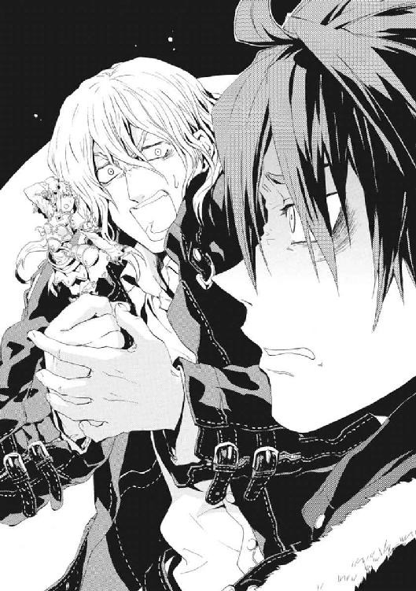
「魔法使いに、鎧の実用性など意味があるものか。これは儀礼用なのだ！」
ケイツが全力で人形を擁護していた。血走った目で、繊細な花の飾りが入った鎧のモールドを指さしていた。戦うというより、子どものままごとか、おとなのままごと用だった。
「こまかい設定だな。おまえ、本気でこれが戦力になるって言うなら、すぐ戦えるようにしろよ」
メイゼルが、仁たちをじっと見ていた。
「男の人が、ふたりしてお人形遊びってどうかと思うの」
──厨房の段ボール箱の間で、相似大系の銀弦は、彼とケイツを結んでいた。
「人形遊びではない！ これで、《協会》の援軍を呼び出す手はずなのだ」
三十四歳の脂汗が、ケイツの額に浮いていた。
仁も鎧と顔をよく見てみてわかった。因果魔導師《逆天》ユリア・シュバールだ。
「相似大系の転移用の形代か。......あのな、おまえ、魔法での転移が封じられてるって、さっき言ってただろ」
人形は無駄にできがよかった。ただ、素っ頓狂に恥ずかしい決めポーズのおかげで、相似大系の魔導師が魔法的転移のとき自分と位置を入れ替える形代だと、気づかなかったのだ。
「だからといって、私に戦えというのか」
ケイツが、興奮して両腕を振って、前線に出ることを拒絶した。
「戦えよ、いい加減に。現実と！」
仁たちは、用心に用心を重ねて暗い厨房を出た。巨大な施設だけに、厨房と食事をする場所はすぐ隣にあるわけではなかった。つまり、長い廊下で繫がっていた。さいわいにも人気はなかった。
「どうなんだ、このあたりは見覚えあるか」
「わかんないわ。厨房に入るの、おなかすいてつまみ食いするときだけだったから、魔法で跳躍して忍びこんでたの。料理したことなかったから、お運びする必要もなかったのよね」
「おまえ今ひどい告白したぞ」
仁の脳裏を、走馬燈のように、メイゼルが円環世界の料理と称して出した数々の代物が駆けめぐった。
「え、あたし何か言った？」
「今度ゆっくり話す。食堂はどのあたりにあったか覚えてるか」
普通に考えれば、厨房は食事をする場所の遠くには作らない。そして、食堂は生活スペースの中心だから、そこまで移動できれば、上甲板までの道はメイゼルにわかるはずだった。
「こんなに暗いと、自分の家だって、何がなんだか」
少女が魔法の明かりを強めると、真っ暗な廊下が十メートルほど先まで見通せるようになった。人の気配はなかったが、空気がかすかに震えていた。
「せんせ、食堂はふたつあって、お客さんが来たとき用の大きいほうは大広間から左側に出てすぐよ。家族用のちいさいほうは、勝手口のほうに繫がる昇降室のそば」
割り切ったつもりでいても、メイゼルのあどけない頰を見ると、仁の胸に痛みが宿った。子どもに命を懸けさせていることを自覚させられるからだ。彼女は昨夜、貸した人生の担保を求めた。それくらいの負担を、小学校でクラスメイトと勉強しているべき少女に、彼は強いている。
「学校の文化祭、もう明日だな」
「そうね。早く帰ったげないと、おしばいができないわ」
全校生徒の前で堂々と〝悪い魔女〟を演じるメイゼルの姿を想像して、のどに笑いがこみあげた。これから仁は、彼女の母の仇と殺し合いに行く。《九位》と少女のどちらが〝悪い魔女〟かは、どちらの側に立っているかで変わる。
「おまえ、アトランチス人の魔法使いってことになってるから、劇は盛り上がるだろうな」
しくしくと心臓のあたりが疼いたが、仁は笑って見せた。
「そんな顔しないで。あたしたち、ふたりで戦うって言ったでしょ」
暖色のプラズマの光に照らされて、誇り高い魔女がひらべったい胸を張る。
「だから、これは別に特別な戦いなんかじゃないの。だって、あたしたちふたりの戦いなんだから、《九位》をやっつけたって旅は終わりっこないでしょ、せんせ？」
あめ色の瞳は強い意志を宿し、卑屈さも暗さもなかった。決戦を前に押し寄せているだろう切迫感を、彼女は勇気に変えられた。
彼女は、ふたりならやれると思っている。本気で、仁にそばにいて欲しがっていた。
歴史の巨大な流れの中で、仁たちになにが出来るかはわからない。それでも、自分たちの足で立って選択するしかなかった。
「ありがとうな。おまえに借りているものは、絶対に踏み倒さない」
仁は、短機関銃の引き金をいつでも引くことができるよう準備をしたまま、ジャケットの内側に吊したホルスターから拳銃を抜いた。そして、安全装置がかかっていることを確認して、ケイツへ投げ渡した。
「何のつもりだ？」
ケイツが、虚を突かれたのか、眉を開いた。
「使え。相似魔術との併用でも、剣よりは銃のほうが戦いやすいだろう」
疲れ切った男が、突然手の中に入ってきた力を逃すまいとするように拳銃をしっかりつかんでいた。仁は交換を持ちかけるように尋ねた。
「ワイズマンには、今、おまえがここにいることは話したか？」
「会社との連絡番号には繫がらん。奴らは、私を裏切った」
つくづく、よく組織に切り捨てられる男だった。そう記憶を振り返ったときには、また仁との間が相似弦で結ばれていた。
「ワイズマンに戻るのか？」
仁にとっては、聞く必要もないはずのことだった。なのに知りたかったのは、不安でたまらなかったからだ。これまでは敵であり、通り過ぎるだけの人間だったケイツと、同行しているからだ。
「おまえごときの知ったことか」
まだ魔法の銀弦が繫がっているこの男が、これから出す答えを恐れていた。〝悪人〟として意志を押し通そうとしている仁の、彼自身には見えていない本当の姿を、この《武原仁に似た男》が暴いてしまいそうな気がしたからだ。
戦うことを選び続けて荒野で吹きさらされている仁も、十年逃げ続けていたらこうなってしまっていたように思えた。だが、それはあり得た可能性で、血塗られた道を選ばないことこそ正しかったのかもしれないのだ。
そして、彼が本当に恐れているのは、〝それ〟が明らかになってしまうことなのだ。
†
十一月二十三日、午前九時。魔導師公館の専任係官、八咬誠志郎は機上にあった。
《九位》による人工衛星の破壊は、通信衛星を失ったことで即座に発覚した。多数のＧＰＳ衛星を失ったことにより、車のナビゲーションに大きな役割を果たしていたＧＰＳ網が喪失し、人々の生活は早くも影響を受けはじめている。
混乱は、今や世界中に広がりつつあった。だからこそ、今回のアトランチス攻撃では、航空機がおおきな役割を果たすことになった。攻撃の中心である機械化聖騎士師団の主武装である《魔導師殺し》は、《悪鬼》と通信が繫がっていないと魔法消去を借りられないのだ。
「まいったね。これでは囚人護送と変わらない」
秀でた額に一房落ちた前髪を、八咬は指で払った。米軍のＣ－一三〇輸送機に、十人近い聖騎士部隊とともに押し込まれているのだ。
「ところで君たち、何か話したまえよ」
八咬ののどに、《魔炎》がからみついて散った。彼の魔法──カオティックファクター《破壊》は、見聞きして観測したあらゆるものを破壊する。彼の魔法は言葉を聞けば話者ののどを破壊し、目が合うだけで相手の眼球を砕く。そうなっていないのは、《破壊》が魔法消去に弱いからにすぎない。この輸送機は、パイロットやスタッフに魔法消去者が多数いるのだ。
手近にいた重装備の騎士の肩を、八咬は軽くたたいてやった。髪を短く刈った男が、顔を真っ青にしてぐっとまぶたを閉じた。死そのものと同じくらい、彼は魔法使いに恐れられている。
魔導師公館と神聖騎士団によるアトランチス攻撃は、午前九時十分から開始される。先陣を切るのは、聖騎士将軍、《至高の人》アンゼロッタだ。
「ところで、ずいぶん突然にぼくは飛行機に押し込まれたんだけど、本当は、攻撃は十二時からのはずじゃなかったかい。三時間も攻撃開始が早まったのは、《九位》が、ぼくらより先にアトランチスに攻撃をかけたのかな」
《公館》の十崎京香は、《九位》がアトランチスを狙うと考えていた。核戦争をはじめるなら、《悪鬼》だらけの東京地下に潜むより、絶海の孤島であるアトランチスを前線基地にしたほうが、行動が自由になる。すでに現地には《公館》のスパイがいると聞いていた。ならば、亡命を装って潜入した武原仁が関わっていることも明白に、彼には思えた。
「絶景だと思ったんだけど、こう雲が出てると、アトランチスが見えないね。ぼくの出番までどのくらいかな？」
移動手段が飛行機だから、攻撃のスケジュール管理は、米軍機をチャーターできる神聖騎士団が完全に握っている。
「おまえは、アンゼロッタ様の五分後──九時十五分だ。この機から、パラシュートを背負ってアトランチスに降下してもらう」
「スケジュールの管理は、いつもはうちの秘書と看護師まかせでさ。彼女たちも連れて来てあげたかったな」
八咬と目が合って、騎士が恐怖に負けて顔をそらした。武原仁なら、こんなふうにおびえたりはしない。懐かしさに胸を焦がした。ただ、親友が幸運であることを祈った。
この攻撃計画は、発案されたときとは別物に変貌していた。当初は、すべてを《悪鬼》国家の軍事力で決める前に、魔法使い関係者で王子護への落とし前をつけるためのものだった。だから、人工島を包囲する米海軍の艦艇が到着するまで、時間も一日近い余裕があった。だが、人工衛星破壊によって、事態は急変した。
米海軍は、アトランチス攻撃よりも、太平洋の東西を結ぶ海底通信ケーブルを守ることを選んだのだ。通信衛星を失った今、通信の要である海底ケーブルを失えば、六十億の魔法消去者の生活は、未曾有の大混乱に陥るからだ。
艦艇による包囲はなくなった。そのかわり、おそらくはアトランチスを核ミサイルが照準している。
八咬たち魔導師公館に、日本にも大きな被害をもたらすこの核攻撃を止めるすべはない。占領後はそのままアメリカが支配を続けるであろうアトランチス侵攻を成功させる以外には。
「この攻撃が失敗に終わったら、アメリカは核を発射する。......それも、君たちに言わせれば《神意》なのかな」
苛立って八咬をにらんだ騎士の顔が、恐怖にゆがんだ。
彼らの十キロ以上前方を飛んでいた輸送機が、右翼から火を噴いた。航空機の燃料は巨大な翼の内部にある。だから、レーザーで穴を穿たれた翼が爆炎をあげたのだ。
「《九位》の能力評価を、また書き換える必要があるね。あの腕のレーザーで、地上から高度五千メートルの航空機を撃墜したのかな」
八咬は、陽気に笑いながら輸送機のドアを開けた。子どもひとりくらいなら吹き飛ばせそうな勢いで風が吹き込んできた。
「いや、地上からじゃなかった！ 向こうはさっそく会敵だ!!」
航空燃料の燃える激しい炎と黒煙を曳いて、前方の航空機が傾きながら墜落をはじめた。そして、炎が燃え移った機体が、破片を撒いて爆散した。
だが、八咬の鋭敏な視覚は確かにとらえた。機体の上に一瞬、黒と銀色の甲冑に身を包んだ、金属質の銀髪をした騎士が立っていた。そして、彼は、その特徴に合致する超高位魔導師を、ただひとりだけ知っていた。
午前九時七分──。八咬誠志郎、および《至高の人》アンゼロッタ、円環魔導師に遭遇。
敵は、《雷神》クレペンス。
†
爆炎が、数人の男女を吹き飛ばした。《幻影城》の広大な内部空間に、その黒煙が、花が咲くごとく大きく広がった。
狙いをつけた攻撃ではなかった。見渡す限り、すべて敵だったからだ。
聖騎士の、二千人を超える大集団が、アトランチスへの《九位》と電磁騎士団による攻撃がはじまって十分もしないうちに、《幻影城》に押し寄せた。警戒はしていたのに前触れすら感知できない見事な集団位置移動で、騎士たちは、突然、きずなを取り囲んだのだ。
倉本きずなは、狙撃銃を握ったまま立ちつくしていた。
戦い方を習った彼女は、ほんの数日前、燃える神和邸を目にして、役に立ちたいと言った。
だが、〝彼女の番〟になったとき、現実はあまりにも過酷だった。
「どうして、わたしたちがここにいるって、わかったんですか。だいたい、魔導師公館と神聖騎士団は、協力して、アトランチスを......」
きずなは、視界を埋め尽くす、鍛え上げた肉体を防弾装備で固めた男女を、呆然と眺めるしかなかった。
《幻影城》のまったいらな水晶の舞台に隠れる場所はない。銃を手にしての初戦が、まさかこんな絶望的な戦力差だなどとは思っていなかった。
「そりゃ戦力に余裕があるんだから、神聖騎士団が、手に入るもんを指くわえて見てるはずぁありやせん」
武原仁に命じられて警護についてくれた《笑い顔》虎坂井レイが、何もなかった場所から魔剣を引きずり出した。神和邸で振るわれたときより大きい、刃渡り一メートルを超える大太刀の背には、やはり鬼の面がついている。
「おい、ペンローズ。お嬢さんに弾丸わたしとけ。てめぇがおっ死んだら、弾の補給どうするつもりだ」
武原仁は、ここを出て行くとき、何が起こっても責任は自分が取ると言ってくれた。だが、だからこの銃で割り切って人を撃てるというものではない。
「......あの、そんなつもりじゃ、わたし」
「魔法使いに、なまっちょろい関係なんかありゃしませんよ。あるのは、これっぽっちの仲間と、残りの世界全部にびっしり詰まった〝敵〟だけでさぁ」
周辺を警戒していた《鬼火衆》の魔法使い八人が、彼女のまわりに集合していた。凶相の男たちが、守ってくれるのだと思うと心強かった。
きずなたちは、百メートル以上の空間を置いてぐるりと包囲されていた。《集団光背》の堅固な防壁が、きずなたちの逃走を阻むように、円周六百メートル以上にもわたってぐるりと張り巡らされていた。
「虎坂井よぅ、包囲はけっこう薄いぜ。本格的に動き出す前に、喰い破っちまおうや」
「ばぁか、思うつぼでさ。突撃なんかして破りきれなかったら、包囲が一気にせばまって押し包まれますぜ」
軽口めいた相談だったが、《鬼火衆》の緊張が伝わってきた。
《無双剣》セラと元聖騎士エレオノールは、人の壁の向こう側だ。舞花のゆくえは、まったくわからない。そばにいたはずの神和瑞希の姿も消えていた。
「大将に、これからのことは聞いてるっすか？」
虎坂井に尋ねられて、我に返った。彼女は、今日は戦力として期待されている。
「攻撃されたら、武蔵野迷宮の退避場所までこの城の《通用門》を開いて逃げろって。でも、みんなまだ、集まってません」
神人遺物である《幻影城》の内部は、外部とは切り離された空間だ。専用の門を召還するか《鍵》を使わねば出入りができない。きずなが出てしまうと、取り残されたエレオノールたちは閉じこめられて脱出手段がなくなる。そんなふうに《幻影城》に閉じこめて仲間を分断、各個撃破することも、追っ手にとって「戦術的な勝ち」だと、きずなに仁は言い含めた。
「どうすればいいんですか......。こんなの嫌だよ」
祈るようなつぶやきに、答えはなかった。彼女が正面からぶち当たりたくない事実──倉本きずなが殺し合いに参加することを、罪人である《鬼火衆》は前提と考えているのだ。
軍楽隊の太鼓が、大気を大きく震わせた。神音魔術は、音から奇蹟を引き出す索引魔術だ。だから、この音すべてが魔法に繫がっている。大気が疾風となって騎士隊の側に流れ込み、半透明の空に浮く魔法の砲台を構成した。
「......ああ、そうか。......ちゃんとしなくちゃ」
「総員、前へ──！」
号令があがった。腹の底から響くような、騎士たちのときの声が応じた。
数千の足音が整然と、波濤のように押し寄せてきた。人間の壁が、世界の果てであるかのように迫ってくる。大気そのものが、痺れるように微かに震動していた。騎士たちの包囲がせばまるにつれ、《集団光背》の檻も狭くなる。
こうして自由を完全に奪って、彼女を捕まえることが敵の狙いなのだ。近づいてくる圧力を肌で感じていると、この先どうなるか頭の悪いきずなにも吞み込めた。
誰よりも彼女自身が逃げたいから、強がらねば崩れそうだった。
「出口の《通用門》を開きますから、みなさんだけでも先に出てください。ここにいたら死んじゃいます。あの人たちの目的は、わたしですから」
手には銃があった。きずなは、これを手渡した武原仁を責めた。だが、彼はこういうときのため、戦う力を持たせてくれた。
必要なのは、《幻影城》内部に再演魔導師が残ることで、全員が一度に出ることではない。顔見知りに死なれるのは絶対に嫌だった。だが、口べたな魔法使いたちを代表して、虎坂井が肩をすくめて見せた。
「バカ言っちゃいけやせん。《鬼火衆》は、大将がいなくてもイモ引いたりしやせんぜ」
意味はわからなかったが、何を言いたいかは伝わった。《鬼火衆》の魔法使いたちは、あの会議の後、死体に取り囲まれて呆然としていたきずなを目撃していた。彼女が危険な魔法使いだと知っているはずだった。なのに、勝てるはずのない数の騎士を前に一歩も退かなかった。
「あの人は、ぼくらに夢を見せてくれるって言ったんですよ。まだ、夢なんて見せてもらっちゃいないのに、簡単におっ死にゃしませんよ」
きずなの目が、勝手にしばたたきだした。彼女は、自分の力が破滅的なものだと、すでに知っていた。だから、今度は彼女が戦わねばならない。
はじめて銃を手渡されたとき、彼女は息ができなくなった。今、撃たなければならないと思うと、持っていられないほど重かった。
向こう側など見えない。彼女が切り開かなければ、〝この先〟などないのだ。
やけくそ気味の決意を胸に、銃を引き寄せた彼女を、横殴りの衝撃が撃ち倒した。水晶の舞台をきずなは転倒した。ひざをぶつけて、肩をぶつけ、おまけに頭までぶつけた。痛みでふらつきながらも、彼女は顔を上げた。
聖騎士たちがさっき召還した魔法砲台が、砲口をきずなへ向けていた。
《金庫室》ペンローズが彼女に手渡そうとしていた紙箱が床に落ちていた。入っていた細長い金属の弾丸が散らばっていた。きずなは頭の中が真っ白になりながらも、転がりやすいそれを慌てて拾い集めた。指が、肉片や骨に当たるたび、わけもわからずそれをとりわけ、温かく粘っこい血の海からつまみ上げた。
目を見開いて、死なせたくないと思ったばかりの顔見知りの残骸を凝視した。彼女を守ろうとした魔法使いが、ひとり、死んだ。強力な魔法が命中した彼の死体は、人のかたちを残さなかった。
きずなは、この血の跡が、顔を縦に割るようにファスナーを縫いつけていたペンローズのなれの果てかと、ふと考えた。顔を思い出した途端、目の前の赤い水たまりへきずなは嘔吐していた。身体が胃を裏返そうとしているかのように、胃液を吐いても止まらなかった。
何を一番先にすればよいかもわからなかった。ただ、目の前に弾丸があるから拾っていた。
敵の動きを把握する余力が、きずなにあるはずもなかった。ただ絶望的におおきな壁が迫っていた。あの武原仁は、どうしていつもこんな苦境で、生き残るわずかな隙を見つけられるのだろうと不思議だった。
血だまりを踏んで《鬼火衆》の魔法使いが目まぐるしく動き回っていた。彼女を守って、迫り来る神聖騎士団からの魔法攻撃を防いでくれていた。
理不尽だと恨んだ。もしも再演魔術が、武原仁にあったなら、きずなよりずっとうまく解決できるはずだった。《金庫室》ペンローズも、死なずにすんだ。《九位》をやっつけて、神聖騎士団を追い返すことだってできる。どうして一番力を必要としている人が丸腰同然で、彼女にそれが与えられたのか、理解できなかった。
「どうして、......どうして......」
涙がこぼれてきた。
ライフル弾を拾ってはポケットに入れながら、床に落ちた銃を見ていた。彼女には、引き金を引けば、人を殺せる力があった。
彼女は魔法使いだ。奇蹟に愛された、自然の調停者たる《神》に見守られた人間だ。
なのに、再演大系の神はどこにいるのだろうと思った。
わしづかみに銃をとった。血でぬめる弾丸を、スカートで拭いて、薬室に差し込んだ。
「いやだ、いやだ、いやだ......」
狙いも何もあったものではなかった。
──ただ、生き残りたいと魔法に願った。
ボルトを押し込んで、がっちりと弾丸を薬室にロックした。濡れた手が、ボルト操作中に滑った。もう、騎士たちの列との距離は五十メートルほどしかなかった。ただ一秒でもあれがやってくる時間が遅くなればよいと、ろくに狙いもつけずに撃った。
だが、再演大系の射手に、狙いなど必要なかったのだ。
きずなの銃口の前に〝いなかった〟騎士がひとり、全身から力を失って倒れた。聖騎士は、皆、《光背》と呼ばれる強力な汎用防御魔術で身を守っているはずなのに。
「......え？」
彼女が、その騎士を殺した────。
歯の根が嚙み合わなくなった。なのに、慣れた手つきで、きずなの身体は操られたようにスカートのポケットから次の弾丸を取りだして装塡していた。次の誰かを射殺するためにだ。
こんなにも簡単に、きずなは人を殺せてしまった。頭はぐらぐらしてもう何も考えられず、息は荒く、転んだばかりの手足は痛くてたまらないのに、身体が勝手に動いていた。
騎士隊から、何百発という魔弾が、正確に彼女を狙って放たれた。鳥のかたちをした魔法誘導弾、概念魔弾が、編隊を作って羽ばたきながら突っ込んできた。
「助けて......」
祈りながら引き金を引いた。同時に、魔弾の鳥がすべて一点に誘導された。お互いにぶつかり合い、撃墜し合い、共食いの構図になった概念魔弾が空中で大爆発を起こした。
──上手な人の殺しかたを教えてやろう。そう《本》の記述に潜む悪意の歴史が囁くのを聞いた。
魔弾同士が相殺し合って開いた空間を、きずなの弾丸が走った。またひとり、騎士が頭蓋骨に空いた大穴から血をまき散らして倒れた。
ひとりやふたり撃ち倒されたところで、行進が止まるはずがなかった。それ以前に、弾丸なんかすぐになくなってしまうと思った。
そのとき、騎士のひとりが突然足を止めて、床に手を当てた。バスンと鈍い音が鳴り、きずなが拾いきれていなかった足下の弾丸がひとつ、彼女の手元まで弾き飛ばされてきた。彼女の再演魔術が、騎士を操って床から魔弾を発生させる魔法を使わせたのだ。
きずなは、空中に浮かんだ状態の銃弾をつかみ取り、一流れの動きで狙撃銃に装塡して薬室をロックした。そのままの流れで、筋肉がすでに激痛を訴えていることもかまわずライフルを持ち上げた。
「隊長──、隊長──！」
まだ床に手を当てたまま立ち上がれない騎士が、悲鳴をあげていた。身体の自由を奪われた女騎士が、きずなの弾丸が切れるごとに魔法を使わされ、床に落ちた弾丸を跳ね上げさせられたのだ。再演大系の概念魔術は、それができる人間を選んで支配する。
「操られているの──。誰か私を止めて！」
きずなもまた、再演魔術に操られて正確に自分の「生き残りたい」という願いをなぞった。女騎士に駆け寄ろうとしていた〝隊長〟が、頭部を撃ち抜かれて倒れた。きずながライフルのボルトを引くと、機関部から熱い空薬莢が排出され、血だまりに落ちた。
──死ぬのは嫌だ。
再演魔術に操作された《鬼火衆》の魔法使いたちが、指揮が滞った騎士たちの隊列へと、次々に魔法を撃ち込んだ。
「こいつぁいい！ 笑え!! 楽しめ」
刻印魔導師たちは血に狂ったように笑っていた。おびえきって魔法に操られなければ立っていられないきずなを、勇気づけるようだった。彼女が決意した〝戦うこと〟は、こんなものではないはずだった。どうしてよいかわからないきずなの背をぶったたくように、虎坂井の喝が、《幻影城》の透明な大気を震わせた。
「ちょっと勝手がちがうくらいで間違えんじゃねぇぞ！ 勝ってる戦にガタつくな」
恐怖を嗤う歓声と下卑た口笛があがった。
「ひっはーッ！ 動かねぇマト撃ってるみてぇだ。殺して爽快！」
敵も味方も、みんなきずなの魔法に操られていた。
こんなところにいたくなかった。そして、彼女は、生理的に触れられるのも耐えられないと思った〝人殺し〟と同列になっている事実に、また胃液がのどまであがってきた。
──けれど、死ぬくらいならと、こころの片隅で思っていた。
「Are you happy?」
虎坂井の号令に、《鬼火衆》が拳を突き上げた。
「「Happy!」」
だが、千騎を超える騎士に肉薄されるのは、生き残るには敵を殺す以外の選択肢がない最悪の状況だ。再演魔術は、人間を操る魔法だ。ぼろぼろとこぼれる涙をぬぐうことも、きずな自身の魔法は許さなかった。悲鳴をあげるこころを無視して、身体は機械のように弾丸をこめ、構えて銃を撃ち続けた。みんなが人形劇を演じさせられるように再演魔術に操られていた。
弾丸が尽きると、また魔法にとらわれた騎士が、給弾機のかわりに弾丸を空中に跳ね上げる。
「もういい、あの悪魔に協力しないように、私を殺して!!」
騎士隊のひとりが、悲痛な絶叫をあげて女騎士の首を打ち落とした。血しぶきをあげて、床に手を突いたまま切断面をさらすように仲間に斬られた騎士がうつぶせに倒れた。
最後に空中に跳ね上げられた血まみれの銃弾を、三つまとめてきずなは握った。一発を、薬室に機械的に送り込み、二発を前歯で軽く嚙んで保持した。口の中に、真鍮の薬莢から歯を伝って、血と金属の味と臭いがむっと広がった。
涙はとっくに止め方もわからなくなっていた。普通の高校生だったきずなが、この地獄絵図を演出したのだ。いっそ、再演大系が人のこころまで直接操作できたら、こんな苦しい気持ちを書き直して楽になれるのにと、許容量を超えて壊れそうな意志が、かすかに願った。
床に倒れている人間の数は、すでに十人二十人ではきかなかった。たった十二人死なせて、世界が終わったつもりになっていたことが、馬鹿馬鹿しくなりそうで、もう視界まで歪んでいた。これをやっているのは本当に自分なのだろうかと疑った。
我が身を振り返ることで、どうしようもないのだと諦めかけていた気持ちに人間らしい温かみが戻った。
「ろめんなはい......。ろめんあはい」
だが、ことばだけだ。自分の生きぎたなさを知っていた。自分のことなど棚に上げられるし、他人を責めて安心だってできる。わかっているからこそ、再演魔術が引き金を引かせているだけだと、我が身から切り離すことすら果たせなかった。
「────────」
助けてとつぶやくはずだった唇が、動かなくなった。〝未来〟からの再演干渉が、きずなに弱音を吐くことを禁じたのだ。これは、この経験を経た〝未来のきずな〟が、今の時間を再演破棄していないということだと彼女は慰めに飛びついた。悪夢にも、〝未来〟から見れば意味が出てくるのだと自分に言い聞かせ、ただ早く終わって欲しいと願った。
きれいに彼女たちをまるく閉じこめる《集団光背》を維持したまま、騎士隊は包囲をせばめつつある。だが、そこから味方を勇気づけるように、十人ほどの一個集団が突出した。透明な樹脂製の盾を構えた、金髪の美丈夫が先頭に立っていた。
きずなの〝生き残るために最適化する〟よう操られた身体が、抜剣して彼女に迫るその一団へ身体をひねった。彼女の魔法は、最前線の部隊長を最優先で射殺させる。
残り少ない弾丸を、彼女は正確な動作で薬室に込める。ペンローズは、死ぬ直前、身体のファスナーの奥から七・六ミリ弾が二百発入った紙箱を四つ出していた。落ちた箱を拾っている時間はなかった。横隔膜と口を操って、再演魔術がきずなにことばまで発させたのだ。
「手の空いている人は、弾丸を、わたしのスカートに突っ込んでください。《集団光背》でかためてる騎士集団に、普通の魔法攻撃は効きません」
高度な集団戦には、指導者やそれを補佐する人間、そして通信手が不可欠だ。その集団戦の弱点を、きずなの魔法を併用した射撃は突いた。彼女が指揮官を片っ端から撃ち落とすせいで、敵は指揮をそのつど組み立て直しながら前進しているのだ。
「何という遠い百メートルだ」
《本》を通して、きずなは疲れつつある騎士の唇を読んだ。一発撃つごとに気持ちの熱が冷めてゆくような、奇妙な感覚がした。
きずなのことばに従って、人並み外れて手だけが大きい魔法使いが、血だまりの弾丸を拾い上げていた。《鬼火衆》では控えめな彼も、傷だらけだ。
「......ぽぅ、......ぽぅ」
野生動物のように黒目の大きい彼が、日本語がしゃべれないのか、表情でこれでよいのか尋ねた。きずながうなずくと、彼女の制服のスカートをつまんで、ポケットに紙箱と弾丸を押し込んだ。
機械的に作業を繰り返すように、彼女は突っ込んでくる騎士小隊の先頭に立つ隊長を、ライフルで狙った。一度会っていた。強化試験部隊の隊長と名乗ったゴーティエ・マルキオだ。こうやって摩耗して、彼女は知らない人から会ったことのある人、顔見知りまで次々に死なせてゆく気がした。
引き金を引いた。きずなはその刹那、はっきりと見た。再演魔術に操られて《光背》の神音を出力するスピーカーのスイッチを切ろうとしたゴーティエが、すんでのところで手を止めた。再演魔術は、術者の過去に関わった人間には効きにくくなる。彼女と武原仁が別れるきっかけになった、エレオノールのアパートでの事件に居合わせたゴーティエ本人には、魔法の支配力が落ちたのだ。
結果、ゴーティエが一発、必殺の弾丸から生き延びた。数千の騎士が、ただそれだけのことに沸いた。
きずなの手は、勝利の希望を見た騎士たちのときの声にすら、まったく揺らがなかった。次弾をこめて、今や彼女まで数メートルまで迫ったゴーティエに銃口を向けた。
「──隊長、後ろ！」
彼に続いていた部下たちから悲痛な叫びがあがる。ゴーティエの部下たちが、再演魔術に支配されて、概念魔弾の集中砲火を味方に浴びせたのだ。
一瞬で《光背》の防御は剝ぎ取られ、盾は骨折した手から離れ、防具もぼろぼろになった。それどころか、魔法の衝撃で突き飛ばされ体勢を崩したゴーティエは、額をきずなのライフルの銃口に押しつけられた。仲間の手で処刑台に突き飛ばされた騎士隊長の目が、人生の終わりを悟っていた。
「──悪魔め。見たぞ貴様の正体。こんな短期間で──」
ゆっくりときずなの指が引き金を引いた。銃声が響き渡った。悲憤に顔を歪めたまま、ゴーティエは即死した。
集団《光背》の固い防御が崩れた刹那の隙に、《鬼火衆》の魔法の集中砲火が、強化試験部隊をとらえた。黒い爆炎が、熱が、疾風が、足の止まった部隊をめった打ちにした。
「集団戦で戦力稼いでるってぇのに、そんなバラバラじゃあいけやせん」
そして、虎坂井の魔剣の剣風で、爆炎が噴き散らされた。頼れる斬り込み役だった精鋭たちは、全員すでに倒れ伏して死んでいた。
「撃て、撃て、撃て！」
誰があげた声なのか判別できなかった。すでに騎士隊の最前線ときずなたちの間には、五十メートルも距離はない。至近距離から魔弾の猛射を浴びれば、きずなたちは普通に考えれば残骸も残らない。
二千の聖騎士の装備したスピーカーから発した、鳥のかたちの概念魔弾が宙に羽ばたく。その数はすくなくとも五千発を超えて、更に増殖しつつあった。
きずなの口は、悲鳴をあげようとしたその息を利用して、号令を発していた。
「背後に回り込んだ隊の、陣形を崩します。追い打ちを──」
彼女の指が複雑な印を組み、空中に文字を描くように右手を動かさせた。空を埋め尽くすほどの魔弾の群れが、再演魔術に支配を奪われ、すべて聖騎士隊自身を襲った。
悲鳴と咆哮が爆発するようにあがり、直後、何割かが断末魔になって途切れた。標的の身体の動きを操る再演魔術にとって、楽器や機材を〝操作〟して魔法を使う神音大系は、手になじむ道具のように支配しやすかった。
「畜生、腕が──」
「あいつに当たったか！ 一発でも悪魔に当たったのか!!」
聖騎士たちの同士討ちは凄惨だった。もはや生き残る者を決めるのは、どのくらいの〝濃度〟で魔弾の豪雨を受けたかという運の差だけだった。
それでも、正確に彼女を狙って飛んできた概念魔弾がないわけではない。だが、きずなの魔法は、それには単純で効率的な対処法を弾き出した。弾丸をスカートのポケットに押し込んでくれた、手の大きい魔法使いが彼女の前に出て盾になった。当然、再演魔術が《鬼火衆》のひとりをとらえたのだ。
おそらく痛みを感じる暇もなかったことが、犠牲者にただひとつの救いだった。十発以上の魔弾を受けて絶命しても、その人は生きた遮蔽物として立ち続けていた。原形を留めないほど損壊した人体は、再演魔術の支配からは解放される。胴体から外れる四肢がおおかた外れ、ほとんど一本の棒のような形状になったころ、ようやく彼は地に倒れることを許された。
彼女は正気を削られながら、弾丸をこめ、人を撃っていた。彼女は、気持ちの奥の大切にしていたものを決定的に剝ぎ取られて、踏みにじられていた。だから、泣いてよいはずだった。こんなとき泣かずに、一体、いつ涙を流すのだ。
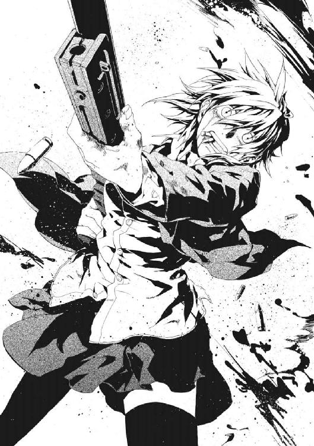
何もかもが、スローモーションで進んでいるようだった。きずなにも、だんだん理解できてきた。なぜ聖騎士は、二千騎以上の大戦力をそろえながら、単純に突進してこず、足並みをそろえて行進していたか。《幻影城》には、魔法消去者との通信が届かないから、魔法防御を無力化する《魔導師殺し》を使えないのだ。
彼らは、これだけの大人数でも、魔法消去がなければ強気に出られないほど、きずなが恐いのだ。
聖騎士たちにとって、これがはっきりと〝理解を超えた光景〟であることがわかった。きずなを見る目が、〝怪物〟に向けるおびえのこもったものになっていた。
「恐れるな！ 神意に──」
勇敢に声をあげた老騎士が、右目を撃ち抜かれて斃れた。ライフルのボルトを彼女の手が引き、空薬莢がまたひとつ血の海に落ちた。さらにひとり、またさらにひとりと、仲間を奮い立たせようとした勇者を狙って、操られるまま命をつみ取ってゆく。勇気をへし折るように、屈服しない標的を片っ端から射殺していった。
気づけば、まだ一千騎以上残っている神聖騎士団が、声を失って〝沈黙〟していた。
感情も何もかも尽き果てた、冷たい世界が、そこにあった。きずながこの空白を作り出したのだ。彼女は、父と当たり前の生活を奪った暴力を嫌悪し続け、やめてしまえばいいと仁に言い続けた。連れて逃げてほしいと頼んだ。
なのに、今、《幻影城》の水を吸わない水晶の床は、見渡す限り一面の紅に染まっていた。彼らを〝沈黙〟させて、ことばすら奪ったのは、彼女だった。
「すげえや。うちの大将は、二代目《沈黙》でも襲名させるつもりですかぃ」
《鬼火衆》から、茶化すような口笛があがった。
進撃が止まってようやく再演魔術の支配から解放されて、きずなの歯の根が鳴りだした。再演大系の自然秩序は、術者に、世界を、人間を〝文字〟として綴った《本》として見せる。だから、きずなはみずからの運命を幻視した。
眼前に広がる《幻影城》の惨劇と同じ沈黙を、魔法が、《世界という本》の過去の情景から検索した。歴代の再演魔導師が経験した、数え切れないほどの戦いの光景が、一瞬で脳裏に展開した。きずなと同じ再演魔導師は、何千年何万年も、すべてが死に絶えたような死体だらけの荒野に立ち続けていた。
きずなが魔法で追いかけられる最古の再演の記憶は、二万年以上前のものだった。建物もなく文明の跡すら見えないそこも、もはや物言わぬ骸ばかりの戦場だった。
彼女を、最も呪われた魔法使いと王子護は呼んだ。アリーセは、再演魔術は滅ぼされなければならないと主張した。過去の魔法使いと同じ、こんな死体だらけの道を歩み続けるのが、彼女の人生なのだと思った。
「こんなの間違ってます！」
悲鳴がのどからほとばしっていた。目の前が数え切れないほどの傷つき倒れた人間で埋まっている現実に、きずなは追い詰められていた。簡単に人を殺せる事実に、命の感覚が、土台から揺らいでいた。武原仁は「責任を俺が取る」と言ったが、そんなもの見るからに無理だ。もう、ことばで確認しないと頭がおかしくなると思った。
傲慢でも、人間らしい絶叫だった。
「こんなことを続けてたら、みんな死んじゃうに決まってるじゃないですか！」
〝沈黙〟した《幻影城》に、きずなの声が響き渡った。
だが、それほど多くの仲間を奪われた騎士たちには、聞き流せない悔しいことばだった。恐怖に縛られていた彼らが、息を吹き返した。聖騎士といえど、人間は感情の動物だ。
「振るえるようになったばかりの力に酔ったか」
張り詰めた無言の奥に燃えていた、無力感と嫉妬に火をつけたようだった。騎士たちが足を止めて装具を調え直していた。態勢を整えて、彼らは突撃してくる。再演魔術に、人間のこころを直接読む魔法はない。だが、彼らの表情と気勢が、きずなにも本当に〝とことんやる〟つもりだと悟らせた。
虎坂井が、きずなの前に出た。返り血か、傷を負ったのか、服も、見えている肌も、赤く汚れていない場所はなかった。
「こりゃダメだ。乱戦になりやす。血路、開くんで、お嬢さんは距離を離してくだせえ」
きずなの口は、これっぽっちも望まない、この場を生き残るための台詞をつむいだ。
「近いほうが好都合です。敵が近ければ、もう皆さんを盾に使わなくてもよくなります」
仲間を盾にされたばかりの《鬼火衆》が、どっと沸いた。
「そいつぁ、魔法使いらしくて結構なことでさぁ」
「ごめんなさい。わたし......」
刻印魔導師は、元の世界で極刑を言い渡された罪人だ。死を笑う狂った諧謔が、また身体を操られはじめたきずなにすら、血の気を引かせた。
「ぼくらの大将にゃ、この短い時間で、お嬢さんみたいなバケモノを作り上げるほどの才があったってことです。おおいに結構」
視界を圧する騎士たちの怒りに、風前の灯火である《鬼火衆》は狂騒で応じた。楽しそうに、血まみれの男たちが、最後の激突に備えて刃を確認し合った。
きずなを守ってみんな傷だらけだった。明らかにもう長くは生きられない、左脇腹がごっそりえぐれた魔法使いが、血しぶきを噴きながらまだ立っていた。
「聖騎士の首は、今でも百人討伐の数に入ってんぞ。二千を皆殺しにすりゃ、刻印魔導師の年季明けじゃないか。親分が《九位》の野郎をぶち殺してくれりゃ、俺たちの勝ちだ」
「そいつぁいいや。愉快だねぇ、愉快だねぇ」
百鬼夜行の列に並ばされているようだった。
〝普通〟だったこころが、決定的に歪んでしまう前に逃げようと、お願いしようとした。けれど、固められたように彼女の唇は動かなかった。再演魔術が、彼女の集団内での影響力を維持するため悲鳴を封じたのだ。
──《鬼火衆》ではなく、きずなをわかってくれている友だちを呼び寄せようと、魔法を使った。
弱かった彼女を知る瑞希なら、何もできなかったころを知るエレオノールやセラならと、祈った。きずなたちは、そもそも騎士を殲滅するために《幻影城》に残っているのではない。《通用門》で逃げる前に合流しないと、ここに置き去りにしてしまう人が出るからなのだ。
再演魔術が、友だちをつかまえた。早くここに来てほしかった。きずなを同類だと、虎坂井は完全に誤解していた。父を殺した負い目で何でもしてくれた武原仁と、糸目の《笑い顔》が張り付いた彼はちがう。
「〝魔法使いの悪夢〟に、でっけぇ貸し作るのも、悪かぁありやせんや」
息苦しくて気持ち悪くて、こんなところで人間が生きられることが信じられなかった。だから、あの武原仁が、どうして他人のために戦場に立ち続けるのかわからなかった。他人のための人殺しを、汚れた手への現実的な気持ち悪さが完全に否定した。
なのに、それでも生きたいと願っているきずな自身の意志が、疲れ切った身体を魔法で無理やり動かして銃に弾をこめさせる。
もうすぐ、騎士たちかきずなか、どちらかが死ぬまで終わらない最後の衝突がはじまる。
もしも生き残れても、何千という死体の上に立っている人は、もう倉本きずなではない気がした。
何かを間違ったというのなら、最初から何もかもやり直したかった。
もう嫌だと、こころから願った。
仁に出会ってから半年のことを思い出した。あまりにもうまくいかないことばかりで、泣きそうになった。けれど、彼女にはそれをやり直す力があった。
もう全部やり直してしまおう。
仁とメイゼルは、アトランチスで戦っている。それでも、これが一番すっきりまとまる方法だと諦めた。
きずなが再演魔術で過去を破壊して、出会った頃から時間をやり直したら、きっとみんな次はうまくやれる。
お父さんにも会える。誰も、死ななかったことにできる。
「こんなの、我がままじゃないよ。普通のことを、取り戻すだけなんだから。普通に生きようとするくらい、悪いことなわけないよ」
再演魔導師として生きることが、一生続く生き地獄に思えた。
だから、何もはじまらなかったことにしよう。
そうだ。《九位》がいなければ、こんなことは起こらなかった。だから、イリーズ戦争で《九位》が斃れていればよかった。そういうふうに過去を改変すれば、《協会》と魔導師公館は協力関係を維持できるはずだ。聖騎士たちが好き勝手に日本で暴れることはできない。仁の妹の六年前の殉職だってなくなる。
聖騎士による魔弾射撃がはじまった。水晶の宮殿が揺れていた。
彼女には願いがあった。再演魔術なら、それを叶えられる。
そして、きずなは魔法を放ち、過去を変えた。
そこはただ真っ暗な場所だった。
天地の差もなく、どこまで広がっているかもわからない。
〝ここ〟がどこか知ろうと、きずなは再演魔術で、《世界という本》を脳裏に広げた。時間を緯糸に、空間を経糸とした《世界の座標》上に、〝ここ〟は存在しなかった。
ただ、彼女の前に、メイゼルよりまだ二つ三つ年下の、ちいさな女の子がいた。
茶色の髪を肩のあたりまでのばし、過保護な親が選ぶようなブランドものの白いワンピースを着ていた。瞳は濃紺色で、目尻はすこし垂れ気味だ。
「あなた、誰？」
きずなは彼女を見下ろして話しかけていた。
「わからないの？」
彼女が返してきた。きずなには何事か想像もつかなかった。ただ、目の前の子どもは、ちいさな頃のきずなにそっくりだった。
「あなたがやったこと、自殺みたいなものだよ。成功しなくてよかったね。自分ひとりのために世界中を巻き込んで自殺しようとしたんだし」
きずなは慌てた。
「世界中をなんて......」
「〝時間〟をこわそうとしたよね。あなたに関わった人やあなたと同じ時間に生きた人の全員の、かけがえのない時間、二度と無い選択をぶちこわしにしようとしたよね？」
彼女自身をやりなおすとは、彼女自身が生きる時間の流れを壊すことだ。その後で、彼女自身がどうなるかなど把握していなかった。夏の核テロ事件のとき、きずなは、おとなになった彼女自身に誘導されて〝過去〟を改変した。そのときは、改変前の未来は鏡のように割れて、世界の破片が降り注いだ。だが、〝おとなのきずな〟がその後どうなったかは知らない。
同じ髪と目の色をした女の子が、告げた。
「〝わたし〟は、きずなだよ。あなたが、自分の〝過去〟を壊したせいでできた、新しい時間の流れの上に乗っているきずな」
〝彼女〟が差し出した《本》に、きずなは触れた。時間の流れを過去にたどれたから、何が起こったのか理解できた。
きずなの使った魔法、《九位》がイリーズ戦争で敗死するよう世界を改変した。その結果、再演魔術は、十六年前、まだ赤ん坊だったきずなを、義父の倉本慈雄のもとではなく魔導師公館に持ち込ませたのだ。その時間軸では、彼女の育ての親は、円環大系世界のイリーズだった。その後、まだ赤ん坊のきずな・アリューシャが、義姉であるメイゼルを操って魔法を《九位》に当てさせたことでイリーズ戦争は終結する。《大崩落》と時間凍結は起こらず、九歳のきずなは、正常に十八歳まで成長したメイゼルに魔法を習っていた。
ちいさなきずなだけではなかった。きずなのまわりには、無数の彼女自身がいた。年をとって白髪交じりの女性も、今と同い年くらいの制服を着た女子高生も、みんな栗色の髪と濃紺の瞳をしていた。
「ここは、《世界っていう本》を読み終わった後の〝どこでもない場所〟。概念魔術的に言うと、唯一魔導師がどんな索引でも魔法化して使えるっていうことは、逆に自分のいる世界を完全に客観視できる場所を魔法的に与えられるってこと。......えーと、わかんないって顔してるね。要するに、唯一魔導師が《世界っていう本》を完全に読むためには、本の中にいちゃいけないってこと。それで、ここが世界を《本》として読むための図書館。ここと繫がってるから、ダメそうなお姉ちゃんでも、上手に魔法が使える」
「ダメそうなお姉ちゃんって、わたしのことだ......。そんなにダメそうかな......」
ちいさいきずなのほうが、彼女よりも立派に魔法使いだった。
「でも、ここにいるんだから、みんな〝過去〟をぶちこわして何もかもやりなおそうとしたんだね。ちょっと安心した。やっぱり、わたしだ」
きずなのせいで新しい時間の流れとともに発生したこの子も、ここにいる以上は、同じ欲望に負けたのだ。暗闇に立ち尽くしていたり座り込んでいたりする数百人のきずな全員が、自分の生きた世界をチャラにしようとしたのだと思った。
まだ彼女の涙はぼろぼろとこぼれて、止まらないままだった。腹が立った。けれど、まわりのきずな自身も同じような暗い瞳で彼女を見ていた。
身勝手でも、同じ失敗をした同士で集まっていると思うと、すこし安心した。無理をして笑ってみせた。
「どうしよう。もう帰りたくないよ。みんな頑張ってたのに。誰とも、もう合わす顔ないよ」
ちいさなきずな・アリューシャが、彼女の服を引っ張った。
「〝あなた〟がいた時間では、武原お兄ちゃんと、ジェルヴェーヌさんは、どうだった？」
世界のどこでもない暗闇で、まわりに何百人もきずな自身がいる異常事態だった。なのに、自分が世界で一番哀れみたいな気分だった。
「ジェルヴェーヌっていう魔女のこと？ その人、わたしをさらって利用しようとした人だよ......。だから、武原さんが、わたしを守ろうとして、ジェルヴェーヌさんって人のこと......」
殺したとは言えなかった。きずなが無責任に作った時間軸の〝ちいさいきずな〟が、力が入らなくなったように座り込んでしまったからだ。
「......そっか、元の時間の流れでは、そんななんだ。だったら、わたしのところの時間の流れのほうが、ふたりともしあわせかも」
ショックを受けた弱い人を見ると、どん底の彼女でもやさしくなれた。
「武原さんには、そっちの世界でも会えるんだ。武原さん、どうしてた？」
〝ちいさいきずな〟も彼女自身だから泣き虫だった。きずながティッシュを貸してあげると、女の子が洟をかんだ。
「武原のお兄ちゃんは、どこの時間の流れでも、なんか人のためにすごい戦ってる。わたし、あの人、よくわかんない」
安心できる命綱を見つけたように、女の子が、仁のことを話すとほっこりとした笑顔になった。きずなも、冷え切った体に、ちいさな火がともった心地がした。
「やっぱりそっか......。武原さんは、きっとどこでもそういう人なんだよね。わたしも、武原さんがどうして〝ああ〟なのか、よくわかんないや」
そして顔を見合わせてすこし笑った。共通の話題ができて、すこし仲良くなれそうな気がした。
「メイゼルお姉ちゃんは？」
ちいさなきずなが、そちらの世界では義理の姉になっているメイゼルのことを、おずおずと尋ねた。大きな目が期待に輝いていた。自分の時間軸でのメイゼル大好きさ加減が、丸見えだった。だからこそ、我が身が恥ずかしくてうつむいていた。
「メイゼルちゃんは、いっつも、がんばってるよ。わたしなんかじゃ、ぜんぜんかなわないくらい、がんばってるよ。......わたし、もう、ずっとここにいて、帰らなくていいかな」
「無理だよ」
魔法にくわしくても、子どもに相手の表情を正確に読むことなど期待できなかった。
「お姉ちゃんのいた時間、壊れてないよ。......あのね、〝過去〟を大きく変えて《賢者》の石ができるとき、元の世界の破片が降ってくるみたいに見えるでしょ。あれね、改変した元の世界が〝壊れた〟のを観測してるわけじゃないの。その世界から剝がれて、もう影響を及ぼさないくらい離れただけ。魔法消去を受けたら、どんな魔法でも同じ色の《魔炎》になるのと同じ原理だけど、......お姉ちゃん、もうついてきてないよね」
説明の大部分は、左耳から右耳へ素通りしていた。
「やだな。わたし、これじゃ、ここに来たって何も解決してないよ」
「お姉ちゃんは、新しい歴史の《本》の枝を作って、〝わたし〟を発生させただけだよ。再演大系の歴史改変は、〝過去〟が変わった新しい世界を発生させるだけで、元の時間の流れのほうはそのまんまだから、帰るしかないよ」
暗闇に漂うきずなたちには、人生をリセットして捨てたかったろう生活の実感があった。いろいろ教えてくれる子どものきずなは、まだその痛みを知るには若すぎた。
「メイゼルお姉ちゃんが、......あのね、再演魔導師は、〝過去〟を改変したところから、時間の流れがちがう枝世界を無限に広げるんだって言ってた。たぶん、そうやってできた無数の〝わたしたち〟全部を合わせたものが、《きずな》なんだよ」
自分の頭の悪さを再確認しつつも、きずなはそうかと納得した。結局、そんな〝ちいさいきずな〟もここに来ている。再演魔導師の人生は、しあわせではないのだ。
本当に、肝心なことには役に立たない魔法を、蹴っ飛ばしてやりたかった。
「魔法って不便だよ。本当に、ダメだよね、魔法。......魔法ってもっと便利でいいものだと思ってた」
脳裏で、《本》がまた勝手に反応して、今の彼女に似た、うなだれた姿勢の人間を探しはじめた。全人類の仕草を《文字》とした《本》から、失望して正面を見ることもできず、両手で顔を覆っている者の情報が、脳内に無限に押し込まれはじめた。苦しむ者が、きずなの《本》の中には無数にいた。子どもを失って絶望した無数の母親、自由を奪われ牢に繫がれた男たち、裏切られて全財産を失った男たちの列──。
仕草のせいだ。《本》に記された世界中のどんな地域どんな時代でも、疲れ切った者や絶望した者がとる姿勢は、たいして変わらない。動物的な条件が、人間の身体や精神が極限状態のときの意識しない身体表現を必然的に似せるのだ。だから、彼女が失望すると、再演魔術が脱出したいという無意識と仕草を連結させて、〝その仕草が似ている〟世界中の人間の情報を引き出してくる。
時代や世界の別も、射程距離無限大の再演大系の《本》には関係ない。原始時代からの無数の絶望を手渡されて、頭がおかしくなりそうで悲鳴をあげた。
「なんでこの魔法、勝手に頭の中に気持ち悪い風景を広げるの？ 戦わされてる最中にも、何回も、何回も！ なんで、わたしだけ......」
暗闇の中のきずなたちが、わめく彼女のほうを向いていた。感情や理性を剝ぎ取られて、すこし動物的になった仕草は、どこかみんな似ていた。それが気持ち悪かった。
「教えてよ。こういうのから逃げる方法、知ってるんでしょ」
返事はなかった。誰も知らないのだと悟った。背筋を重苦しい予感が撫でた。
「ちがうよ、お姉ちゃん。再演秩序は人間のこころには触らないから、魔法は気持ちを表現する仕草を見せてるだけだよ。お姉ちゃんが気持ち悪く感じるのは、わたしたちのこころが、〝仕草を見て勝手に揺れる〟せいだよ。魔法のせいだけじゃなくてさ。『戦わされてる』って言ったけど、それも再演魔術が、同じしくみで《本》の戦いの歴史から仕草を選んで操ったから、生き残れたんだよ」
きずなは、ついさっきまで《幻影城》で、まるで人形同士を戦わせるように人間を操って死なせた。顔を手で覆った。この苦しみによじれた姿勢も、幾兆人の絶望、もっと多くの挫折、世界中の人間が一度はたどる懊悩の光景に繫がっていた。
「だからって、殺されそうになったら身を守るよ。魔法ででも、他の人が悲しんでるとこを見たら落ち込むし、助けてあげたくなるよ。そんなの人間だから普通でしょ。どうして、わたしがやるとこんなにひどいことになるの？」
体温が徐々に下がるようだった。再演大系の《本》は、ただの便利な道具ではない。再演大系は消去に妨げられない限り、あらゆる人間が生涯にとった仕草をすべて観測し、制御できる。つまり《本》とは、生まれてから死ぬまでにどのような仕草をとってきたかという膨大な記録なのだ。
ちいさくても、魔法使いとして英才教育を受けたちいさなきずなは、魔法使いのように考えた。
「他の人の不幸を無限に見せつけられるのが、再演魔導師に与えられた《世界》だし、わたしたちが魔法使いとして生きるってことなんだよ。そこまで不幸がイヤなら、いっそ再演大系の魔法で〝過去〟を操作して、ひとりずつ全員助けるくらいしか、もう......」
すでに立ち向かおうという勇ましさすら萎えきっていた。常識で考えて、果てがないしキリがないからだ。
「人を思い通りにするなんてムリだし、世界中の不幸を全部助けるなんてもっとムリだよ。わたし、ちょっとしあわせになって、普通にくらせるようにもどりたいだけなのに」
魔法使いとして成長して《本》を便利に使えるようになっただけ、《本》の中の悲劇の数々までよく見えた。運命を操作する傲慢のつけに、潰されそうだった。
「こんな重たい魔法、いらなかった。反省したから、もうこの魔法止めてよ。なんで、自分の魔法にこんなに嫌な目にあわせられなくちゃいけないの？」
「再演大系は《人間》を操作する魔法だから」
「そんなこと言ってないよ。こんなもの見せられ続けるなんて、わたしたちを洗脳しようとしてるのと同じだよ。こんなことがずっとで逃げられないんじゃ、絶対頭がおかしくなるよ」
相手はちいさい子なのに、我慢できずに八つ当たりしていた。ちいさいきずなが、懇切丁寧に教えてくれた。
「再演秩序は、そういうふうに術者を追い立てる自然秩序なんだよ。周期運動するものに《魔力》を見出す円環魔導師みたいな魔法なら、どんなに上達しても《魔力》をただのモノとしてあつかえるよ。でも、再演大系は、同じ人間を操作する魔法なんだよ。人間を精密に知って操れる魔法は、上手に使えるほど生き地獄だよね」
この子のあどけない顔も、目の下はわずかに落ちくぼんで、疲れ切っていた。
「魔法使いにとって、本当に何でもできて、何でも知れて、忘れることすら許されないってのは、たぶん最悪の呪いなんだよ」
きずなは、その途方もない寒々しさに震えた。
「何でもなんかできてないよ。誰もしあわせになれてないじゃない！」
再演大系は〝過去〟を改変する魔法で、失敗と不幸を無限にやり直せる。過ぎてしまった過去を諦める必要が、きずなたちにはない。眼前にはいつも、救済できる無限の悲劇があり、時間すらもがそれを忘れる言い訳にならない。まるで神様の役をやれと言われているようで、気持ちが悪かった。
彼女のまわりの〝きずなたち〟が、なぜ世界のどこでもない暗闇に吹きだまっているのか、骨身にしみてきた。《本》によって無限に脳内に展開され続ける世界中の不幸や残酷を、自分には救える力があるのだ。吐きそうになった。自分の世界に戻って人生を再開するだけのことに、無限の勇気が必要に思えるほど、心細かった。
「こんなの、ヒーローみたいになりたい武原さんみたいな人じゃなきゃ、ムリだよ」
同じ再演魔導師の少女が囁く。
「これが人間を観測して操作する魔法使いだよ。《神》にはほど遠くて、叡智で人を救うこともできない、自分の悲惨もどうしようもない。ただ無限に自分の罪を修正できるから、可能性があるだけの魔法使い」
ちいさなきずなが、聞き違えようもなく確かに言った。
「──お姉ちゃん、《神人》だもの」
そして、きずなの視界は、再び転変した。
暗闇に色とかたちが現れたと思ったら、そこはすでに《幻影城》の戦場だった。きずなは、あの世界の果ての暗闇からも逃げてきたのだ。
「《神人》って」
どう理解してよいのかわからなかった。ただ、投げ出された事実が、きずなの世界を一変させるものだったことだけは確かだ。
戦闘は敵味方入り乱れた乱戦になっていた。きずなが現れたことに、どこかへ向けて突進してゆく甲冑の騎士たちは気づいていなかった。
抜剣した騎士たちの注意を引かないよう、自分に視線を向けた全員の首を、魔法ですこしずつひねった。それだけで、人の雪崩がきずなをよけて流れた。
目を向けさせないことによる不可視の安全圏で、呼吸を整えた。どのくらいあの暗闇にいたか計ってはいない。ただ、《本》を通して即座に把握できる過去の戦闘の様子では、《鬼火衆》に二千騎を食い止める実力はない。だから、騎士たちの相手は〝別の誰か〟だ。
遠く微かに、怒号や気合いの声に混じって、動物の吠え声が聞こえた。《魔獣使い》の魔法で生成した猛獣の群れだ。きずなの友だちの神和瑞希が戦ってくれているのだ。
きずなは、魔法で注意を封じながら走り出した。声をあげてしまわないように、印を結んでいない左手で口を押さえた。殺気立った人を搔き分けて、戦火の中心へ向かった。
立っていられないほどの烈風が、行く手からあがった。百メートルほど先で、重装備の騎士たちがまとめて十人ほど、体を放り上げられた。竜巻だった。刻々と大きくなってゆくこの気流も、《魔獣使い》が作り出したのだ。
「竜巻越しに地面から打撃しろ！ 火力を集めろ!!」
騎士たちが百人以上、半弧を描くような一列になって床に手を当てた。きずなが足下の銃弾を手元へ弾かせるのに利用した、床を楽器にして魔弾を奏でさせる神音魔術だ。竜巻の壁に護られていない下から、その中心にいる瑞希を攻めようとしているのだ。
〝普通〟とはほど遠い世界に、彼女はいる。そして、きずなの大切な人々が、彼女を守って絶望的な戦いをしていた。彼女の使った概念魔術が仲間を呼び寄せた。この局面を決定するだけの力を彼女は持っていた。
「──銃！」
きずなが声をあげた。それで、まわりの騎士たちも彼女に気づいた。騎士たちのかろうじて保っていた隊列が、最優先目標が突然現れたことでゆるんだ。
風を切って、重い銃が回転しながら彼女のほうへ飛んできた。再演魔術が、どこかに落ちていた銃を誰かに拾わせたのだ。正確に受け取れるため魔法を使おうと決めた途端、完璧な精度で手は動き、ずっしりした銃身を柔軟に受け止めた。続いて、きずなの脳裏に自動的に銃を受け取ったビジョンが浮かび上がり、視界の中の風景に重ね合わせる。再演魔術がすでに起こった身体操作から逆流し、魔法による〝過去〟操作を達成させたのだ。
歩を進めながらスカートのポケットから弾丸を一発摘み出し、薬室へ送り込む。
津波のように殺到してきた騎士たちの陣形が、後列から割れた。まるで地面に集まった蟻の大群を、ホースの水で押し流したようだ。裸身を惜しげもなく晒した銀髪の美女が、身長の十倍を超える黒剣を横薙ぎに振るったのだ。
「陣形が崩れるともろいな」
セラ・バラードの二つ名は《無双剣》という。ものの表面に《魔力》を見いだす錬金大系は、触れたものの性質を変えることで、生物に致命的な影響をおよぼす。《光背》の防御を突破されれば、聖騎士といえど触れれば死だ。
舞うように、一騎当千の全裸剣士が、刃の波間に斬り込んでいった。斬り、かわし、乳房を揺らす。敵もさるものセラが押し返され、汗に濡れた太ももを閃かせて飛びずさり、背後に回ろうとした騎士に大胆な回し蹴りを放つ。
だが、騎士たちも後退しなかった。防御魔術なしで触れれば四肢が飛ぶ超高速の《無双剣》を前に、なお正面から突っ込んだのだ。
「押し包め！ 数で押せ、相手はひとりだ!!」
セラが強くとも、多勢に無勢だ。斃せない相手でも、戦線に引きつけて他所の加勢ができないよう拘束することは、比較的容易なのだ。
「盾を持つ騎士は、こちらの防御を！ 竜巻を突破できる戦力を召還します」
声をあげた軽装の女性騎士にも、きずなは見覚えがあった。ニコール・セフォンと名乗った、未踏神音試験部隊の主任技術者だ。その騎士の部下たちが、大きな神音楽器を戦列に運んできていた。大魔術を使う準備だった。きずなは、その魔法を止めることを念じてライフルを構え、撃った。
銃声が響き、射撃の反動が、銃床越しに身体を強く押し返した。だが、騎士三人で運ぶオルガンのような楽器は、壊れもせずに神音を奏で続けていた。
「外れた？」
きずなは、自分が驚きの声をあげたことが、どこか不思議に思えた。きずなは、人殺しは、概念魔術──世界へと〝結果〟を押しつけて〝過程〟を逆算する魔法──に操られたせいだと、責任から逃げていた。なのに、いつの間にか、撃てば必ず敵を撃ち倒せるつもりで残念がっていた。
彼女は、薬室に弾丸を詰めこんでいた。手つきはたどたどしかった。魔法に操られているのではなく、自分の意志で弾丸を込めたからだ。次の魔法で人を殺すとわかっているのに銃を握り続けていた。
騎士たちも、銃声と声で、きずなが舞台に戻ってきたことに気づいていた。地面が揺れていた。状況は、彼女の頭の中と同じくらいぐちゃぐちゃだ。武原仁は、彼女と同じ十七歳ではじめて人を撃ったと言った。そのとき彼は何を考えていたか知りたかった。
「どうしたらいいの。教えてよ」
自分に〝過去〟しか見えないことを恨んだ。知りたいのは未来だ。
もう一度、さっきと同じように銃で道を切り開こう。さっきできたことだ。またできるはずだ。嵐のように、鳥のかたちをした魔弾が空を埋め尽くす群れを作って飛んでいた。
汗をかいて服がべとべとだった。魔法に操られたにしろ、動いたのは彼女の体だ。動けば汗もかくし筋肉痛にもなる。ひどくのどが渇いた。体が強張って痛んだ。
残りの敵の数を、《本》を通して知ろうとした。未来に動きがある〝文字〟──まだ生きている人間の数は、この場に一八七九個だった。〝文字〟を詳細に見なければ、それぞれが敵か味方かも判別できないのに、斬りかかられながらではその余力もない。
きずなのことを《神人》だと、ちがう時間の流れの〝きずな〟は言った。殺意のこもった攻撃を、斬り合いの訓練を受けたこともないはずなのにかわしていた。
助けなければならないと、ぼんやりと思った。もしも魔法使いたちにとっても伝説だという《神人》なら、彼女にはそれだけの力があるはずだ。銃を彼女の手にわたしたとき、仁は何を教えたろうか。そう願うと、簡単に《本》からその場面を引き出せた。《本》の中の彼のことばを復唱するように、きずなは勇気がほしくて声に出した。
「生きることは......、自分の運命に引き金を引き続けること。でも、選ばなければ大切なものを失うときが、かならずくる」
仁の言う〝そのとき〟が今かなど、戦ったことのないきずなには読みとれない。だが、大事なものを持って〝普通〟にたどり着きたかった。概念魔術で世界に「〝普通〟に戻る」ことを押しつけることはできない。概念魔術は過程を一切保証しないから、彼女は、何百何千万人の死体の上に〝普通〟を築くかもしれないのだ。──そんな呪われた〝普通〟を手に入れてしまった〝きずな〟も、あの世界の果ての暗闇には本当にいる。
セラを取り囲んでいた騎士たちが、車に轢かれたように弾き飛ばされた。ふたり、三人、四人と、見えない大砲で撃たれたように横殴りに吹っ飛んだのだ。
きずなの目には、騎士たちが宙を飛ばされ床にたたきつけられるさまが、スローモーションで見えた。
そこにいるのが誰か、彼女にはわかっていた。
「──なぜ、そのような、見捨てられたような顔をしているのですか」
きずなにとっては迷惑をかけ通している相手の声だ。褪せた金髪を強風になびかせて、毅然として千を超える敵の前に立ち塞がっていた。神聖騎士団を破門された少女、エレオノール・ナガンが、剣を床に突き立てていた。
彼女は、ひとりなどではないのだ。そう思って、うれしかったのに、これまでの自分の身勝手さが恥ずかしくて叫んでいた。
「いいんです！ もう、《通用門》を開きますから逃げてください！ わたしなんかのために、昔の仲間と戦わなくていいんです」
肉声で神音を発する神音歌手にとって、戦闘中に話をすることは魔法を中断することだ。なのに、エレオノールは何十メートルも離れた遠くから、よく響く声を投げたのだ。
「生きていることに誇りを持ちなさい。あなたが生きていることもまた、神意です！」
少女騎士は、かつて任務よりも子どもの生命を選んで、騎士団と袂を分かった。同い年のエレオノールの後ろ姿を見ても、別の世界の話のつもりでいた。だが、今、きずなの手は、銃を握っていた。
かつては世代最強とまで謳われたエレオノールの守りは鉄壁だ。この大軍に揉まれても傷ひとつ負わず、確実に敵を無力化していた。いつか恩返しできる日など来るのかと、沈みこむ彼女に、少女騎士が微笑んだ。
「恥じ入る気持ちや感謝があるなら、助けられただけ他の人を救いなさい。そうやって、生命はすこしずつ繫がってゆくのです」
神聖騎士団が《神人》を狙うことを納得できた。だからこそ、そこから飛び出してここに立っているこの人のやさしさに、体が震えた。
きずなにとっては救い主だが、騎士たちにとってエレオノールは背信者だ。だから、反応もまた苛烈だった。セラには足止めの人数だったのに、今度は明らかに殺すつもりの火力が集中されたのだ。
上空を埋め尽くしていた魔弾の群れが、急降下してエレオノールへ向かった。何千という魔弾の雨がいっせいに少女騎士を打った。概念魔弾は当たった箇所に、皮膚が裂け肉が爆ぜる程度の衝撃を作り出す。炸裂の集中が、爆心地から空気を完全に押しのけ、真空状態にした。すさまじい威力を物語るように、細かい床の破片が宙に舞い上がった。水晶の砂をふくんだきらめく雲が、三メートルほどまで高くふくらんだ。《幻影城》の足下が、細かく振動した。
「背信者め──」
騎士の誰かが吐き捨てた。だが、彼らは《光背》の真の強固さを知ることとなる。水晶の雲が瑞希の竜巻からの風で流れたとき、エレオノールは無傷だった。
だが、地力のちがいを見せつけられても、騎士たちの戦意は衰えない。
「神聖騎士団を舐めるな」
ニコールが奏でていたオルガンの神音楽曲が、長く平板な低音で余韻を引いて、終わった。その瞬間、音が消えた。急速にオルガンの直上に吸い上げられ、音波が正常に伝播しなくなったのだ。騎士たちの髪をぐしゃぐしゃにして荒れ狂った風は、神音楽曲で召還された〝それ〟の体を構成するために発生した。〝それ〟は圧縮された超高気圧の気体で肉体をつくるとき、周辺から大気を吸い込んで材料を補うのだ。
きずなは、戦場に新たに現れたものを目にして、呼吸を忘れた。漂っていた水晶の砂を取り込んで、〝それ〟はきらめいていた。鳥ではなく等身大の人型をした概念魔弾のような、半透明の騎士が空中に現れたのだ。
エレオノールの顔色が、さすがに変わった。神音で記述された過去の英雄を呼び出す秘術、《聖霊騎士》は、神聖騎士団の切り札だ。複数体同時には出せないものの、恐ろしく強いうえに何度破壊しても簡単によみがえる。
「《極星を追う者》と、いいましたね」
エレオノールは、剣を天に捧げるように両手で構えた。彼女たちはかつて、エレオノールの住んでいたアパートが襲撃を受けたとき、その《聖霊騎士》と対峙した。
騎士たちの隊列を護るように、古風な甲冑をまとった女性騎士は空中に静止していた。
きずなは、子どもの頃、義理の父が吹いた神音楽器の音を聞き、この《聖霊騎士》と同じ姿をした幻を見た。それが母親だとずっと勘違いしていた。だから、この《極星を追う者》と出会って、彼女は知りたくなかった秘密に直面することになったのだ。
きずなは、声を限りに叫んでいた。
「あなた、いったい誰なんですか！」
正体を探ろうと、世界を記述した《本》で、目の前の《極星を追う者》の情報がないか検索した。魔法消去の他に、人間が再演大系の観測を逃れる方法はほとんどない。なのに、《聖霊騎士》にはこの世界のものではないかのように、まったく反応がなかった。
「お父さんは、あなたのこと、助けようとしたのに。あなたが、どうして《聖霊騎士》なんかになっているんですか！」
お母さんと呼びたかった。けれど、そうして嘲笑われるのがこわかった。
「言えなかったけど、バベルの再演で誘拐されて来たとき、どうなったか、もう魔法で見たんです。お父さんが、本当はわたしの魔法を利用するために育ててくれてたことも、ずっと前に死んだあなたを助けたかっただけなんだってことも、もう知ってるんです」
告白を聞かせるべき武原仁は、アトランチスにいて戦っている。だから、こぼれる涙は、感情を身勝手に吐き出しただけのものだ。それでも、足下がまるごと崩れ落ちるように不安で、激情に身を支えなければ立っていられなかった。
もう逃げたくてしかたなかった。運命に立ち向かいたくなどなかった。一人殺すごとに、きずなの言っていた正論が彼女を傷つけるようだ。彼女がそうだと思っている〝ただしい世界〟から、どんどん自分が弾き出されてゆく。だから、誰か教えてほしかった。
「正しいことは何なんですか？ 《聖霊騎士》って、最後には死んじゃう儀式をしてなるものだって、聞きました。四千年以上前に、本物のバベルで戦死したはずのあなたが、なんで《聖霊騎士》になってるんですか。お父さんと関係あるんですか！」
きずなの育ての父、倉本慈雄は、たくさんの噓をついた。だから、彼女が思う〝普通〟すら、都合よくだまされたことを錯覚しただけのものだ。それでも、魔法なんていらないから、あのころに戻りたかった。
《極星を追う者》が、たぶんきずなの目を見た。そして、ガラスの鈴を鳴らすような繊細なソプラノの声を響かせた。
〈〝最後の魔導師〟よ。時の淵に《剣》を捧げる審判者よ────〉
母だと思っていた人にまで、きずなは〝最後の魔導師〟と呼ばれた。その不吉な名前から逃げられないようだった。この世界に《神》がいるなら、もうやめさせて欲しかった。
†
聖騎士たちと老龍との戦いは、戦力だけならば圧倒的に龍が劣勢だった。
神聖騎士団の主力である《至高の人》アンゼロッタと、その《聖霊騎士》である《黄金の右手》ミヒャエルを、ひとりで食い止めるなど普通ならば不可能だ。
世界の守護者を自らに任じた《雷神》クレペンスは、だが無茶を満身創痍で引き受けた。《至高の人》アンゼロッタとクレペンスの間には、飛行機の残骸が浮かんでいた。攻撃隊の平騎士と隊長たちの乗った飛行機を、《雷神》はたやすく撃墜したのだ。
「《九位》は、すでに戦略的に詰んでいます。核戦争が起ころうと、神聖騎士団には、アメリカ国民の半数を生き残らせる準備がすでにあります」
アンゼロッタが同時に放った二十発の超高速魔弾が、《雷神》の体をとらえた。聖騎士将軍は、現代聖騎士の頂点の一角だ。大気を局所的に音速の数倍で無理やり膨張させるその魔弾は、消去さえ受けなければ、最大出力ならビルの一棟や二棟は半壊させる。
「あなたの忠義は、無意味なのです。ワイズマンにも、物資補給や放射能除去を商売にのせる準備があるでしょう。魔法使いが干渉している限り、この世界の住民を全滅させることはできません」
だが、大爆発を《雷神》は無傷で受け止めた。円環大系の〝自分自身であるという円環〟を魔法的に強化した自己円環の防御は、打撃で魔法が歪んでゆく弱点はあれど、外部からの影響を完全に遮断する。
水面に立った、身の丈五十メートルにおよぶ巨人騎士《黄金の右手》ミヒャエルが、刀身十メートルを超える長剣で、渾身の突きをくりだした。軽く音速の壁を突き破った剣尖が発生させた衝撃波が、海面を爆発させた。ただ当たり前の剣撃に、巨大さが絶望的な破壊力を与えるのだ。
〈古き雷龍よ、時間稼ぎにしかならぬぞ。神聖騎士団百万騎を、すべて斬り伏せられるつもりか〉
だが、最強最古の《聖霊騎士》、《はじまりの十五人》たる彼の一撃が、空中でぴたりと停止した。円環大系最高位の魔法騎士が、左手だけで完璧に受け止めたのだ。
「《聖霊騎士》ごときが。生きてもいない者が、〝未来〟を語るな」
銀髪の老龍の足下に、円環魔導師の認識の陰である魔法陣が広がった。
「この決戦に敗れれば、《協会》を危険にさらした円環世界は、今度こそ《三十六宮》を追われよう。しかし──」
《雷神》クレペンスが、海面に放ったレーザーの雨が《魔炎》へと砕け散った。大規模に海面温度をあげようとした魔法が、そのほとんどを魔法消去で破壊されたのだ。
「──それゆえ、この挑戦を支えるは騎士の誉れ。まだ若い《九位》殿が、円環世界の《三十六宮》落ちを防ぎ、序列を回復しようというのだ。かような命の遣いどころに退いては、《悪鬼》の騎士にも笑われよう」
魔法消去がある地球で、円環大系の超高位魔導師が全力で戦うことは不可能だ。それでも、消去しきれなかった魔法で、彼ならば巨大な積乱雲を造ることすらできる。
戦場と四百キロメートル向こうの東京との間には、巨大な積乱雲が、灰色の壁のように天へとそそり立っていた。この雲を障壁にして、アトランチスを襲う日本からの魔法消去を軽減するためだ。円環大系は、魔法消去に強い特性と対消去技術の積み重ねがため、この世界の神話に幾度も雷神として現れた。クレペンスは雷をまとう闘神の原型本人なのだ。
「聖騎士よ。未来の凪を見守るのではなく、今を救わんとするのは、若者の美徳である」
神話の英雄の声は深く、そして力強い。
「だが、分をわきまえよ。この一戦は円環大系のもの。世界に対して戦いを挑んだのは、我ら円環世界だ」
《雷神》の勝利とは、《九位》がアトランチスを占領するまで、アンゼロッタを到着させないことだ。そして、愛用の漆黒と銀の鎧をなかば砕かれながらも、クレペンスはそれを達成しつつある。
空中に立つアンゼロッタは、それでも微笑みを絶やさない。
「《雷神》クレペンス。どれほど鍛え上げようと、人の力では、〝救い〟に届かぬのです。それが、我が騎士団の到達した真理なのです」
一秒ごとに衝撃波が炸裂して大波を立てる戦場の端を、五本の影がかすめた。音速を超えないものは、この戦場では〝遅い〟。クレペンスたちの五十キロメートル以上向こうを、飛翔で圧縮された大気の波が、海面を打って低い水の壁を立てた。それは、一隊の編隊を組んで飛んでゆく五機の飛行機のようだった。
《雷神》クレペンスは、〝自らという円環〟が時間と接する間隔を制御することで反応速度を上げている。彼の感覚は、戦場を突っ切ろうとしているのが《協会》反主流派の高位魔導師、《逆天》ユリアと部下たちだととらえていた。
だが、彼ならば光速以外のたいていのものは〝つかまえられる〟。そして、ユリアの進行ルートはアトランチスだった。五十キロメートル程度は、《雷神》には至近距離にすぎない。
敵魔法使いを追撃しようとした彼を、アンゼロッタが呼び止めた。
「《逆天》ユリアは、アトランチスへ行きます。神意の手からは何者も逃れ得ません」
魔法使いは、単身で世界と《神》に対峙するものだ。だから、クレペンスは憐れむように言った。
「大口をたたいて、肝心なことを他人頼みか」
だが、アンゼロッタは世界の中心軸であるかのように笑みを止めない。
はなたれた超高速の光の剣が、彼を打つ。二〇八本の光剣が、意志を持つように宙を舞って《雷神》を襲った。かつて再演のバベルで団将グレアム・ヴィエンが使った誘導魔弾《二十六聖》を、八組同時に扱っているのだ。
「この程度で──」
クレペンスが吠えた。隙間などないかのごとく空間を埋め尽くした光の剣による斬撃を、闘神はすり抜けた。防御魔術ではない、超感覚による単なる見切りだ。
だが、その神速の前に《至高の人》が立ちはだかった。ひとりでも絶望的な能力を誇るアンゼロッタが、ふたりに増えたのだ。神音大系の《化身》である《ゆらぎの化身》は、〝自分自身という神音〟を奏でることで、もうひとりの自分を召還する。《破滅の化身》のような弱点がまったくない強力な魔術だ。
「《ゆらぎの化身》を使うのは、ひさしいことです」
アンゼロッタの《化身》の背中に、八枚の黄金の翼が開いたようだった。その魔術、《導きの光剣》のエネルギー弾は、光速で飛翔する。八本の《導きの光剣》の光条を、かわす術などなかった。受け止めざるを得なかったクレペンスが体勢を立て直す一瞬で、《黄金の右手》ミヒャエルが、進路をふさいで立ちはだかった。巨人騎士は、放つ魔弾も巨大だ。《雷神》は、海面に叩きつけられて水柱をあげた。
だが、傷だらけでも、闘神の原型たるクレペンスは屈しない。
「反主流派とはいえ《協会》の魔導師である《逆天》への追撃を、聖騎士であるそなたが止めるとはな」
「神意は、〝それができる者〟を選んで役目を与えます。わたくしではなく彼女たちが〝そこ〟へ行くなら、それこそが神意です」
聖騎士将軍は、未来が見えているように確信に満ちていた。
「神意をになうのは、特別な者でなくてよいのです。ときとして、当人ですら、自分がそうだと気づいていないのですから」
古き神話の英雄は、それを惰弱と断じた。
「言い訳がましいことだ」
「神聖騎士団とは、人間を救う《真なる神》を導くという、神意を達するための道のりそのもの。それゆえ、同じ結果へ向かう者は、皆、同行者なのです」
《雷神》が音に反応して空を仰いだ。彼が、アンゼロッタたちの妨害で撃ち落とし損ねたものは、もうひとつあったのだ。
「ならば、このぼくも仲間だとでも言うつもりかい！」
遠く、《雷神》の標的になることをおそれて積乱雲に近づかないよう飛んでいた航空機が、戦域に突っ込んできていたのだ。
ハッチを開いて、白いスーツにピンクのシャツという頭の悪そうな格好の男が、大声で叫んでいた。
「勘違いしてもらっちゃこまる。君たちだけのものじゃない。この戦いは〝ぼくらのもの〟だ!!」
なんだこのバカはと、誰もが拍子抜けした。だが、《魔炎》に包まれたその男は、輸送機からパラシュートなしで飛び降りた。その光景に、誰もが息を吞んだ。高度三百メートルから空中へ身を投げた男は、空を飛ぶ能力を持っていないからだ。
蒼い炎と、オレンジの《魔炎》を曳いて、男は落下する。そして、正確に狙いすまして、空中に立っていた《黄金の右手》の右肩に着地した。
声にならない悲鳴を、痛覚がないはずの《聖霊騎士》があげた。
落下の衝撃をやわらげるクッションに利用され、圧縮した大気でできた《聖霊騎士》の体は男をめりこませていた。そして、そいつが、巨人の肩を穿った傷口をよじのぼって外に出たとき、巨大な《黄金の右手》の右腕が腐り落ちるように肩からまるごと落下した。
エナメルの靴が踏んだ場所から、《聖霊騎士》が、蒼い炎をあげて溶けはじめていた。観測したあらゆるものを破壊するこの地獄特有魔術は、《破壊》と呼ばれる。敵も協力者も無差別に食い尽くす戦場の悪夢の名を、《雷神》クレペンスすらもが知っていた。
「《破壊》八咬誠志郎か......」
円環魔導師は防御能力が低い。《雷神》は、その弱点を圧倒的な機動力と空間を破壊力で埋める戦術で補っている。だから、速度では逃げ切れない全周囲攻撃にさらされることは、《雷神》クレペンスには致命的だ。
〈──《悪鬼》の守護者よ、そなたにも確かに、この戦いに加わる正当な権利がある〉
それでも老龍は、しゃべれば《破壊》でのどを砕かれる張り詰めた静寂の中、魔法で大気を震わせて人工音声を発生させた。
〈だが、我々は、すでに、〝国を殺す弾丸〟を放っている。止めるつもりならば、急がねば間に合わぬぞ〉
円環大系の秘術に、《サジタリスの矢》と呼ばれる照準魔術がある。《九位》ことグラフェーラ・トリアの実家に伝わるこの魔法で照準されたものは、〝人間の生命の円環〟以外のものに干渉しなくなる。
《雷神》たちは、この《サジタリスの矢》で照準された核ミサイルを撃った。つまりミサイルは、人間の生命以外には干渉することがないから、水の抵抗も受けず、魔法消去を受けない限り、海中であろうと、空中を飛ぶように〝飛行〟できる。
航跡を読めない魚雷のように、沈黙した核ミサイルが進んでいた。
アトランチスから発射され、一直線に太平洋の対岸、アメリカ西海岸へと──。
アトランチス住民代表ハウゼン・Ｏ・ジモリーこと王子護ハウゼンは、〝それ〟が発射されたことを知っていた。アトランチスにワイズマンが設置したミサイルの海中発射口を、《九位》は利用したはずだった。
海中に沈んでいたアトランチスで、設計データを発見したときから、この成り行きを予測していた。ワイズマンの目標はこの世界との商業のルール作りで、このためには核戦争は最悪のシナリオだった。それでも、王子護は流れに逆らわず、どう転がっても利益が出るよう計画を修正した。長い経験で、〝それ〟に真っ向から盾突けば破滅だと承知していたのだ。
そして王子護は、アメリカはワシントンＤＣにいる。ワイズマンが、米国本土が核攻撃を受けた場合の、魔法での放射能除去を受注したのだ。アメリカは、アトランチスを艦隊で包囲しようとする一方で、買い手としても常によい値段を提示してきていた。その交渉のラインを広げてきたのだ。
「この値段、核攻撃を受けたらどう動きマスかネ」
日本と時差が十四時間あるため、時間は夜せ時だ。公園の多い首都の夜を、王子護は悠々とひとり歩く。
《九位》による人工衛星撃墜より前、《悪鬼》の国家間では外交が白熱していた。そして、お互いが未熟であることを再確認し合っていた。彼らの核爆弾を〝使う〟技術には、一九六〇年代から抜本的な差がない。ミサイルの量と威力を競った時代から、相互確証破壊の時代に入り、新興核兵器保有国に対する戦略へと多少の変遷はあった。だが、戦略の中心は、使えば自分たちも核で報復を受けるという威嚇のままだ。核戦争を起こさない手段ばかりがあって、はじまってしまった場合に終えるための枠組みがなかったのだ。
人工衛星を失って、夜のワシントンは、キューバ危機以来の緊張に包まれていた。
二次大戦以降、核爆弾は実戦で使われなかった。だが、魔法世界では話がちがう。超高位魔導師の戦闘ともなれば、一撃で都市が壊滅する威力の魔法攻撃が飛び交うことは珍しくない。
「どーせ戦争ばっかしてンだかラ、核を撃ッテ、社会機能が止まる戦争、経験したらよかったネ。やったことないカラ、核戦争にどう落としドコロを作ッテ終えるか、誰も知らねーんデスヨ」
核の相互抑止という戦略は、地球上に《悪鬼》しかいない前提でのみ成り立つ。「核戦争は割に合わない」という道理では、テロリスト国城田義一や《九位》のような、最初から焦土自体が望みの者は止められない。
「あのテロリストは、〝国を殺す弾丸〟だと言いマシたカ。まあ、けれど、ぼくはこの展開、ケッコウ不本意なんでスヨ。───が止めなキャ、ぼくのショウはもっと大きくなってたハズなんですカラ」
この夏、東京で核テロを指揮したとき、王子護は核爆発のプラズマに押し潰されて死んだ。そうなるはずが、魔法消去を受ければ崩れ去る骸骨のような姿になって生き延びた。あまりにも長い旅の間、事あるごとに干渉し続けた力が、ギリギリで彼を救ったのだ。
王子護の行く手にあるのは、ただ暗闇だ。夜道をひとり歩く道化師が、ふと足を止めた。そして、夜空を見上げた。
「まだぼくを見てルンですカ？ ────の目指す〝審判〟は達成間近ダというのニ」
ことばを発しようとして何者かから検閲を受けたように、中年男の口が動きを止めた。薄っぺらい笑顔が、仮面のように張り付いて素顔を隠していた。
そして王子護が、目元を隠すように白い帽子のつばを引き下ろした。
「ああ、もうすぐデス。覚悟していなサイ。────も、止まりマス。ぼくらは折れたりなどしまセン。......ぼくらの、待ち望んだトキモ、これからはじまるのデス」
核兵器を持ち合うことでお互いを縛り合っている以上、拮抗の中心となる国が本当に決定的な被害を受けたとき、足場は崩れる。人工衛星を失って情報を制限された不安と不信の中、核攻撃で戦力バランスが失われれば、それを呼び水に核戦争がはじまる。《悪鬼》は、優位な〝落としどころ〟を求めて戦争をするが、核攻撃で陥った社会機能が停止するレベルの劣勢を、核攻撃以外で回復するのは困難だからだ。
《九位》の狙い通りに事態は進んでいる。核戦争はすぐそこだ。
王子護のペテンで歴史を動かす勝負は、最低限度の儲けだけをつかまされて中断させられようとしていた。だから、彼は、再演魔導師に観測されて伝わることがあるだろうかと、ひとり闇の中、つぶやいた。
「ジン、止められるとしたら、制限時間は、アトランチスから発射されテ、海中を飛んでる核ミサイルが、アメリカ西海岸へ着弾するまでデス」
†
この世界に神はいない。だが、再演魔導師の目は、すべての者の不幸を見守っている。武原仁のように魔法消去を自分の力で止められるなら、《悪鬼》と蔑まれる地球人の上にも、恩寵は注ぐのだ。
だが、それでもきずなにとって救いはない。救いの手を差し伸べる役を負っているのは、きずな自身だからだ。だから、絶大な力を持つだけの〝普通〟の人間である彼女にとっても、この世界に救済の神はいない。
吹っ飛ばされて、彼女は床に倒れていた。きずなは、ただ痛いだけで動かない体を、死にたくないから魔法で操って立ち上がらせた。近くにいた聖騎士たちは、みんなどこかしら骨を折って苦悶の声をあげていた。横たわる人々の、割れた頭やあってはならない方向に曲がった関節を目にして、息が止まった。気味の悪さと恐怖で、体が冷たくなって震えだした。
大魔術で戦場をなぎ払った《聖霊騎士》は、母だと勘違いしていた姿で、冷たく言った。
〈あなたは、騎士たちを守るべき《光背》の防御を、自分のために奪って生き延びました。〝最後の魔導師〟よ、ですが──〉
生き延びるために編まれた概念魔術が、騎士たちを操って《光背》の魔術をきずなに対して使わせた。結果、当の騎士たちは防御を増強できないまま魔法をくらい、床の地獄絵図が現出した。おまえが言うなと責められる立場でも、まだ〝普通〟な倫理が彼女に悲鳴をあげさせた。
「どうしてこんなことするんですか！ 他の騎士も、みんなすぐ近くにいるのに」
語り掛けながら、浅ましくも《本》の中に、この《聖霊騎士》の〝文字〟を探した。母だと思っていた面影の相手を、操って生き残るためだ。
「......どうして？ やっぱり〝文字〟がない」
再演魔術がきずなに見せる《世界》には、目の前の《極星を追う者》を表す〝文字〟が存在しなかった。確かにここにいて、彼女たちを吹っ飛ばしたのに、再演魔術は彼女がこの世界にいない人間だと示していた。
〈〝最後の魔導師〟よ。わたしの〝文字〟がそこにないなら、あなたの力は届かないということです〉
「再演魔術を知ってるんですか。なんであなたまで〝最後の魔導師〟って呼ぶんですか？」
口の中が血の臭いでいっぱいだった。この人の前で、唾を吐き出すのが下品なようで、我慢して吞みくだした。
聖騎士たちは、マスゲームでもしているような見事な連係で、きずなと《極星を追う者》を一対一にするようエレオノールたちを分断した。きずなの魔法がこの《聖霊騎士》に通じないことを、彼らまで知っているのだ。
きずなが子どものころ見た幻と同じ、慈母の微笑みで、空中から彼女が手を差し伸べた。
〈あなたを知らない者がいましょうか。審判を導く者よ〉
微笑みながら、聖霊騎士は歌う。精密に調整されたビブラートで、戦場の空気を洗い流すように。神音大系の魔法のもっとも原始的なかたちは、人間の歌だ。だから、神音歌手はもっとも長い歴史を持ち、もっとも深く積み重ねられた技術体系だ。
水晶の床が、目がくらむほどの閃光を反射した。空中を泳いでいた〝母〟が、光の柱のような太い光条を放ったのだ。
「外れた？」
きずなは、幸運だったと思った。だから、反射的にその光が向かった先を見ようと振り返った。
彼女の背後にあって、騎士たちの何割かを風圧で足止めしていた竜巻が、急速に弱まりつつあった。風に舞い上げられていた人間や装備が、雨のようにぼとぼとと落下しはじめた。裂風がほどけて、灰色の雲の流れはかき消えた。
閉ざされていた視界が回復し、制服姿の瑞希がその向こうに現れた。きずなの友だちが、膝から崩れ落ちた。
「......神和さん？」
きずなは、その風景を目にして、考える力を失った。《極星を追う者》の光条は、竜巻を貫通して瑞希を撃ったのだ。強力な防御魔術で身を守っているはずの瑞希が、一撃でそれを貫かれて倒れ伏していた。
〈神聖騎士団の力は、積み重ねられた戦いの歴史より来るもの。《魔獣使い》の手の内は、よく知っております〉
空を舞う《聖霊騎士》は、薄く発光する強力な《光背》をまとっていた。天からの使いのように、彼女は宣告する。
〈神聖騎士団とは、人間でもなく法でもなく、ただ鎖をなす誓願。そのはるかな歩みの起点が、神意なのです〉
「〝神意〟って何なんですか......」
きずなは疲れ切って見上げた。無視されてこのまま殺されるのだと怯える彼女に、やさしい顔の騎士は、答えた。
〈〝最後の魔導師〟よ、あなたは、かならずそこにたどりつくでしょう〉
次々に新しいことが起こって、もう彼女にはどこへ向かえばよいかもわからなかった。まわりが人殺しだらけで、彼女もたくさんそうしていて、なのに自分を責めようともしないことが、不潔に思えた。誰にも届かないだろう祈りを、口の中でつぶやいた。
「助けて。そんなこといいから、助けて」
友だちが、血の海に倒れていた。どうしたら守ってあげられるのかも、どうしたら生き延びられるのかも、見当がつかなかった。
泣きごとを言葉にしたことが、また魔法の引き金になったようだった。再演大系の《本》が、自然にひとりの人間を表す〝文字〟に焦点を合わせた。
きずなの感覚が、焦点が結ばれた〝人間〟をとらえた。──魔法で誰かの感覚を盗んで見た〝その人〟は、この《幻影城》の中で、武器も持たずに戦場を歩いていた。──武装したおとなたちの合間にあって、小学生の女の子はひどく頼りなかった。騎士たちも、戦いを避けて走るだけの子どもを斬りはしなかった。
武原舞花に、再演魔術の知覚は吸い寄せられていた。
きずなは、刃物を持って千人以上の人間が駆け回っているここに、子どもがいる事実にぞっとした。きずな自身も、銃を持っていた。暴力の臭いが気持ち悪くて、ここからいなくなってしまいたかった。
舞花をつかまえたら、瑞希を助けて、セラとエレオノールと、《鬼火衆》のみんなに戻ってきてもらおう。そうして、もうここを出るのだ。
──それとも、「助けて」と願って魔法を使ったら、舞花に助けてもらえるということかと、期待してしまった。脳裏に浮かぶと、弱さが、都合のよいできごとを望んだ。専任係官だった舞花なら、もう汚れているからこの役にうってつけだと頭によぎった。
〈〝最後の魔導師〟よ。あなたは、かならずひとりになるでしょう〉
未来を《聖霊騎士》のほうがよく知っているようで、気味が悪かった。彼女の再演魔術では〝過去〟しか見えないのに、未来に先回りされているようでぞっとした。
ついに耐えられなくなった。後先考える余裕もなく、きずなは逃げ出した。右手に長い銃を持ったままだから、重くて足がふらついた。自然に、鼻水が出ていた。涙がこぼれて止まらなかった。
魔弾の流れ弾が飛んできた。再演魔術が、スカートのポケットに素早く手を突っ込んで、弾丸が詰まった紙箱をぶん投げさせた。鷹のかたちをした半透明の魔弾が、きずなの顔のかわりに紙箱を破裂させた。雷管が衝撃で暴発して、破裂音を立てた。
きずなは、へたり込んで荒い息をついていた。今の暴発で、弾丸が二発三発、薬莢から飛んだのだ。じわりと、右膝の十センチほど上に熱がにじんだ。手を当てると、ぬるぬるするものに触れた。
「......は......あ......」
本当にどうしようもないときには、意味があることばが浮かんでこないのだと知った。右膝の上に、激痛と熱さがあった。さっきの弾丸が足に当たったのだ。力が入らなくて、尻餅をついたままだった。床に響く足音が大きくなる。何人もの騎士たちが彼女に迫ってきていた。
頭に、きずなに操られて仲間に斬首された女騎士の姿が、よみがえった。あんなふうに舞台に血だまりを広げて死ぬのだと思うと、悲しくてまた涙がこぼれた。
たくさん戦いに巻き込まれたけれど、大ケガをしたのは初めてなのだと気づいた。罰が当たったのだと、正論ばかり言っていた胸の底に、ふと納得が落ちた。
「どうしよう、どうしよう」
右足の痛みに、体を折り曲げた。それだけでもう動けないほど神経に響いて、歯を食いしばって呻いた。強烈なうずきと呼吸の間隔を合わせるように、何度も荒い息をついた。魔法で、傷を治さなければと思った。彼女のところまですぐ来られる距離に、そういう魔法が得意な人間がいないか《本》を検索する。精霊大系の高位魔導師である《笑い顔》虎坂井レイは、高度な治癒魔術が使えた。
虎坂井を捜そうと、溺れそうになりながら必死で水を搔くように、魔法を制御し続けた。
きずなのすぐそばで、足音がした。
顔をあげた。あどけない顔をした武原舞花がいた。どうしてこんな子どもを、自分より汚れているなんて思えたのかと恥じた。きずなは、ただの痛みにもがく動物から、人間に戻った。せいいっぱいの見栄を張れた。
「......にげて。わたしは、いいから」
仁の妹の舞花は、今、魔法を使えない。だから、助けなければならない。何かを忘れている気がした。《幻影城》から出る《門》は、再演魔導師が開かなければならないのだ。
やせ我慢で、勢いをつけて立とうとした。太ももがぷるぷる震えるだけだった。
「助けてあげようか」
小学生に、座り込んだきずなは見下ろされていた。きずなは、自分でも悲しくなるほど頭が悪い。それでも、年上らしいところを見せようとした。
「でも、舞花ちゃん、......魔法、使えないんでしょ」
「今はそうだね。でも、きずなが協力してくれたら、できるようになるから」
舞花が何を言っているのかわからなかった。彼女は、もう子どもっぽい舌のまわらない話し方ですらなく、おとなのように流ちょうに日本語を使っていた。
「わたしのこの体が魔法を使えないのはね。......本当の武原舞花の体じゃないからなんだ」
「ごめん、舞花ちゃん、ぜんぜんわからない」
「わたしが夏に、《泡》のかたちでアパートにいたの、覚えてる？ わたしの《蛇の女王》の魔法は、何でも作り出せるから、核になる《泡》とは別に〝歪みがまったくない人間〟の体を作り直したんだよ。......歪みを設定しないほうが、魔法消去で壊れにくいから、安全だしね」
ぼんやりと、体が作り物だから、六年前に殉職したはずの彼女が突然子どもになってやってきたのかと思った。けれど、それと「舞花に助けてもらえる」ことが、さっぱり繫がらなかった。
「......どういうこと？」
「きずなは聞いたことある？ この世界には本当は何体も《神》さまがいて、けれどその中の〝どれかひとつを選ぶ〟のを迷っている状態なんだって話。きずなが、最近になるまで魔法を使えなかったのはね、それまでは〝歪みがまったくない人間〟で、歪んだ秩序にそって世界を観測していなかったから。......だからね、魔法に目覚める前のきずなと同じ、歪みがない〝わたし〟にだったら、きずなのかわりに、魔法使いになってあげられるんだよ」
「ごめん、......わかんない」
理解できなかった。ただ、聞いたことのある「魔法使いは魔法使いとして生まれるもので、途中から〝なる〟ものではない」という話とズレている気がした。それでも、舞花が自分のかわりに戦ってくれるということかと期待した。
「きずなのかわりに、わたしが戦ってあげる。まだ魔法使いじゃない人間は、《神》さまを選べるから。......だいじょうぶだよ。わたし、死ぬ前は《公館》の専任係官だったし、こういうの、きずなよりも上手だよ」
「でも、こんなちっちゃい子に......」
あまりにも都合がよすぎたし、仁に舞花への疑いを聞かされていたから、きずなもためらった。けれど、舞花が、こころの底で望んでいた通りのことを言ってくれた。
「前に話したでしょ。死ぬまでの記憶があるから、十九歳までの人生経験はあるんだよ。わたしのほうが年上なんだから、きずなは、お兄ちゃんにするみたいに頼ればいいんだよ」
そして、そっとやさしく頰に触れられて、きずなは反射的にうなずいてしまっていた。
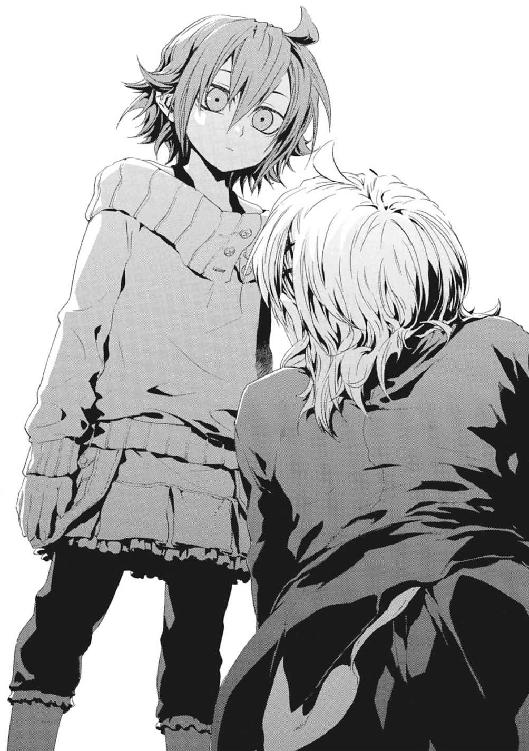
「本当に、舞花ちゃんを魔法使いになんてできるの？ 本当に、もうこんなことしなくていいの？」
きずなは、人殺しになってしまった自分から逃げたかった。王子護に連れられてきた女の子を信じていたのではない。ただ、この運命から降りたかった。きずなだって、よいことをしたかった。友だちを守ってやりたかった。けれど、ピンチを脱するまでの短期間ではなく「そう無限に追い立てられる自然秩序の魔法使いだから、一生そうやって生きろ」と運命づけられるなら、いくらなんでも重すぎる。
「きずななら、再演魔導師をもうひとり作ることだってできるよ。だから、したくないこと、わたしが引き受けてあげる。あのお兄ちゃんの妹だよ。ちょっとくらいのしんどいことくらい、引き受け慣れてるよ」
自分でないほうがこの力をうまく使えると確信していた。だから、ヒーローみたいなものになりたかった仁に、交替してもらえるのが一番なはずだった。彼の妹が、まっすぐにきずなに視線を向けていた。
「ひとりで持てない責任や重荷だって、もうひとり再演魔導師がいたら、軽くなるんだよ」
そのことばで、決心した。
もうひとりでは限界だと、つくづく思ったのだ。
「......おねがい、します」
もはや、舞花の〝文字〟を探して、《神人》のみに手が届くその魔法を使うのに、ためらいはなかった。
──《幻影城》が、揺れた。
誰かの魔法によるものではない。壊れようとしているのではなく、土台が崩壊している最中であるような、立っていられない揺れだった。
水晶の舞台がせり上がり始めた。きずなと舞花のいる場所から半径五メートルほどだけが、他の場所より高く持ち上がっているのだ。そしてなおも、彼女たちの視界は空を飛ぶように上昇していった。騎士たちも、倒れた瑞希も、エレオノールやセラたちも、すぐにみんなゴマ粒のようにしか見えなくなった。
その間も、再演魔術のためにきずなの体は、奇蹟を引き出す〝仕草〟をとり続ける。その連続が、流れる舞いの型のようだ。だが、彼女の右膝の上を貫いた銃創は治ってなどいない。自分の意志では立てなかったのに、動き出した魔法が、その魔法自体を完成させるためにきずなの体を操った。激痛で気絶しそうだった。靴下も靴も、血でどろどろになっていた。それでも、彼女は、魔法の舞踏を止められない。
「ちょっと待って！ 止めて、これじゃ死んじゃう」
頭がくらくらして、もう吐きそうだった。舞花を、魔法使いでない状態から、再演秩序に同調させる魔法が、常識外れに高度なものでないはずがなかった。
魔法を中断しようとしても無駄だった。儀式の進行に合わせるように、《幻影城》が、真っ平らな舞台から水晶の城へとかたちを変えてゆく。きずなたちを載せたせり上がりは、十階建てのビルより高く、地上から五十メートル以上も持ち上がっていた。そして、彼女たちの柱を中心に、半径百メートル以上もある巨大な円を描くように壁が積み上がりはじめていた。
握っていた銃も、足下に取り落としていた。すでにきずなは、魔法を完成させるための道具だった。
「止めないと......死んじゃう」
いつまで魔法儀式が続くのか予想もできなかった。出血多量で死んでしまうのではないかと、寒気がした。体が細かく震えだしていた。それを強引に筋肉の引き締めで止めていたから、全身の疲労でまともに呼吸もできなかった。
魔法が、傷のことなど気にも留めず、きずなに血だらけの右足一本で立ってバランスを取らせた。朦朧として失いかけていた意識が、高圧電流を流されたような衝撃で引きずり起こされた。地獄の痛みから逃げる方法を求めて、《本》を閲覧した。
またたくように、きずなの脳裏に〝過去〟の光景がよみがえった。同じように意識を失いながら魔法を使わされていたときの情報を、再演魔術が検索したのだ。六月に《神に近き者》グレンと戦いになる直前、未来を夢見た。あのときも眠って意識がない間に、未来を破壊するための魔法を、体だけ操られて使わされたのだ。
「なんで......」
きずなは、もう何の意味もない涙をこぼしながら、うめいた。再演大系は、仕草から魔法を引き出すだけだから、術者に意識がなくても魔法は発動する。
苦悶するきずなを、舞花が眉一つ動かさず見上げていた。
「再演大系の秩序では〝未来〟のほうが強いんだよ。再演大系は〝過去〟を操作する魔法だから、唯一魔導師だって、〝未来〟から攻撃されたら一方的に支配されちゃうんだよね。自然秩序自体が、不公平にできてるんだもん」
「なんでそんなことまで......。舞花ちゃん、わたしを、だましたの？」
視界がぐらぐら揺れて定まらなかった。
舞花の服のポケットの奥から、明滅する青い光が漏れてきていた。再演の感覚が、〝それ〟が《幻影城》の《鍵》に似た性質の疑似遺物だと伝えた。神聖騎士団をここに呼び込んだのは舞花で、中から手引きがあったから、それは完璧な不意打ちだったのだ。
「きずなが、自分が生け贄だって気づいてなかっただけ。わたしは、定まった歴史を回収する役かな」
頭が混乱して、どこに落ちるかもわからなかった。
「舞花ちゃん、替わってあげるって、言ったのに」
けれど、きずなにも理解できはじめていた。結局は、彼女が考えなしだったのだ。アトランチスに行った武原仁から、舞花がワイズマンのスパイかもしれないと警告は受けていた。もしものときは少女を敵として見捨てるよう言い含められた。彼ですら聖騎士側の内通者だとは予想していなかった。それでも、きずなに応用力がすこしでもあれば、わかったはずだ。
何もかもが悲しくてたまらない彼女に、きっと頭のよい舞花が教えてくれた。
「きずなが、自分の意志で魔法を使おうとするからだよ。〝未来〟にいる再演魔導師たちと、きずなは、ずっと共存関係にあったんだよ。〝未来〟の魔法使いはきずなを守る。そのかわりに、きずなっていう唯一魔導師を操作して魔法を使ってもらう。最強の唯一魔導師を通すことで、〝未来〟からの魔法は、とてつもなく強力になるから。きずなは、〝未来〟の魔法使いにとって、便利な魔法増幅器だったんだよ」
世界が傾いて二度と平衡を取り戻せないかのようだった。彼女は、聖騎士ベレーノたちを死なせるよりずっと前から、知らないうちに多くの屍を積み上げていたということだった。
「そんなの卑怯だよ。わたし、ずっと、知らなかったよ」
人間などもう見たくなくて、《幻影城》の刻一刻と色合いを変える空を仰いだ。今日一日で、涙が涸れ果ててしまうかと思った。きずなは、本当は、仁に正論など言う資格がなかったのだ。それが、ただ悲しくてやりきれなかった。
洟をすすり上げた。
「未来の誰かが魔法で、わたしをこんなふうに操ってって......。そんなこと言っても、わたしがしたんじゃないですか！ わたし、知らないうちに、どのくらいたくさん......。知らないうちに魔法を使って、そのせいで死んじゃった人のこと、どうしたらいいんですか」
この期に及んで自分のことが最初に来るエゴが、気持ち悪かった。
「きずなはやさしいね。こんなになっても、わたしを殺してやろうとは思わないんだ」
舞花の、痛みを抱えた笑顔には、どこか仁の面影があった。
「わたしたちの世界は、人間を歯車にして動く機械なんだよ。普通の人は、《公館》や社会がその機械の持ち主だけど、きずなや今のわたしの場合は再演大系の秩序だってだけ。そこは割り切らないと、何もかも背負ってたらつぶれちゃうよ」
きずなの体から、一気に力が抜けた。粘度の低い汗が服の生地にしみこまず、さらに体温を奪うようだった。血を流しすぎたせいか、ひどくのどが渇いた。
肉体を制御していた概念魔術の精度が下がっていた。そしてそれは、再演大系という秩序の観測者がきずなひとりでなくなったことを意味していた。歪みのない状態だった舞花が、再演秩序に同調して再演観測者──再演魔導師になったのだ。
おっかなびっくりという様子で、舞花のちいさな手が片手で印を組んでいた。それは再演魔術だった。
「そっか、こんな感じで、この魔法は使うんだね」
そうして、力尽きたきずなの体が、無理やり右足を思い切り緊張させられた。突然の地獄の痛みに、よだれが出そうなほど大きく口を開いて絶叫していた。
「いや、痛い！ やめて、もうやめて舞花ちゃん！ 死んじゃう......」
それでも、きずなはのたうち回るどころか、右足を助けるように、左足の筋力を振り絞って立った。舞花が使った再演魔術で、彼女の体が支配されたのだ。
「助けて、このままじゃ、死んじゃう......」
きずなの右足が踏む床は、血の足跡でべとべとに汚れていた。それでも、きずなを操りはじめた舞花の再演魔術は止まることがなかった。
「いいの？ きずなが死んだら、わたしが、再演大系の唯一魔導師に繰り上がるよ」
〝未来〟の再演魔導師の魔法が舞花を操り、舞花の仕草を通した魔法がきずなを捕獲する。はじめてこの魔法を使った感覚に、なるほどと舞花が納得していた。
「すごいね、この魔法、何やるのも簡単だ。でも、世界検閲なんて、このくらいムチャクチャな力がないと無理か。こんな力があるのに、どうしてきずなはダメだったのかな」
「だれも、この魔法を......正しく使うことなんてできないんだよ」
友だちが言ってくれたことばを、今度はきずなが伝えていた。〝未来〟の何者かからの魔法に支配されて、身体が無理やり動かされていた。相手が、きずなの子孫か、再演魔術師になった舞花の子孫かわからない。それどころか〝未来〟の魔法使いは数え切れないほどたくさんいて、きずなは死ぬまで操られ続けるかもしれない。再演魔術は、〝過去〟をいくらでも改変できる上、射程距離は無限なのだ。
「こんどは......なに......」
きずなの唇が寒さで震えていた。頭が割れそうに痛んだ。これ以上体を好き勝手にされたら死んでしまうと思った。
徐々にコツをつかんできたように、最初は不快そうだった舞花の表情は、リラックスしはじめていた。
「見て、この風景。見覚えあるでしょう」
きずなの首筋が強張り、目は自然に見開かれていた。
「──バベル」
彼女たちをのせた舞台に届きそうなほど高く、円形に周りを囲む水晶の壁が積み上がっていた。その建物を、彼女が忘れるはずもなかった。
「当たり。正しくは《神の門》の召還儀式。──《神》がいないからって、この世界に自然秩序の管理者を直接召還はできないから、まず《真なる神》を呼び込む専用の《門》を作る。神聖騎士団にとっては、三千年前のバベルと、このあいだの《再演のバベル》とで失敗したから、三度目の正直だね」
舞花の体がつくる〝仕草〟の連続は、自然にリズムを作るようだった。〝未来〟の再演魔導師からの支配力にあらがわず、それに乗って魔法を使っているのだ。魔法ではなく、ただ肉体の動きが美しかった。そして、舞花の舞踏にのせて響き渡るように、楽器の音色が聞こえた。聞き覚えがある歌もだ。エレオノールですら、再演の支配に抵抗できなかったのだ。かつて《再演のバベル》では、十一人の騎士とひとりの神音歌手で《神の門》の召還は試みられた。ここには、それを遥かに超える神音魔導師がいた。
「助けて......」
きずなは、足の痛みと嘔吐感と頭痛に苛まれながら、血みどろで踊らされ続けていた。
奇蹟を呼ぶ〝仕草〟の連続が舞いを構成する。〝神音〟の連続が旋律を作る。
再演魔術が、神音の演奏を制御する。神音魔術が、巨大な高度魔法構造体を組み立ててゆく。二つの魔法が、最初から一対だったかのような完璧な調和をかたちづくっていた。
彼女からすべてを奪った事件のやり直しだと思うと、嫌悪と怒りで鳥肌が立った。それでも、きずなの身体はすでに、意志に反して動かされる操り人形だ。
「......もう、こんなのイヤだよ」
軽やかに再演魔術を舞っていた舞花の、動きが止まった。そして、いたぶるようにきずなを見上げた。
「ずっと何もしてなかったから、こうなったんだよ。きずなは助けてもらえることを当たり前に受け取ってたんでしょう。再演魔術で戦うなんて息巻いたんじゃないの？ なのに、自分が死にそうになったら『助けて』なの？」
誰だって自分よりはうまくできると思っただけだ。実際、舞花のほうがずっと立派に再演魔導師らしいことが言えた。
「きずなには、こんな力を持つ資格がないんだよ。誰だって助けてほしいんだ。でも、待ってても何も手に入らないから、こんなにして戦ってるのにね」
わけがわからなかったひとつひとつのことが、解きほぐされて整理されてみれば、すべてがきずなを絶望へ突き落とすかのようだった。
世界中で、誰もが救いを求めていた。だが、この世界に《神》はいない。
「はじめてで、うまくやれるわけないよ」
ただ、やり直したかった。だが、もはや再演魔導師は世界にただひとりではなく、きずなに唯一魔導師の権能はない。
「でも、最高の魔法の素質を自分で手放すのは、問題外かな。世界でいちばん万能だった《神人》にも救えないおバカさんは、誰がやっても救えないよ」
水晶の塔から見上げる空に、巨大な青い光の輪が現れていた。
これが、《神の門》だとわかった。
聖霊騎士《極星を追う者》は、きずながかならず神意にたどりつくと言った。
けれど、聖騎士の《真なる神》は、彼女を救ってくれそうにはとても思えなかった。
†
仁たちが、内部通路を駆け抜けてアトランチスの上甲板にたどり着いたとき、そこに人の姿はひとつしかなかった。
ヘリコプターと報道機材の残骸が、まだ炎をあげていた。テレビ局のスタッフはいなかった。海に投げ落とされたのでなければ、燃えるヘリコプターのそばにある黒いかたまりのどれかが〝それ〟だ。
ただひとりの生きた人間が、居住区から甲板に出た仁たちを振り返った。黒い金属の装甲もなめらかな、ドレス姿の魔女がいた。
グラフェーラ・トリア──《九位》が、フリルに飾られたスカートをなびかせていた。昼間の太陽が、真っ平らな甲板にぎらぎらと照りつけていた。幅五キロメートルの平地を奔る海風は、吹き飛ばされそうなほど強い。
《協会》の地球人類との対決路線を主導する大魔女が、仁たちを振り返った。
「《九位》デアル」
円環世界のイリーズ戦争を勝ち残った王者は、堂々とそこに立っていた。
「余裕かましてる場合かよ。おまえが消えたら、《悪鬼》と全面核戦争をやらかす踏ん切りを、《協会》はつけられない。もう、これで終わりだ」
仁は、だだっ広い真っ平らな足場をぐるりと見渡した。東京の方向に、季節外れの入道雲が現れていた。アトランチスに亡命する前の天気予報では影もかたちもなかった、魔法で強引に作った雲だ。
「口ヲ塞ゲ、下郎。──汝ニ、吾ト言葉ヲカワス資格ナシ」
「ずいぶんな言いぐさね。強盗が押し入ったさきで言うことばじゃないわ」
強い南風をよけて仁の隣に引っ付いていた少女が、傲然と胸を張り返した。イリーズの娘であるメイゼルと《九位》の因縁は深い。
「イリーズノ娘カ。汝ゴトキニハ、世界ヲ背負ウ責ノ重サハワカラヌ。ソノ高サモナ」
「カッコつけても、中身がないからすっかすかなのよ。こんなことして円環世界を滅ぼすつもり？」
かつて神判の場に、罪人と裁判官として対峙したふたりが、流刑地であるここで向かい合っていた。ここが、運命のひとつの集結点であった。
「吾ハ《三十六宮》──円環世界ガ育ンダ、意志ト叡智ト誇リソノモノデアル」
魔法使いの世界において、超高位魔導師とは世界の文明そのものだ。仁は、電磁騎士団対策で持っていた短機関銃を捨てて、スラックスの背中側に差していた神人遺物の《剣》を抜いた。拳銃弾では《九位》の装甲を貫徹できないからだ。
ちいさな魔女の足下に、円環大系の認識の影である魔法陣が開いた。
仁は後ろを振り向いた。
「おい、帰るなよ」
浅利ケイツは、居住区の入り口から外には出なかった。
「私がなぜ命を懸けねばならんのだ」
「おまえ、何しに来たんだ。持ってきた人形の足折っただけじゃねえか。だいたい、人形持ってくるだけなら、おまえじゃなくたっていいだろうが」
すり切れた三十男は、《公館》に人質を取られても、まだ情けない生き様を曲げなかった。
「私が戦っても何にもならぬ」
「必要ナラバ、吾ガ理由ヲ与エテクレヨウ。核爆弾ガ、モウシバシ後、コノ世界デ爆発スル。モウスグコノ世界ハ、同胞同士デ殺シ合ウ核戦争ニ入ル」
《九位》は、魔法使いのわりに政治ができる。だから、本人に気概さえあれば彼女に取って代わる人望すら持ち得る《英雄の弟》を、葬っておく意義を理解していた。
「核攻撃なんて簡単に成功するかよ。だいたい俺たちだってバカじゃない。ちょっとやそっとで、核戦争まで行ってたまるか」
仁の心臓が、胸の奥できゅうと縮んだ。《九位》がアトランチスをあえて選んだ目算に、救いがなかったからだ。
核攻撃を受けたとして、犯人が正体不明なら、この世界の国家は問題を《協会》に押しつけて団結できる。だが、アトランチスなら話はちがう。この島のことは、すでに国際問題として認識されている。特に、各国政府は中身が死の商人ワイズマンだと知っているから、核攻撃の被害国は、緊張関係にある隣国からの依頼を疑う。国際社会のバランスの大転換だとすら思い込めるはずだ。
つまり《九位》は、アトランチスを要塞にしてここから核ミサイルを撃ち、攻撃の責任をワイズマンとこの世界の国家に押しつけるつもりなのだ。
「二十発発射シタガ、充分ナ量デアルカ」
もしも東京だったらと、焼け野原になった大都市を想像して血が冷えた。
「ハッタリだ。そんな時間はなかったはずだ」
「ワイズマンガ設置シタ、ミサイル発射管ヨリ、発射シタ。シバラク前マデ、コノ城ヲ回転サセテイタデアロウ。発射管ヲ城ノ四方ニ設置シテオッタユエ、一方向ニマトメテ撃ツニハ、城自体ヲ回転サセネバナラナンダ」
発射管は用心して使いにくい配置にしていたようだが、《九位》はアトランチス自体を回転させることで、その小細工を無意味にしたのだ。
「どこに撃った」
「教エル理由ナシ。ダガ、大都市ニハ多メニ撒イタ。コレデ駆除デキルノハ、セイゼイ百万ヤ二百万デアロウガ」
核開発から五十年以上、人間たちが憎みあいながらも使えなかったものを、眼前の魔女は躊躇無く撃ったのだ。
「百万人とか、軽く言ってんじゃねえぞ」
全身の血が沸騰しはじめるようだった。
「汚物ヲ焼キ清メテ、責メラレルイワレナシ」
タイムリミットは近い。
だから、仁は、身体のわななきをこらえて、烈風を背負う鋼の大魔女を見据えた。
冷静に、戦力差と開けた空間で戦う状況を考えれば、仁とメイゼルだけでは勝算がゼロに近いと認めざるを得なかった。円環大系の最大の特徴である火力と機動力で、《九位》はメイゼルを圧倒している。
「協力しろ。......どうせこの世界に来たってことは、他に行き場なんかないんだろ。あいつを斃さないと、この世界に魔法使いの居場所はなくなるぞ」
円環大系の超高位魔導師は、機動力を発揮できる広い場所でこそ真価を発揮する。本気で戦闘機動に入った《九位》は、間違いなく拳銃弾よりも速い。魔法消去環境の外では、本来戦ってはならない相手だ。だが、ケイツがいれば、《九位》の想定しない戦いかたも可能かもしれない。
「......前に出るのは貴様だぞ」
「せんせ、撃ってくるわ！」
メイゼルの鋭い声が、仁の思考を戦闘のみに絞り込ませた。
「好きに避けろ!!」
円環魔術との戦闘は、《雷神》との戦いがそうであったように、神速との勝負だ。仁が、メイゼルのちいさな体を抱えて横っ飛びに飛んだ。その刹那が、魔法消去を発動して大規模魔術に備えるか、それともメイゼルの機動力に賭けるかの選択のときだった。
「飛べ！」
メイゼルが磁力で体を弾いて、仁に抱えられたまま上空高く舞い上がった。彼らのいた場所の背後にあった金属が焼けた。
魔法にしては被害がちいさかった。《九位》の手のひらには強力なレーザー砲が装備されている。この武装は、魔法を一切用いていないため魔法消去が効かないのだ。
アトランチスの上空から、戦場を見下ろした。《九位》の姿はすでになかった。内部構造にほどこされていた、《再帰迷宮》による転移魔術の封印が、地上にはないということだった。
「跳躍、できるだけ遠くへだ！」
メイゼルが、一瞬、ためらった後、二射目が来るのだと悟って、顔を真っ青にした。
円環大系の魔法的転移は、視界内でなら完全な瞬間移動だ。次の瞬間、仁たちはアトランチスではなく青い海を見下ろしていた。最低でも五キロメートル以上を移動していた。
そして、閃光と魔炎の奔流が世界を埋め尽くした。元いた場所に、百キロメートル以上も離れた日本列島から観測できる大規模魔術が撃ち込まれたのだ。
仁たちの足の三十メートルほど下で、魔法消去を受けてなお、余波の風圧で大波が立ち、そこからさかのぼって魔法を破壊した《魔炎》が波にからみついた。
超遠距離からの大魔術だった。地上が魔法使いにとって最悪の魔法消去環境であるのは、人間が多数いるからだ。だが、今、この海上で、《悪鬼》は五十キロメートル四方におそらく仁ひとりだ。
空を飛べない仁には、メイゼルが命綱だ。ウール地のダッフルコートの固い感触の中で、しなやかな少女の肩がもぞもぞ動いた。
「お母さまたちの最後の戦いも、こんなだったわ......」
イリーズ戦争の最終局面、神話の大戦に、もしも《悪鬼》がいたらどうなっていたか。何もかわらず踏み潰されたように思えた。最高位魔導師《三十六宮》の実力は、圧倒的だ。
ドレスを翻した大魔女は、はるか遠くで、ただひとり両手を広げて中空に立っていた。
「どうするのせんせ？ このまま突っ込むの？」
メイゼルにもわかっているのだ。正面から魔法の火力で押し勝てると考えるのは、見込みが甘すぎる。
「それじゃ向こうの思うつぼだ。《三十六宮》が待ちかまえてる罠に飛び込んで、生き残るのはムリだ」
円環大系の《化身》である《破滅の化身》は、〝術者自身が存在するという円環〟を位相幾何学的にひねることで、術者の分身を無数に作り出す。この《化身》の圧倒的な火力で迎え討たれては、一瞬で丸焼きにされかねない。
「さっきは、足場のあるアトランチスに立っていたら、超遠距離から大火力魔術を一方的に受けた。今は、おまえを頼って空中戦に打って出たら、魔法消去を封じられてる。飛行魔術を破壊してまで消去を使ったら、動きが止まって、《九位》にとっては撃ちごろの標的だからな」
吹っ飛ばされるような勢いで、この瞬間も仁とメイゼルは抱き合うように空を飛んでいる。風が顔にたたきつけてくるようで、目を開けているのもつらかった。ただ、空が気持ちよく広かった。
「それじゃ、ひっついたまま、ふたりでいつまでも飛んでる？」
ちいさな魔女が、のぼせた額を仁の胸に押しつけてきた。
「......メイゼル、あいつの動きを止める方法はあるか。おまえの世界で、高位魔導師はどんなふうにして敵を拘束してた？」
仁は、ついに戦闘の方針まで、まだ子どもの彼女に相談していた。そうまでしても、勝たねばならなかった。メイゼルも、自然にこれを受けいれていた。
「円環魔導師の戦いだと、敵に動きを封じられたらもう負けよ。強い魔法使いは、自分がそうしたいときしか止まらないわ」
太陽が、ひたすらまぶしかった。
「アトランチスに戻ろう」
「でもせんせ、あいつがずっと海の上にいたら？ 待ってたら、核爆弾が爆発して、たいへんなことになるんでしょ」
仁は、《九位》が戦闘開始直後にアトランチスから離れて派手に戦闘機動したことに、意図を見出した。あの魔女は、仁たちに、戦場は広く、自分が自由だと錯覚させたかったのだ。
「《九位》は、アトランチスを占領したんだ。今みたいに海上にいたら、俺たちに追い払われたのと同じだ。政治があいつを〝あそこ〟に縛り付ける」
「でも──」
「時を浪費するとマズイのは、俺たちだけじゃない。短期決戦にしたいから、あいつは核爆弾の話をわざわざ教えて、制限時間を区切ったんだ」
冷静になるべきだった。《九位》は俗物だ。だから、大物然とした尊大な態度の裏には、むしろ利害計算があるはずだった。
円環大系の魔法陣が、《九位》の足下に、半径一キロメートル近くもの巨大さで広がっていた。魔法消去の影響さえ受けなければ、魔女たちはまさに神に近い力を振るう。
仁は、魔法消去を発動して、《九位》の魔法を焼き払った。同時に、メイゼルが空中で仁たちの体を支えていた魔法も破壊され、自由落下がはじまった。
またも視界が切り替わり、仁は、メイゼルを抱えて床に着地した。魔法的転移で、一瞬でアトランチスの上甲板まで戻ってきたのだ。
放置されて、ずっとぼんやり待っていたケイツが、仁を見つけて怒りだした。
「おまえは......。人に戦えと言ったかと思えば、......何様のつもりだ」
「敵から目を離すな！ いい加減、頭を切り替えろ」
仁は、《九位》がいたあたりの空を指さした。何か光った──と思った瞬間、仁は魔法消去を発動していた。全身を火傷しそうな熱風が彼らを打った。その程度で済んだのは、時間をさかのぼって魔法を破壊する魔法消去の特性のおかげだ。
「くそっ、おまえも、あいつの抹殺対象なんだよ。やるしかないし、やる以上は勝たなきゃ意味ないだろ」
仁の言っていることは無茶苦茶だ。それでも、この戦いに勝ちたかった。この世界を核戦争で焼き払おうとする計画を止めたかった。百万人以上もの人間が死ぬとわかって核ミサイルを発射した魔女を、たたきのめしてやりたかった。メイゼルに刻印魔導師という運命を背負わせた張本人のケツを蹴り上げてやりたかった。
「力を貸してくれ。俺は、あいつに勝ちたいんだ」
「寄るな。私はおまえの友だちじゃない」
最低のタイミングで、仁とケイツの間に銀弦がつながった。
「そうだ。おまえと俺は友だちじゃない。これからもそうならない。おまえと同じ場所で死ぬのもごめんだ。だから、おまえも嫌なら、あいつの動きを止めろ」
似ていることを示す相似大系の魔法弦が、彼らの間を結び続けていた。
「相似弦に免じて、力を貸してやる。だが、図には乗るな。私は、ヤツには近づかんぞ」
格好の悪いことを尊大に言うことにかけて、ケイツの右に出る者はない。
「せんせ、消去止めて！」
警告通りに消去を停止するのと、メイゼルの正面で七色の閃光が花火のように弾けるのは同時だった。《九位》が放ったレーザーを、ちいさな魔女が電界を直接操作して光導波路を作ることでひん曲げたのだ。電気は円環魔導師にとっては《魔力》だ。超高出力のレーザーを放つために《九位》が腕に高めた電圧を、少女が感知したのだ。
「よくやった！ それさえ防げるなら──」
仁は声をあげていた。《九位》から、今、離れて勝負をつける二つの手だてを両方奪ったからだ。さっき放たれた大火力の魔法が、ひとつめの手だった。だが、アトランチスごと撃沈したら占領した意味が無くなるからギリギリの出力で撃った一撃は、仁の魔法消去を完全に突破できなかった。ならばと、二つ目の手、魔法消去で止められないレーザーに切り替えたが、メイゼルに防がれた。つまり、仁かメイゼルのどちらかを接近戦で墜とさなければ、遠間からの射撃は時間のムダだということだ。
「ヤツのほうから突っ込んで来るぞ！」
ケイツは、微妙にわかっていないようだった。厳しい戦闘から逃げ続けてきたこの男に、敵を斃すための勘がはたらくはずがないのだ。
だから、仁はケイツを突き飛ばすと、メイゼルを横抱きにして床に倒れ込んだ。
高位の円環魔導師を相手にしたとき、間合いなどまったく安全をはかる要素にならない。仁の首があった位置を、刃の風が通り抜けた。
「離れてろメイゼル！」
仁は魔法消去を発動し、《剣》で、足のあるであろう位置を横薙ぎに払った。顔を上げると、そこにドレスを翻した黒い装甲の魔女がいた。結い上げた長い髪を振り乱して、すでに右腕に装着した刃渡り約六十センチメートルの剣を振り上げていた。
仁が持つ神人遺物の《剣》は、形成魔術で普段は鉄棒のかたちをしている。それが、魔法消去を発動したときのみ、形成魔術を破壊されて黒い《剣》の姿を取り戻す。《遺物》の剣は決して折れず、その鋭さと重さで豆腐に包丁を入れるようにあらゆるものを切断する。
だが、転がったまま《九位》の剣を受けたとき、仁は振り下ろされた打撃と床の間で押し潰されるかと思った。それほど鋼の大魔女の一撃は重かったのだ。
「機械化してるのに、人間レベルしか腕力がないはずないよな」
虫けらを叩き潰そうとしているかのように、黒い装甲の魔女が何度も剣で斬り下ろしてきた。仁は、背中と肩が砕けそうになりながら、なんとかそれを受け流そうとした。
「くそ、しつこいんだよ！」
仁は、《九位》の下腹に右足をかけ、思い切り前蹴りで蹴った。だが、《九位》をよろめかせることもできなかった。まるで固い地面を蹴ったかのように、彼の体だけが平らな床を滑った。《九位》の体はまったく動かなかったのだ。
「おまえ体重何キロあるんだよ」
勢いを利して体を回転させて膝立ちに立ち上がる。追撃に突っ込んできていた《九位》が、仁が起きざまに繰り出した斜め上の斬り上げに反応した。三歩、間合いが離れる。
仁の黒剣の切っ先がかすめていたか、布地をたっぷり使ってふくらんだ豪奢なスカートがズタズタになっていた。だが、右手の手甲に装着された銀の長剣は、刃こぼれしていない。
「......そっちの剣も、神人遺物か」
かつて仁の《剣》に右手を斬り飛ばされた《九位》は、神人遺物の刃を受けられる武器を用意してきたのだ。
「一流ノ魔法使イハ、二度、同ジ失敗ハセヌモノダ」
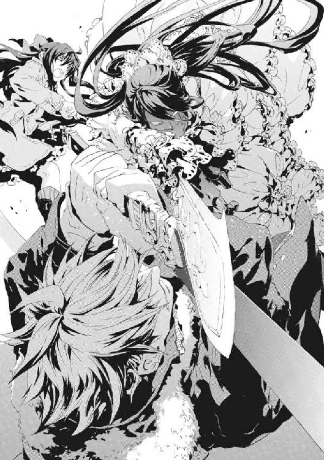
「俺に、ことばをかわす資格はなかったんじゃなかったのか！」
仁は、防戦に回りたくなくて、敢えて正面から打ちかかった。
接近戦ですら苦しい勝負なのはわかっていた。ただ、全身を機械化したこの《九位》との接近戦は彼がやらねば、メイゼルでもケイツでも、まず生き残れない。
真っ正面から、《九位》が仁の上段の打ち込みを、たやすく腕力と体重で受け止めた。そして、そのままなぜか彼女が自分の剣の刃を《剣》に滑らせはじめた。
仁は、恐怖に咆哮し、飛びずさっていた。《九位》のレーザー砲は手のひらに仕込まれている。彼女は、斬り合いの最中にレーザーを好きなときに撃てるのだ。このために剣は、手に持つのではなく手甲に取り付けられている。
「めんどくさいやつだな、おまえ」
以前、武蔵野迷宮で戦ったときに接近戦で勝てたのは、《九位》が《剣》を受けられる武装を持たなかったからだ。
仁の渾身の一撃を、機械化魔女が、軽々と右手の剣だけで受け止めた。《雷神》ですら腕力は生身の人間のそれだったが、今回は重機と殴り合いをしている気分だった。ちいさい子どもが片腕だけでおとなに振り払われるように、仁は吹っ飛ばされて床に転がった。追撃のレーザーの射線から、かろうじて身をかわし、起き上がる。
《九位》のドレスの右腕が、炎をあげていた。攻撃を受けたのではない。レーザー砲の廃熱で装甲の温度が上がりすぎて、服の自然発火温度を超えたのだ。服全体に燃え広がる前に、大魔女がみずから袖を引きちぎった。
「汝、吾ノ衣装ハマダ燃エテイルカ」
豪奢なフリル飾りの左腕と、しなやかな漆黒の右腕の非対称が、目が覚めるほど鮮やかだ。
「左腕のレーザーも使うと、露出が増えて色っぽくなるぞ」
「痴レ者ガ！」
機械音声に、怒りがこもっていた。左腕ではなく装甲をさらした右腕のレーザーが、再度、仁を狙った。感情的になってわずかに単調になった射撃をかいくぐって、胸を狙う。だが、仁の袈裟懸けの一刀を、《九位》はあっさりかわした。
仁が体勢を立て直すより、《九位》がレーザーの砲口を向けてくるほうが速い。それはつまり、まず命がけでかわすよりないということだ。手を向けられただけで、レーザーの火線に入って死ねる。神経をやすりで削る殺し合いになれば、仁のほうが詰み手に至るのは早い。
「消去を切りなさい！」
空から声が響いた。仁がそれに従うと同時に、仁の蹴りでは一ミリも動かなかった《九位》が、よろめいた。背後から強烈な魔法を喰らったのだ。
ぐらりと黒い装甲にかためた体が、仁のほうへ倒れ込んできた。相打ちで押し潰されても構わない覚悟で、消去を再発動して《剣》を黒刃のかたちに戻して、《九位》の心臓を突いた。惜しいところを、ドレスの鎖骨あたりの布地をえぐり取っただけでかわされた。
《九位》が上甲板に転倒した。自動車事故でも起こったような重量感のある高音がガンと響いて、床の金属材がかすかにくぼんだ。
両手のレーザーの薙ぎ払いを必死でかわして、距離をとる。
仁が魔法消去を停止すると、まだ立ち上がれない《九位》に、巨大な水の槍が撃ち込まれた。重い音を立てて、再度アトランチスの床に《九位》の体が叩きつけられた。ドレスからフリルが花のように散った。
「《沈黙》よ、魔法消去を使うときは、まわりの魔法を巻き込まぬようにしてもらいたいものです」
頭上からかけられた声を仁は覚えていた。《協会》の反主流派、因果大系の高位魔導師である《逆天》ユリア・シュバールだ。本来、浅利ケイツが相似魔術による転移で直接連れてくるはずだった魔法騎士が、はるばる海を越えて飛んできてくれたのだ。
「悪かったな。仕留め損ねた」
そして、見上げて啞然とした。現象の因果関係に《魔力》を見出す因果大系の高位魔導師は、高度な魔法を安定して使うため、因果巨兵と呼ばれる魔法機械を構成する。身長五メートルにおよぶ巨人のかたちをした半透明の因果巨兵が、五体いた。やってきたのはユリアだけではなかったのだ。彼女は、部下を四人も連れてきていた。
「因果大系、応報騎士団が序列二位《逆天》ユリア、ならびに従騎士四名、《九位》殿に挑戦いたします」
水で作った半透明の体の巨人の胸から、白い甲冑の騎士が呼ばわった。その肌も鎧も純白のユリアの胸から、銀弦が一直線にのびていた。アトランチスの居住区の屋根へと、線は繫がっていた。その終点は、神殿ふうの屋根飾りの陰に隠れていたケイツの、外套のポケットの中だ。ケイツの持っていた人形とユリアが似ていると、相似大系の銀弦が示していた。
「ずいぶん人がふえたのね」
メイゼルもその隣から顔を出した。居住区の屋根は、レーザーの流れ弾から退避する場所として適切だった。
《九位》は、今やユリアと部下四人、仁とメイゼル、そしてケイツの八人に包囲されていた。そして、他にも参戦者がいるなら、更に戦力比は《九位》に不利に動くことになる。
「この城で、これだけの人数に包囲されるのは感慨深いだろ。おまえが仲間を誘ってイリーズを囲んだ、イリーズ戦争の裏返しだからな」
仁からの挑発に、《九位》が立ち上がった。まったく無傷だ。ユリアの魔法で濡れたドレスから、水分がレーザーの射撃で装甲にこもった熱で蒸発し、陽炎があがっていた。
「自惚レルナ。汝ラゴトキ、アノ戦イニ集ッタ奇蹟ノ王者タチノ、足下ニモ及バヌ」
「おまえは、政治で負けたんだよ。敵をひとつの大きな力にまとめさせないように、やりすぎるつもりのヤツこそ、前もって政治で味方を作っておかなきゃならない。それに失敗したから、この地球でおまえが消えて困るヤツは、もう《協会》の主流派だけなんだよ」
イリーズ戦争も同じ構図だ。わずかな味方以外のすべてを敵に回したら、結局は乗りこえられない。一時は生き延びられても、かならずジリ貧になって敗れてゆく。
上甲板を強い風が吹き荒んでいた。
「スグニモコノ《地獄》ノ腐ッタ歴史ゴト焼カレル《悪鬼》ガ、今サラ道理ヲ説クトハ。死ヲ恐レルナラ、這イツクバッテアガメヨ」
《九位》は、傲然と言い放った。
魔法使いとしての戦闘経験が最も豊富なのは、魔法騎士団の幹部である《逆天》ユリアだった。
「本気でくるようです。離れてください」
五体の因果巨兵が、同時に空中に浮かんで《九位》から距離をとった。
「メイゼル！」
仁が呼ぶと、少女が魔法的転移で来てくれた。ケイツまでしがみついていた。そのまま構わず仁と三人で、空高くまで一気に移動する。同じ円環魔導師であるメイゼルが、その距離が必要だと判断したのだ。
「見セテクレヨウ。コノ戦イハ、決シテイリーズ戦争ノヨウニハ終ワラヌ」
アトランチス甲板の、《九位》の姿が百以上に増えた。鋼の大魔女が、《破滅の化身》で分身を増やしたのだ。そして、百以上の《九位》が、右手に集めていた光を一斉に放った。百発の光弾が、肉食生物のように身をうねらせて突進してきた。メイゼルは問答無用で転移した。二度、三度、と長距離の転移を続ける。そのたびに、十キロメートル以上跳躍したはずが、光弾がすぐ鼻先まで迫っていた。
「魔法でオトリ作って！ ひとりじゃなくて三人ぶん」
メイゼルにせっつかれて、ケイツが外套の内側に手を突っ込んだ。そして、いつもコートの裏側にじゃらじゃら吊している剣を、三本取り出すと放り投げた。次の瞬間、仁たち三人と剣がそれぞれ相似弦で結ばれた。概念魔術で風船に空気を入れたように内側からふくらんだ剣が、そのまま仁たちそっくりに変形した。
視界が、太陽が地上に降りてきたような閃光にふさがれた。おとりに引っかかった光弾が爆発したのだ。威力の八割以上が《魔炎》に砕けても、まだこれだけの威力を残していた。
必死で逃げる間に、アトランチスがちいさく見えるほど遠く離れたというのに、《九位》の声が、あたりじゅうから響いた。
〈《魔力》塊ニ、魔法構造体ヲ仕込ンデ、設定シタ敵ヲ自動デ追ワセタ。──コレハ、《氷爪王》ヘンデリクノ魔術ダ。到底、威力ハ本物ニオヨバヌガナ〉
日本列島とアトランチスの間に作られた人工積乱雲がほどけたか、低高度の空に、白い絨毯を敷いたように雲が流れていた。《九位》は、仁にはわからない技術で、雲をスピーカーにしているのだ。
〈コノ概念魔術ハ、《皇統の薔薇》ベルアリスンノ得意トシタモノダ〉
耳鳴りがした。その瞬間、仁は魔法消去を発動していた。全身が、見えないハンマーで殴られて衝撃で内側に縮んだようだった。メイゼルが背筋を弓なりに反らして、意識を失った。
何も聞こえなかった。魔法でスピーカーを作り出せるなら、円環大系の超高出力をもってすれば、人間が耐えられない音量の音響兵器に転化できる。魔法消去で消しきれなかった音が、仁の聴覚を殺し、メイゼルを気絶させたのだ。
消去された飛行魔術を、意識のないメイゼルが構成しなおすことはできない。だから仁たち三人は、引力に引かれて自由落下していた。高度五百メートル以上から海面に墜落して、生きていられるはずがない。なのに、音がないだけで奇妙に現実感がなかった。
消去で動きが封じられれば、《九位》は機動力の要であるメイゼルを狙う。わかっていたから、仁は落ちながらかろうじて少女をかばえた。彼の胸の中心が、ことばどおり爆発した。息が出来なかった。見下ろすと、シャツの胸の真ん中に、一度見て忘れようもない、レーザーで撃ち抜かれた痕が穿たれていた。致命傷だと一目でわかった。
メイゼルにしてやれることがないかと仁はただ腕の中の少女を────────────────────────────────────────────────────────────────────────────────────。
──────仁は薄目を開けていた。風がごうごうと鳴っていた。そして空が、どこまでも青く広がっていた。
仁は、胸に《九位》のレーザーで大穴を空けられて、即死に近い状態だったはずだった。だから、なぜまだ生きているのかと思わず胸を見下ろした。肺と脊柱をえぐって背中の向こう側の景色を見通せる角度だった貫通創が、消失していた。破壊されたはずの鼓膜が音を伝えていた。
「なんでだ？」
声を出した途端に、咳をした。シャツに血がしぶいた。気道に血が入っていたのだ。メイゼルはだいじょうぶかと、腕の中にあった熱を確かめた。少女は目を閉じてぐったりしていた。呼吸するたび上下する華奢な肋骨が、彼女が生きていることを肌の感覚で教えてくれた。
「まだ、俺にもしてやれることがあるんだな」
瀕死だった間もメイゼルを抱きかかえて離さなかったのなら、自分にしては上出来だと思えた。
「私に感謝するのが最初だろう」
黒いコートの浅利ケイツが、仁を見下ろしていた。相似大系の魔法医術は、健康な人間と自分を相似にすることであらゆる不調を治す、おそろしく高度なものだ。
「他人を巻き込んでおいて、勝手に死ぬな」
仁が意識を回復させるまで海に墜落せずにすんだのも、ケイツのおかげだった。
「悪いな。恩に着る」
「死ぬならやつを倒してからにしろ。私の投資を無駄にするなよ。絶対だからな」
「うざ......、いや、助かった」
水平線の向こうで巨大な水柱と《魔炎》があがった。《逆天》ユリアと部下の騎士たちが、《九位》と戦っていた。
「メイゼルはだいじょうぶか？ 意識が戻ってないぞ」
「知ったことか」
仁は、気を失った人間特有の現世を離れたような表情を、ただ愛おしんだ。できることなら眠らせてやりたかった。だが、《九位》と戦うには、彼女の力が必要だった。
起こすときをあと一秒、あと一秒だけと自分に言い聞かせて引き延ばしていると、少女の唇が動いた。
「こういうときは口づけして起こすものよ、せんせ」
ほっとした。彼女の顔をもっと正面から確かめたくて、軽い体を抱き寄せた。
「俺は王子じゃないし、おまえ、悪い女王役じゃないか」
彼女を、もう明日にせまった小学校の文化祭に、出させてやりたいと思った。
「そうだったわ。......そうね」
円環大系の魔法陣が、少女の足下に広がった。磁力が体を浮かせる感触がして、仁の体は押し上げられる。あめ色の瞳が、いたずらっぽく彼を見上げていた。
「でも、魔法使いとして戦うことに必死だったあたしを、こんな悪い子にしたのは、せんせなのよ。せんせと手をつないでるから、あたし、お母さまのカタキと戦ってるのに、あいつがちいさく見えるの」
「私は、もう役目を果たしたのではないか」
浅利ケイツが、相当嫌な予感がしているのか、逃げ腰になっていた。
「いいや、もうひとはたらきしてくれ。《九位》はおまえの能力を舐めてる。おまえが俺の致命傷を治せると踏んでたら、先にトドメを刺しに来たはずだ。おまえの実力は、あいつにとって誤算なんだ」
戦いがうまいわけではないケイツだが、撤退だけは下手ではない。
「どう見てもこっちが劣勢だろうが。バケモノとの殺し合いなんて、頭のおかしいやつだけでやれ」
「底の見えたたったひとりと戦うのと、世界中に追いかけられ続けるのと、どっちが最悪か選べ。あいつの時間は、イリーズ戦争で止まっている。あんな手段を選ばない俗物が、感傷や誇りだけで〝過去〟の再現をやるか？ 核爆弾みたいな手っ取り早い技術のコピーばかりしてたから、新しい戦い方のアイデアが浮かんでないんだ。あれが、あいつの限界だ」
《九位》は、イリーズ戦争を再現するように、他の超高位魔導師の魔法を使ってみせた。他人の魔法をここまで研鑽した裏に、この世界に漂着して以来、自分だけの技術を作れていないことが透けていた。《九位》は、無敵にはほど遠い。
「くそが......。おまえが死んだら、私は撤退するからな」
「俺が死んでから考えてくれ。まずは《逆天》たちと合流しよう」
メイゼルが、仁が何も言わなくても魔法的転移で跳躍してくれた。彼がそうしてほしかった通り、海面に戦闘の余波で大波が立つ、戦場のまっただ中まで跳ばしてくれた。
《九位》が使った魔法の威力のほどは想像できた。東京まで四百キロメートルほどの場所で、五メートル近い大波が立つ威力の魔法だ。消去なしで受ければ、数十万トン重級の超大型タンカーでも一撃で轟沈しかねない。
「どこだ！ まだ生きてるか」
仁は、戦場に《九位》の姿を求めて視線を走らせる。二百メートルほど下、荒波の海面に鋼鉄の大魔女が立っていた。
「《沈黙》......、仕留メタハズデアッタガ。......アノ傷ヲ回復サセタカ」
《九位》は、円環魔導師としては珍しく、ある程度の攻撃は身体で受け止めてしまう。そのおかげでドレスはズタズタで、すでに背中など大きく開いて、なめらかな黒い装甲が丸見えになっていた。
「せんせ、あのひとたち、海の中に追い詰められてる。このままじゃ殺されちゃう」
電気の操作に長ける円環大系ならば、水中の標的に対して、エネルギーを拡散させずに電撃を流すことすらたやすい。今、ユリアたちのいる海中は地獄だということだ。
メイゼルの足下に魔法陣が浮いた。だが魔法は放たれない。ちいさな魔女は、《九位》が海中に流している電撃から《魔力》を拡散させて、脱出自体はユリアたちの自力にまかせる手段を選んだのだ。
だから、仁も、大魔女が一番嫌がりそうなところを踏んだ。痛む胸で思い切り声を張り上げた。
「いい格好だな！ 《九位》」
《九位》が、上空に浮かぶ仁たちへ首を向けた。
「コノヨウナ駄犬ト生死ヲトモニセネバナラヌトハ。イリーズノ娘ヨ。品位ヲ失ウトハ哀レ」
「ドレスを着られるってことは、元の体型とあんまり変わってないんだろ！ 改造される前からの趣味なのか、それとも金属の身体になってからか？」
単なる時間稼ぎだ。だが、機械化して耳がよいからこそ、彼女は侮辱を聞き流せない。
「吾ヲ挑発シテイルツモリカ。吾ニハ責務ガアル。汝ラト、クダラヌ時間ヲスゴシテハイラレヌ」
《九位》の足下で魔法陣が大きく開いた。
仁は、この装甲の姿にされてから彼女が一度も聞いたことがなさそうなことばをかけた。
「意外に乙女だな、《九位》！」
破れたドレスをまとう魔女は、仁へもう視線を向けなかった。
これが時間稼ぎだとわかっているはずだった。だが、《九位》は《破滅の化身》を展開しない。円環魔導師は、精神的に揺れている間は《化身》を極力作らない。かつてメイゼルの身に降りかかったように、《化身》間で意志の統一がとれなくなるからだ。渾身の力で蹴ってもこゆるぎもしなかった鋼の大魔女が、わずかに揺れたのだ。
「改造されてからずっと、〝魔法以外のこと〟をあきらめてきたのか。鏡を見て、自分が醜いとでも思ったのか。はじめて改造された姿を見たとき、おまえは何をあきらめたんだ？」
自分がゲスに思えた。だが、今までだって、このくらいのことばをたたきつけて敵を釣り上げてきた。
「円環世界で最高位の魔法使いになったのに、他の《三十六宮》が誰もやらないような苦しくて危ないことを続けているのはなぜだ。イリーズのことなんか忘れて、もっと自由に生きてよかったって、おまえにもわかってるはずだ。おまえは、〝イリーズお姉様〟を振り切れなかっただけなんだよ！」
おそらく仁は、女王が奥底に秘めていた聖域を土足で踏んだ。だから、平板な機械音声なのに、《九位》の返答からは、隠しきれない怒りが丸見えだった。
「──不埒者ガ」
ひとりの人間を傷つけて作った数十秒が、海中のユリアたちには細い活路だった。
高波が、みずからかたちを変えて指をそなえた手のかたちをとった。波の手の根本に、手首が構成された。水が集まって更に二の腕と肘を作った。そうして巨大な〝それ〟のかたちをみずから構築しながら、海に縦穴を空けてゆく。膨大な海水が、〝それ〟を作り上げるために吸い込まれたのだ。穴は、すでに深さ約十五メートル、直径も十二メートルを超えていた。戦車を一両たたきこめる大きな縦穴の底に現れていたのは、上空からでも巨大さがうかがえる人型戦車だった。
華美に飾られた半透明の装甲を持ち、身の丈より長い槍を捧げた〝それ〟の胸部には、五人の魔法使いが浮かんでいた。単純な自然現象を複雑な動きに変える、魔法の導管が、血管のように〝それ〟の全身に張り巡らされている。
魔法使いと数え切れないほど戦ってきた彼も、初見の技術だった。ユリアたち五人の因果魔導師が、力を合わせて一体の巨大な因果巨兵を作ったのだ。
注意をそらしてしまっていた《九位》が、実力のわからない〝それ〟との接近戦を嫌って急上昇する。
海から生まれた巨神が、長槍を小脇に抱え直して《九位》を狙った。
〈放て、《大逆天王》ッ！〉
重力使いであるユリアの気合いが、いかなる音響効果か、大きく響いた。合成因果巨兵《大逆天王》の槍の先端から、白い力線が天へと奔る。反動のように噴き上がった《魔炎》が、荒海に波紋のように広がった。
〈重力炉心より、動力路を完全開放。内部障害率、三・四一。修復魔術正常作動中──〉
本来、ここまで高度な巨大構造を運転するのだから、機体の外に機体状態を観測する役の因果騎士がいるのだろう。ユリアの従騎士たちが、合成因果巨兵の身体状態を外部へ報告し続ける。
〈給水脈、十五番から二十番、魔法消去の逆流により損傷限界。新たに百三十番から百三十五番の給水脈を海面に挿入──〉
メイゼルは、同じ魔法を使うからこそ、戦果を正確に見て取った。
「当たったけどダメ。《自己円環》よ」
円環大系には、〝自分自身という円環〟を保持し続ける強力な防御魔術がある。だが、《自己円環》には、打撃を受けると歪むため術者が修復し続けなければならないという弱点がある。だから、仁たちの眼前の合成因果巨兵の射撃は、狙う位置を変えていない。《九位》の動きが完全に止まっているのだ。
メイゼルも、たぶん仁と同じ〝勝機〟を感じていた。だから、彼よりも少女が声を発するほうが早かった。
「撃ち続けて！ その攻撃、ビミョウに不安定だから、かえって《自己円環》以外の方法で止められないんだわ！」
高周波の異音と《魔炎》をまき散らし、槍が空を貫き続ける。波間へと、何百本という太い管が大樹の根のように伸びて、大量の水を吸い上げ続けている。大雨が降りだしていた。天候が変わったのではない。《逆天》ユリアたちの合成因果巨兵の巨槍の正体は、音速を遥かに凌駕する超高速の水流なのだ。魔法の水圧カッターから、重力と強風で剝がれた海水が、雨になってあたりじゅうに降り落ちていた。
ホースで水を頭からぶっかけられているような雨量で、仁たちの服はずぶ濡れだった。勝負はもう終わる。
〝悪人〟であるはずなのに、腹の底がざわついた。今この顚末を、《幻影城》にいるきずなが《本》を通して観測していると思えたからかもしれない。銃を持たせた彼女が、自分の行く末として手段を選ばない彼を見るとしたら、それは悲しいことに思えた。
「もう知らんぞ」
嫌がるケイツを引き連れたまま、一気にメイゼルが高々度まで魔法で瞬間移動した。土砂降りの灰色に包まれていた視界が、青くどこまでも開けた。
細かいことを指示しなくても、息を合わせてメイゼルは《九位》を追跡してくれた。仁は、少女をどこへ導こうとしているのかとおののき、彼女の華奢な肩をつかむ。一度、二度と、魔法での位置移動を重ねるたびに、確実に雲の色が変わっていた。高度千メートルを超えて、極限まで細く絞り込まれた水の槍の穂先にようやく追いついた。
《自己円環》は外界の拒絶であるため、打撃の反動すら無にしてしまう。地上のあらゆるものを簡単に切断する超高速の水流を、《九位》の身体がぴたりと受け止めていた。
《九位》の背中に当たった超高圧の水流が、天へ水が落ちる逆向きの大瀑布を作るように白いしぶきをあげて散っていた。大量にバラ撒かれた水滴が、霧となり雲を作っていた。冴え冴えとした晩秋の空は、はるかに太陽を頂き、その光が屈曲して虹を作っていた。それは、まるで高空に現出した光の泉だった。
だが、見とれている時間はなかった。
「上だ。水流に対して、《九位》を盾にできる位置から仕掛けるぞ」
朝の張り詰めた空を、さらに高くへと、メイゼルは魔法で跳んだ。《九位》が、なりふり構わず飛行魔術で移動をしかけた。今、身を守っている防御魔術を仁の魔法消去で破壊されれば、超高出力の水圧カッターで胴体を両断されかねないからだ。《九位》の移動に追随して、海上の《逆天》たちが正確に水の槍の軌道を変える。
弾けた水滴が一点を中心に飛び散る様は、高空から《九位》を直下に見ると、黒い花心を中心に、巨大な白い雲の花が咲いているようだった。
「せんせ、行くの？」
轟々とすさぶ風の中、メイゼルが、仁のジャケットをつかむ。仁は、最後になるかもしれないから、ここまで運んでくれた少女と視線をかわした。
戦いたいとメイゼルは言い続けた、やめられないと仁も戦いにしがみついた。
そんなふたつの人生が寄り合ったのだから、もはやことばはなく、修羅場にはふさわしくない微笑がこぼれた。
彼らの位置は《九位》の直上二百メートル。仁は、メイゼルから手を離し、引力に身を任せる。空を真っ逆さまに自由落下しながら、魔法消去を発動した。飛行魔術と《自己円環》を破壊され、《九位》の身体が水圧で超高速で突き上げられてきた。一瞬で百メートル以上吹っ飛ばされてきた彼女と、墜落する仁の間の相対距離は五十メートルを割っていた。これを見越して距離の余白をとったのだ。
仁の手の中で《剣》は本来の黒刃のかたちを取り戻していた。《九位》は水流にもみくちゃにされ、一切の魔法を失いながら左手のレーザー砲を彼へと向けた。
交錯──。
腕が二本、オモチャのように回転して空中を飛んだ。仁の左腕と、《九位》の右腕だ。
自動車事故のような衝突の衝撃で、彼の右腕と肩は砕けていた。気の遠くなるような激痛の中、絶叫していた。
「ケイツ！」
相似大系の魔法治療は、健康体の魔法使いと相似にすることで異常を一瞬で回復する。魔法消去を解除した仁と、ケイツを相似弦が結んだ瞬間、失われた左手が生えていた。
水流に勢いは二度と戻らなかった。一瞬の魔法消去で、ユリアの合成因果巨兵がついに破壊されたのだ。《魔炎》に燃える空を自由落下する仁の身体に、上向きの力がかかった。メイゼルが、仁に魔法で磁力をはたらかせたのだ。その意図が、彼にもわかった。
──彼を拾い上げるために移動してくる余裕がないのだ。
頭上で爆発音が轟いた。魔法消去を停止したことで、《九位》が自由になったのだ。腕を一本失った程度で、自己保存の技術を極めた超高位魔導師は止まらない。
そして、メイゼルにとっても、《九位》と決着をつける切り札は仁なのだ。
仁は、メイゼルが《魔力》を帯びさせた水滴の雲に、精密に《魔力》制御されている靴で着地する。その落下の勢いを利用して、磁力の反発で仁の足がスケートボードに乗ったように白雲を滑った。電気を逃がしたい雲海が、足下で、稲妻の青白い舌をのばす。雲耀に乗って、空を切り裂くように《魔炎》の海を突き抜けて上昇してゆく。
〈《悪鬼》ノ力ヲ借リテ、円環世界ノ希望ヲ踏ミニジルカ。《悪鬼》ニ、汝ガ生マレタ世界ヲ売ルツモリカ〉
《九位》の電子音声が、またしても雲から響いた。仁を一度葬った魔法の音響兵器が、彼らをとらえようとしていた。
だが、メイゼルが、《九位》が帯電させたその《魔力》を逆用して、雲海のスピーカーを一瞬で変形させた。次の刹那、一方向へ向いた音波が真昼の月へと放たれる。だが、少女は痺れる大気の中で歯を食いしばり、無傷だ。音源を変形させることで音の伝わりかたを絞り込み、音量が著しく下がる安全地帯を作りだしたのだ。
必殺の魔術をやりすごした少女が、腹の底から叫んだ。
「ずいぶんケチなこと言うのね。勝つことも負けも、お母さまのカタキを取ることだって、そう！ 自分で生きて選んだものは、ちょっとあずけたり持ち合ったりするくらいじゃ、ぜったいなくなったりしないのよ！」
魔法消去の《魔炎》でオレンジに色づいた魔法の雲は、仁が滑走するスロープだった。足場がさっき魔法スピーカーが形成されたことで安定したものになったから、メイゼルも容赦なく磁力で背中を押してきた。息もできないほどの速度で、乱反射する虹の光と《魔炎》の陰を突き上がってゆく。
ちいさな姫君が、この世界で学んだことをまるごとぶつけるように、熱を、光を、音を地力で上回る《九位》へと叩きつけた。《九位》は、イリーズ戦争の魔術を即興で打ち破った才能のきらめきに、明らかに動揺していた。きっと神判のとき、それでも世界を愛してあげると、あどけない魔女はこうして両手を広げた。
「ねえ見て！ この世界にひとりぼっちでやって来て、あたし、ふたりで戦いはじめて、それから何回もせんせとぶつかって、ついにあんたをつかまえた！ この世界に墜とされて、感謝してるの!!」
《九位》が、背後から宙を滑って迫る仁に気づいた。奇蹟なき者が、自由に空を駆ける光景に、仮面の女王が瞠目した。
「《悪鬼》ガ、空ヲ──」
魔法消去を発動しながら、仁は足場を踏み切り、全身の力を《剣》にこめるように身体をひねり──。
「ちがうんだ。ひとりじゃ空は飛べない」
《九位》の左腕が、回転しながら宙を舞った。
「ふたりだからできるんだ」
腕を切断された彼女の左肩が、レーザーが負荷をかけていたか、爆発して火を噴いた。
鋼の大魔女は両腕と武装を失い、魔法消去に対抗する能力を完全に失った。つまり、魔法消去を受けた状態で攻撃されれば、《九位》はなすすべなく死ぬということだ。装甲すら、両腕を切断された傷口という大きな弱点を晒しては、もはや頼りにできない。
「勝負ありだ」
†
そのとき、中央合同庁舎２号館の一室で、十崎京香は一報を耳にしてうつむいた。薄暗い部屋の中、椅子から立ち上がれなかった。
今、アメリカ西海岸の都市が核攻撃を受けた。大陸間弾道弾を警戒して上空を観測していた網をすり抜けて、ミサイルが人口密集地の上空で爆発したのだという。
伝えられているだけで、被害を受けたのは、ロサンゼルス、サンフランシスコ、ラスベガス、シアトル。被害規模は不明だった。難を逃れた人々の証言から、西海岸の主要都市は壊滅状態であると予測されていた。
京香は、執務室の外の廊下を走るいくつもの足音を、ぼんやりと聞いた。
人工衛星が《九位》に破壊されている今、世界中の国家は、目隠しをされたのと同じだ。この核攻撃の犯人を特定できない。地球諸国家には、疑心暗鬼に陥る要素があった。
報復攻撃を行うかどうかに関して、アメリカからの連絡はない。すでに撃たれているのだとしても、日本からはその核ミサイルの数と目標地点がわからなかった。
できるのは、悪い予想だけだ。
アメリカは、被害規模によっては、太平洋の覇権を失うくらいならロシアと中国に重点的に核を撃ちこむほうを選ぶ可能性があった。ロシアと中国は、広大な版図を持つ自国が核戦争という状況に弱くはないと判断し、狂気に乗るかもしれない。核ミサイルが飛び交いはじめたら、その照準は、アメリカやヨーロッパだけでなく、日本にも向く。そもそも、元凶であるアトランチスは、東京から四百キロメートルしか離れていないのだ。
そのときは、核戦争後の〝落としどころ〟の調整のため、世界中の社会が、麻痺した機能を回復するのに手一杯の状況に追い込まれる。つまり、あらゆる場所が核攻撃にさらされる。
京香にできることなど、もはやない。この核戦争の後に、魔法使いと人間が共存できる可能性があるとも思えなかった。《公館》の魔法使いを出して、魔法で撃ち落とそうにも、魔法消去が邪魔をする。この世界は、奇蹟なき《地獄》だ。
あと何分生きていられるか、飽和したような時間、時計を眺めた。
執務室のドアがノックされた。どうぞと返すと、警備局の副局長である清水健太郎が顔をぬっと出した。ここだけの話だがなと前置きした上で、ひとこと言ってドアを閉めた。
「どうやら核が、北京に落ちたぞ」
彼が情報をくれたこと自体、理屈に合わなかった。ともに仕事をした京香に、最後に狂気から足抜けをする猶予時間をくれたのだ。かつて腹を刀で刺されたとき以上に死を実感した。今日のうちに東京に核が着弾する。彼女が守ったものは焼き尽くされる。
だが、今さら人間に戻って何をするだろう。もう人質も必要ない。浅利ケイツの脅迫に使ったメイドを、釈放してやるくらいの偽善になら手を染められるのだと思いついた。
実務家だからこそ、完全な詰み手だと割り切れた。
だが、京香がまずしたのは、携帯電話を手に取って、連絡が入っていないか確認することだった。数秒後にも核爆弾できれいに焼かれるかもしれないのに、ひどく滑稽だった。
アトランチスできっと戦っている幼なじみから電話が来ると、思っていたのだ。ヒーローみたいになりたかった仁から、奇蹟みたいな話が聞けると、どこかで期待していた。
だから京香は、自分の〝落としどころ〟を決めた。人質を釈放はしない。理性はすでに諦め感情は絶望していた。それでも、まだ戦い続ける者がいる以上、非情な氷の事務官であることを果たし抜くのだ。
そして、万感の想いをこめて、京香はひとつ、深く息をついた。
席から立ち上がった。ただ、終わるなら、窓のない部屋に閉じこもってではなく、空を見たかったのだ。アルコールがほしい気分だった。身近な男のことを愚痴れる相手がいれば最高だった。
「向いてないくせに、あきらめが悪いから、まわりの人間まで勝負から降り損なうんだよね。こんなになって、きっと、まだやるつもりなんだろうね」
奇蹟が起こると信じてなどいない。なのに、愚かに走る続ける人間に願いを託すことは、やめられない。

戦いは終わった。
高々度から、《九位》を逃がさないため魔法消去を発動し続けた仁たちは、なんとか無事にアトランチスに着地した。《逆天》ユリアが、空気のクッションを何百層も作ってくれたおかげだ。
そして仁たちは、アトランチス上甲板で、《三十六宮》たる最高位魔導師に《剣》を突きつけていた。
《九位》の、ここを要塞にして大量生産した核爆弾を世界中に撃つ計画は潰えた。《協会》の挑戦も、指導者を失うことでひとまず決着する。だが、すべてが終わったわけではない。
真っ平らな上甲板を、海風が洗っていた。
《剣》を首に突きつけられた《九位》は、まるで勝利したように堂々としていた。
「汝タチハ、敗北シタ」
あながち間違いではないから、仁は、焦りをぬぐうことができなかった。核爆弾がもうすぐ爆発するということばが正しければ、もう時間切れかもしれないからだ。
「聞かせろ。核攻撃を受けるのはどこだ」
「モハヤ止メラレヌ。攻撃ハスデニ成ッタ」
それは、仁たちこの世界の住民同士が不信から殺し合う、全面核戦争まであとわずかかもしれないということだ。魔法使いが歴史の表舞台に顔を出しても、国家に真の友などいないことは変わらない。
「言え、どこだ！」
かわいたのどを絞って、思い切り叫んだ。
すべてが無駄になるかもしれなかった。だが、仁たちの戦いは、これまでも不毛の荒野をゆくようなものだった。
この世界へ戦争を仕掛けた魔女の返答は、嘲弄するような電子音声の笑い声のみだった。
暗い怒りが、腹の底を焼いた。
「それでも、おまえの命運はここで尽きた」
《協会》との交渉は無意味だ。何より、主流派の最高意志決定者がここにいる。
仁が空中で彼女に止めを刺さなかった理由はひとつだ。魔法世界の政治の重要人物であることを考慮し、反主流派の《逆天》ユリアに確認をとっておきたかったからだ。
「《協会》反主流派としては、こいつの助命は望まないんだな」
因果巨兵から降りた純白の女騎士は、最高権力者の一角への丁重な態度を崩さず、しかしはっきりと言った。
「私たちが《協会》の主導権を取り戻すには、主戦派に失脚いただかねばなりません。ですが、主戦派の旗印である御方が、戦死なさったという成り行きでも、問題はありません」
仁は、すでに着陸しているメイゼルを振り返った。
ちいさな魔女は毅然として言った。
「あたしのこと、気にしてくれてありがと、せんせ。......でも、グラフェーラが迷惑かけたのはこの世界でなんだから、つかまえたら、この世界のものよ」
「吾ハ責務ヲ負ッタ者トシテ、コノ世界ニ投資シタノダ。コレヲ罪ダナドトハ認メヌ」
《九位》は、一打ちで首が落ちるこの期に及んでも、引かなかった。仁には、この機にメイゼルが故郷に帰ったとき敵になる者を排除しておくことは、魅力的だった。
「だったら、ここで終わらせよう」
仁は、《剣》を押し込めば《九位》の仮面を縦一文字に割れる位置に、黒刃を押しつけた。どんな魔法使いも、魔法消去を受けながら脳を破壊されれば死ぬ。
別れを引き延ばす気はなかった。メイゼルに、叔母である《九位》が苦しむ姿を見せたくはなかった。だから、《剣》の剣尖の位置を定め、勢いをつけて一気に縦に──。
「待て！」
仁を止める声があった。
視線だけで返した。浅利ケイツが、口を半開きにして手を向けていた。
〝似ているもの〟同士を結ぶ相似大系の《魔力》弦が、ケイツと仁を結んでいた。
魔法消去が、また勝手に停止していた。仁は消去を再開した。そのはずなのに、銀弦が消えなかった。
「まだ見えていないのか！ ここまでやったこいつを、他にどうできる」
消去を失って、《剣》まで鉄棒のかたちに形成されなおしていた。ずっと逃げ腰だったケイツが、ここで状況をひっくり返そうとしたことに苛立った。最近、ときおり勝手に停止することのあった魔法消去が、最悪のタイミングで止まった恐怖が、仁を駆り立てた。
ケイツは押し黙った。それでも銀弦は消えなかった。
仁と、この男の境遇は、確かに似ていた。仁が《公館》の命令に違反して解雇されたのは、夏の核テロのとき、メイゼルを人質に取られたせいだ。だが彼は、最後には、王子護を斃して国城田を死なせることで、事件を終わらせた。
なのに、身内を人質に取られながら、このすり切れた男は「殺すな」と止めたのだ。
仁は、〝似ている〟と認めるのが恐くて、魔法消去を発動した。今度こそ相似弦は消えた。なのに鋭さを取り戻した《剣》の切っ先を、《九位》の額に押し込めなかった。
風が荒んでいた。《九位》の仮面とにらみ合った。悪党同士、似合いの対面だった。
「ドウシタ？ スベテ終ワッタトイエド、吾ノ首ヲ獲ルクライノ陶酔ハ許サレヨウ」
仁は、どうしようもない世界の中で役割を果たしながら、今よりもマシなものになりたいと渇望した。だから、わかってしまったのだ。仁は、「殺すな」と言えなかった。ヒーローにあこがれながら、最後までそれを〝やり通した〟ことさえなかった。正しいと信じたことを押し通す意志の強さがなかった。人を殺して辻褄を合わせてきた自分よりも、殺すなと言えたケイツのほうが、かつて願ったものに近いのだ。
だから、これまでも相似弦が結ばれたのは、きっと、本当はお互いの情けないところが感応したのではなかったのだ。捨てきれなかった〝悪人〟の見果てぬ夢が、逃げ続けた男が保っていた尊い魂に感応しただけのことだ。本当に何かを救える人間は、このケイツのほうであるかのようだった。
「ここからは俺たちの問題だ。口を出すな」
仁は、この場の主役であるはずの《九位》へと吐き捨てていた。武原仁は、誰かを黙らせることが仕事だった。だから、メイゼルに期待し、きずなに銃を手渡した。けれど、彼は、下に見ていたケイツに気圧されていた。鼻先に、より立派なものを出されて、彼なりによかれと行ってきたことへの自信が揺らいでいた。
「そうか、俺は......」
《幻影城》で舞花が指摘したとおりだ。仁は自分が〝悪人〟だと自覚しているのに、決して〝悪〟を許せない。この決定的な食い違いが、社会が核戦争で崩れたと挑発されても、変わらず彼を戦いに駆り立てている。仁の存在自体が矛盾にならないのは、自分以外の〝悪〟を見つけて戦っている間だけだからだ。
「せんせ？」
《九位》と因縁深い彼女が、あめ色の瞳で仁を見上げていた。緊張で、手にじっとりと汗がにじんだ。
「だいじょうぶだ。俺は、もう迷ってなんかいない。むずかしいことだから、責任をとる人間が、何が〝正しい〟かをはっきりさせないとな」
メイゼルに《九位》の生き死にを預けたくなかった。責任を彼女に負わせたくなかった。えこひいきでも、誰の人生にも無条件に守られる時期があってよいはずだった。
「せんせの苦しいことを、自分だけでひとりじめしないで。せんせ、あたしとふたりで戦うって言ったでしょ」
あたたかい感触が、背中の腰に近い場所に触れた。背の低い少女が、後ろから額を押し当ててきたのだ。体温を感じていると、甘えてほしいと言われている気がした。それは錯覚ではない。
「おまえは、やさしいな」
ことばにすると、本当に甘えているようで泣きたくなった。
「せんせは、堂々としてなきゃダメなのよ。〝力〟ってのは、どんなときでも胸を張ってることだもの」
彼女は、かつて、魔法を、細く傷ついた身体を支える杖にして立っていた。硬くてもろい宝石のように、きらきらと煌めくようで、同時に儚かった。けれど、今はメイゼルという少女のほうが、彼女の魔法より強くしなやかだ。
「それで、ふたりっきりのときに、せんせは、おもいっきりあたしに屈服するの。せんせの痛いとこ、ぜんぶあたしが踏みつぶしたげる。苦しいってカンジたら、あたしの顔を思い出してコウフンできるようにしたげるから」
嗜虐的な少女が、仁のことを必死に守ろうとしてくれていた。メイゼルは、アパートを追い立てられてからアトランチスにやって来るまでも、ずっと気を遣ってくれていた。
亡命のときのインタビューで、話を混ぜ返したのもそうだ。どのみち仁が小学校に戻ることはほとんど不可能だった。だから彼女も居場所を壊した。半年かけて作ってきた人間関係に未練がないはずがない。六年一組の教室には心配してくれる友だちもいるのにだ。
「おまえに、俺は、逆に守られてたんだな」
猛烈に恥ずかしかった。そして、彼女がまぶしかった。助けてやりたいと思った。お互いを助けようとする関係ができていたことが、仁はおとなでメイゼルはまだ子どもなのに、ただ胸にあたたかかった。
「今ごろ気づいたの？ せんせ」
彼女が背中から、仁の腰をぎゅっと抱きしめるように腕を回してきた。だが、仁のほうは《剣》を握って、切っ先を敵に突きつけている。だからこそ、仁は言った。
「でも、学校にはちゃんと戻るんだ。世界がどんなになっても、おまえがおまえらしく生きられるようにしてやるから」
彼女の横に立っているために、仁は、おとなとして役割を果たさなければならない。
だから、仁は、《九位》をにらみながら告げた。
「俺は、おまえを殺さない」
世界の秩序は核攻撃で無茶苦茶になる。《九位》の死体ではこれをおさめられない。戦犯が人知れず闇に葬られたのでは、核攻撃の犠牲者遺族は誰を恨めばよいかわからない。
仁にも、イリーズ戦争とメイゼル裁判が、立場を逆転させたように思えた。
「死ぬかわりに、この世界で、おまえは《悪鬼》と同じ人間として、《地獄》の法律で裁かれろ。おまえが、世界を納得させる生け贄としてメイゼルを裁判したように、今度は、被告席におまえが立つんだ」
《九位》は、他の魔法使いを煽るように声をかけた。
「汝ラ魔法使イハ、ソレニ異論ナシヤ。コレガ最後ノ機会デアルゾ」
仁は、《雷神》をただ返してしまった失敗をもう繰り返さない。今このとき、〝勝ち〟へ状況を落とすのだ。
「おまえが誇りを購いたいなら、そのための代価を払え。おまえは、何もかもを失って負けた。だから、おまえが持っている身柄を、俺たちの法で裁くことで支払ってもらう」
彼女が、仁を嘲笑った。
「ソレデハ終ワリニナラヌ。新タナ戦イノ火種ヲ作ルニスギヌゾ」
「俺たちを舐めるな！ 奇蹟がなかろうが、おまえが思ってるほどバカじゃない」
この世界が発展させた、奇蹟なきがゆえの社会制度あっての着地点が、見出せるはずだと信じた。
はじめて戦争指導者として《悪鬼》の決まり事で裁かれる魔女が、顔を上げて、新しい道を呪った。
「──愚カ。歴史ヲ見ヨ。魔法世界ト折リ合イヲツケルコトスラ失敗シタ愚者ガ、恐怖ニ追ワレナガラ、何ヲ裁ク。災イノ詰マッタ箱ヲ開クニ同ジ。《地獄》ヲ滅ボスノハ、汝ガ引キ金ヲ引ク、コノ争イデアル」
この世界の住民は、人口と生活圏をふくれあがらせる中、魔法使いと共存できず闇へと追いやった。この歴史自体が戦いの発火点だ。《九位》の言うことは真理なのだ。
正しいことはいくつもある。だからこそ、勝負は〝落としどころ〟があってこそ勝敗がつく。そして、これが、仁がはじめて自分で設定した〝勝ち〟の構図だった。
「俺は〝アトランチスの治安担当者〟として、おまえを、テロリスト集団を率いての施設への無断侵入、および殺人の現行犯で逮捕する。今日アメリカで爆発した核ミサイルとの関係が明らかになれば、おまえの身柄は国際法廷に引き渡され、今回の戦争を主導した戦争犯罪者として裁かれることになるだろう」
仁は、〝アトランチスの治安機関〟を勝手に名乗った。アトランチスが《九位》を自衛のためとらえたということにすれば、この《三十六宮》を、「ここを襲撃して住民を殺した犯罪者」という扱いで、治安活動として拘束できるからだ。《悪鬼》に逮捕されて裁かれるという醜聞が、魔法世界での《九位》と主戦派の社会的地位を本当に失墜させるかは、ユリアの意見を聞きたいところだった。
だから仁は、刃を突きつけたまま、この場の証人たちに確認をとった。
「《逆天》ユリア・シュバール、我々アトランチスが捕縛したこの正体不明のテロリストの風貌は、《九位》に似ているように思える。悪いが、《協会》に、この魔法使いの身元を照会してもらえないか」
《逆天》ユリアが、心底驚愕したように、目を見開いた。そして、瞑目して数秒考えた後、見え見えの猿芝居に乗った。
「わかりました。他人のそら似でしょうが、まさか《三十六宮》たる《九位》殿が、このようなところで捕われたならば、《協会》を揺るがす大醜聞です。私の知る限り、ここ一万年の《協会》史には、類例がない事態です」
仁は、ケイツに、京香も納得させられる退出の理由を持たせた。
「ワイズマン警備調査会社の魔導師、浅利ケイツに、日本政府への連絡を依頼する。携帯電話で写真をとって、テロリストとして彼女を逮捕したと伝えてくれ」
この解決は、アトランチスの治安機関という仁の立ち位置自体から、すべて噓で固められている。だが、王子護が《九位》を社会的に抹殺する共犯者になれば、バレない。アトランチスという社会が、仁の後ろ盾になる。彼女に失脚して欲しいユリアや調整官ベルニッチたち《協会》の穏健派勢力が、犯罪行為があった証人になる。王子護には、商敵の身柄を外交のカードとして利用しない理由がない。
ユリアが、《協会》への使者として部下のひとりを戻らせた。彼女自身は残りの部下とともに居住区に入るという。つまり、これから《九位》を追い落とす証拠と証人を集めるため、施設内の電磁騎士を掃討、拘束するのだ。
「私は、こういうあくどいことに荷担するのはまっぴらです。......ただ、主戦派のお歴々には、よいクスリとなりましょう」
「どのみち、まわりに迷惑をかけたおして、虚像でつくったアトランチスだ。王子護だけが利用するのも不公平だろう」
ケイツは、近くに居たくもないとばかりに、理由ができるとすぐに去った。
この成り行きも、王子護が敷いたレールの上かもしれなかった。だが、虚像しかないアトランチスによって、世界は魔法使いの存在を知った。魔法使い問題の暗い部分に関わり続けた仁には、《九位》が戦争犯罪者として国際社会の前に引き出されることも、ひとつの進歩に思えた。
そして強風に煽られる上甲板は、仁たちと《九位》だけになった。他のすべてが去っても、仁とメイゼルと敵だけは、厳しい場所に残り続けるかのようだ。
メイゼルのことだけは、どうすれば勝ちか、何をしても正解に近づいた気になれなかった。
「ごめんな。おまえも巻き込まれるのにな」
仁の背中に顔を押しつけたままだったから、少女の表情は見えなかった。
「せんせは、あたしのこと考えて、こうすることにしたんでしょ。でも、いいの？ アトランチスの治安担当者とか、勝手に言ったら、途中で抜けられなくなるでしょ。今度はガッコウもきっとクビよ」
「そのときは、そのときだ」
そうして、仁は痛みを抱えてまだ笑えた。この世がどんなに変わっても、確かなものがここにあると思ったのだ。
「前は、『おまえの人生を貸してくれ』って言ったけど、悪いな、こんな調子じゃ、もう返してやれなくなった」
メイゼルは至福の瞬間を味わうように、仁の背中にもたれかかってきた。少女の吐息が、シャツにしみこんで仁の肌を蒸らした。
「あたし、前はね、ショウジキ、せんせのこと、夢みたいなことばっかり言う人だって思ってた。でも、せんせは、けっこうりっぱな男の人よ。あたし、ちゃんと、せんせが、殺しちゃダメだって言い続けてたことも、魔法使いの責務だって変えてやるって言ってくれたことも、覚えてるから。......だからね、これでいいの」
ちいさな魔女が仁の背中に顔を押しつけたまま、洟をすすり上げていた。まるで彼女が仁にとっての〝世界のよき半分〟で、彼女がいるから世界を信じられるようだ。何かを決定的に間違えているのかもしれなかった。けれど、それでも構わないような、奇妙な昂揚があった。
王子護が世界を騙したアトランチスというペテンを、今、仁が《九位》をとらえたことが決定的なものにした。魔法使いと《悪鬼》が入り乱れることになる新世界の、歴史の一ページを作ってしまったのだ。迷ったこころがあげる悲鳴など、押し殺して前進するしかない。
ただ、仁たちと向き合う《九位》は、冷徹な世界が作った彼らの鏡のようだった。
「汝ハ、ヤハリ、イリーズノ娘ダ。汝ハ、神判ノ場ニテ、魔王ノゴトク恐レラレル役ヲ受ケ継イダハズ。......ソレスラ、色ボケテ、スベテ捨テルカ」
メイゼルの熱が、仁の背中から離れた。
「あたし、ほしいものはガマンしないで、ぜんぶ手に入れるの。それが、あたしにとっての魔法使いだってことなの。捨てるだなんてカンチガイしないで」
「ダガ、多クノ者ガ死ンデイル。円環世界ノ慟哭ヲナグサメルニ足ル報酬ヲ、誰カガ払ワネバナラヌ。汝ノ母ガ力ヲ与エタ〝普通ノ魔法使い〟ドモニモ、汝ニモ、力ガアルナラ、勝チ取ルタメ魔法使イラシク世界ニ挑戦スル責務ガアロウ」
《九位》の非難は穴だらけだ。そもそもイリーズ戦争を泥沼化させたのも、指導者である彼女たち自身からだ。すくなくともメイゼルに責任を押しつけるのは筋が違う。
だが、あどけない女王は、《九位》の正面まで歩み寄った。そして、たたいても手が痛むだけの鋼鉄の頰を平手で思い切りひっぱたいたのだ。
「あたしやお母さまのことが、憎いって、きらいだって、はっきり言えばいいわ！ 他のだれかだとか、世界だとかなんて言い訳にしないで、本気で憎いことや苦しいことをぶつけ合うだけで、きっとお母さまだって満足だったのに！」
気丈なメイゼルが、顔をゆがめて、泣いていた。叔母のグラフェーラは、それでも彼女にとって大事な思い出で、記憶に刺さったトゲなのだ。少女の興味の中心は、社会ではなくいつも個人にある。だからこそ、相手を屈服させられたかどうかが重要なのだと、好意を寄せられている仁は思う。
ドレスをすべて失った鋼の大魔女の身体は、慎ましい胸から締まった腹へかけての曲線は清純で、腰まわりも装甲材なのにかわいらしい。仁は、無骨だと想像していた《九位》の裸身が女性らしいことに戸惑った。イリーズはそれでも義妹の身体を美しく作ったのだ。そして、彼女も〝お姉様〟の記憶がしみついた身体を再改造していない。
「自惚レルナ小娘。汝ゴトキ、イリーズノ足下ニモオヨバヌ」
《九位》は、メイゼルを眼中に入れなかった。
「吾ガ泣ク理由ナシ。汝タチハ、スデニ敗北シタ。事実ハ動カヌ」
仁たちは、核爆弾が着弾したと《九位》から聞いたにすぎない。ここから見えない以上、東京にはまだ落ちていないが、いつすべてが焼き払われても不思議はないのだ。
「逃ゲズトモヨイノカ？ ココハ、カナラズ核攻撃ノ目標トナル」
そのとき、《九位》の脅しにつられて空を見上げたメイゼルが、「あっ」と気の抜けたような声をあげた。
猛烈に嫌な予感がして、仁も振り仰いだ。今や積乱雲が完全にかたちを失いつつある、蒼い空に、白い針のようなものが薄く見えた。
高空から急速に地表へ向けて降下しつつある〝それ〟が何なのか、悟った。
──核ミサイルだ。
倫理と正義の及ばない〝果て〟が、ここにあった。だが、これまでも、こういう極限にいつ直面してもおかしくなかったのだ。
地球を、業炎と狂気に包もうとしている魔女が、極限の問いかけを発した。
「コレデモ、魔法使イト《悪鬼》ガ共存スル世界ヲ創レルツモリカ？」
視界に映るミサイルが爆発するまで、何秒ある？
†
倉本きずなは、《幻影城》から再演魔術の《本》を通して多くのものを見ていた。
《九位》との戦いも、魔法消去で塗り潰された部分以外は観測できていた。そして、魔法消去のない場所を飛ぶ何十発という核ミサイルもだ。
最初に爆発した二十発を呼び水に、世界中からミサイルが発射されていた。通信衛星と、偵察衛星を失っても、各国政府には通常戦力の動きくらい察知できている。そして、隣国が防護服を用意しているようなこともだ。きずなには、《協会》、《連合》、神聖騎士団、魔法使い集団の諜報網を通して、あらゆる情報が入ってきた。
そして、それは今や再演魔導師となった舞花も同じだった。
「なつかしいなあ。こんな感じで、核爆発止めようとして、わたし、死んだんだ」
《幻影城》内部に自動的に再び構築された、塔のような構造物の頂上で、彼女たちは向かい合っていた。きずなの右足は、傷口より下は感覚がなかった。力を込めたら根本からもげてしまいそうで、彼女は座り込んでいるのがやっとだ。
置いていた狙撃銃を杖にした。何かしなければいけないと、ただ見ていたら絶対に後悔すると思ったのだ。銃床を血まみれの床について立ち上がる。
「舞花ちゃんは、どうして、見てるだけなんですか」
舞花が、武原仁にどこか似た顔で、破滅への秒読みをただ見送っていた。あのミサイルは、人間の居住圏に近づけば魔法消去のせいで魔法で撃ち落とすこともできなくなる。
「前は、わたしが殉職しても、何も変わらなかったから。......だったら、二回目は、しんどくても一回目の失敗を生かしてうまくやらなきゃ」
きずなは、ふらつきながら、右足に力をかけないよう引きずって、激痛に耐え続けた。彼女を駆り立てたのは、たぶん本物の怒りだ。舞花をひっぱたいてやろうと、一歩近づいた。
「うまくやるってなんですか！ ひとりで持てない責任や重荷も、もうひとり再演魔導師がいたら軽くなるんじゃなかったんですか」
まだこんな力が残っていることが不思議だった。まだこぼれる涙が残っていることが、かえって苦しかった。
ちいさな舞花が、最初から噓をついていたことが、切なかった。仁にどう説明しようかと思うと、つらくてたまらなかった。
「最初っからこのつもりで、武原さんに近づいたんですか。どうして、こんなことできるんですか」
「きずなは今、自分が最低のどん底にいると思ってるんだろうね。それで、わたしを憎んで、わたしが悪いってことにしたら、ぜんぶよくなると思ってる。わたしもそうだったよ。悪いお話を考えて、それを身代わりにしてたら、自分はもうこれ以上はひどいことにならないって思いこもうとしてた」
静かに、淡々と事実を告げるように、暗い話を舞花は口にしていた。
「でも、最低の下にあるのは、いっつも、更にこれ以下の最低なんだ」
彼女は、笑えない冗談で無理やり笑おうとしているようだった。その最低を静かに受けいれたような目が、きずなの知る武原仁の面影に重なった。だが、ひとつだけ、〝悪人〟を自覚して荒野を歩む自罰的な彼とちがった。
「この世界は《地獄》だから、神様が必要なんだよ。人間のことをちゃんと見てくれる《神》様がいて、魔法使いは、はじめて自分のためでなくて人のためにはたらける。そうやって、どうしようもない世界は、正しく回れるんだ」
きずなの指は、銃を握りしめたまま強張っていた。裏切られた事実よりも、ウソをつかれ続けていたことが、身を切られるようだった。兄妹そろって、本当に大事なことをきずなには何も教えてくれなかったのだ。
「〝敵〟に勝つためならこのくらいのウソ、お兄ちゃんだっていつもついてるよ。命がかかってるんだもん。だれだってそうするよ」
自然と奥歯を、きしむほど嚙みしめた。怒りが、出血で冷え切った胸の奥で爆発しそうなほど脈打っていた。
「えらそうな顔して、このろくでなし！ 人に好き勝手言ったくせに、神様だとか、自分だって大事なことは全部他人まかせで」
開きなおると、後から後からことばがわいてきた。
「最初から〝敵〟のつもりでやってきたから、好き勝手やってたんじゃない。家の手伝いもしなかったよね。......結局、武原さんと同じなんだよ。自分で生活をつくらない人が、世界をつくるとか言って、好き勝手やって！ 何もしないよりずっと悪いよ」
きずなは、この企みを止めようと魔法に願った。再演魔術が彼女の身体を操って、杖にしていた銃を一挙動で投げ上げて構えさせ、躊躇なく引き金を引かせた。きずなの魔法が舞花の防御魔術と衝突して相殺し、放たれた弾丸がただまっすぐに敵を目指して飛んだ。
舞花の頰が、浅くえぐられていた。額を撃ち抜いたはずの弾丸がそれたのだ。舞花の再演魔術は、きずなの魔法なしで正確な射撃ができる状態ではない右足から、再演の支配を解除したのだ。
「ひどいなあ。きずなは、お兄ちゃんとちがって、子どもの姿をしてても撃てるんだ」
射撃の反動で苦痛にもがくきずなから、舞花が距離をとった。そのまま軽い足取りで、再構成されたバベルの頂上のへりへと近づいた。
「でも、さすがに、さっきなったばっかりじゃ、きずなに魔法で勝つのはムリっぽいね」
舞花がためらいなく、水晶の塔の欄干の上に立った。塔の高さは五十メートルを超える。
「きずなに利用されて無駄死にさせるの、かわいそうだから、みんな連れてくね」
そのままきずなには理解できないほど鮮やかな手際で、彼女は消えた。きずなは、《本》で検索してようやく、これが舞台に残っていた《鬼火衆》に舞花自身を引き寄せさせて塔から出て、聖騎士たちに集団魔法的転移をさせた結果だとわかった。
〝普通の高校生〟だったきずなには、細かい魔法を組み合わせて狙った効果を出す方法などとっさにイメージできない。だから、いつも概念魔術で、無理やり結果を作っている。だが、《公館》の専任係官だった舞花には豊富な知識と経験があり、無駄に高度な魔法を使う必要がない。
舞花のことばどおり、《幻影城》の舞台から、千騎以上いた聖騎士の生き残りが消えていた。連れて行かれなかった魔法使いがいるのかいないのかもわからなかった。もう、目がかすんで、地上のちいさなものが生きているのか死体かすら判別できなかったのだ。
今にも意識が途切れそうだった。きずなしかいなかった。ここから、《本》を通して感知できる何十発という核ミサイルを、迎撃できるのは、もう彼女だけだ。
きずなは、頭上高くに浮かぶ巨大な魔法陣を仰いだ。それに近づくと光が不安定になるかのように、視界に虹色の影がちらついた。これが、きずなのはじまりでありたぶん終わりでもある、《神の門》だ。
神聖騎士団の呼ぼうとした《真なる神》の気配が、《門》の向こうにあった。人間を救う自然秩序などというものが本当に存在するなら、それをおぎなってくれる《神》がすぐここにあった。
《神の門》の向こうにいる何ものかに、世界にやさしくあってほしかった。
地面よりひどく高い《バベルの塔》の頂上で、きずなは仁に教わったとおり銃を構えた。息も絶え絶えで、視界はぐらついた。けれど、魔法が、かなえてくれるはずだった。
「わたしの魔法、おねがい、全部やっつけて。みんなを助けて......」
銃を握ったまま、すがるように《本》に願いを押しつけた。再演魔術が、死にかけている彼女の身体を操る。
《幻影城》が揺れた。魔法構造体が動いていた。きずなの魔法が、自動修復したばかりの神人遺物を操作していた。
巨大な何かに衝突したように、不意に、《幻影城》にすさまじい逆向きの加速がかかった。立っていられず、きずなは転倒した。足場自体の大きな動きに耐えきれず、塔が激しい縦揺れを起こした。頂上を支えている下部の構造が崩れたのだ。
こうなるのがあたりまえのように、きずなの足場は安定しなくなった。
起き上がれなかった。だから、寝転がったまま魔法の感覚でミサイルの行方を追った。
さっきよりも鮮明に、《世界》が見えた。再演大系が魔法消去に弱いせいで虫食いだらけだった《本》が、完全なかたちに近づいていた。
魔法使いを表す〝文字〟がいくつか変化し、きずなの感覚から、空中を飛んでいるミサイルは消えた。地上を助けられたのだと思うと、彼女の人生にも意味がある気がした。
「......よかった」
再演魔導師がふたりに増えて、彼女は唯一魔導師という最高の適性を失ったはずだった。なのに、干渉力が逆に強くなっていた。だから、世界中の国から、続けて撃たれようとしている何百という核ミサイルまで、感知できてしまった。
「おねがい、みんなを守って。みんなを守るために、やっつけなきゃいけない敵を、おしえて......」
判断を、彼女は魔法に預けた。概念魔術が、奇蹟を実現しようと彼女の身体を操る。だから、自分の意志では指一本動かない極限状態でも、きずなの身体が、壊れかけた操り人形のようにギクシャクと動いた。
《本》が検索され、魔法消去がつくる虫食いの中、一点だけ〝敵〟を斃すチャンスがある場所を見つけた。
五分ほど前のアトランチスの上甲板に、〝改変のターニングポイント〟はあった。この核戦争を導いた張本人である《九位》が、両腕を落とされて、討伐者たちに取り囲まれていた。浅利ケイツと、武原仁の間に、似ていることを示す相似大系の銀弦が結ばれていた。
そして、そこからほど近いアトランチス居住区の入り口に、拳銃を持った黒衣の円環魔導師が潜んでいた。かつてのワイズマン狩猟魔導師中隊の生き残り、《死神》ベルナーを、再演魔術は支配していたのだ。仁は、この人物に対して完全に無警戒だ。人間である仁を殺すには弾丸一発でよかった。頭に当たって脳が吹き飛べばどんな治癒魔術でも回復できない。
だが、きずなは「みんなを守る」魔法を発動させたはずだったのだ。血でも吐きそうな不快感が、倒れたままの彼女の頭を内側から揺らしていた。再演魔術が、みんなを守るには、武原仁を殺せと指示していた。
正しいかどうかは関係なかった。すでにはたらきだした概念魔術を止めねばならなかった。
「なんで？ おかしいよ......」
途切れる集中力を必死で繫げて、仁を助けるため、《本》から概念魔術の途中停止の方法を探る。きずなは体感時間を圧縮する方法を学び、無理やり開けた作業時間でこの概念魔術の全手順を見直した。
使った覚えのない魔法が、不自然にはさまれていた。きずなの概念魔術が、何者かに干渉されていた。再演秩序は〝過去〟に変化をおよぼすから、彼女の魔法に割り込むことも不可能ではない。〝未来〟からの攻撃に対して、相対的に〝過去〟に位置するきずなは無防備なのだ。
ドンと、足下から衝撃が突き上げて、きずなの身体は投げ上げられた。一メートル以上も浮かんで重力で床にたたきつけられ、彼女は勢いで欄干まで転がって背中を打ち付けた。左半身に感覚がなかった。見るからに関節がない場所で、腕が折れていた。
「......止まっ......た？」
きずなが抵抗して未来からの干渉力が弱まったせいで、彼女の身体を守る魔法に限界が来ていたのだ。〝未来〟から操って魔法を使わせる増幅器であるきずなが壊れて、再演魔術は維持できなくなった。
仁の魔法消去が復活した。だから、きずなの魔法では、消去に阻まれて彼がどうなったか見えなくなった。
「なにしてるの。〝未来〟には、わたしだっているんだよね。わたしなのに、どうしてこんなことまでさせるの？ 武原さんが死んで、どうなるっていうの」
未来からの干渉を受けたことは、これまでにもあった。それでも、地下都市で一度あったような〝未来の自分〟からの干渉だと思えば、ガマンできた。けれど、今やそう自分へ言い聞かせてきたことすら、得体の知れない未来から誘導された結果のようで、悔しかった。
冷たい床の上で、全身が止めようもなく震えた。きずなにとって、仁は、認めたくなくても〝大事な人〟だった。
「ああ、うああぁぁ、......ぅあぁあ」
嗚咽が、のどから漏れていた。
何をやっても悪い方へと流れてゆくようだった。
発射を止められなかった核ミサイルが、何の抵抗もなく超高速で都市へと迫った。
太陽のように、《神の門》は《幻影城》の空間の頂上に虹色の輝きを揺らめかせていた。
「......人間を......救ってくれる神様なんだよね。......救ってよ」
きずながつぶやいた声は、かすれていた。倒れた身体が、限界を超えて勝手に痙攣を起こしはじめていた。吐く息が熱っぽいと思ったら、当たり前に嘔吐した。横を向いていなければ、自分の吐瀉物で窒息死していた。力などとっくに尽きていたのだ。
もしも、舞花の言うように〝人間を救ってくれる自然秩序〟があったなら、その秩序調整者である《神》は、《人間を救う神》のはずだ。だったら助けてほしいと、彼女はまかせようとした。
結局答えを出せなかった仁の顔が浮かんだ。不安で、頼るものを求めていたから、面影が似ているだけの舞花を簡単に信じてしまった。けれど、出会ったころ、たいした理由もなく、すぐに仁のことを好きになったのも「同じ」だ。きっかけは、本当に浅かったのだ。
きずなが作り上げたささやかな食卓の風景が、混濁した意識が回復した合間に浮かぶ。こんなふうに積み上げてゆけば本物になってゆくと思った。そして、仁との間ではうまくいったから、今回もだいじょうぶだと思ったのだ。結果は、騙されてこの通りだ。
人間は愚かだ。自分ほどでなくても、みんな似たり寄ったりだと、彼女は思う。だからこそ、自分の力だけで身の始末をつけられず、奇蹟をほしがる。
この世に《神》がいたらいいじゃないかと思えた。
頰に、より強まった天の光が差した。
──我は、《神》──。
〝魔法なしで〟頭の中に直接響いた声は、人間のものではない。その正体を、きずなは《本》の知識で知ろうとした。自然秩序そのものが、意志を直接伝達していた。だが、《神》が人間のことばを使ったことなど、彼女の《本》の中にすらない。
だが、きずなが感じる世界そのものが、はっきりと、〝それ〟と共感していた。
《神の門》の向こうにいる《神》と、きずなは、確かに同じ秩序を共有していた。
きずなという魔法使いと、その秩序を調整する《真なる神》が、まるで一対のものであるかのようだった。
視界が暗くなる。血を失い過ぎて、寒かった。
幾億の魔法のうちでただひとつ、人間のみに作用し、支配する自然秩序がある。
その魔法は、痕跡を自ら消した。あるいは敵に恐れられて隠され、幻として語られた。
魔法使いから自由を奪い、あるいは生命すら道具として利用する、狂った自然秩序があった。
《連合》の評議長アリーセは、再演大系を呪われた魔法だと言った。多くの長寿の実力者たちが、彼女を〝最後の魔法使い〟と呼んだ。世界で最も血塗られた魔女だと、隻眼の道化師は語った。
だが、その魔法は、使い手に世界中の不幸を押しつけて追い立てるから、再演魔導師は誰もしあわせになれない。
どうしてこんな目に遭うのかと、世界に対してこころの底から怒った。どうやって世界を信じてよいかわからなかった。こうして《神》の前で力尽きるべく歴史に運ばれてきたのなら、自分の人生は何だったのだろうと身を憐れんで、最後にまた泣いた。
──我は、人間を救う秩序──。
きずなを狙い続けた神聖騎士団の、悲願の結晶たる《神の門》は、輝き続けている。
この世界を、《真なる神》が降りるべき《約束の地》と呼んだ聖騎士たちの、一万年以上に及んだ戦いは、勝利に終わった。
きずなの頭上の《門》の向こうに、確かにいる。
理想世界を、魔法で人間を支配することで記述する《再演の神》が。
失敗と悲劇を、〝過去〟を無限に書き直すことで修正する《再演の神》が。
〝未来〟から、自分を成立させるように〝過去〟を変革する《再演の神》が。
呼吸するだけで、身体がつらかった。
まだきずなを利用しようと、〝未来〟からの魔法がはたらいていた。再演大系というひとつの社会、ひとつの文化、ひとつの歴史、ひとつの世界そのものが、彼女から力尽きる最後の一瞬まで魔法を搾り出そうとしていた。
だが、あまりに多くのものに裏切られた彼女は、もう役目を終えようとしていた。
まぶたを閉じた覚えもないのに、目の前が暗かった。息をしている感じもなくなった。だが、苦しかったのはずっとだったから、今さらもう変わらなかった。
もう死ぬなと思ったそのとき──
それでも、助けてほしいと──
爆発する感情のまま、彼女は──。
ありと、あらゆるものが、薄れて、溶けた。
──我は、人間をもって世界を記述する秩序──
普通の人間だからこその、死の瞬間の身勝手な叫びが、捧げられた生け贄だった。
絶望の声に、人を救済する秩序は応えた。
《神の門》は、開いた。
†
《真なる神》は、かくして奇蹟なき荒野に降り立った。
ただ、降臨は巨大すぎて、ひとつの現象だとすぐには理解されなかった。
人々が共通して目にしたのは、都市部にせまるミサイルが、白い何かに喰われたように消えてゆくさまだった。政府から核攻撃を伝えられてパニックに陥った矢先、彼らは人間を超える〝力〟に救われることになったのだ。
核爆弾に焼かれた街の犠牲者たちは、白い影たちに安全な場所に誘導され、あるいは瓦礫の下から救い出された。更に運の良い者は、身体が癒されてゆく秘蹟すら体験した。
傷病者の救助のために防護服を着込んでやってきた魔法を使えぬ者たちは、放射能が除去されていることを知った。
絶望と混乱の中、人々が、危機が去ったのだと知ったのは、またしても政府公報を通してだった。きつねにつままれたように、その恐怖の時間が何だったのか彼らは語り合った。
世界各地で、神話がよみがえったような、さまざまの奇蹟が目撃された。
彼らは、それが魔法消去環境では不可能なはずの大魔術の行使だと知らなかった。
《公館》嘱託の魔法学者、溝呂木京也は、その顔を歓喜に塗りつぶして通りを走った。
非常用のシェルターは地下にあるから、官庁街の街路に、人通りはほとんどない。だから、ひとり両腕を広げて叫ぶ男に、奇異の目を向ける者も少数だった。
「見ろ！ 見ろ！ 私の言ったとおりではないか！ あれは魔法だ！ こんな人口密集地で魔法が破壊されていないのは、魔法消去が弱まったのだよ。魔法消去は、カオティックファクターの一種だったという何よりの証拠ではないかね！」
風景を切り取ったような空白が、青空の一角に浮かんでいた。陽光の中でも〝何か〟があることを主張する、無数の白い光が青空を漂っていた。
溝呂木たち魔法消去者は、真に強力な魔法を、見通せないがゆえに光っていると錯視する。歴史上、強力な奇蹟を目にした人々は、これを相手が〝光に包まれている〟と考えたのだ。
「ついに、この世界は、ひとつの《神》と魔法を選択したのだ。どのカオティックファクターだ？ 《魔獣使い》か？ それとも《蛇の女王》か？ それとも、もっと他の何かか」
頭上には、天使のように、白い人影が舞っていた。
「これから、世界が変わるぞ！」
十二月も近い冷たい海を、《公館》の専任係官、八咬誠志郎は飛行機の残骸につかまって漂っていた。
「本当に溝呂木さんの言うとおり、カオティックファクターが弱まるとはね」
魔法消去のない環境で声を出せば、《破壊》の魔法が、音源である八咬自身ののどを破壊するはずだ。だが、消去が弱まったのと同様、八咬の魔法もほとんど力を失っていた。
すでに《雷神》は去っていた。神聖騎士団もだ。積乱雲は戦闘でかたちを失い、すでに包囲を取りやめた艦隊だけでなく、米軍機も核戦争時の配置につくため引き返していた。
砕け散った雲の隙間から、陽光が戦いの気配を洗い流すように射した。
八咬誠志郎の漂う波間では、今日は、すでに争いは終わった。
「ところで、誰かぼくを回収してくれないものだろうかね」
世界は変わった。
だが、核戦争を中断させた奇蹟の立役者たちは、不満足だった。
東京タワーの最上階である特別展望台の屋根に、《導師》アリーセ・バンシュタインはつまらなそうに腰掛けていた。
「たしかに、この都市は《協会》の《門》の直上でしたわ。ここが破壊されると、魔法世界から〝労働力〟をはこびこむのが滞りますもの。守っておきたいでしょう」
暗闇に追いやられていた魔法使いが太陽の当たる場所で力を振るう日を、アリーセとて夢見ないではなかった。だが、武蔵野迷宮の深層を探索するために作った無数の《走狗》で、東京とその近辺を狙った核爆弾を食い散らかしても、昂揚はなかった。その間、再演魔術にずっと支配されていたからだ。
ついさっきまで魔法で操られていた白い手を、強く握った。ようやく身体が、意志のままに動くようになった。
世界中で、何千何万人という魔法使いが、再演大系の〝人間を操る〟自然秩序に従わされたはずだった。そして、自由を取り戻して彼女のようにほっとしているはずだ。
「魔法使いを操りっぱなしにしないのは、前の大戦で《鈎十字の娘》を道具にしたときと同じですか。不満が爆発してから力ずくで支配するより、一定の自由を認めて共存したいとでも？」
答える声などない。だが、再演大系は、〝未来〟から彼女の唇の動きを参照しているはずだった。
世界の気配がはっきりと変わっていた。《悪鬼》の魔法消去は停止こそしていないが、著しく力を弱めている。かわりに、再演魔術による強制力はこれまでと比べてすら桁違いだ。
つまり、さっき《地獄》に顕現した《神》は、再演大系のものだということだ。
「わたくしが折り合いをつける可能性を考えること自体、影響を受けてのことでしょうか。......本当に、いまいましい魔法」
そしてアリーセは、再演大系が作る未来のビジョンを、声に出して批判できたことに驚いていた。
「世界検閲は、解かれましたか。もう役目を終えたということですか」
魔法使いが未来を語ることばを発しようとしたとき、しばしば何者かに禁じられたように口が動かなくなる現象は、長寿の魔法使いには知られていた。これを魔法消去などの方法で突破しようとすると、不慮の事故や事件に巻き込まれて死ぬのだ。アリーセの仲間を幾人も奪った干渉が消えているとは、この検閲網もまた再演大系のしわざだったということだ。
アリーセは、地上二百五十メートルの足場から、よろこびに沸く都市を見下ろす。
この世界の闇は、《神》が降臨してなお、深く、濃い。
幾億の魔法世界にただひとつ、魔法に見捨てられていた世界。ここは《約束の地》──審判を超えてなお、救済に遠き場所。
〈ＦＩＮ〉
あとがき
しばらくぶりのごぶさたです。長谷敏司です。
『円環少女』十一巻、ようやくのリリースです。
今回は、タイトルどおり新世界に突入しました。
一巻で出て解決していなかった話が、ある程度一段落ついたと思います。これを片付いたとか表現してよいのかという気もしますが。まあたぶん、メイゼルや王子護あたりなら「新世界的に一段落」と言ってくれるはず。
十一巻を書いている最中、一巻での伏せ情報がいかに多かったかに改めて愕然としました。それでも過積載気味だったので、情報量が本来えらいことになっていたんだなあと、気が遠くなります。執筆ペースが今の倍なら、それでもテンポよく話を進められていたのだろうと思うと、さすがに反省。
シリーズものを書くのはむずかしいです。
今回は、前巻あとがきで「実はここからが本番」と言ってしまった話だけに、取りかかりから難航しました。毎回すんなりとはいかない円環少女ですが、また格別でした。
冒頭の引用なども、いつもとはすこし毛色のちがう部分もあり、個人的にも、やるだけやったなあと。
ゲラを仕上げて提出したら、ちょうどクリスマスイブだったことに、変な笑いがこみあげました。その数日後の元日には、どうして毎年正月まで仕事をしているのか、例年どおり黙考するのですが。ともあれ、節目にあたる十一巻、よいものになっているとうれしいです。
そんな寒い冬にほっこりさせていただきました、イラストの深遊さん、ありがとうございました。コメディ絵もかわいらしい絵も格好いい絵も、みんな素晴らしい出来映えで、ラフなど見せていただくたびテンションがあがりました。
そういえば、ちょっと別口の宣伝なのですが、実は昨年八月に早川書房のハヤカワＳＦシリーズＪコレクションから『あなたのための物語』という単行本を刊行いただきました。円環少女を書きながらぽつりぽつり書いていて結局五年近くかかった、このシリーズとはまたすこしちがった長谷敏司の小説となっております。
デビュー作『戦略拠点３２０９８ 楽園』に近い流れの物語です。というか、円環少女を約四年続けさせていただいた中で、何ができるようになって、何がまだできなくて、自分が今どこに足場を置いているのかを思い切りぶつけたような感じです。
びっくりするほど真っ白い表紙の本ですので、ＳＦが苦手でなければ、よろしければ。
と、あとがきで別口の話を長々と続けている場合でもないので、円環少女の話を。
今巻の作業では、巻頭のキャラ表を、前もって見せてもらったのですが、えらいことになってますね。十二人の中に、仁が正面衝突して勝てる相手がほとんどいない上に、敵と潜在的な敵だらけ。
担当編集者さんがうまく整理してくれているのですが、縦に並べて一番右の列が、仁のいちおうの身内（京香は身内に厳しすぎて涙目ですが）。二番目列が、きずなはじめどう転ぶか不明な人々。三列目は、前巻終了時点での明確な敵。四列目は全員、《公館》職員と元《公館》職員なんですね。ありがとう、担当氏。
今さらと思われるかもしれませんが、キャラ表で、正面から拳銃弾を撃たれて死ぬ人間が半分以下になっていたことに衝撃を受けたり。実は円環少女は、「仁に正面から拳銃で撃たれても死なないのが強者」というざっくりした判定基準があるのですが、今回は半分以上が〝強者〟です。いやもう組織の支援がある実力者は強いなあと、つくづく思います。
がんばれ自営業！ がんばれ自営業！（ただし、仁の状況にひいきはしない）
既刊を確認してみたら、昔は、敵がキャラ表の一番左の列（四列目）にしかいなくて、右側二列は味方でした。八巻以降の状況の過酷さが逆に感慨深いです。他人事みたいに言うなという感じですが。
でも、あきらめたらおしまいなので、仁にはがんばってほしい。ほんと、がんばれ。
それでは最後に謝辞を。お世話になっております家族へ。友人たちへ。今回、荒海にもまれるような進行におつきあいいただいた担当編集者さんへ。制作、校正、印刷所の皆さん。そして、前にも書きましたがイラストの深遊さんへ。
円環少女のシリーズは、これからクライマックスへ向かってゆくことになります。
六巻以降は一巻ごとに状況が墜落状態でしたが、今度こそ正真正銘クライマックスです。
さすがにここまでやってまだ十冊続きますみたいな話だと、冗長になりそうですし。
これからの最終ステージも、よろしくお願いします。
次は、夏くらいにお会いしましょう！
カバー・口絵・本文イラスト／深遊
カバー・口絵・本文デザイン／中デザイン事務所
円環少女
⑪新世界の門
長谷敏司
平成25年9月1日 発行
発行者 宍戸健司
発行所 株式会社角川書店
〒102-8078 東京都千代田区富士見2-13-3
http://www.kadokawa.co.jp/
(C) Satoshi HASE 2010
本電子書籍は下記にもとづいて制作しました
角川スニーカー文庫『円環少女 ⑪新世界の門』平成22年2月1日初版発行